<!doctype html>
<html lang="zh-CN">
<head>
  <meta charset="utf-8">
  <meta name="viewport" content="width=device-width, initial-scale=1">
  <title>天文论文日报 2026-08-26</title>
  <style>
    :root {
      color-scheme: light;
      --bg: #eef3fb;
      --panel: #ffffff;
      --panel-soft: #f8fbff;
      --text: #172033;
      --muted: #65758b;
      --line: #dce6f2;
      --blue: #2563eb;
      --blue-dark: #1e40af;
      --cyan: #0891b2;
      --amber: #d97706;
      --shadow: 0 18px 50px rgba(30, 64, 175, 0.12);
    }
    * { box-sizing: border-box; }
    html { scroll-behavior: smooth; }
    body {
      margin: 0;
      background:
        radial-gradient(circle at top left, rgba(37, 99, 235, 0.16), transparent 32rem),
        radial-gradient(circle at top right, rgba(8, 145, 178, 0.12), transparent 28rem),
        var(--bg);
      color: var(--text);
      font-family: Inter, ui-sans-serif, system-ui, -apple-system, BlinkMacSystemFont, "Segoe UI", "Noto Sans CJK SC", "Microsoft YaHei", sans-serif;
      line-height: 1.75;
    }
    a { color: var(--blue); text-decoration-thickness: 0.08em; text-underline-offset: 0.18em; word-break: break-word; }
    a:hover { color: var(--blue-dark); }
    .page { max-width: 1080px; margin: 0 auto; padding: 32px 18px 56px; }
    .hero {
      position: relative;
      overflow: hidden;
      padding: 34px;
      border-radius: 28px;
      background: linear-gradient(135deg, #12213f 0%, #1d4ed8 52%, #0891b2 100%);
      color: #fff;
      box-shadow: var(--shadow);
    }
    .hero::after {
      content: "";
      position: absolute;
      inset: auto -80px -150px auto;
      width: 320px;
      height: 320px;
      border-radius: 999px;
      background: rgba(255, 255, 255, 0.14);
    }
    .report-nav { display: flex; justify-content: space-between; gap: 1rem; margin: 18px 0 0; }
    .report-nav a,
    .report-nav span { flex: 1; padding: 0.85rem 1rem; border: 1px solid var(--line); border-radius: 16px; background: rgba(255, 255, 255, 0.86); box-shadow: 0 10px 24px rgba(30, 64, 175, 0.08); text-decoration: none; font-weight: 700; }
    .report-nav .home { text-align: center; }
    .report-nav .next { text-align: right; }
    .report-nav span { color: var(--muted); background: rgba(248, 251, 255, 0.78); }
    .eyebrow { margin: 0 0 10px; color: rgba(255, 255, 255, 0.78); font-size: 0.95rem; letter-spacing: 0.08em; text-transform: uppercase; }
    h1 { position: relative; margin: 0; max-width: 760px; font-size: clamp(2rem, 5vw, 3.2rem); line-height: 1.15; }
    .subtitle { position: relative; max-width: 760px; margin: 16px 0 0; color: rgba(255, 255, 255, 0.86); font-size: 1.05rem; }
    main {
      margin-top: 22px;
      padding: 28px;
      border: 1px solid rgba(220, 230, 242, 0.9);
      border-radius: 24px;
      background: rgba(255, 255, 255, 0.92);
      box-shadow: var(--shadow);
      backdrop-filter: blur(10px);
    }
    main > p:first-child,
    main > p:nth-child(2) { color: var(--muted); }
    h2 {
      margin: 2.4rem 0 1rem;
      padding: 0.8rem 1rem;
      border: 1px solid var(--line);
      border-left: 6px solid var(--blue);
      border-radius: 16px;
      background: linear-gradient(90deg, #eff6ff, #ffffff);
      font-size: 1.45rem;
      line-height: 1.35;
    }
    h2:first-child { margin-top: 0; }
    h3 {
      margin: 2rem 0 1rem;
      padding: 1.15rem 1.25rem;
      border: 1px solid #bfdbfe;
      border-radius: 18px;
      background: linear-gradient(135deg, #f8fbff, #eef6ff);
      box-shadow: 0 10px 24px rgba(37, 99, 235, 0.08);
      font-size: 1.18rem;
      line-height: 1.45;
    }
    h4 { margin: 1.25rem 0 0.5rem; color: #0f3b7a; font-size: 1.02rem; }
    ul, ol { padding-left: 1.35rem; }
    li { margin: 0.3rem 0; }
    main > ul {
      padding: 1rem 1.2rem 1rem 2.2rem;
      border: 1px solid var(--line);
      border-radius: 14px;
      background: var(--panel-soft);
    }
    strong { color: #0f2f5f; }
    blockquote {
      margin: 1rem 0;
      padding: 0.9rem 1rem;
      border: 1px solid #fed7aa;
      border-left: 5px solid #f97316;
      border-radius: 12px;
      background: #fff7ed;
      color: #7c2d12;
    }
    code { background: #eaf1fb; padding: 0.12rem 0.3rem; border-radius: 6px; }
    table { width: 100%; border-collapse: collapse; margin: 1rem 0; overflow: hidden; border-radius: 12px; }
    th, td { padding: 0.75rem; border: 1px solid var(--line); vertical-align: top; }
    th { background: #eff6ff; }
    mjx-container { overflow-x: auto; overflow-y: hidden; max-width: 100%; padding: 0.25rem 0; }
    .math-display { margin: 1rem 0; overflow-x: auto; padding: 0.75rem 1rem; border: 1px solid #dbeafe; border-radius: 14px; background: #f8fbff; }
    main img { max-width: 100%; height: auto; display: block; margin: 1rem auto; border: 1px solid var(--line); border-radius: 14px; box-shadow: 0 10px 24px rgba(15, 47, 95, 0.12); }
    details.paper-detail {
      margin: 1.25rem 0 1.9rem;
      border: 1px solid #b9d7ff;
      border-radius: 18px;
      background: linear-gradient(180deg, #fbfdff, #f3f8ff);
      box-shadow: 0 10px 24px rgba(37, 99, 235, 0.08);
      overflow: hidden;
    }
    details.paper-detail[open] { border-color: #60a5fa; }
    details.paper-detail > summary {
      cursor: pointer;
      list-style: none;
      padding: 1rem 1.15rem;
      background: linear-gradient(90deg, #dbeafe, #ecfeff);
      color: #173b73;
      font-weight: 800;
    }
    details.paper-detail > summary::-webkit-details-marker { display: none; }
    details.paper-detail summary::before { content: "展开"; display: inline-block; margin-right: 0.65rem; padding: 0.12rem 0.5rem; border-radius: 999px; background: #2563eb; color: #fff; font-size: 0.78rem; }
    details.paper-detail[open] summary::before { content: "收起"; background: #0891b2; }
    details.paper-detail > *:not(summary) { margin-left: 1.15rem; margin-right: 1.15rem; }
    details.paper-detail > :last-child { margin-bottom: 1.2rem; }
    details.paper-detail h4 {
      margin-top: 1.15rem;
      padding-top: 1rem;
      border-top: 1px dashed #bfdbfe;
    }
    details.paper-subdetail {
      margin: 1rem 1.15rem 1.35rem;
      border: 1px solid #d8e8ff;
      border-radius: 14px;
      background: rgba(255, 255, 255, 0.72);
      overflow: hidden;
    }
    details.paper-subdetail[open] { border-color: #93c5fd; }
    details.paper-subdetail > summary {
      cursor: pointer;
      list-style: none;
      padding: 0.75rem 0.9rem;
      background: #f1f7ff;
      color: #234d83;
      font-weight: 750;
    }
    details.paper-subdetail > summary::-webkit-details-marker { display: none; }
    details.paper-detail details.paper-subdetail > summary::before { content: "展开"; display: inline-block; margin-right: 0.55rem; padding: 0.08rem 0.42rem; border-radius: 999px; background: #64748b; color: #fff; font-size: 0.74rem; }
    details.paper-detail details.paper-subdetail[open] > summary::before { content: "收起"; background: #2563eb; }
    details.paper-subdetail > *:not(summary) { margin-left: 0.95rem; margin-right: 0.95rem; }
    details.paper-subdetail > :last-child { margin-bottom: 1rem; }
    @media (max-width: 720px) {
      .page { padding: 18px 10px 36px; }
      .hero { padding: 24px 20px; border-radius: 22px; }
      .report-nav { flex-direction: column; }
      .report-nav .home { text-align: left; }
      .report-nav .next { text-align: left; }
      main { padding: 18px 14px; border-radius: 20px; }
      h2 { font-size: 1.25rem; }
      h3 { font-size: 1.05rem; }
    }
  </style>
  <script>
    window.MathJax = {
      tex: { inlineMath: [['$', '$'], ['\\(', '\\)']], displayMath: [['$$', '$$'], ['\\[', '\\]']] },
      svg: { fontCache: 'global' }
    };
  </script>
  <script defer src="https://cdn.jsdelivr.net/npm/mathjax@3/es5/tex-svg.js"></script>
</head>
<body>
  <div class="page">
    <header class="hero">
      <p class="eyebrow">Astro Daily</p>
      <h1>天文论文日报 2026-08-26</h1>
      <p class="subtitle">面向天文与物理专业读者的每日论文筛选、中文解读与延伸阅读。</p>
    </header>
    <!-- REPORT_NAV_START -->
    <nav class="report-nav" aria-label="日报前后导航" data-report-date="2026-08-26">
      <a class="previous" href="2026-08-25.html">← 上一期：2026-08-25</a>
      <a class="home" href="../index.html">⌂ 返回主页</a>
      <span class="next">没有更新的报告 →</span>
    </nav>
    <!-- REPORT_NAV_END -->
    <main>
      <p>生成时间：2026-08-26T11:21:19+08:00<br />
今日保留论文数：12<br />
内容构成：今日新文 12 篇；补充推荐 0 篇；经典旧文精读 0 篇</p>
<h2 id="_1">高能天体物理重点</h2>
<h3 id="1-the-gpsp-atlas-high-resolution-galactic-photon-survival-probability-atlas-for-very-high-and-ultra-high-energy-gamma-ray-astronomy">1. The GPSP Atlas: High-resolution Galactic Photon Survival Probability Atlas for Very-High- and Ultra-High-Energy Gamma-Ray Astronomy</h3>
<ul>
<li>来源：arXiv / astro-ph.HE</li>
<li>链接：https://arxiv.org/abs/2608.24862v1</li>
<li>作者：Ekrem Oğuzhan Angüner</li>
<li>评分：novelty 8/10，importance 8/10，relevance 10/10，final 9.70/10</li>
<li>推荐理由：面向TeV–PeV银河伽马射线的公开光子存活概率/FITS图集，直接服务LHAASO/CTA/PeVatron和LIV分析；方法可复用且主题高度相关。</li>
</ul>
<p><strong>中文题目</strong>：GPSP 图集：面向甚高能与超高能伽马射线天文学的高分辨率银河系光子存活概率图集</p>
<p><strong>做了什么</strong>：这篇文章发布了一个面向银河系 \(\gamma\gamma\) 吸收修正的实用数据产品：GPSP 图集，用 \(P(l,b,d,E_\gamma)\) 描述 \(1\,\mathrm{TeV}\) 到 \(10\,\mathrm{PeV}\) 伽马光子沿不同银经 \(l\)、银纬 \(b\)、距离 \(d\) 和能量 \(E_\gamma\) 的存活概率。作者基于两个独立的 GALPROP 星际辐射场模型计算吸收光深，给出 FITS 格式图集，并扩展到次光速洛伦兹不变性破缺情形。核心结论是：银河系对 \(100\)–\(300\,\mathrm{TeV}\) 伽马射线的透明度具有明显方向结构，旋臂切线方向吸收更强；到 PeV 能区后，吸收主要由宇宙微波背景控制，方向差异减弱。</p>
<p><strong>为什么重要</strong>：PeV 伽马天文学正在从个别探测进入样本研究阶段，源内截断、传播吸收和仪器选择效应会同时塑造观测谱。若不把银河系内部的 \(\gamma\gamma\) 吸收从源物理中分离出来，就可能把传播造成的软化误读为加速器能量上限，或者把方向相关透明度误读为源族差异。GPSP 图集把这种传播修正做成可复用的四维数据产品，对 LHAASO、HAWC、CTA、SWGO 等能区重叠的分析尤其关键。</p>
<p><strong>理论 / 观测 / 仪器方法价值</strong>：这项工作的价值主要在方法和基础设施：它不是只给少数典型视线的光深曲线，而是提供覆盖 \(l,b,d,E_\gamma)\ 的高分辨率存活概率表，并用两个 ISRF 模型显式量化系统误差。对理论工作，它提供从本征谱到观测谱的传播算子；对观测分析，它可直接进入前向折叠、扩展源积分和显著性评估；对基础物理检验，它给出含 LIV 修正的 GPSP-LIV 图集，帮助筛选 \(2\)–\(3\,\mathrm{PeV}\) 远距离候选源。</p>
<p><strong>为什么应该关注</strong>：如果你做银河系 PeVatron、弥散伽马辐射、源谱截止、CTA/LHAASO 联合拟合或 LIV 限制，这类图集会直接影响你如何解释最高能段的数据点。文章提醒读者：银河系不是对所有方向同样透明的盒子，在 \(100\)–\(300\,\mathrm{TeV}\) 尤其如此；而到 PeV 能区，CMB 主导的吸收会定义近似全方向的伽马射线视界。</p>
<details class="paper-detail">
<summary>展开详细解读：文章讲解、背景、理论、重点章节、图表与相关工作</summary>
<h4 id="_2">文章详细讲解</h4>
<p>科学问题：在 TeV 到 PeV 伽马射线传播中，高能光子会与星际辐射场和宇宙微波背景光子发生 \(\gamma\gamma\to e^+e^-\) 成对产生。对河外源，EBL 吸收早已是标准修正；但对银河系源，许多分析仍把银河系内部吸收作为小修正或只沿少数方向估计。随着 LHAASO 等实验报告超过 \(100\,\mathrm{TeV}\) 甚至 PeV 的光子，传播光深不再总是可忽略，尤其当源位于银心、旋臂切线或远距离银河平面时，观测谱可能被传播显著改变。</p>
<p>作者怎么做：文章构建了 Galactic Photon Survival Probability Atlas，即 GPSP 图集。它把光子存活概率写成四维函数 \(P(l,b,d,E_\gamma)\)，覆盖银经、银纬、源距和伽马射线能量。计算的辐射场来自两个独立的 GALPROP-based ISRF 模型，因此不是只给一个单一答案，而是提供对星际辐射场建模不确定性的直接比较。产品以 FITS 格式发布，目标是能被标准高能天文分析流程读取，用作谱拟合或形态拟合中的传播因子。</p>
<p>关键结果：GPSP 的二维“能量—距离”相空间表示把传统的一维存活曲线推广成更直观的伽马射线视界图。文章显示，在 \(\sim100\)–\(300\,\mathrm{TeV}\) 区间，银河系透明度高度结构化，沿旋臂切线和高 ISRF 密度方向的吸收增强；而接近 PeV 时，目标光子主要转为 CMB，因而方向依赖变弱，吸收更接近各向同性。作者还给出银河平面存活概率图和若干应用案例，包括银心 PeVatron 与 Cygnus X-3 区域，说明同一套图集可用于点源、扩展源和弥散辐射。</p>
<p>局限和下一步：GPSP 的精度受限于 ISRF 模型、银河尘埃与恒星分布、距离估计、源空间延展以及能量响应等系统误差。图集本身给出两个 ISRF 模型的差异，但并不能穷尽所有辐射场重建的不确定性，也不替代仪器级前向折叠。下一步最有价值的是把 GPSP 作为公开传播层接入具体实验的似然框架，和真实源谱、空间模板、背景模型、能量弥散一起联合拟合，并用多源样本反向约束银河 ISRF 或 LIV 参数。</p>
<h4 id="_3">关键结果是怎么做出来的</h4>
<p>这篇文章最重要的结果不是发现某一个新源，而是建立了覆盖全银河方向、距离和能量的 \(P(l,b,d,E_\gamma)\) 计算框架。样本选择在这里对应的是参数空间选择：\(E_\gamma\) 覆盖 \(1\,\mathrm{TeV}\) 到 \(10\,\mathrm{PeV}\)，方向覆盖银河坐标 \(l,b\)，距离维度覆盖从近邻源到穿过银河盘的视线。由于目标是图集而非事件目录，读者应关注网格分辨率、插值方式、FITS 轴定义和边界处理，而不是传统意义上的事件数。</p>
<p>证据链从 \(\gamma\gamma\) 光深积分开始：作者沿每条视线把 ISRF 与 CMB 的光子数密度卷积到成对产生截面上，得到 \(\tau_{\gamma\gamma}\)，再转为存活概率 \(P=\exp[-\tau_{\gamma\gamma}]\)。两个独立 GALPROP-based ISRF 模型提供系统误差包络；如果两套模型在某一方向和能量给出明显不同的 \(P\)，那里的结论就不应被解释为高精度传播校正，而应被视为受 ISRF 不确定性限制。</p>
<p>关键图表应包括能量—距离相空间图、全银河透明度图、银河平面存活概率图、两个 ISRF 模型之间的差异图，以及 GPSP-LIV 相对于标准物理的比值图。支撑“\(100\)–\(300\,\mathrm{TeV}\) 方向结构最强”的证据应来自同一能段不同 \(l\) 的存活概率对比，特别是旋臂切线方向与反银心或高纬方向的差别。支撑“PeV 能区 CMB 主导”的证据应体现为方向差异收敛，以及不同 ISRF 模型差异变小。</p>
<p>显著性在这类图集论文中不是常规的 \(n\sigma\) 探测显著性，而是模型间差异、相对吸收强度和视界位置的稳健性。读者要看作者是否给出 \(P\) 的相对差异、伽马视界距离在两个 ISRF 模型中的偏移、以及扩展源积分时由源尺寸带来的平均化效应。对于 LIV 部分，关键不是简单看某个远源是否“超过视界”，而是比较标准模型和 LIV 模型在 \(2\)–\(3\,\mathrm{PeV}\) 的预测差异是否大于 ISRF、能量标定和源本征谱不确定性。</p>
<p>稳健性检验应包括：不同 ISRF 模型的交叉比较；CMB-only 与 ISRF-plus-CMB 的分量拆分；点源与扩展源积分的一致性；不同能量网格或距离插值对 \(P\) 的影响；以及在银心和 Cygnus X-3 等案例中传播修正前后谱形的变化。读者在复用图集时，最好不要把 GPSP 当作后验修正乘到已拟合好的通量点上，而应在模型层面对本征谱进行前向吸收，再与仪器响应卷积。</p>
<details class="paper-subdetail">
<summary>展开背景、理论、公式、模型、章节和图表导读</summary>
<h4 id="_4">背景知识</h4>
<p>研究对象是银河系内 TeV–PeV 伽马光子的传播。高能伽马射线从源到地球的路上会遇到低能背景光子，包括恒星光、尘埃红外辐射和 CMB。当两光子质心能量超过电子正负电子对阈值时，高能光子会被吸收。这个过程在河外伽马天文学中通常称为 EBL 吸收；在银河系内，同样的物理发生在 ISRF 与 CMB 上，只是路径长度较短、方向结构更复杂。</p>
<p>历史上，银河系 \(\gamma\gamma\) 吸收常被认为只是非常高能段的二阶效应。原因很简单：在 \(\lesssim10\,\mathrm{TeV}\) 能区，多数银河源的光深很小；而早期仪器很少有足够统计量测到 \(\gtrsim100\,\mathrm{TeV}\) 的谱形。现在情况变了，LHAASO、HAWC、Tibet AS\(\gamma\) 等地面阵列把银河源谱推进到数百 TeV，未来 CTA 与 SWGO 将提供更好的角分辨率和能谱测量，因此传播吸收从“小修正”变成了建模链条中的必要项。</p>
<p>观测背景还包括 PeVatron 问题。若一个源能把质子加速到 PeV，其强子相互作用可能产生 \(\gtrsim100\,\mathrm{TeV}\) 伽马射线；若电子逆康普顿源能延伸到类似能区，也会面对 Klein-Nishina 效应、冷却和吸收的竞争。观测到的谱截止不一定完全来自加速器本身，也可能部分来自传播。反过来，若在标准吸收视界之外看见非常高能光子，就可能提示源距离、能量重建、本征谱模型或新物理假设需要重新检查。</p>
<p>为什么现在值得重新看：银河系 ISRF 模型已有基于 GALPROP 的三维或半三维重建，伽马射线实验的公开数据和高能事件越来越多，FITS 化的传播模板可以真正进入分析管线。过去以单条视线或简化轴对称辐射场为主的估计，难以服务于全银河源样本、扩展源和弥散背景研究。GPSP 图集的意义在于把这个问题从“论文里算一条曲线”推进到“分析中可调用的传播层”。</p>
<p>常见误区有三类。第一，把银河系吸收视为只依赖距离和能量，而忽视 ISRF 的方向结构；这会低估旋臂切线、银心附近或强红外场区域的吸收。第二，把 PeV 能区的吸收全归因于局部红外场；实际上到 PeV 附近 CMB 往往成为主要目标光子场。第三，把存活概率修正当作简单的通量点除法；严格做法应在本征谱和空间模型层面乘以 \(P(l,b,d,E_\gamma)\)，再经过仪器响应和背景模型进行似然拟合。</p>
<h4 id="_5">基础理论 / 方法脉络</h4>
<p>基本物理图像是两光子成对产生：一个能量为 \(E_\gamma\) 的伽马光子与能量为 \(\epsilon\) 的背景光子相遇，若碰撞角 \(\theta\) 足够接近对头，质心能量超过 \(2m_ec^2\)，就可产生 \(e^+e^-\)。因此吸收不是只由背景光子总能量密度决定，而取决于光子数密度谱、角分布、截面能量依赖和路径长度。</p>
<p>对银河系问题，背景光子场由 CMB 和 ISRF 两部分组成。CMB 空间上几乎均匀且各向同性，温度约为 \(2.7\,\mathrm{K}\)，在 PeV 伽马吸收中非常重要。ISRF 则由直接星光、尘埃再辐射的红外光和其他弱成分组成，沿银河盘、旋臂、银心方向高度非均匀。GALPROP 模型给出这些辐射场的空间与谱分布，因此可以在每条视线上积分得到光深。</p>
<p>本文的关键量是存活概率 \(P(l,b,d,E_\gamma)\)。它将本征伽马射线通量 \(\Phi_{\rm int}\) 映射为到达地球前、尚未经过仪器响应的传播后通量 \(\Phi_{\rm obs}=P\Phi_{\rm int}\)。如果源是扩展的，就不能只取一个方向和一个距离，而需要把源的空间模板、距离分布和能谱一起积分。弥散辐射还更复杂，因为不同发射位置沿同一视线叠加，每个位置有不同的后续传播路径。</p>
<p>观测分析逻辑上，GPSP 应被看作传播算子，而不是独立的源探测算法。对点源谱拟合，\(P\) 主要改变高能端斜率和截止形状；对源族统计，\(P\) 会引入方向依赖选择效应；对 LIV 检验，标准吸收与 LIV 修正吸收之间的差异可表现为超视界光子或高能谱硬化。主要退化来自源本征截止能量、距离、能量标定、ISRF 模型和背景扣除。尤其在 \(100\)–\(300\,\mathrm{TeV}\)，ISRF 系统误差可能与本征谱软化退化；在 PeV 段，能量尺度误差会显著影响是否越过吸收峰。</p>
<h4 id="_6">公式与推导</h4>
<p>第一步是成对产生阈值。两光子四动量平方给出质心能量：</p>
<div class="math-display">\[s = 2E_\gamma \epsilon (1-\mu),\]</div>
<p>其中 \(E_\gamma\) 是高能伽马光子能量，\(\epsilon\) 是背景光子能量，\(\mu=\cos\theta\) 是两光子夹角余弦。阈值条件为</p>
<div class="math-display">\[s \ge 4m_e^2c^4,\]</div>
<p>因此对头碰撞 \(\mu\simeq -1\) 最有效，且给定 \(E_\gamma\) 时主要吸收来自满足阈值附近的背景光子。</p>
<p>第二步是截面。标准量子电动力学下 Breit-Wheeler 截面可写成</p>
<div class="math-display">\[\sigma_{\gamma\gamma}(s)=\frac{3}{16}\sigma_T(1-\beta^2)\left[(3-\beta^4)\ln\frac{1+\beta}{1-\beta}-2\beta(2-\beta^2)\right],\]</div>
<p>其中 \(\sigma_T\) 是 Thomson 截面，\(\beta=\sqrt{1-4m_e^2c^4/s}\) 是产生的电子在质心系中的速度除以 \(c\)。这个截面在阈值处为零，在阈值上方达到峰值后下降。</p>
<p>第三步是沿视线的微分光深。若背景光子数密度为 \(n(\epsilon,\Omega,\mathbf{r})\)，则</p>
<div class="math-display">\[d\tau_{\gamma\gamma}=ds\int d\epsilon\int d\Omega\\, n(\epsilon,\Omega,\mathbf{r})\\,(1-\mu)\\,\sigma_{\gamma\gamma}[s(E_\gamma,\epsilon,\mu)].\]</div>
<p>这里 \(ds\) 是路径元，\(\Omega\) 表示目标光子的传播方向，\(\mathbf{r}\) 是银河系坐标中的位置。</p>
<p>第四步得到总光深。对位于 \(l,b,d\) 的源，路径积分为</p>
<div class="math-display">\[\tau_{\gamma\gamma}(l,b,d,E_\gamma)=\int_0^d ds\\, \kappa_{\gamma\gamma}[\mathbf{r}(s;l,b),E_\gamma],\]</div>
<p>其中 \(\kappa_{\gamma\gamma}\) 是由上式能量和角度积分定义的吸收系数。GPSP 图集本质上就是在四维网格上存储该积分的指数形式。</p>
<p>第五步是存活概率与通量映射：</p>
<div class="math-display">\[P(l,b,d,E_\gamma)=\exp[-\tau_{\gamma\gamma}(l,b,d,E_\gamma)],\]</div>
<p>并且对点源有</p>
<div class="math-display">\[\Phi_{\rm prop}(E_\gamma)=P(l,b,d,E_\gamma)\\,\Phi_{\rm int}(E_\gamma).\]</div>
<p>这里 \(\Phi_{\rm int}\) 是源本征通量，\(\Phi_{\rm prop}\) 是传播到太阳系附近的通量。</p>
<p>第六步是扩展源或弥散源的积分形式：</p>
<div class="math-display">\[\Phi_{\rm prop}(E_\gamma,\hat{n})=\int ds\\, q_\gamma(E_\gamma,\hat{n},s)\\,\frac{P(\hat{n},s,E_\gamma)}{4\pi s^2},\]</div>
<p>其中 \(q_\gamma\) 是单位体积发射率，\(\hat{n}\) 是视线方向。这个公式说明弥散分析不能用单一源距近似替代整个视线发射分布。</p>
<p>第七步是仪器前向折叠。观测到的第 \(i\) 个能量重建 bin 中的期望计数可写为</p>
<div class="math-display">\[\mu_i= T\int dE_\gamma\\, A_{\rm eff}(E_\gamma)\\, R_i(E_{\rm rec}|E_\gamma)\\, \Phi_{\rm prop}(E_\gamma)+b_i,\]</div>
<p>其中 \(T\) 是曝光时间，\(A_{\rm eff}\) 是有效面积，\(R_i\) 是能量弥散矩阵，\(b_i\) 是背景期望计数。</p>
<p>第八步是似然诊断。若各 bin 服从 Poisson 统计，似然为</p>
<div class="math-display">\[\ln\mathcal{L}=\sum_i \left[n_i\ln\mu_i-\mu_i-\ln(n_i!)\right],\]</div>
<p>其中 \(n_i\) 是观测计数。比较含吸收与不含吸收模型，可用</p>
<div class="math-display">\[TS=2\left[\ln\mathcal{L}_{\rm abs}-\ln\mathcal{L}_{\rm no\\,abs}\right]\]</div>
<p>作为传播吸收是否被数据需要的诊断，但其分布会受边界、系统误差和本征谱灵活度影响。</p>
<p>第九步是 LIV 修正的概念表达。次光速 LIV 通常可表现为色散关系修正，例如</p>
<div class="math-display">\[E^2 \simeq p^2c^2+m^2c^4-\eta_n\frac{p^{n+2}c^{n+2}}{E_{\rm LIV}^n},\]</div>
<p>其中 \(E_{\rm LIV}\) 是 LIV 能标，\(\eta_n\) 是符号和强度参数，\(n\) 是修正阶数。它会改变阈值、相空间和有效截面，从而把标准的 \(P\) 替换为 \(P_{\rm LIV}\)。GPSP-LIV 图集提供的就是这种修正后传播因子的网格化实现。</p>
<h4 id="_7">模型拟合 / 应用方法</h4>
<p>在实际模型拟合中，GPSP 最自然的用法是前向模型的一部分。研究者先设定本征谱，例如幂律、指数截止幂律、平滑断裂幂律或 hadronic/leptonic 物理谱；再用源的 \(l,b,d\) 或三维空间模板查表得到 \(P\)，形成传播后谱；最后与仪器有效面积、点扩散函数、能量弥散和背景模型卷积，计算每个空间—能量 bin 的期望计数。</p>
<p>拟合量通常包括本征谱归一化、谱指数、截止能量、源扩展参数、背景归一化，以及可能的距离或模板权重。若做 LIV 分析，还会引入 \(E_{\rm LIV}\)、修正阶数 \(n\) 或等价的 LIV 参数。先验选择很重要：距离先验可来自电磁对应体或分子云关联；谱形先验不宜过强，否则可能把传播吸收强行吸收到本征截止中；能量尺度系统误差通常需要作为 nuisance parameter 处理。</p>
<p>残差诊断应集中在最高能段。如果含 GPSP 的模型主要改善 \(100\)–\(300\,\mathrm{TeV}\) 或 PeV bin 的系统性负残差，且低能段不被破坏，那么传播吸收解释才有说服力。相反，如果残差呈现空间上局部背景相关、或只在某一仪器的能量边界出现，就可能是背景建模或能量响应问题，而不是银河系吸收。</p>
<p>主要退化关系包括：\(P\) 与本征截止能量的退化、ISRF 模型与源距离的退化、扩展源三维分布与点源近似的退化、LIV 修正与能量标定偏差的退化。在 \(100\)–\(300\,\mathrm{TeV}\)，不同 ISRF 模型会改变吸收强度；在 PeV 附近，CMB 主导降低了 ISRF 退化，但能量重建偏差会被放大。</p>
<p>模型可能失败的场景也很清楚：若源周围有强局域辐射场，如大质量星团、致密红外云或紧密双星环境，仅用银河平均 ISRF 可能低估局部吸收；若源距不确定很大，视界判断会变得脆弱；若观测谱其实由多个未分辨源叠加，单一 \(P(l,b,d,E_\gamma)\) 也会失效。GPSP 是银河传播层，不是源环境辐射转移模型。</p>
<h4 id="_8">重点章节 / 结果段落怎么读</h4>
<p>一、引言和动机部分应重点看作者如何界定银河系 \(\gamma\gamma\) 吸收在 PeV 天文学中的角色。读者要分清本文目标不是重新发现 Breit-Wheeler 物理，而是把该物理做成覆盖全银河的分析基础设施。</p>
<p>二、ISRF 模型与光深计算方法是全文技术核心。这里应检查两个 GALPROP-based ISRF 模型的来源、空间网格、谱覆盖、CMB 处理、角分布假设，以及从辐射场到 \(\tau_{\gamma\gamma}\) 的数值积分方式。若附录给出插值或 FITS 轴定义，也应一并阅读。</p>
<p>三、GPSP 图集和能量—距离相空间表示是最直接的结果部分。读者应看不同方向的伽马视界如何随能量移动，特别关注 \(100\)–\(300\,\mathrm{TeV}\) 的方向结构和 PeV 段的 CMB 主导转变。</p>
<p>四、银河透明度图和银河平面存活图展示空间结构。建议把这些图与旋臂切线、银心、Cygnus 区域、反银心方向对应起来读，判断哪些方向的传播修正最大、哪些方向系统误差最大。</p>
<p>五、GPSP-LIV 扩展部分应重点看 LIV 如何改变阈值和截面，以及标准 GPSP 与 LIV GPSP 的可观测差异集中在哪个能段。不要只看作者给出的候选源清单，还要看这些候选是否对距离、能量尺度和本征谱假设敏感。</p>
<p>六、应用案例部分，如银心 PeVatron 和 Cygnus X-3 区域，是读者判断图集可用性的地方。这里应检查作者如何处理点源或扩展区域、是否展示吸收前后谱形差异、以及结果是否依赖某一个 ISRF 模型。</p>
<h4 id="_9">建议重点查看的图表</h4>
<ol>
<li>
<p>\(\gamma\gamma\) 吸收或存活概率的能量—距离相空间图：看横轴能量、纵轴距离、颜色代表 \(P\) 或 \(\tau\)，重点看视界线在 \(100\,\mathrm{TeV}\)、\(1\,\mathrm{PeV}\) 附近的位置。</p>
</li>
<li>
<p>全银河透明度图：看不同银经和银纬上的 \(P\) 分布，特别比较银心、旋臂切线、Cygnus 与反银心方向。</p>
</li>
<li>
<p>银河平面存活概率随银经变化图：看 \(b\simeq0^\circ\) 附近 \(P(l,E)\) 的结构，是否在 \(100\)–\(300\,\mathrm{TeV}\) 出现最强方向差异。</p>
</li>
<li>
<p>两个 ISRF 模型的差异图或比值图：看 \(P_1/P_2\) 或 \(\Delta P\) 在哪些方向和能量最大，这是复用图集时最重要的系统误差诊断。</p>
</li>
<li>
<p>CMB 与 ISRF 分量拆分图：看 PeV 能区是否确实转为 CMB 主导，以及这个结论是否对方向不敏感。</p>
</li>
<li>
<p>GPSP-LIV 与标准 GPSP 的比较图：看 \(P_{\rm LIV}/P_{\rm std}\) 在 \(2\)–\(3\,\mathrm{PeV}\) 是否出现最大可辨差异。</p>
</li>
<li>
<p>银心 PeVatron 与 Cygnus X-3 应用图：看传播修正前后模型谱在最高能点附近的变化，尤其关注残差是否集中改善在理论预期的吸收能段。</p>
</li>
</ol>
<h4 id="_10">关键图表逐图导读</h4>
<p>图 1：如果论文给出 GPSP 图集的参数空间或示意图，坐标轴通常应对应 \(l,b,d,E_\gamma)\) 或其投影。读者要确认图集覆盖的能量范围是 \(1\,\mathrm{TeV}\) 到 \(10\,\mathrm{PeV}\)，并注意距离和方向网格是否足以解析银心、旋臂切线和银河平面结构。读图陷阱是把网格分辨率误当成物理分辨率。</p>
<p>图 2：能量—距离相空间图通常以 \(E_\gamma\) 为横轴、\(d\) 为纵轴，颜色表示 \(P\) 或 \(\tau\)。模型线可能标出 \(P=0.5\)、\(P=0.1\) 等伽马视界。主要结论是不同能区的视界并非单调简单线条，而受截面峰值和目标光子场谱形控制；陷阱是忽略该图只适用于选定方向或选定方向族。</p>
<p>图 3：银河透明度全天图应以银经和银纬为坐标，颜色表示某一能量和距离下的存活概率。应看银河盘是否比高纬更不透明、旋臂切线方向是否出现更强吸收。若颜色标尺是对数，视觉上的小色差可能对应显著通量变化；若是线性标尺，则低 \(P\) 区域的细节可能被压缩。</p>
<p>图 4：银河平面 \(P(l,E_\gamma)\) 图可直接展示方向结构随能量变化。横轴多半是 \(l\)，纵轴是 \(E_\gamma\)，颜色是 \(P\)。关键是检查 \(100\)–\(300\,\mathrm{TeV}\) 是否沿特定银经出现吸收槽，以及这些槽是否与已知旋臂切线方向一致。读图陷阱是把吸收槽误认为源分布缺口。</p>
<p>图 5：两个 ISRF 模型对比图应展示 \(P_{\rm ISRF1}\)、\(P_{\rm ISRF2}\) 或它们的比值。读者应把它当作系统误差图，而非附属结果。若比值偏离 \(1\) 的区域与科学目标重叠，例如银心或 Cygnus，那么源谱拟合需要把 ISRF 不确定性纳入误差预算。</p>
<p>图 6：GPSP-LIV 图通常比较标准存活概率与 LIV 修正存活概率，坐标可能仍是能量—距离或方向—能量。应关注 \(2\)–\(3\,\mathrm{PeV}\) 区域中 \(P_{\rm LIV}/P_{\rm std}\) 是否显著大于 \(1\)。读图陷阱是把较高存活概率直接解释为新物理证据；实际还需源本征谱、距离和仪器能量尺度支持。</p>
<p>图 7：应用案例图若涉及银心 PeVatron 或 Cygnus X-3，应看坐标轴是否为能谱 \(E^2dN/dE\) 或通量点随能量变化，模型线是否区分本征谱、标准吸收谱和 LIV 吸收谱。最关键的是最高能几个 bin 的变化幅度是否超过统计误差与系统误差。</p>
</details>
<h4 id="_11">论文原图 / 可嵌入图片</h4>
<p><strong>Fig07</strong><br />
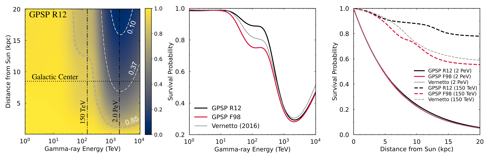<br />
图注：Two-dimensional visualization of the survival phase space toward the GC ($l = 0^{\circ},\, b = 0^{\circ}$) direction. \(\textbf{Left:}\) Survival probability distribution as a function of gamma-ray energy and distance from the Sun, derived from the GPSP R12 atlas. White dashed contours indicate survival probability levels of 0.10, 0.37 and 0.85. The horizontal dotted and vertical dash--dotted black lines mark reference values corresponding to the GC distance ($d = 8.5$~kpc), and $E_{\gamma} = 150$~TeV and 2~PeV energies, respectively. \(\textbf{Middle:}\) Survival probability as a function of energy for gamma rays originating from the GC at 8.5~kpc. The GPSP R12 (solid black) GPSP F98 (solid red) results are compared with the results of \(\citet{vernetto}\) (solid gray). \(\textbf{Right:}\) Survival probability as a function of distance along the line of sight toward the GC for $E_{\gamma} = 150$~TeV (dashed lines) and $E_{\gamma} = 2$~PeV (solid lines), shown up to 20~kpc, comparing the GPSP R12 (black), GPSP F98 (red) and \(\citet{vernetto}\) (gray) profiles.<br />
对应解读：建议重点查看的图表第1项；关键图表逐图导读中的“图2：能量—距离相空间图”；模型拟合中关于伽马视界和最高能段传播修正的讨论。<br />
入选理由：这是最直接展示GPSP核心诊断量的图：横轴能量、纵轴距离、颜色为存活概率，并给出P=0.10、0.37、0.85等视界等值线；同时比较R12、F98和既有结果，能支持日报中关于100–300 TeV和PeV附近伽马视界位置、银心方向传播吸收以及ISRF模型差异的解读。<br />
来源与置信度：\(arxiv_source\)；high；\(arxiv_source\) / main.tex:figure[7]</p>
<p><strong>Fig12</strong><br />
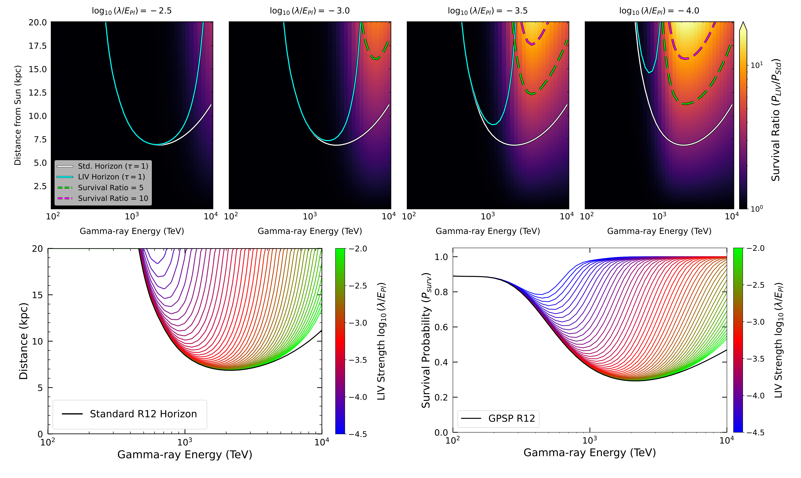<br />
图注：Impact of subluminal LIV on the Galactic propagation of UHE gamma rays. \(\textbf{Top panels:}\) Survival probability ratio maps ($P_{\rm LIV}/P_{\rm Std}$) as a function of gamma-ray energy and source distance toward the GC direction for $\log_{10}(\lambda/E_{\rm Pl})=-2.5$, $-3.0$, $-3.5$, and $-4.0$. White and cyan curves denote the $\tau=1$ gamma-ray horizons for the standard and LIV scenarios, respectively. Dashed contours indicate survival ratio levels of 5 and 10. \(\textbf{Bottom left:}\) Gamma-ray horizon distance as a function of energy for the full LIV parameter range explored in the GPSP-LIV atlas ($\log_{10}(\lambda/E_{\rm Pl})=-4.5$ to $-2.0$). The standard GPSP R12 prediction is shown by the black curve. \(\textbf{Bottom right:}\) Survival probability profiles for a source at the GC distance of $d=8.5$~kpc for the same LIV parameter range, compared with the standard GPSP R12 atlas (black curve). Increasing LIV strength progressively enhances Galactic transparency and extends the gamma-ray horizon at PeV energies.<br />
对应解读：建议重点查看的图表第6项；关键图表逐图导读中的“图6：GPSP-LIV图”；模型拟合中关于LIV参数、PeV段退化关系和最高能残差诊断的讨论。<br />
入选理由：该图明确给出P_LIV/P_Std的能量—距离比值图、标准与LIV的tau=1视界线以及GC距离处的存活概率曲线，正好对应日报强调的2–3 PeV区域LIV增强透明度和伽马视界外源作为新物理探针的核心判断。<br />
来源与置信度：\(arxiv_source\)；high；\(arxiv_source\) / main.tex:figure[12]</p>
<p><strong>Fig08</strong><br />
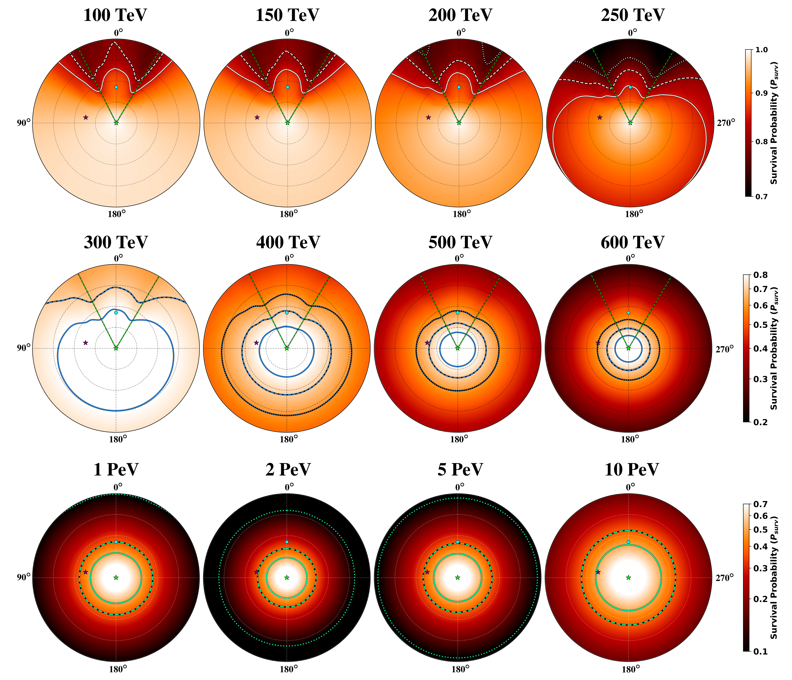<br />
图注：Bird's-eye view maps of Galactic gamma-ray survival probability ($P_{\mathrm{Surv}}$) at twelve representative energies. In all panels, markers denote the Sun (lime star), Galactic Center (cyan circle), and Cygnus X-3 (purple star). Tangential directions for the Norma ($l=329^{\circ}$) and Scutum--Crux ($l=30^{\circ}$) arms are indicated by dashed green lines. \(\textbf{Top Row:}\) Survival probability maps for 100, 150, 200, and 250~TeV. Solid, dashed, and dotted white lines represent the 0.85, 0.80, and 0.75 contours, respectively. \(\textbf{Middle Row:}\) Maps for 300, 400, 500, and 600~TeV. Solid, dashed, and dotted blue lines indicate the 0.80, 0.70, and 0.60 contours, respectively. \(\textbf{Bottom Row:}\) Maps for 1, 2, 5, and 10~PeV. Solid, dashed, and dotted lime lines mark the 0.50, 0.37, and 0.10 contours, respectively. Color scales are adjusted independently per row to optimize visual contrast across varying opacity regimes.<br />
对应解读：建议重点查看的图表第2项；详细解读中关于全银河透明度、旋臂切线方向增强吸收以及PeV能区近似各向同性的关键结果。<br />
入选理由：这组十二个能量切片的银河鸟瞰存活概率图直接展示100 TeV到10 PeV的透明度结构，并标出太阳、银心、Cygnus X-3以及Norma和Scutum--Crux旋臂切线方向；比单一方向曲线更能支撑日报对银河尺度结构化不透明性的说明。<br />
来源与置信度：\(arxiv_source\)；high；\(arxiv_source\) / main.tex:figure[8]</p>
<p><strong>Fig10</strong><br />
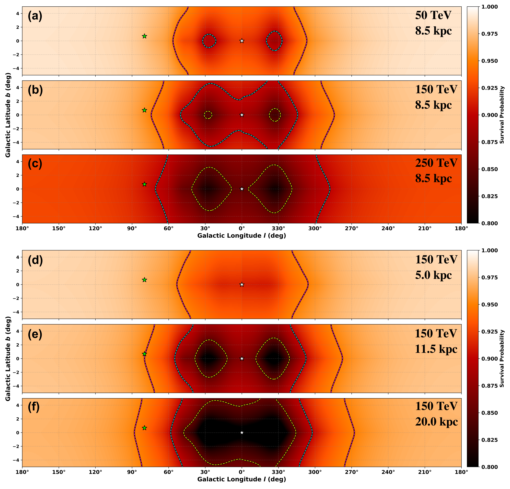<br />
图注：The Galactic Plane survival probability maps reconstructed from the GPSP atlas. In all panels, the white and green stars indicate the positions of the GC and the Cygnus X-3 region, respectively. The dashed magenta, cyan, and yellow lines represent the 0.95, 0.90, and 0.85 survival probability contours. The top row (a--c) presents maps at a fixed source distance of $d = 8.5$~kpc for gamma-ray energies of 50, 150, and 250~TeV, respectively. The bottom row (d--f) presents maps at a fixed energy of $E = 150$~TeV for source distances of 5.0, 11.5, and 20.0~kpc.<br />
对应解读：建议重点查看的图表第3项；关键图表逐图导读中的“图4：银河平面P(l,\(E_gamma\))图”及关于100–300 TeV方向差异的讨论。<br />
入选理由：该图聚焦银河平面存活概率，在固定距离下比较50、150、250 TeV，并在固定150 TeV下比较不同源距，适合检查银心和Cygnus X-3附近以及银河盘上吸收槽随能量和距离的变化，是日报中银河平面方向结构判断的主要依据。<br />
来源与置信度：\(arxiv_source\)；high；\(arxiv_source\) / main.tex:figure[10]</p>
<p><strong>Fig06</strong><br />
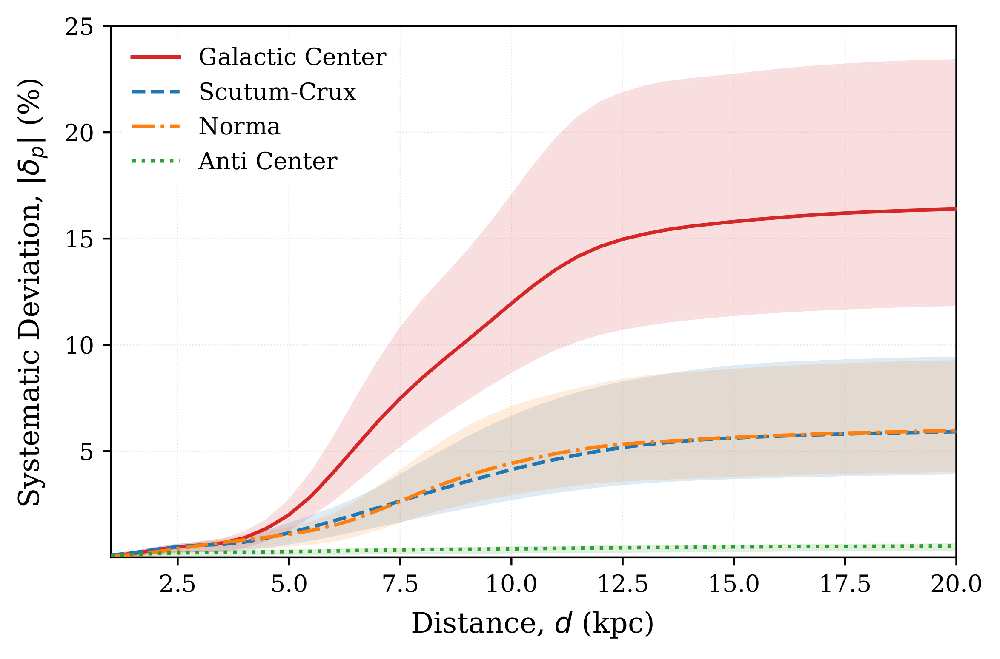<br />
图注：Distance dependence of the model-dependent systematic uncertainties of the GPSP atlas in the 50--200 TeV energy interval. Different lines show the median absolute fractional deviation $|\delta_{P}|$ between the R12 and F98 ISRF models for the Galactic Center (red solid), Scutum--Crux (blue dashed), Norma (orange dot--dashed line), and Galactic anticenter (green dotted) regions, respectively. Shaded bands indicate the corresponding 68$\%$ intervals.<br />
对应解读：建议重点查看的图表第4项；关键图表逐图导读中的“图5：两个ISRF模型对比图”；模型拟合中关于ISRF系统误差、源距退化和误差预算的讨论。<br />
入选理由：这张图直接量化R12与F98两个ISRF模型在50–200 TeV区间造成的存活概率分数偏差，并按银心、Scutum--Crux、Norma和反银心方向给出距离依赖及68%区间，是复用GPSP图集时最关键的系统误差诊断图。<br />
来源与置信度：\(arxiv_source\)；high；\(arxiv_source\) / main.tex:figure[6]</p>
<p><strong>Fig09</strong><br />
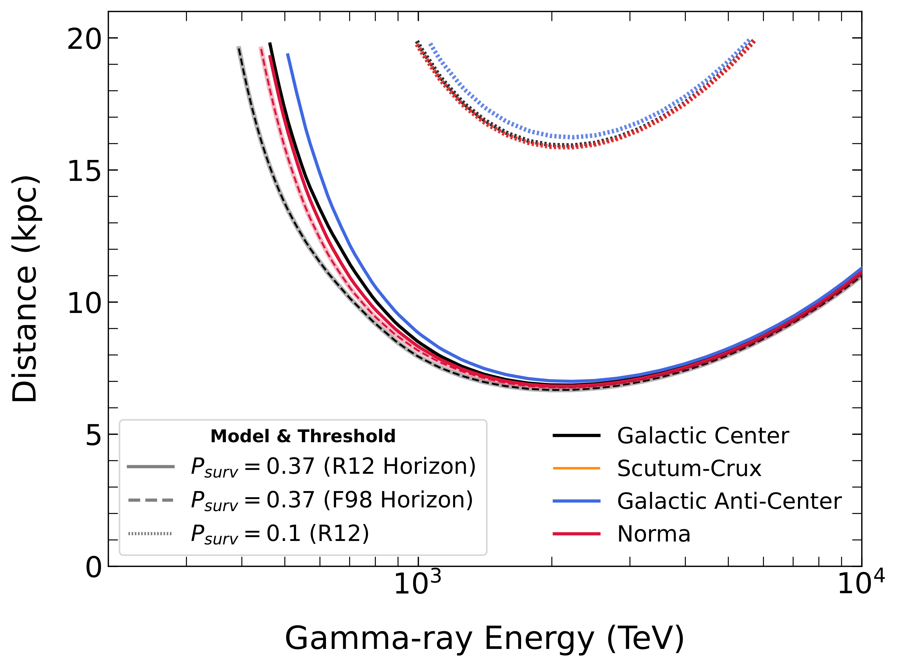<br />
图注：Gamma-ray horizon distances as a function of energy for four representative Galactic directions: GC ($l$=$0^{\circ}$, $b$=$0^{\circ}$; black), Scutum--Crux tangent ($l$=$30^{\circ}$, $b$=$0^{\circ}$; red), Norma ($l$=$329^{\circ}$, $b$=$0^{\circ}$; orange), and AC ($l$=$180^{\circ}$, $b=$0$^{\circ}$; blue). Horizons are defined by survival probability thresholds $P_{\mathrm{surv}}$=0.37 (solid) and $0.10$ (dotted) from the GPSP R12 atlas. Dashed lines indicate the $P_{\mathrm{surv}}$=0.37 horizon for the GC and Norma directions from the GPSP F98 atlas for comparison.<br />
对应解读：建议重点查看的图表第1、2项；关键结果中关于不同方向伽马射线视界和旋臂切线方向吸收增强的讨论。<br />
入选理由：该图把P_surv=0.37和0.10定义的伽马视界距离画成能量函数，并比较GC、Scutum--Crux、Norma和反银心等代表方向，还叠加F98结果；它比普通存活概率剖面更便于读者直接判断不同能量下哪些银河方向已超出可透明传播距离。<br />
来源与置信度：\(arxiv_source\)；high；\(arxiv_source\) / main.tex:figure[9]</p>
<h4 id="_12">强相关工作</h4>
<p>这项工作与三类文献相连。第一类是银河系 PeV 伽马源和 PeVatron 观测，包括 LHAASO 对超高能银河源的目录、银心 PeVatron 讨论、Cygnus 区域高能辐射研究。这些是 GPSP 的直接应用场景，检索关键词可用 “LHAASO PeVatron Galactic gamma-ray sources”、“Galactic Center PeVatron H.E.S.S.”、“Cygnus Cocoon TeV PeV gamma rays”。</p>
<p>第二类是星际辐射场与宇宙线传播模型，尤其 GALPROP、ISRF、尘埃红外辐射和银河三维辐射场重建。GPSP 的主要系统误差来自这里。检索关键词可用 “GALPROP interstellar radiation field Porter Moskalenko Strong”、“gamma gamma absorption Galactic interstellar radiation field”、“Milky Way radiation field pair production opacity”。</p>
<p>第三类是 LIV 与 \(\gamma\gamma\) 吸收阈值修正。河外 TeV blazar 的 EBL 吸收和银河 PeV 光子都可用于限制 LIV，但系统误差结构不同：河外源受 EBL 和红移演化影响，银河源受距离、ISRF 和源本征谱影响。检索关键词可用 “Lorentz invariance violation photon photon pair production gamma ray horizon”、“LIV PeV gamma rays LHAASO”。</p>
<p>同源/同事件语境上，本文不是单一瞬变或单一源论文，而是同类源和方法图集论文；它包含银心 PeVatron 与 Cygnus X-3 区域的应用示例。读者应把它放在同类源目录、GALPROP 基础模型、\(\gamma\gamma\) 吸收理论和 LIV 搜索文献的交叉处阅读，而不是当成某个源的最终物理解释。</p>
<p><strong>同一事件 / 同类源线索</strong>：</p>
<ul>
<li><a href="https://arxiv.org/abs/2608.24862">https://arxiv.org/abs/2608.24862</a></li>
<li><a href="https://arxiv.org/pdf/2608.24862">https://arxiv.org/pdf/2608.24862</a></li>
<li><a href="https://galprop.stanford.edu/">https://galprop.stanford.edu/</a></li>
<li><a href="https://www.mpi-hd.mpg.de/hfm/HESS/pages/publications/auxiliary/2016/GC_pevatron/">https://www.mpi-hd.mpg.de/hfm/HESS/pages/publications/auxiliary/2016/GC_pevatron/</a></li>
</ul>
<p><strong>相似工作</strong>：</p>
<ul>
<li><a href="https://arxiv.org/abs/2105.07916">https://arxiv.org/abs/2105.07916</a></li>
<li><a href="https://arxiv.org/abs/1603.07730">https://arxiv.org/abs/1603.07730</a></li>
<li><a href="https://arxiv.org/abs/1906.07609">https://arxiv.org/abs/1906.07609</a></li>
</ul>
<p><strong>基础理论 / 方法工作</strong>：</p>
<ul>
<li><a href="https://galprop.stanford.edu/">https://galprop.stanford.edu/</a></li>
<li><a href="https://ui.adsabs.harvard.edu/abs/1998ApJ...493..694S/abstract">https://ui.adsabs.harvard.edu/abs/1998ApJ...493..694S/abstract</a></li>
<li><a href="https://ui.adsabs.harvard.edu/abs/2000ApJ...537..763M/abstract">https://ui.adsabs.harvard.edu/abs/2000ApJ...537..763M/abstract</a></li>
<li><a href="https://ui.adsabs.harvard.edu/abs/1934PhRv...46.1087B/abstract">https://ui.adsabs.harvard.edu/abs/1934PhRv...46.1087B/abstract</a></li>
</ul>
<p><strong>相反观点 / 张力线索</strong>：</p>
<ul>
<li><a href="https://arxiv.org/abs/0807.2822">https://arxiv.org/abs/0807.2822</a></li>
<li><a href="https://arxiv.org/abs/0810.1312">https://arxiv.org/abs/0810.1312</a></li>
</ul>
</details>
<h3 id="2-observations-of-ionized-carbon-towards-the-astro_math_1912-ray-bright-supernova-remnant-rx-j17137-3946">2. Observations of ionized carbon towards the $γ$-ray-bright supernova remnant RX J1713.7-3946</h3>
<ul>
<li>来源：arXiv / astro-ph.HE</li>
<li>链接：https://arxiv.org/abs/2608.24181v1</li>
<li>作者：A. R. Thakur, G. P. Rowell, R. Higgins, M. Burton, Y. Fukui, S. Einecke, H. Sano, G. Wong</li>
<li>评分：novelty 8/10，importance 8/10，relevance 10/10，final 9.70/10</li>
<li>推荐理由：SOFIA [C II]观测H.E.S.S. TeV亮SNR RX J1713.7-3946，探索低能CR电离示踪，与伽马射线SNR和宇宙线起源高度相关。</li>
</ul>
<p><strong>中文题目</strong>：用电离碳观测追踪伽马射线亮超新星遗迹 RX J1713.7-3946 中的低能宇宙线</p>
<p><strong>做了什么</strong>：这篇文章用 SOFIA 观测了超新星遗迹 RX J1713.7-3946 方向的 \([\mathrm{C\,II}]\) \(158\,\mu\mathrm{m}\) 精细结构线，并把它同 \(^{12}\mathrm{CO}\)、\(\mathrm{H\,I}\)、H.E.S.S. TeV 伽马射线和 XMM-Newton X 射线图像比较。核心问题是：在很难直接观测的 \(<1\,\mathrm{GeV}\) 宇宙线能段，\([\mathrm{C\,II}]\) 是否能作为宇宙线电离的间接示踪。作者发现 \([\mathrm{C\,II}]\) 更贴近原子气体而非分子气体，在靠近激波前沿的若干区域，\([\mathrm{C\,II}]\) 相对气体柱密度的比值升高，并与 TeV 伽马射线增强区重合。结合 Herschel GOT C+ 巡天和 CLOUDY 模型，论文认为紫外光子和低能宇宙线都能产生可比的 \([\mathrm{C\,II}]\) 辐射；如果低能宇宙线在激波内被加速并被困住，\([\mathrm{C\,II}]\) 有潜力成为超新星遗迹中低能宇宙线作用的补充诊断。</p>
<p><strong>为什么重要</strong>：RX J1713.7-3946 是讨论银河宇宙线起源时绕不开的伽马射线亮壳型超新星遗迹，但 TeV 伽马射线主要约束高能粒子，X 射线主要约束高能电子，二者都不直接告诉我们 \(<1\,\mathrm{GeV}\) 粒子在气体中的电离作用。低能宇宙线决定分子云和原子云的电离率、化学状态、磁耦合和冷却，却因太阳调制和传播效应难以在地球附近反推出源区谱。本文把远红外 \([\mathrm{C\,II}]\) 线加入 RX J1713.7-3946 的多波段图景，是一次把气体冷却线、伽马射线和激波环境联系起来的尝试。</p>
<p><strong>理论 / 观测 / 仪器方法价值</strong>：对理论而言，这项工作提供了一个检验低能宇宙线是否随激波局域增强的观测入口，可与强子 \(\gamma\) 射线模型、轻子反康普顿模型以及粒子逃逸模型对照。对观测而言，它展示了 \([\mathrm{C\,II}]\)、\(\mathrm{H\,I}\)、\(\mathrm{CO}\)、TeV 伽马射线和 X 射线的联合使用方式，并提醒读者仅用 \(\mathrm{CO}\) 追踪靶物质可能漏掉原子相和 \(\mathrm{CO}\)-dark \(\mathrm{H}_2\)。对方法而言，文章用 GOT C+ 样本和 CLOUDY 模型评估 \([\mathrm{C\,II}]\) 的非唯一来源，避免把所有 \([\mathrm{C\,II}]\) 增强都简单归因于宇宙线。</p>
<p><strong>为什么应该关注</strong>：如果你关心 RX J1713.7-3946 的伽马射线到底是强子还是轻子起源，本文不会给出终局答案，但它指出了一个经常被忽略的约束维度：低能粒子对气体电离和冷却线的影响。如果你做星际介质、超新星遗迹环境或未来远红外观测，这篇文章有实际参考价值，因为它说明 \([\mathrm{C\,II}]\) 既可能是宇宙线信号，也可能被紫外辐射场、密度、温度和相结构严重混淆；真正有判别力的是空间相关性、柱密度归一化后的残差以及与高能辐射的联合建模。</p>
<details class="paper-detail">
<summary>展开详细解读：文章讲解、背景、理论、重点章节、图表与相关工作</summary>
<h4 id="_13">文章详细讲解</h4>
<p>科学问题：银河宇宙线源区的低能部分尤其难测。RX J1713.7-3946 是一个 TeV 伽马射线很亮、壳状结构清楚、与复杂分子和原子气体相互作用的年轻超新星遗迹。高能伽马射线可来自相对论质子与气体碰撞产生的 \(\pi^0\) 衰变，也可来自高能电子的反康普顿散射；但无论哪种解释，\(<1\,\mathrm{GeV}\) 的粒子分布都不容易由 TeV 图像直接推出。本文问的是：远红外 \([\mathrm{C\,II}]\) \(158\,\mu\mathrm{m}\) 线能否在空间上揭示低能宇宙线在遗迹边界附近对气体的电离和加热作用。</p>
<p>作者怎么做：作者用 SOFIA 取得 RX J1713.7-3946 方向的 \([\mathrm{C\,II}]\) 线观测，并同 Mopra 与 Nanten 的 \(^{12}\mathrm{CO}\) 数据、SGPS 的 \(\mathrm{H\,I}\) 数据、H.E.S.S. 的 TeV 伽马射线图像和 XMM-Newton 的 X 射线图像进行配准和比较。分析重点不是单纯寻找 \([\mathrm{C\,II}]\) 亮区，而是比较 \([\mathrm{C\,II}]\) 与不同气体相、激波边界和高能辐射的相对关系。作者还计算 \([\mathrm{C\,II}]\) 强度相对于气体柱密度的比值，以减少单纯气体量变化造成的假相关。</p>
<p>关键结果：\([\mathrm{C\,II}]\) 在空间上更接近 \(\mathrm{H\,I}\) 原子气体，而不是最亮的 \(^{12}\mathrm{CO}\) 分子气体。这一点很重要，因为 RX J1713.7-3946 的强子模型常常强调分子云靶物质，但低能宇宙线电离和 \([\mathrm{C\,II}]\) 冷却可能主要发生在原子相、云边界或 \(\mathrm{CO}\)-dark 气体中。论文还指出若干 \([\mathrm{C\,II}]\) 与气体柱密度之比的峰值区域与 TeV 伽马射线增强区相邻或重合，提示这些位置可能存在更强的粒子-气体相互作用。</p>
<p>更宽背景检验：作者没有只在 RX J1713.7-3946 内部解释 \([\mathrm{C\,II}]\)，还检查 Herschel GOT C+ 巡天点源方向，比较星形成区、\(\mathrm{H\,II}\) 区和超新星遗迹方向的 \(I_{[\mathrm{C\,II}]}/I_{^{12}\mathrm{CO}}\) 比值。结果显示这些类别之间没有显著差异，因此 \([\mathrm{C\,II}]\) 不是一个只要看到增强就能独立标记超新星遗迹宇宙线的干净诊断量。它必须与环境、速度结构、气体相和辐射场一起解释。</p>
<p>局限和下一步：CLOUDY 模型显示紫外光子和宇宙线在合理参数下都能产生相近水平的 \([\mathrm{C\,II}]\) 辐射，因此本文的结论应理解为“\([\mathrm{C\,II}]\) 是有希望的低能宇宙线示踪量”，而不是“\([\mathrm{C\,II}]\) 已经证明低能宇宙线增强”。下一步需要更完整的远红外谱线组合，例如 \([\mathrm{O\,I}]\)、\([\mathrm{N\,II}]\)、高 \(J\) \(\mathrm{CO}\) 和离子分子线，并需要速度分辨更好的 \([\mathrm{C\,II}]\) 数据来区分前景、背景和真正与激波相互作用的气体。</p>
<h4 id="_14">关键结果是怎么做出来的</h4>
<p>本文最重要的证据链从样本选择开始：目标不是普通星际云，而是 TeV 伽马射线亮、壳状结构突出的 RX J1713.7-3946。作者用 SOFIA 的 \([\mathrm{C\,II}]\) \(158\,\mu\mathrm{m}\) 观测覆盖遗迹相关区域，并选取已有的 \(^{12}\mathrm{CO}\)、\(\mathrm{H\,I}\)、H.E.S.S. TeV 和 XMM-Newton X 射线图像作为对照。样本层面还加入 Herschel GOT C+ 巡天点位，用来判断 \([\mathrm{C\,II}]\) 与 \(\mathrm{CO}\) 的比值在超新星遗迹方向是否真的异常。</p>
<p>空间相关性是第一层结果。若 \([\mathrm{C\,II}]\) 只是普通光解离区或分子云表面冷却线，它应较强地贴合 \(^{12}\mathrm{CO}\) 或已知星形成区；若它与激波作用下的低能宇宙线有关，则可能更靠近激波前沿、原子气体和高能辐射增强区。论文报告 \([\mathrm{C\,II}]\) 更接近 \(\mathrm{H\,I}\) 分布，尤其是在靠近遗迹激波边缘的区域，而与最强 \(^{12}\mathrm{CO}\) 结构并非一一对应。这支持一个较具体的物理图像：被激波处理的原子相或云外层可能是 \([\mathrm{C\,II}]\) 的主要发光位置。</p>
<p>第二层证据是归一化比值，而非裸强度。作者计算 \([\mathrm{C\,II}]\) 强度相对气体柱密度的比值，检查哪些地方单位气体量产生了更多 \([\mathrm{C\,II}]\) 辐射。这一步很关键，因为气体多的地方天然线强更高，不代表电离率或加热率更高。论文称这些比值的峰值与 TeV 伽马射线增强区域相符或相邻，这使结果更接近粒子作用诊断，而不只是气体图像叠图。</p>
<p>统计显著性方面，摘要未给出单一的 \(\sigma\) 值或事件计数式发现，因此读者应把本文看作多波段相关性和物理建模论文，而非盲搜显著性论文。GOT C+ 的比较起到了外部对照样本作用：作者检查不同类别方向的 \(I_{[\mathrm{C\,II}]}/I_{^{12}\mathrm{CO}}\)，发现星形成区、\(\mathrm{H\,II}\) 区和超新星遗迹方向没有显著差别。这个负结果反而是稳健性约束，说明单个线比不能作为宇宙线增强的充要证据。</p>
<p>模型比较由 CLOUDY 完成。作者用光电离和宇宙线电离两类输入估算 \([\mathrm{C\,II}]\) 发射能力，发现紫外光子和低能宇宙线可以给出可比的线强。其结论依赖低能宇宙线是否在 \(<1\,\mathrm{GeV}\) 范围内被加速并滞留于激波附近，也依赖局部密度、辐射场和碳丰度。主要系统误差包括前景和背景气体混叠、\(\mathrm{H\,I}\) 光深修正、\(\mathrm{CO}\)-to-\(\mathrm{H}_2\) 转换因子、\([\mathrm{C\,II}]\) 来自电离气体或普通 PDR 的贡献，以及不同数据集角分辨率和速度覆盖不一致。</p>
<p>支撑结论的图表应包括 \([\mathrm{C\,II}]\) 积分强度图与 \(\mathrm{H\,I}\)、\(^{12}\mathrm{CO}\)、TeV 和 X 射线轮廓叠加图；\([\mathrm{C\,II}]\) 强度除以柱密度的空间分布图；GOT C+ 中不同源类的 \(I_{[\mathrm{C\,II}]}/I_{^{12}\mathrm{CO}}\) 分布图；以及 CLOUDY 预测的 \([\mathrm{C\,II}]\) 发射随紫外场、密度和宇宙线电离率变化的模型曲线。读者要重点看峰值是否在同一速度分量和同一物理结构上，而不是只看二维投影重合。</p>
<details class="paper-subdetail">
<summary>展开背景、理论、公式、模型、章节和图表导读</summary>
<h4 id="_15">背景知识</h4>
<p>RX J1713.7-3946 是银河系中研究最多的非热辐射壳型超新星遗迹之一。它在 X 射线同步辐射和 TeV 伽马射线中都很亮，壳状形态清晰，因此常被用来讨论超新星遗迹是否能把强子加速到银河宇宙线所需能量。围绕它的关键争论是高能伽马射线究竟主要来自质子与气体碰撞的强子过程，还是来自电子对低能光子场的反康普顿散射。</p>
<p>过去二十多年，RX J1713.7-3946 的气体环境被 \(\mathrm{CO}\)、\(\mathrm{H\,I}\) 和尘埃辐射反复研究。一个难点是，伽马射线亮区不总是与最亮的 \(\mathrm{CO}\) 云严格重合；同时，若存在大量原子气体或 \(\mathrm{CO}\)-dark \(\mathrm{H}_2\)，只用 \(\mathrm{CO}\) 估计靶物质会偏差很大。另一个难点是投影效应：视线上的多个速度分量可能并不与超新星遗迹相互作用，却会在二维图像上看似相关。</p>
<p>\([\mathrm{C\,II}]\) \(158\,\mu\mathrm{m}\) 是星际介质中最重要的冷却线之一，来自 \(\mathrm{C}^+\) 的精细结构跃迁。由于碳的一阶电离能低于氢，\(\mathrm{C}^+\) 可存在于中性原子气体、分子云外层、光解离区、\(\mathrm{CO}\)-dark 分子气体乃至部分电离气体中。这使 \([\mathrm{C\,II}]\) 既灵敏又麻烦：它对许多环境都会响应，不能被单独解释为某一种物理机制。</p>
<p>为什么现在值得重新看？一方面，低能宇宙线在源区附近的分布是高能天体物理和星际化学共同关心的问题；另一方面，远红外谱线观测和历史数据集已经能与 TeV 伽马射线、X 射线和毫米波数据进行较细致的空间比较。SOFIA 虽已结束运行，但其 \([\mathrm{C\,II}]\) 数据仍然为类似超新星遗迹研究留下了稀缺样本。</p>
<p>该领域常见误区有两个。第一，看到 \([\mathrm{C\,II}]\) 增强就直接说是宇宙线电离，这是不充分的，因为紫外光子、冲击加热和普通 PDR 都能增强 \([\mathrm{C\,II}]\)。第二，看到 TeV 伽马射线和气体重合就断言强子起源，也不充分，因为电子反康普顿模型可以在某些磁场和辐射场条件下复制类似谱形；气体相关性、谱形、形态和多相介质结构必须一起考虑。</p>
<h4 id="_16">基础理论 / 方法脉络</h4>
<p>从物理图像看，\([\mathrm{C\,II}]\) \(158\,\mu\mathrm{m}\) 线来自 \(\mathrm{C}^+\) 基态精细结构能级之间的跃迁。碰撞粒子可以是 \(\mathrm{H}\)、\(\mathrm{H}_2\) 或电子；当气体密度接近或超过相应临界密度时，激发效率较高，线强与 \(\mathrm{C}^+\) 柱密度和温度有关。当密度低于临界密度时，线强还强烈依赖碰撞率，因此不能把 \([\mathrm{C\,II}]\) 强度简单等同于碳柱密度。</p>
<p>宇宙线影响 \([\mathrm{C\,II}]\) 的路径主要有两条。其一，低能宇宙线通过电离和二次电子加热气体，提高温度和电子丰度，从而改变 \(\mathrm{C}^+\) 激发。其二，宇宙线可以维持或增强某些化学通道，使碳更多地处于离子态。相比之下，紫外光子通过光电离碳和尘埃光电加热也能产生相似效果，因此 \([\mathrm{C\,II}]\) 是“电离和加热状态”的示踪，不是“宇宙线”的唯一示踪。</p>
<p>本文的观测逻辑是把 \([\mathrm{C\,II}]\) 与多相气体和高能辐射对齐。\(^{12}\mathrm{CO}\) 主要示踪较冷且有足够屏蔽的分子气体，\(\mathrm{H\,I}\) 示踪原子气体，TeV 伽马射线示踪高能粒子辐射过程，X 射线同步辐射示踪高能电子和磁场。若 \([\mathrm{C\,II}]\) 在激波前沿附近相对 \(\mathrm{H\,I}\) 或总气体柱密度异常增强，并且与 TeV 壳结构相关，就可能提示粒子加热和电离参与其中。</p>
<p>模型层面，CLOUDY 这类光电离和等离子体谱合成代码会在给定密度、元素丰度、辐射场、宇宙线电离率和几何条件下求解热平衡、化学平衡和能级布居。本文使用这类模型的关键不是拟合一个唯一参数，而是比较紫外驱动和宇宙线驱动是否都能达到观测到的 \([\mathrm{C\,II}]\) 量级。若两类模型都可行，空间信息和辅助谱线就变得决定性。</p>
<p>常见退化包括密度与辐射场退化、碳丰度与柱密度退化、\(\mathrm{H\,I}\) 光深与总气体量退化、\(X_{\mathrm{CO}}\) 与 \(\mathrm{H}_2\) 质量退化，以及宇宙线电离率与气体温度退化。系统误差还包括不同望远镜波束大小不同、速度积分范围选择不同、前景背景扣除不完全，以及 \([\mathrm{C\,II}]\) 可能来自未被 \(\mathrm{CO}\) 追踪的分子气体或电离气体。</p>
<h4 id="_17">公式与推导</h4>
<p>第一步，从 \(\mathrm{C}^+\) 二能级精细结构线的辐射转移出发。若线近似光薄，积分强度可写为</p>
<div class="math-display">\[I_{[\mathrm{C\,II}]}=\frac{h\nu A_{ul}}{4\pi}N_u,\]</div>
<p>其中 \(h\) 是普朗克常数，\(\nu\) 是 \([\mathrm{C\,II}]\) 线频率，\(A_{ul}\) 是自发跃迁系数，\(N_u\) 是上能级柱密度。这个式子说明观测到的表面亮度首先约束的是上能级布居，而不是总碳量。</p>
<p>第二步，上能级布居由碰撞激发和自发退激发控制。二能级统计平衡可近似写成</p>
<div class="math-display">\[n_l\sum_i n_i q_{lu}^{(i)}=n_u\left(A_{ul}+\sum_i n_i q_{ul}^{(i)}\right),\]</div>
<p>其中 \(n_l\) 和 \(n_u\) 是下、上能级数密度，\(n_i\) 是碰撞体 \(i\) 的密度，\(q_{lu}^{(i)}\) 和 \(q_{ul}^{(i)}\) 是碰撞激发和退激发率系数。碰撞体可以是 \(\mathrm{H}\)、\(\mathrm{H}_2\) 或 \(e^-\)。</p>
<p>第三步，临界密度给出线强对气体密度的敏感性：</p>
<div class="math-display">\[n_{\mathrm{crit},i}=\frac{A_{ul}}{q_{ul}^{(i)}}.\]</div>
<p>当 \(n_i\ll n_{\mathrm{crit},i}\) 时，\(I_{[\mathrm{C\,II}]}\)<br />
) 近似随 \(n_i N(\mathrm{C}^+)\) 增加；当 \(n_i\gg n_{\mathrm{crit},i}\) 时，能级接近热化，线强主要由 \(N(\mathrm{C}^+)\) 和温度控制。</p>
<p>第四步，把碳离子柱密度同气体柱密度联系起来。若 \(x_{\mathrm{C}^+}\) 是每个氢核对应的 \(\mathrm{C}^+\) 丰度，则</p>
<div class="math-display">\[N(\mathrm{C}^+)=x_{\mathrm{C}^+}N_{\mathrm{H}},\]</div>
<p>其中 \(N_{\mathrm{H}}=N(\mathrm{H})+2N(\mathrm{H}_2)\)。本文使用 \([\mathrm{C\,II}]\) 强度与气体柱密度之比，实质上是在寻找 \(x_{\mathrm{C}^+}\)、温度或激发效率的空间异常。</p>
<p>第五步，气体柱密度来自原子和分子示踪。常用近似为</p>
<div class="math-display">\[N(\mathrm{H\,I})=1.823\times10^{18}\int T_b(v)\,dv\ \mathrm{cm}^{-2},\]</div>
<p>其中 \(T_b(v)\) 是 \(\mathrm{H\,I}\) 亮温，速度积分单位通常为 \(\mathrm{K\,km\,s^{-1}}\)，该式假设 \(\mathrm{H\,I}\) 光薄。分子部分常写为</p>
<div class="math-display">\[N(\mathrm{H}_2)=X_{\mathrm{CO}}W_{\mathrm{CO}},\]</div>
<p>其中 \(W_{\mathrm{CO}}=\int T_{\mathrm{CO}}(v)\,dv\)，\(X_{\mathrm{CO}}\) 是 \(\mathrm{CO}\)-to-\(\mathrm{H}_2\) 转换因子。</p>
<p>第六步，若低能宇宙线提供电离，电离率可由粒子谱估计为</p>
<div class="math-display">\[\zeta_{\mathrm{CR}}=4\pi\int j(E)\sigma_{\mathrm{ion}}(E)\,dE,\]</div>
<p>其中 \(j(E)\) 是宇宙线微分强度，\(\sigma_{\mathrm{ion}}(E)\) 是电离截面。由于 \(\sigma_{\mathrm{ion}}(E)\) 在低能段权重大，\(\zeta_{\mathrm{CR}}\) 对 \(<1\,\mathrm{GeV}\) 粒子尤其敏感。</p>
<p>第七步，宇宙线加热率可近似写成</p>
<div class="math-display">\[\Gamma_{\mathrm{CR}}=n_{\mathrm{H}}\zeta_{\mathrm{CR}}Q,\]</div>
<p>其中 \(n_{\mathrm{H}}\) 是氢核数密度，\(Q\) 是每次电离沉积为热的平均能量。热平衡要求</p>
<div class="math-display">\[\Gamma_{\mathrm{CR}}+\Gamma_{\mathrm{UV}}=\Lambda_{[\mathrm{C\,II}]}+\Lambda_{\mathrm{other}},\]</div>
<p>其中 \(\Gamma_{\mathrm{UV}}\) 是紫外加热，\(\Lambda_{[\mathrm{C\,II}]}\)<br />
) 是 \([\mathrm{C\,II}]\) 冷却，\(\Lambda_{\mathrm{other}}\) 包括其他线冷却和尘埃耦合。这正是紫外场与宇宙线电离率退化的物理来源。</p>
<p>第八步，为比较空间相关性，可定义柱密度归一化诊断量</p>
<div class="math-display">\[R_{\mathrm{CII}/\mathrm{H}}=\frac{I_{[\mathrm{C\,II}]}}{N_{\mathrm{H}}}.\]</div>
<p>若 \(R_{\mathrm{CII}/\mathrm{H}}\) 在激波和 TeV 增强区升高，它比裸 \(I_{[\mathrm{C\,II}]}\)<br />
) 更能提示单位气体量的激发或电离增强。</p>
<p>第九步，若要把模型同观测图像定量比较，可使用高斯误差下的似然</p>
<div class="math-display">\[\ln \mathcal{L}=-\frac{1}{2}\sum_k\left[\frac{I_k^{\mathrm{obs}}-I_k^{\mathrm{mod}}(\boldsymbol{\theta})}{\sigma_k}\right]^2-\sum_k\ln(\sqrt{2\pi}\sigma_k),\]</div>
<p>其中 \(k\) 标记像素或区域，\(\boldsymbol{\theta}\) 包含密度、紫外场、\(\zeta_{\mathrm{CR}}\)、柱密度和丰度等参数。该式可用于评估 CLOUDY 模型或经验模板是否比单纯气体模板更好。</p>
<p>第十步，伽马射线强子图像的最低阶预期是</p>
<div class="math-display">\[q_\gamma(E_\gamma,\mathbf{r})\propto n_{\mathrm{H}}(\mathbf{r})\int N_p(E_p,\mathbf{r})\sigma_{pp}(E_p)F_\gamma(E_\gamma,E_p)\,dE_p,\]</div>
<p>其中 \(N_p(E_p,\mathbf{r})\) 是质子谱，\(\sigma_{pp}\) 是质子-质子碰撞截面，\(F_\gamma\) 是二次伽马射线产额。本文的兴趣在于：若高能 \(N_p\) 产生 TeV 伽马射线，而低能谱同时提高 \(\zeta_{\mathrm{CR}}\)，则 TeV 图像与 \(R_{\mathrm{CII}/\mathrm{H}}\) 的空间联系可能成为粒子-气体相互作用的线索。</p>
<h4 id="_18">模型拟合 / 应用方法</h4>
<p>这类工作的拟合量首先是线强和柱密度。观测端需要把 \([\mathrm{C\,II}]\)、\(\mathrm{H\,I}\)、\(^{12}\mathrm{CO}\)、TeV 和 X 射线数据卷积到可比角分辨率，并在一致的空间区域内提取积分强度、峰值、轮廓和比值。若有速度分辨信息，还要选择与 RX J1713.7-3946 可能相关的速度区间，否则前景背景会直接污染相关性。</p>
<p>参数估计可以有两种层次。经验层次是模板拟合，例如用 \(\mathrm{H\,I}\)、\(\mathrm{CO}\)、TeV 或 X 射线模板线性组合解释 \([\mathrm{C\,II}]\) 图像，比较残差是否在激波前沿系统性为正。物理层次是用 CLOUDY 或类似模型预测 \([\mathrm{C\,II}]\) 强度，参数包括 \(n_{\mathrm{H}}\)、总柱密度、紫外辐射场强度、\(\zeta_{\mathrm{CR}}\)、碳丰度、尘埃性质和几何厚度。</p>
<p>似然函数通常可按区域或像素写成强度残差的 \(\chi^2\)，但要注意误差并非只有测量噪声。波束匹配、背景扣除、绝对定标、\(\mathrm{H\,I}\) 光深、\(X_{\mathrm{CO}}\) 和速度分量选择都会产生相关系统误差。若这些系统误差未显式进入协方差矩阵，统计显著性容易被高估。</p>
<p>参数退化是解释本文时的核心问题。提高紫外场、提高宇宙线电离率、提高密度到接近临界密度、提高 \(\mathrm{C}^+\) 柱密度，都可能增强 \([\mathrm{C\,II}]\)。因此只拟合 \([\mathrm{C\,II}]\) 单线无法唯一得到 \(\zeta_{\mathrm{CR}}\)。需要 \([\mathrm{O\,I}]\)、\([\mathrm{N\,II}]\)、\(\mathrm{CO}\) 多跃迁、尘埃温度、离子分子线和伽马射线谱形共同打破退化。</p>
<p>残差诊断比最佳拟合参数更重要。读者应检查模型是否只在个别亮区成功，还是能同时解释低亮度区和高亮度区；是否在 TeV 壳的内外边界出现系统残差；是否在已知星形成或 \(\mathrm{H\,II}\) 区方向把紫外贡献误判为宇宙线贡献。若 \([\mathrm{C\,II}]\) 残差只在激波-气体接触区增强，并且不随普通 PDR 指标增强，那么低能宇宙线解释才更有说服力。</p>
<p>实际应用上，这篇文章提供的是一套筛选框架。未来若要把 \([\mathrm{C\,II}]\) 用作超新星遗迹低能宇宙线探针，应先找伽马射线亮、气体环境有速度分辨、星形成污染较低的遗迹，再做多线远红外和毫米波联合建模。单独的 \([\mathrm{C\,II}]\) 亮度图适合提出候选区域，不适合给出精确宇宙线电离率。</p>
<h4 id="_19">重点章节 / 结果段落怎么读</h4>
<p>数据和样本部分应首先读。重点看 SOFIA \([\mathrm{C\,II}]\) 的覆盖范围、角分辨率、速度分辨率和积分速度范围，以及与 Mopra、Nanten、SGPS、H.E.S.S. 和 XMM-Newton 数据的配准方式。这里决定了后面所有空间相关性的可靠程度。</p>
<p>多波段形态比较部分是本文的主干。读者应检查 \([\mathrm{C\,II}]\) 与 \(\mathrm{H\,I}\)、\(^{12}\mathrm{CO}\)、TeV 伽马射线和 X 射线的叠图，而不是只看文字结论。关键是哪些 \([\mathrm{C\,II}]\) 亮区靠近激波前沿，哪些与分子云重合，哪些可能只是视线方向的无关云。</p>
<p>比值和柱密度归一化分析部分最值得细读。\(I_{[\mathrm{C\,II}]}/N_{\mathrm{gas}}\) 或类似比值能部分消除气体量的影响，更接近激发效率和电离状态诊断。读者应看作者如何估计 \(N(\mathrm{H\,I})\)、\(N(\mathrm{H}_2)\) 和总 \(N_{\mathrm{H}}\)，以及对 \(X_{\mathrm{CO}}\) 和 \(\mathrm{H\,I}\) 光深是否做了讨论。</p>
<p>GOT C+ 对照样本部分用于校准直觉。若不同源类的 \(I_{[\mathrm{C\,II}]}/I_{^{12}\mathrm{CO}}\) 没有显著差异，说明该比值不是超新星遗迹宇宙线的简单分类器。读者应把这一节看成对“过度解释 \([\mathrm{C\,II}]\)”的提醒。</p>
<p>CLOUDY 建模和讨论部分给出物理解释边界。重点读模型输入的密度、辐射场、宇宙线电离率和几何假设，以及紫外模型和宇宙线模型在 \([\mathrm{C\,II}]\) 强度上为何相近。最后的讨论应关注作者是否提出了可观测的区分方案，而不是只给出定性归因。</p>
<h4 id="_20">建议重点查看的图表</h4>
<ol>
<li>
<p>\([\mathrm{C\,II}]\) 积分强度图：看 SOFIA 覆盖是否完整，亮区是否沿 RX J1713.7-3946 壳分布，是否存在明显边缘截断或扫描噪声。</p>
</li>
<li>
<p>\([\mathrm{C\,II}]\) 与 \(\mathrm{H\,I}\) 叠图：看 \([\mathrm{C\,II}]\) 峰是否跟随原子气体脊线，尤其在激波前沿附近是否有共同结构。</p>
</li>
<li>
<p>\([\mathrm{C\,II}]\) 与 \(^{12}\mathrm{CO}\) 叠图：看两者错位还是重合；若 \([\mathrm{C\,II}]\) 不随最强 \(\mathrm{CO}\) 走，说明它可能来自云表层、原子气体或 \(\mathrm{CO}\)-dark 分子气体。</p>
</li>
<li>
<p>\([\mathrm{C\,II}]\) 与 H.E.S.S. TeV 伽马射线轮廓图：看 \([\mathrm{C\,II}]\) 柱密度归一化峰值是否真的与 TeV 增强区重合，还是只是在投影上接近。</p>
</li>
<li>
<p>\([\mathrm{C\,II}]\) 与 XMM-Newton X 射线图：看 \([\mathrm{C\,II}]\) 是否避开最强非热 X 射线区，或是否沿激波边界出现；这有助于区分电子同步辐射区和气体相互作用区。</p>
</li>
<li>
<p>\(I_{[\mathrm{C\,II}]}/N_{\mathrm{gas}}\) 或 \(I_{[\mathrm{C\,II}]}/I_{^{12}\mathrm{CO}}\) 分布图：重点看误差条、离群点和区域选择，避免把低柱密度处的比值噪声误认为物理增强。</p>
</li>
<li>
<p>GOT C+ 类别比较图：看星形成区、\(\mathrm{H\,II}\) 区和超新星遗迹方向的分布是否高度重叠，样本量是否足以支持“无显著差异”。</p>
</li>
<li>
<p>CLOUDY 模型曲线或表格：看紫外场和宇宙线电离率分别达到观测 \([\mathrm{C\,II}]\) 强度所需的参数范围，以及这些参数是否符合 RX J1713.7-3946 的环境约束。</p>
</li>
</ol>
<h4 id="_21">关键图表逐图导读</h4>
<p>图 1：建议从多波段总览图读起。横纵轴通常是银经和银纬或赤经和赤纬，底图可能是 \([\mathrm{C\,II}]\) 积分强度，轮廓叠加 TeV、X 射线或气体。读图时不要只看颜色最亮的位置，还要看 SOFIA 覆盖边界和波束大小；覆盖不均匀会影响对壳状结构的判断。</p>
<p>图 2：\([\mathrm{C\,II}]\) 与 \(\mathrm{H\,I}\) 的比较图应重点看原子气体脊线是否与 \([\mathrm{C\,II}]\) 峰对应。若坐标为天空位置，颜色为 \([\mathrm{C\,II}]\)，轮廓为 \(\mathrm{H\,I}\)，则真正有意义的是局部峰和边缘是否共同变化，而不是大尺度背景都偏高。</p>
<p>图 3：\([\mathrm{C\,II}]\) 与 \(^{12}\mathrm{CO}\) 的比较图用于检验分子气体联系。若 \(\mathrm{CO}\) 最强处没有 \([\mathrm{C\,II}]\) 同步增强，说明 \([\mathrm{C\,II}]\) 可能来自分子云外层、原子相或 \(\mathrm{CO}\)-dark 气体。陷阱是 \(^{12}\mathrm{CO}\) 容易光厚，亮温不一定线性追踪 \(\mathrm{H}_2\) 柱密度。</p>
<p>图 4：TeV 伽马射线叠图是连接宇宙线解释的关键。横纵轴为空间坐标，TeV 轮廓显示高能辐射壳，\([\mathrm{C\,II}]\) 或其归一化比值显示低能电离候选区。应看峰值是否位于壳边和气体接触处；若只是大尺度同处一个区域，解释力较弱。</p>
<p>图 5：柱密度归一化比值图，例如 \(I_{[\mathrm{C\,II}]}/N_{\mathrm{H}}\)，应被视为本文最关键的诊断之一。颜色高值表示单位气体量的 \([\mathrm{C\,II}]\) 发射更强，可能对应更高温度、更高 \(\mathrm{C}^+\) 丰度或更强电离率。读图陷阱是低 \(N_{\mathrm{H}}\) 区域比值不稳定，必须结合误差和信噪比。</p>
<p>图 6：GOT C+ 比值分布图若以源类为横轴、\(I_{[\mathrm{C\,II}]}/I_{^{12}\mathrm{CO}}\) 为纵轴，应看不同类别的散布是否大于类别均值差异。若超新星遗迹方向不显著高于星形成区和 \(\mathrm{H\,II}\) 区，说明 \([\mathrm{C\,II}]\) 线比本身不是唯一判据。</p>
<p>图 7：CLOUDY 模型图通常会展示 \([\mathrm{C\,II}]\) 强度随 \(\zeta_{\mathrm{CR}}\)、密度或紫外场变化。读者应关注观测强度带落在多少组参数上；若多个紫外和宇宙线组合都能穿过观测带，说明模型存在强退化，需要额外谱线打破。</p>
</details>
<h4 id="_22">论文原图 / 可嵌入图片</h4>
<p>（未提供 verified figure；为避免编造图片链接，本节只在能确认官方图片 URL 或成功提取论文原图时嵌入图片。）</p>
<h4 id="_23">强相关工作</h4>
<p>同一源 RX J1713.7-3946 的相关文献非常多，可分为同源 TeV 观测、同源气体环境研究、同源多波段谱能分布建模和同类超新星遗迹宇宙线电离研究。建议检索关键词包括 “RX J1713.7-3946 H.E.S.S. gamma-ray morphology”, “RX J1713.7-3946 CO HI gas Fukui Sano”, “RX J1713.7-3946 hadronic leptonic origin”, “RX J1713.7-3946 XMM-Newton synchrotron”, “CII cosmic ray ionization supernova remnant”。</p>
<p>基础理论方面，应把本文放在两个传统问题之间阅读：一是超新星遗迹是否为银河宇宙线 PeVatron 或主要源，二是低能宇宙线如何改变星际介质化学和冷却。与 \(\mathrm{H}_3^+\)、\(\mathrm{OH}^+\)、\(\mathrm{H}_2\mathrm{O}^+\) 等分子离子相比，\([\mathrm{C\,II}]\) 空间覆盖更容易与大尺度图像比较，但物理来源更混杂。相反观点或张力主要来自轻子模型对 RX J1713.7-3946 TeV 辐射的解释，以及普通 PDR/星形成环境也能产生强 \([\mathrm{C\,II}]\) 的事实。</p>
<p><strong>同一事件 / 同类源线索</strong>：</p>
<ul>
<li><a href="https://arxiv.org/abs/2608.24181">https://arxiv.org/abs/2608.24181</a></li>
<li><a href="https://arxiv.org/abs/astro-ph/0407118">https://arxiv.org/abs/astro-ph/0407118</a></li>
<li><a href="https://arxiv.org/abs/1609.08671">https://arxiv.org/abs/1609.08671</a></li>
<li><a href="https://arxiv.org/abs/1104.3157">https://arxiv.org/abs/1104.3157</a></li>
<li><a href="https://arxiv.org/abs/1811.10531">https://arxiv.org/abs/1811.10531</a></li>
</ul>
<p><strong>相似工作</strong>：</p>
<ul>
<li><a href="https://arxiv.org/abs/1104.3157">https://arxiv.org/abs/1104.3157</a></li>
<li><a href="https://arxiv.org/abs/1811.10531">https://arxiv.org/abs/1811.10531</a></li>
<li><a href="https://arxiv.org/abs/1609.08671">https://arxiv.org/abs/1609.08671</a></li>
</ul>
<p><strong>基础理论 / 方法工作</strong>：</p>
<ul>
<li><a href="https://arxiv.org/abs/1002.5004">https://arxiv.org/abs/1002.5004</a></li>
<li><a href="https://arxiv.org/abs/1307.7197">https://arxiv.org/abs/1307.7197</a></li>
<li><a href="https://arxiv.org/abs/astro-ph/0208540">https://arxiv.org/abs/astro-ph/0208540</a></li>
</ul>
<p><strong>相反观点 / 张力线索</strong>：</p>
<ul>
<li><a href="https://arxiv.org/abs/0906.2002">https://arxiv.org/abs/0906.2002</a></li>
<li><a href="https://arxiv.org/abs/1105.5486">https://arxiv.org/abs/1105.5486</a></li>
</ul>
</details>
<h3 id="3-chaotic-cosmic-ray-acceleration-in-nonlinear-alfven-waves">3. Chaotic cosmic ray acceleration in nonlinear Alfven waves</h3>
<ul>
<li>来源：arXiv / astro-ph.HE</li>
<li>链接：https://arxiv.org/abs/2608.23775v1</li>
<li>作者：Maxim Lyutikov</li>
<li>评分：novelty 8/10，importance 8/10，relevance 9/10，final 9.35/10</li>
<li>推荐理由：强非线性Alfven波中粒子混沌运动可能提供非扩散散射并绕过90度障碍，对宇宙线加速和输运理论直接相关，值得高能/宇宙线读者关注。</li>
</ul>
<p><strong>中文题目</strong>：非线性阿尔芬波中的混沌宇宙线加速</p>
<p><strong>做了什么</strong>：这篇理论短文研究一个看似很简单、但在宇宙线输运中很关键的问题：带电粒子在单个相干、线偏振、有限振幅阿尔芬波中是否一定只是做准线性共振散射。作者证明，当波磁场相对背景磁场的幅度 \(\delta=B_w/B_0\gtrsim 0.25\)，且粒子接近回旋共振 \(r_L k_\parallel\sim 1\) 时，粒子轨道会进入混沌区，出现瞬时俘获、相位混合和大角度俯仰角变化。这意味着即使不是由许多随机小振幅波叠加出来的湍流，单个强阿尔芬波也能模拟散射，并且这种散射不是普通扩散过程：被俘获粒子可以在一次事件中反转平行速度，从而绕开传统准线性理论中的 \(90^\circ\) 屏障。</p>
<p><strong>为什么重要</strong>：宇宙线加速和传播模型通常把阿尔芬波散射写成准线性扩散：小振幅、随机相位、许多波模共同造成俯仰角扩散。但高能天体等离子体里，波幅未必小，波包也未必随机到足以满足扩散近似。本文的重要性在于指出一个低维、相干、非线性波粒相互作用本身就能产生混沌和有效散射，改变我们对散射率、加速时间和 \(90^\circ\) 俯仰角附近输运瓶颈的理解。</p>
<p><strong>理论 / 观测 / 仪器方法价值</strong>：对理论而言，这篇文章把宇宙线散射从标准准线性扩散框架推向非线性哈密顿混沌问题，提示在强波场中用扩散系数 \(D_{\mu\mu}\) 描述所有粒子可能不充分。对数值模拟而言，它给出了应检查的门槛量：波幅 \(\delta\)、共振参数 \(r_L k_\parallel\)、粒子俯仰角和轨道俘获时间。对观测解释而言，如果此机制在超新星遗迹、脉冲星风、喷流或星际湍流中普遍存在，它会影响宇宙线各向异性、逃逸时间和激波加速效率的推断。</p>
<p><strong>为什么应该关注</strong>：如果你关心宇宙线如何跨过 \(90^\circ\) 俯仰角、如何在有限时间内被加速到极高能，或者为什么某些环境中的散射看起来比准线性估计更强，这篇文章值得读。它不是给出一个大型数值库或观测拟合，而是提供一个最小反例：单个强阿尔芬波也能产生复杂、非扩散、大角度的粒子输运。这会迫使我们重新检查许多把波粒相互作用等同于弱湍流扩散的模型假设。</p>
<details class="paper-detail">
<summary>展开详细解读：文章讲解、背景、理论、重点章节、图表与相关工作</summary>
<h4 id="_24">文章详细讲解</h4>
<p>科学问题：宇宙线输运理论的标准图像是，带电粒子沿平均磁场 \(B_0\) 螺旋运动，被一组小振幅阿尔芬波或磁湍流随机散射。准线性理论预测，当粒子的平行速度接近零、即俯仰角 \(\alpha\approx 90^\circ\) 时，回旋共振条件变得难以连续满足，俯仰角扩散系数常出现变小甚至奇异的行为，这就是所谓 \(90^\circ\) 屏障。本文问的是：如果波不是小扰动，而是一个有限振幅、相干、线偏振的阿尔芬波，粒子运动是否仍可近似为平滑的准周期轨道，还是会进入混沌，从而产生更强、更非局域的俯仰角变化。</p>
<p>作者怎么做：作者考虑背景磁场 \(B_0\) 上叠加一个传播方向平行于背景场的线偏振阿尔芬波，定义相对波幅 \(\delta=B_w/B_0\)。粒子是相对论带电粒子，其基本尺度由拉莫尔半径 \(r_L\) 和回旋频率决定；关键控制参数是 \(\delta\) 以及共振量 \(r_L k_\parallel\)，其中 \(k_\parallel\) 是波矢沿背景磁场方向的分量。论文的核心不是统计大量随机波，而是研究单个确定性波场中的粒子轨道拓扑：在波幅逐渐增大时，周期轨道附近的共振岛、分离曲线和混沌层如何出现，并如何造成相位混合与瞬时俘获。</p>
<p>关键结果：论文声称，当 \(\delta\gtrsim 0.25\) 时，单个线偏振阿尔芬波中的粒子运动即可变为混沌。若同时满足近共振条件 \(r_L k_\parallel\sim 1\)，粒子可被波相位瞬时俘获，在有限时间内经历类似散射的俯仰角变化。与传统扩散不同，俯仰角演化并非许多小步随机游走；一个被俘获的轨道可以在一次事件中让平行速度变号，即 \(v_\parallel\rightarrow -v_\parallel\)。这直接绕开 \(90^\circ\) 屏障，因为粒子不需要依靠局域小扩散步跨过 \(\mu=\cos\alpha=0\)，而是通过非线性轨道跃迁实现大角度变化。</p>
<p>局限和下一步：这篇文章从最小模型出发，因此其强项也是局限。真实天体等离子体中波谱通常包含多模、多偏振、有限包络、阻尼、增长、不均匀背景和反馈激发；单个相干线偏振阿尔芬波给出的 \(\delta\gtrsim 0.25\) 门槛是否能直接搬到宽频湍流中，需要粒子跟踪和自洽粒子-波模拟检验。下一步应把该混沌机制嵌入更实际的波谱，测量等效的俯仰角跃迁分布、逃逸时间、加速时间和能量依赖，并比较它与非线性导引中心理论、共振展宽理论、镜像俘获和磁扰动间歇性散射的差异。</p>
<h4 id="_25">关键结果是怎么做出来的</h4>
<p>数据或样本选择方面，这不是观测样本论文，而是一个受控理论动力学问题。论文选择的“样本”本质上是一组带电粒子初始条件和波场参数：背景磁场 \(B_0\)、波磁场幅度 \(B_w\)、相对振幅 \(\delta=B_w/B_0\)、平行波数 \(k_\parallel\)、粒子能量对应的相对论拉莫尔半径 \(r_L\)，以及初始俯仰角或等价的 \(\mu=v_\parallel/v\)。最重要的筛选条件是近共振 \(r_L k_\parallel\sim 1\)，因为远离该条件时波相位与粒子回旋相位难以长时间相干，非线性俘获效率会下降。</p>
<p>核心结果的证据链应来自相空间诊断，而不是事件计数显著性。读者应重点看论文中展示轨道从规则到混沌转变的图：例如 \(\delta\) 从小值增加到 \(\gtrsim 0.25\) 后，庞加莱截面从封闭曲线变为破碎岛链和随机散点；粒子俯仰角 \(\mu(t)\) 从准周期振荡变为不规则跃迁；波相位变量从环绕变为临时锁相再逃逸。这些图共同支撑“单个强相干阿尔芬波可产生混沌散射”的判断。</p>
<p>显著性或置信度在这种论文中通常不表现为 \(p\)-value，而表现为动力学门槛和稳健的相空间结构。判断 \(\delta\gtrsim 0.25\) 的可信度，应看作者是否扫描了多个初始相位、初始俯仰角和能量，混沌是否只出现在极窄的测度集合，还是在近共振粒子的有限相空间体积中普遍存在。若论文给出最大李雅普诺夫指数、频谱展宽、俯仰角跃迁分布或回返图，这些比单条轨道更能说明混沌不是数值误差。</p>
<p>模型比较的关键是与准线性扩散图像对照。在准线性图像中，\(\mu\) 的变化由局域扩散系数 \(D_{\mu\mu}\) 控制，跨越 \(\mu=0\) 通常困难；本文结果则要求读者检查是否存在单次俘获导致的 \(\Delta\mu\sim 1\) 事件。若图中显示 \(v_\parallel\) 在一次相干相互作用内改变符号，这就是绕过 \(90^\circ\) 屏障的最直接证据。相反，如果只是很多小幅随机扰动累积，就不能构成本论文声称的非扩散机制。</p>
<p>主要系统误差来自数值积分和理想化场结构。强波场中粒子轨道对相位敏感，积分器必须保持足够小的步长并尽量尊重哈密顿结构，否则人工能量漂移可能伪装成混沌。还要检查波场是否满足阿尔芬波的电磁关系、是否在合适参考系中处理了电场、是否保持 \(\nabla\cdot B=0\)。稳健性检验应包括改变时间步长、积分算法、初始相位网格、波幅扫描分辨率，以及从线偏振改为其他偏振或加入弱额外波模后的结果变化。</p>
<details class="paper-subdetail">
<summary>展开背景、理论、公式、模型、章节和图表导读</summary>
<h4 id="_26">背景知识</h4>
<p>研究对象是宇宙线带电粒子与磁化等离子体中的阿尔芬波相互作用。阿尔芬波是沿磁场传播的低频磁流体波，其恢复力来自磁张力，传播速度为阿尔芬速度 \(v_A\)。对于高能粒子而言，磁场扰动不仅改变局部导引中心，还能通过回旋共振改变俯仰角，使粒子在大尺度上表现为沿磁力线扩散、各向同性化或被激波反复穿越加速。</p>
<p>历史上，宇宙线散射常在准线性理论中处理：把磁扰动看成小量 \(\delta B/B_0\ll 1\)，把粒子未扰动轨道作为零阶解，再计算波谱在共振波数处对 \(D_{\mu\mu}\) 的贡献。这个框架极大地简化了传播方程和激波加速理论，也解释了许多一阶现象，例如粒子平均自由程随能量和湍流谱的变化。但它有内在困难，尤其在 \(\mu\approx 0\) 附近，粒子平行速度小，简单回旋共振条件容易导致散射不足。</p>
<p>为什么现在值得重新看？一方面，现代高能天体模型越来越强调强非线性环境：年轻超新星遗迹中的宇宙线流不稳定可把磁场放大到 \(\delta B/B_0\sim 1\)；相对论喷流、磁重联层和脉冲星风中波场也可能高度相干且大振幅。另一方面，数值模拟显示粒子输运经常偏离简单扩散，包括超扩散、亚扩散、间歇性大跃迁和长时间俘获。本文把这些现象的一个可能来源压缩到最小模型：一个强的相干阿尔芬波就足以打破规则轨道。</p>
<p>该领域常见误区之一，是把“散射”自动等同于很多随机小扰动造成的布朗扩散。实际上，确定性哈密顿系统也能因共振重叠、分离曲线破裂和相位混合而产生有效随机性。另一个误区是认为单波系统一定可积；对于带电粒子在有限振幅电磁波中的相对论运动，波的偏振、传播速度、背景磁场和粒子回旋频率会引入多个相位，自由度足以产生复杂动力学。第三个误区是把 \(90^\circ\) 屏障看成不可逾越的几何事实；它更多是弱扰动、局域扩散近似下的结果，非线性俘获可改变这个结论。</p>
<h4 id="_27">基础理论 / 方法脉络</h4>
<p>基础物理图像从洛伦兹力开始。高能带电粒子在平均磁场 \(B_0\) 中绕磁力线做回旋运动，回旋半径由动量垂直分量决定。若叠加一个沿背景场传播的阿尔芬波，粒子会周期性地看到横向磁扰动和相应电场；当粒子回旋相位与波相位长期保持相关时，能量或俯仰角可以显著改变。弱波极限下，这种相互作用只在满足共振条件的波数附近积累，表现为扩散。</p>
<p>本文的模型假设是单个相干线偏振阿尔芬波，而不是随机湍流波谱。线偏振意味着横向扰动方向固定，但波相位随 \(z-v_A t\) 变化；有限振幅意味着粒子感受到的总磁场方向和大小都会随位置改变。控制非线性的核心量是 \(\delta=B_w/B_0\)。当 \(\delta\) 很小时，波只轻微调制回旋运动；当 \(\delta\) 接近几个十分之一时，轨道共振岛变宽，分离曲线附近容易出现混沌层。</p>
<p>关键量包括俯仰角余弦 \(\mu=v_\parallel/v\)、相对论拉莫尔半径 \(r_L=pc/(qB_0)\) 或用垂直动量定义的局部回旋尺度、平行波数 \(k_\parallel\)、回旋频率 \(\Omega=qB_0/(\gamma mc)\)，以及波频率 \(\omega=k_\parallel v_A\)。近共振条件可粗略写成 \(r_L k_\parallel\sim 1\)，表示粒子一个回旋尺度与波长相当；更精细地，共振条件涉及 \(\omega-k_\parallel v_\parallel=n\Omega/\gamma\)。</p>
<p>观测或应用层面，本文没有直接拟合数据，但它影响我们如何解释散射平均自由程和加速时间。若俯仰角变化是非扩散的，简单用 \(\langle (\Delta\mu)^2\rangle/2\Delta t\) 定义 \(D_{\mu\mu}\) 可能会丢失大跃迁、长尾等待时间和相位俘获。对于激波加速，少数能快速反转 \(v_\parallel\) 的粒子会显著缩短返回激波的时间，从而提高这些粒子的加速率。</p>
<p>常见退化和系统误差包括：\(\delta\) 与共振失谐量之间的退化，因为较强波幅可展宽共振；初始相位与初始俯仰角之间的退化，因为只有落入俘获岛附近的轨道会大幅跃迁；数值时间步长与真实混沌之间的混淆，因为强非线性系统对积分误差敏感。把本文结果用于真实天体时，还要区分单个强相干波造成的混沌、宽频湍流造成的随机散射、磁镜效应造成的反射，以及激波或重联电场造成的能量增益。</p>
<h4 id="_28">公式与推导</h4>
<p>第一步是写出相对论带电粒子的洛伦兹方程：</p>
<div class="math-display">\[\frac{d\mathbf{p}}{dt}=q\left(\mathbf{E}+\frac{\mathbf{v}}{c}\times\mathbf{B}\right),\qquad \mathbf{p}=\gamma m\mathbf{v}.\]</div>
<p>这里 \(q\) 是电荷，\(m\) 是静质量，\(\gamma\) 是洛伦兹因子，\(\mathbf{E}\) 与 \(\mathbf{B}\) 是粒子所在位置的电磁场。若只有均匀背景磁场且 \(\mathbf{E}=0\)，粒子能量守恒，运动是规则回旋。</p>
<p>第二步定义背景场和单个线偏振阿尔芬波的最小表示：</p>
<div class="math-display">\[\mathbf{B}=B_0\hat{\mathbf{z}}+B_w\cos\left(k_\parallel z-\omega t\right)\hat{\mathbf{x}},\qquad \delta\equiv \frac{B_w}{B_0}.\]</div>
<p>其中 \(B_0\) 是平均磁场，\(B_w\) 是波磁场振幅，\(k_\parallel\) 是沿 \(B_0\) 的波数，\(\omega\simeq k_\parallel v_A\) 是阿尔芬波频率。本文关注的是 \(\delta\) 不再是无穷小量时的非线性轨道。</p>
<p>第三步给出回旋频率和拉莫尔半径的尺度关系：</p>
<div class="math-display">\[\Omega_0=\frac{qB_0}{\gamma mc},\qquad r_L\simeq \frac{v_\perp}{\Omega_0}=\frac{\gamma m c v_\perp}{qB_0}.\]</div>
<p>这里 \(v_\perp\) 是垂直于背景场的速度分量。若粒子高度相对论且 \(v_\perp\sim c\)，则常用近似为 \(r_L\sim pc/(qB_0)\)。无量纲组合 \(r_L k_\parallel\) 衡量粒子回旋尺度是否与波长匹配。</p>
<p>第四步写出回旋共振条件：</p>
<div class="math-display">\[\omega-k_\parallel v_\parallel=n\Omega_0,\qquad n=\pm 1,\pm 2,\ldots .\]</div>
<p>对低频阿尔芬波，\(\omega\ll \Omega_0\) 常成立，但高能粒子的 \(\Omega_0\) 因 \(\gamma\) 增大而降低，因此仍可达到共振。近似地，当 \(v\sim c\) 且 \(n=1\) 时，共振可被理解为 \(r_L k_\parallel\sim 1\) 的量级条件。</p>
<p>第五步把俯仰角变量引入输运诊断：</p>
<div class="math-display">\[\mu\equiv \frac{v_\parallel}{v}=\cos\alpha,\qquad \Delta\mu=\mu(t+\Delta t)-\mu(t).\]</div>
<p>准线性扩散把许多小变化压缩成扩散系数</p>
<div class="math-display">\[D_{\mu\mu}=\lim_{\Delta t\rightarrow \infty}\frac{\left\langle [\Delta\mu]^2\right\rangle}{2\Delta t}.\]</div>
<p>该定义隐含步长较小、相关时间有限、中心极限定理近似有效。本文强调，在强波混沌中可能出现 \(\Delta\mu\sim 1\) 的单次跃迁，因此这个扩散描述并不总是合适。</p>
<p>第六步用共振宽度说明非线性门槛的物理来源。近共振哈密顿量常可化为摆模型形式：</p>
<div class="math-display">\[H_{\rm res}\simeq \frac{a}{2}\left(I-I_{\rm res}\right)^2+\epsilon \cos\psi.\]</div>
<p>这里 \(I\) 是与俯仰角或平行动量相关的作用量，\(I_{\rm res}\) 是共振作用量，\(\psi\) 是波相位与回旋相位的组合，\(a\) 描述失谐曲率，\(\epsilon\propto \delta\) 表示波粒耦合强度。共振岛宽度满足</p>
<div class="math-display">\[\Delta I_{\rm res}\sim 4\left(\frac{\epsilon}{a}\right)^{1/2}.\]</div>
<p>因此当 \(\delta\) 增大时，共振岛变宽，更容易与邻近结构重叠并产生混沌层。</p>
<p>第七步用李雅普诺夫指数表达“混沌”的可检验诊断：</p>
<div class="math-display">\[\lambda=\lim_{t\rightarrow \infty}\frac{1}{t}\ln\frac{|\Delta \mathbf{X}(t)|}{|\Delta \mathbf{X}(0)|}.\]</div>
<p>\(\mathbf{X}\) 表示相空间变量，例如位置和动量；若 \(\lambda>0\)，相近初始条件指数分离，说明轨道对初相敏感。对本文这类确定性散射问题，\(\lambda\)、庞加莱截面和频谱展宽比传统统计显著性更直接。</p>
<p>第八步把俯仰角反转与加速时间联系起来。若散射平均时间为 \(t_{\rm scatt}\)，扩散型激波加速常有量级关系</p>
<div class="math-display">\[t_{\rm acc}\sim \frac{\kappa}{u_{\rm sh}^2},\qquad \kappa\sim \frac{v^2}{\nu_{\rm scatt}}.\]</div>
<p>这里 \(u_{\rm sh}\) 是激波速度，\(\kappa\) 是空间扩散系数，\(\nu_{\rm scatt}\sim t_{\rm scatt}^{-1}\) 是有效散射频率。若非线性俘获让特定粒子在一次事件中完成 \(v_\parallel\) 反转，则这些粒子的有效 \(t_{\rm scatt}\) 下降，\(t_{\rm acc}\) 可显著缩短。</p>
<h4 id="_29">模型拟合 / 应用方法</h4>
<p>本文不是传统意义上的观测拟合论文，但它仍然有“模型—参数—诊断”的结构。模型参数包括 \(\delta=B_w/B_0\)、\(k_\parallel\)、\(\omega\)、粒子能量或 \(r_L\)、初始 \(\mu\)、初始陀螺相位和波相位。拟合或判别的目标不是最小化观测残差，而是确定在哪些参数区域轨道从规则变为混沌，特别是 \(\delta\gtrsim 0.25\) 与 \(r_L k_\parallel\sim 1\) 是否构成稳定门槛。</p>
<p>参数估计在这类动力学研究中通常通过扫描实现。给定一组 \((\delta,r_L k_\parallel,\mu_0,\phi_0)\)，数值积分粒子轨道，然后计算庞加莱截面、有限时间李雅普诺夫指数、俯仰角跃迁幅度、俘获持续时间和速度反转次数。若要把结果压缩成等效散射模型，可以拟合跃迁核 \(P(\Delta\mu,\Delta t|\mu,E)\)，而不是只拟合二阶矩 \(D_{\mu\mu}\)。</p>
<p>主要退化关系是波幅与失谐量之间的退化。较大的 \(\delta\) 会展宽共振，使稍微偏离 \(r_L k_\parallel\sim 1\) 的粒子也可能被俘获；较小的 \(\delta\) 则需要更精确的相位匹配。另一个退化是初始相位与混沌判据：单条轨道不混沌并不代表该参数点没有混沌区域，单条轨道混沌也不代表相空间测度很大。因此应使用初始条件集合，而非个例轨道，来估计机制的天体物理重要性。</p>
<p>系统误差首先来自数值积分。强磁场回旋运动要求时间步长远小于回旋周期，同时又要积分足够长以区分有限时间混沌和长周期准周期运动。若使用非辛积分器，长期能量漂移可能污染结论；若电场和磁场不满足阿尔芬波关系，可能引入非物理加速。稳健做法是改变步长、积分器、相位网格和总积分时间，并验证守恒量或近似守恒量。</p>
<p>实际应用时，可把本文机制作为宇宙线传播代码中的非高斯散射模块。传统传播模型输入 \(D_{\mu\mu}\) 或平均自由程 \(\lambda_\parallel\)，而强波混沌可能需要输入跃迁概率、等待时间分布和俘获概率。模型可能失败的地方也很明确：若真实环境中强相干阿尔芬波寿命短于俘获时间，或波谱相位快速随机化，单波混沌结构可能被破坏；若等离子体阻尼限制 \(\delta\) 无法达到门槛，则该机制只对少数极端区域有效。</p>
<h4 id="_30">重点章节 / 结果段落怎么读</h4>
<p>第一，模型设定部分应优先阅读。这里应明确背景磁场、线偏振阿尔芬波、电磁场关系、参考系选择和无量纲参数。读者要检查 \(\delta=B_w/B_0\) 的定义、\(k_\parallel\) 的方向、\(\omega=k_\parallel v_A\) 是否采用非相对论阿尔芬波近似，以及粒子能量如何进入 \(r_L\)。</p>
<p>第二，粒子运动方程和归一化部分是技术核心。重点看作者如何从洛伦兹方程得到无量纲轨道方程，是否保留了相对论因子 \(\gamma\)，以及在哪个参考系判断能量和俯仰角变化。这里决定了后面“混沌”究竟来自真实非线性波粒耦合，还是来自坐标或近似选择。</p>
<p>第三，相空间结果部分应看 \(\delta\) 扫描。读者要找从小振幅规则轨道到 \(\delta\gtrsim 0.25\) 混沌轨道的连续证据，包括庞加莱截面、轨道时间序列、频谱或李雅普诺夫指数。若论文只展示少数例子，要特别注意这些例子是否覆盖近共振和非共振情况。</p>
<p>第四，俯仰角反转和 \(90^\circ\) 屏障讨论是物理结论部分。这里应检查 \(\mu=0\) 附近的轨道如何穿越，是否为单次大跃迁，是否伴随相位俘获，以及作者如何把这种行为同准线性 \(D_{\mu\mu}\) 的失效联系起来。</p>
<p>第五，天体物理含义部分应带着谨慎读。本文结果对激波加速和宇宙线传播有潜在重要性，但从单波模型外推到真实湍流需要额外假设。读者应记录作者对波幅、相干长度、波寿命和粒子能量范围的估计，并判断这些条件是否适用于自己关心的天体源。</p>
<h4 id="_31">建议重点查看的图表</h4>
<ol>
<li>
<p>波场几何或模型示意图：检查背景场 \(B_0\)、波磁场 \(B_w\)、传播方向 \(k_\parallel\) 和线偏振方向是否清楚；这决定了模型是否真是单个平行传播阿尔芬波。</p>
</li>
<li>
<p>庞加莱截面或相空间图：重点看小 \(\delta\) 时是否为规则闭合曲线，\(\delta\gtrsim 0.25\) 后是否出现破碎岛链和随机散点；这是混沌论证的核心。</p>
</li>
<li>
<p>\(\mu(t)\) 或 \(v_\parallel(t)\) 时间序列：检查是否存在单次事件导致 \(\mu\) 跨过零并接近反号，而不是许多小步扩散累积。</p>
</li>
<li>
<p>参数扫描图：若有 \(\delta\) 与 \(r_L k_\parallel\) 平面上的混沌区域、李雅普诺夫指数或俘获概率，应看混沌区是否围绕 \(r_L k_\parallel\sim 1\) 展开，以及门槛是否接近 \(\delta\sim 0.25\)。</p>
</li>
<li>
<p>频谱或相位锁定图：检查规则轨道的离散频率是否在强波下展宽，波相位与回旋相位是否出现临时锁定和逃逸。</p>
</li>
<li>
<p>数值稳健性表或附录诊断：重点看时间步长、积分器、总积分时间、初始相位采样的改变是否不影响混沌门槛和速度反转结论。</p>
</li>
</ol>
<h4 id="_32">关键图表逐图导读</h4>
<p>图 1：如果论文给出模型几何图，横轴通常对应沿背景磁场的坐标 \(z\)，箭头显示 \(B_0\) 沿 \(\hat{z}\)，波扰动 \(B_w\) 沿横向。读图时不要只看示意美观，而要确认波是线偏振还是圆偏振、是平行传播还是斜传播。若偏振或传播角改变，粒子动力学自由度和共振结构可能不同。</p>
<p>图 2：规则与混沌轨道对比图通常是本文最关键图之一。若坐标轴是相位变量与动量或 \(\mu\)，小波幅下数据点应落在光滑闭合曲线上；强波幅下点云应填充有限区域。陷阱是单条长周期轨道也可能看起来复杂，因此应结合积分时间和相邻初始条件判断。</p>
<p>图 3：\(\mu(t)\) 或 \(v_\parallel(t)\) 时间序列展示非扩散散射。横轴为时间或归一化时间 \(\Omega_0 t\)，纵轴为 \(\mu\) 或平行速度。关键特征是 \(\mu\) 是否在短时间内跨越 \(0\)，并达到相反符号。若只是围绕 \(0\) 的小幅噪声，不能说明绕开 \(90^\circ\) 屏障。</p>
<p>图 4：参数扫描图若存在，可能以横轴 \(r_L k_\parallel\)、纵轴 \(\delta\) 表示混沌强度或俘获概率。读者应看高值区域是否集中在 \(r_L k_\parallel\sim 1\)，以及 \(\delta\gtrsim 0.25\) 是否是清晰门槛还是依赖初始条件的软过渡。颜色条若代表李雅普诺夫指数，应确认其单位和有限时间定义。</p>
<p>图 5：若有与准线性扩散预测的比较图，坐标可能是 \(\langle [\Delta\mu]^2\rangle\) 随时间、或等效 \(D_{\mu\mu}\) 随 \(\mu\)。关键是曲线是否显示非线性强波产生长尾跃迁，使二阶矩不再代表典型轨道。陷阱是用平均值掩盖少数被俘获粒子的极端贡献，因此最好同时看分布函数或分位数。</p>
<p>图 6：稳健性或数值收敛图用于排除伪混沌。横轴可能是时间步长、积分时间或初始条件编号，纵轴是李雅普诺夫指数、最大 \(\Delta\mu\) 或速度反转次数。若结论随步长剧烈变化，应谨慎；若在多种设置下门槛和反转现象稳定，论文主张更可信。</p>
</details>
<h4 id="_33">论文原图 / 可嵌入图片</h4>
<p><strong>Fig02</strong><br />
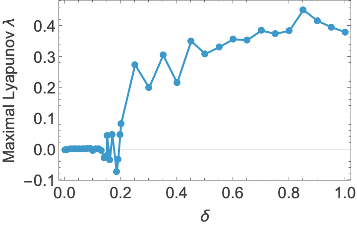<br />
图注：Lyapunov exponent as function of nonlinearity $\delta$. At $\delta \to 0 $, the Lyapunov exponent is effectively zero - there is no chaos. Starting some critical $\delta_{crit} \sim 0.25$, the Lyapunov exponent jumps to non-zero values, indicating the onset of a chaos. (Relatively large fluctuations in $\lambda$ are due to sampling of the perturbed trajectories used to calculate $\lambda$.)<br />
对应解读：对应“建议重点查看的图表”第4项参数扫描/李雅普诺夫指数，以及“模型—参数—诊断”中用有限时间李雅普诺夫指数判定混沌门槛的段落。<br />
入选理由：该图直接给出李雅普诺夫指数随非线性波幅 δ 的变化，并显示 δ_crit≈0.25 后指数跃迁为非零，是论文核心主张“δ≳0.25 单个线偏振阿尔芬波即可诱发混沌”的最直接定量证据。相比单条轨道或单个庞加莱截面，它更清楚地支撑门槛判定。<br />
来源与置信度：\(arxiv_source\)；high；\(arxiv_source\) / CR-Alfven.tex:figure[2]</p>
<p><strong>Fig01</strong><br />
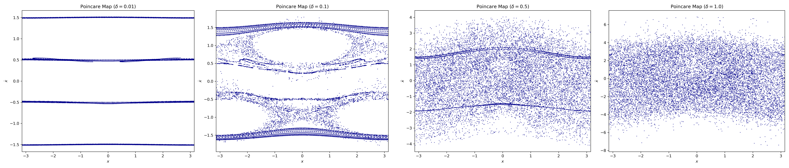<br />
图注：Poincare maps (phase space in static magnetic field. As the amplitude of the fluctuating field increases, particle motion becomes chaotic for $\delta \gtrsim \delta _{crit} \approx 0.2$.<br />
对应解读：对应“建议重点查看的图表”第2项庞加莱截面/相空间图，以及“关键图表逐图导读”中图2关于规则闭合曲线到随机散点转变的说明。<br />
入选理由：该图展示波幅增大时庞加莱映射由规则相空间结构转向混沌，并标注 δ≳δ_crit≈0.2，是理解轨道拓扑破坏、岛链/混沌层形成的关键图。它与Fig02的李雅普诺夫指数互为定性与定量验证。<br />
来源与置信度：\(arxiv_source\)；high；\(arxiv_source\) / CR-Alfven.tex:figure[1]</p>
<p><strong>Fig04</strong><br />
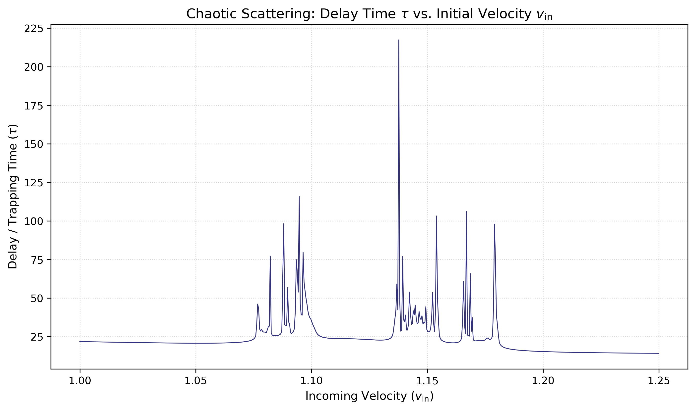<br />
图注：Trapping time for an \(\Alfven\) Gaussian pulse of dimensionless length $6$ depending on the initial velocity. Parameters are $\delta =0.4$, $a = 1.5 $. Velocity is normalized to resonant $\Omega_c/k$. Overall shift of $\sim 20$ is just the straight fly-by regime. Trapped trajectories are spikes of long residence time of a particle within the wave packet.<br />
对应解读：对应“建议重点查看的图表”第3项瞬时俘获/非扩散散射诊断，以及详细解读中关于近共振粒子被波包暂时俘获、产生类似散射的大角度变化的段落。<br />
入选理由：该图给出有限长度阿尔芬高斯脉冲中俘获时间随初始速度的尖峰结构，直接支持‘瞬时俘获’和相位混合机制。虽然不是 μ(t) 时间序列，但它比普通轨道图更能说明只有特定初始速度附近会出现长驻留、非扩散式事件。<br />
来源与置信度：\(arxiv_source\)；high；\(arxiv_source\) / CR-Alfven.tex:figure[4]</p>
<p><strong>Fig03</strong><br />
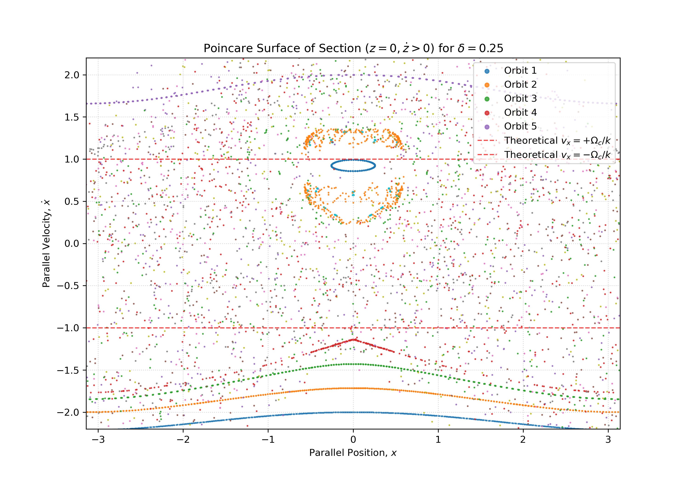<br />
图注：Poincare map for system (\ref{main}), $\delta =0.5$, $a=1.5$, Chirikov threshold (\ref{deltacrit}) $\delta_{crit} = 0.333$, periodic conditions in $x$, integration over $3000/(2\pi)$ periods. This map has higher value of energy $a$ than in Fig. \(\ref{poincare_maps}\) and scans over initial coordinate $-\pi < x_0 < \pi$; this populates different invariant tori than in Fig. \(\ref{poincare_maps}.\) Upper-lower asymmetry is due to $\delta^2$ term in (\ref{main}).<br />
对应解读：对应“建议重点查看的图表”第2项庞加莱截面补充，以及模型诊断中关于不同能量参数 a、不同初始坐标采样会填充不同不变环面的讨论。<br />
入选理由：该图是在 δ=0.5、a=1.5 条件下的另一组庞加莱映射，展示强非线性下不同初始条件采样得到的相空间结构，可作为Fig01的补充。其科学价值低于Fig01和Fig02，因为它更偏向特定参数例子，而不是全局门槛判据。<br />
来源与置信度：\(arxiv_source\)；high；\(arxiv_source\) / CR-Alfven.tex:figure[3]</p>
<h4 id="_34">强相关工作</h4>
<p>这篇工作属于宇宙线波粒相互作用、非线性俯仰角散射和确定性混沌输运的交叉。与经典准线性理论相比，它强调有限振幅单波造成的共振俘获和相位混合；与宽频磁湍流散射工作相比，它把随机性来源从外部随机波谱转移到内部非线性动力学。建议检索关键词包括“cosmic ray pitch angle scattering 90 degree barrier”、“nonlinear Alfven wave particle trapping”、“Hamiltonian chaos charged particle Alfven wave”、“resonance broadening cosmic rays”。</p>
<p>相似或相关方向包括非线性导引中心理论、共振展宽、强磁湍流中的粒子跟踪、激波附近宇宙线自激发阿尔芬波，以及太阳风中带电粒子与大振幅波相互作用。可能的相反观点是：在真实湍流中，相位随机化可能破坏单波混沌俘获；或者在某些波谱下，传统非线性扩散系数已经足以描述 \(90^\circ\) 附近散射。因此阅读时应把本文视为一个强有力的最小机制，而不是已经替代所有宇宙线输运模型的完整闭合理论。</p>
<p><strong>同一事件 / 同类源线索</strong>：</p>
<ul>
<li><a href="https://arxiv.org/abs/2608.23775">https://arxiv.org/abs/2608.23775</a></li>
<li><a href="https://arxiv.org/pdf/2608.23775">https://arxiv.org/pdf/2608.23775</a></li>
</ul>
<p><strong>相似工作</strong>：</p>
<ul>
<li><a href="https://arxiv.org/abs/1009.1781">https://arxiv.org/abs/1009.1781</a></li>
<li><a href="https://arxiv.org/abs/1103.3064">https://arxiv.org/abs/1103.3064</a></li>
<li><a href="https://arxiv.org/abs/1609.04815">https://arxiv.org/abs/1609.04815</a></li>
</ul>
<p><strong>基础理论 / 方法工作</strong>：</p>
<ul>
<li><a href="https://ui.adsabs.harvard.edu/abs/1949PhRv...75.1169F/abstract">https://ui.adsabs.harvard.edu/abs/1949PhRv...75.1169F/abstract</a></li>
<li><a href="https://ui.adsabs.harvard.edu/abs/1987PhR...154....1B/abstract">https://ui.adsabs.harvard.edu/abs/1987PhR...154....1B/abstract</a></li>
<li><a href="https://arxiv.org/abs/astro-ph/0204357">https://arxiv.org/abs/astro-ph/0204357</a></li>
</ul>
<p><strong>相反观点 / 张力线索</strong>：</p>
<ul>
<li><a href="https://arxiv.org/abs/0809.4138">https://arxiv.org/abs/0809.4138</a></li>
<li><a href="https://arxiv.org/abs/1004.4719">https://arxiv.org/abs/1004.4719</a></li>
</ul>
</details>
<h3 id="4-spatially-resolved-spectral-properties-of-m87-on-event-horizon-scales">4. Spatially resolved spectral properties of M87* on event horizon scales</h3>
<ul>
<li>来源：arXiv / astro-ph.HE</li>
<li>链接：https://arxiv.org/abs/2608.24110v1</li>
<li>作者：Shan-Shan Zhao, Ru-Sen Lu, Rocco Lico, Yuh Tsunetoe, Sijia Peng</li>
<li>评分：novelty 9/10，importance 8/10，relevance 8/10，final 9.30/10</li>
<li>推荐理由：M87*事件视界尺度首次空间分辨谱指数图，结合GMVA/EHT多频VLBI，对喷流发射区和吸积流同步辐射不透明度给出重要观测约束；虽非伽马射线主题，但属高能致密天体核心结果。</li>
</ul>
<p><strong>中文题目</strong>：事件视界尺度上空间分辨的 M87* 谱性质</p>
<p><strong>做了什么</strong>：这篇文章把 2018 年几乎同时获得的 \(86\,\mathrm{GHz}\) GMVA+ALMA+格陵兰望远镜图像与 \(230\,\mathrm{GHz}\) EHT 图像配准到同一角分辨尺度，首次在 M87* 的 \(\lesssim 100\,\mu\mathrm{as}\) 紧致区域内制作空间分辨谱指数图。核心结果是谱指数 \(\alpha\) 呈现清楚的径向结构：在内侧 \(\lesssim 20\,\mu\mathrm{as}\) 略有上升，随后随半径系统下降，并在 \(\sim 30\,\mu\mathrm{as}\) 附近由正转负，位置接近 \(3.5\,\mathrm{mm}\) 环半径。这支持最内吸积流中同步辐射不透明度随频率变化的图像，也给喷流根部和黑洞阴影附近等离子体模型提供了新的观测约束。</p>
<p><strong>为什么重要</strong>：过去 M87* 的毫米 VLBI 结果主要告诉我们形态、环尺度和总谱能量分布，而不是事件视界附近不同位置的谱。空间分辨谱指数能区分光学厚、光学薄、吸积流、喷流鞘层以及非热电子分布等物理成分，因此比单频图像或总流量更直接地约束辐射区。</p>
<p><strong>理论 / 观测 / 仪器方法价值</strong>：对理论而言，它给 GRMHD 后处理辐射转移模型增加了一个二维可观测量，而不仅是环直径和闭合相位。对观测而言，它展示了跨阵列、跨频率毫米 VLBI 图像如何在公共分辨率下做可靠谱成像。对方法而言，文章强调配准、卷积、\(u v\) 覆盖差异、幅度标定和非同时性这些系统误差对谱指数图的影响。</p>
<p><strong>为什么应该关注</strong>：如果你关心 M87* 的环到底来自吸积流、喷流脚点还是两者混合，这篇文章很值得看。谱指数的径向翻转是一个比“图像看起来像环”更细的诊断量，它直接触及同步自吸收、电子温度、磁场结构和喷流发射区位置。未来多频 EHT、ngEHT 和空间毫米 VLBI 都会把这类空间分辨谱图作为标准约束。</p>
<details class="paper-detail">
<summary>展开详细解读：文章讲解、背景、理论、重点章节、图表与相关工作</summary>
<h4 id="_35">文章详细讲解</h4>
<p>科学问题：M87* 是目前少数能在事件视界尺度上成像的超大质量黑洞之一。EHT 已经在 \(230\,\mathrm{GHz}\) 看到环状结构，\(86\,\mathrm{GHz}\) VLBI 也能解析内区喷流和更大尺度环状/核心结构。但单频图像很难回答一个关键问题：环内外不同区域的辐射是光学厚还是光学薄？谱指数 \(\alpha\) 的空间分布可以把这个问题转化为可观测诊断，因为同步辐射在自吸收区、透明区和多成分叠加区会给出不同的 \(S_\nu\propto \nu^\alpha\) 行为。</p>
<p>作者怎么做：文章使用 2018 年近同时的 \(3.5\,\mathrm{mm}\) 即 \(86\,\mathrm{GHz}\) 高分辨 VLBI 图像，以及 \(1.3\,\mathrm{mm}\) 即 \(230\,\mathrm{GHz}\) EHT 图像。关键方法不是简单把两张图相除，而是先处理不同频率下的角分辨率、动态范围、阵列响应、图像重建和绝对位置不确定性。为了得到可信的谱指数图，作者需要把图像卷积到共同有效分辨率，在紧致区域内做配准，并评估幅度标定、时间变化和图像重建选择对 \(\alpha\) 的影响。</p>
<p>关键结果：他们得到 \(\lesssim 100\,\mu\mathrm{as}\) 区域内第一张空间分辨的 M87* 谱指数图，并报告一个稳健的径向梯度。内侧 \(\lesssim 20\,\mu\mathrm{as}\) 的 \(\alpha\) 略微升高，随后向外降低，在 \(\sim 30\,\mu\mathrm{as}\) 附近由正变负。正谱指数一般提示较高不透明度或自吸收成分，负谱指数更接近光学薄同步辐射。这个翻转半径靠近 \(86\,\mathrm{GHz}\) 环尺度，说明 \(86\,\mathrm{GHz}\) 与 \(230\,\mathrm{GHz}\) 看到的并非完全相同的辐射层，而是受频率依赖的不透明度影响。</p>
<p>局限和下一步：这类结论最怕图像配准和不同阵列系统误差。M87* 虽然变化不如伽马暴或耀变体剧烈，但事件视界尺度结构仍会随时间变化；近同时不等于严格同时。\(86\,\mathrm{GHz}\) 和 \(230\,\mathrm{GHz}\) 的 \(u v\) 覆盖、散射影响、总流量标定和动态范围也不同，都会影响局部谱指数。下一步应是多历元、多频点而不只是两频点的谱曲率测量，并把谱指数图与 GRMHD 模拟库、喷流脚点模型和偏振结构联合拟合。</p>
<h4 id="_36">关键结果是怎么做出来的</h4>
<p>本文最重要的证据链从样本选择开始：对象只有一个，即 M87*，但数据是两套事件视界尺度毫米 VLBI 图像。\(86\,\mathrm{GHz}\) 数据来自 2018 年 GMVA 加入 ALMA 和格陵兰望远镜后的高灵敏度长基线观测，\(230\,\mathrm{GHz}\) 数据来自同年度 EHT 观测。由于研究目标是空间分辨谱指数而不是总流量谱，真正的“样本量”不是天体数，而是图像平面中在共同分辨率和足够信噪比下可比较的独立分辨元数量。</p>
<p>事件数意义上的统计显著性在这里表现为谱指数径向梯度是否超过图像重建和标定误差。作者需要在 \(\leq 100\,\mu\mathrm{as}\) 的紧致区域内选取可信像素或环向平均径向 bin，计算每个位置的 \(\alpha\)，再用误差传播、重建集合或蒙特卡洛方式估计置信区间。核心声明不是某一个像素的 \(\alpha\) 值，而是内侧上升、外侧下降以及 \(\sim 30\,\mu\mathrm{as}\) 过零这三个趋势在不同处理下仍然存在。</p>
<p>统计/模型比较方面，本文更接近观测诊断而非单一物理模型的全后验拟合。作者比较的是两频图像在共同 beam 下导出的谱指数图，以及径向平均曲线是否与无梯度、全正谱或全负谱的简单情形相容。支撑结论的图表应包括两频原始或重建图、共同分辨率图、谱指数二维图、径向 \(\alpha\) 剖面、误差带和不同配准/卷积方案下的稳健性测试。</p>
<p>主要系统误差包括：两频绝对流量标定误差会整体平移 \(\alpha\)；相对配准误差会在亮度梯度最大的环边缘制造虚假的正负结构；不同 \(u v\) 覆盖导致的缺失空间频率会改变扩展成分；近同时观测之间的源内禀变化会把时间变化误认为频率变化。稳健性检验应重点看作者是否改变配准、共同分辨率、信噪比阈值、图像重建参数后仍得到相同的径向翻转。</p>
<p>本文结论的强项在于趋势位置具有物理关联：谱指数由正转负的半径接近 \(3.5\,\mathrm{mm}\) 环半径，而 \(1.3\,\mathrm{mm}\) 环更靠近黑洞阴影尺度。这使得“频率依赖同步不透明度”比单纯随机成像伪影更自然。不过，严格区分吸积流盘面、喷流鞘层和透镜化环的贡献仍需要把 \(\alpha\) 图放入 GRMHD 辐射转移模型中做正向模拟。</p>
<details class="paper-subdetail">
<summary>展开背景、理论、公式、模型、章节和图表导读</summary>
<h4 id="_37">背景知识</h4>
<p>M87<em> 是位于椭圆星系 M87 中心的超大质量黑洞，质量约为数十亿太阳质量，距离足够近，使得其引力半径在天空上的角尺度达到微角秒量级。它同时拥有强大的相对论喷流，因此是研究黑洞吸积、喷流发射和强引力辐射转移的标杆源。EHT 对 M87</em> 的 \(230\,\mathrm{GHz}\) 成像让“黑洞阴影”和环状辐射区成为实测对象，但环的发光物理仍未完全确定。</p>
<p>历史上，M87 的射电核心谱和喷流结构已经被厘米、毫米 VLBI 研究了几十年。较低频率看到的核心位置和大小受同步自吸收及喷流不透明度影响，常表现为频率依赖的 core shift。进入毫米波段后，观测开始接近黑洞几到几十个引力半径的区域，那里吸积流、喷流基部和广义相对论透镜效应混在一起，单靠形态很难拆分。</p>
<p>为什么现在值得重新看？一是 \(86\,\mathrm{GHz}\) VLBI 的灵敏度和南北向覆盖因 ALMA、格陵兰望远镜等台站加入显著提高；二是 \(230\,\mathrm{GHz}\) EHT 已经能提供事件视界尺度图像；三是两个频段在同一年接近同时观测，使空间分辨谱指数成为可能。过去总谱能量分布只能告诉我们核心整体随频率变亮或变暗，如今可以问“哪个半径处变亮，哪个方位处变暗”。</p>
<p>该领域常见误区之一是把 EHT 环直接等同于事件视界。实际观测到的是辐射、吸收、透镜化和仪器响应共同作用后的亮度分布，环半径与光子环、阴影边界、发射区峰值并不一一对应。另一个误区是把谱指数 \(\alpha\) 直接解释成电子能谱指数；只有在光学薄、单一区域、幂律电子等条件满足时，两者才有简单关系。在 M87* 内区，热电子、非热尾、同步自吸收和相对论传播都会改变这种对应。</p>
<h4 id="_38">基础理论 / 方法脉络</h4>
<p>最基本的物理图像是同步辐射。相对论电子在磁场中回旋并辐射，观测到的比强度取决于电子能量分布、磁场强度、路径长度以及光学深度。若辐射区对自身同步辐射不透明，低频光子更容易被吸收，谱可以随频率上升；若光学薄，谱通常随频率下降。本文测量的 \(\alpha\) 正是这种不透明度变化的最直接二维指示量。</p>
<p>在黑洞附近还必须考虑广义相对论辐射转移。局部等离子体发出的光会被引力红移、多普勒增强、光线弯曲和吸收改变。EHT 图像中的亮环既可能包含接近临界曲线的强透镜化贡献，也包含吸积流或喷流底部的真实发射结构。不同频率看到的有效 \(\tau_\nu\sim 1\) 表面不同，因此谱指数径向变化可被看作黑洞周围“射电光球”随频率移动的投影。</p>
<p>本文的观测逻辑是跨频图像比较。对同一源，如果在位置 \(\boldsymbol{x}\) 处测到 \(S_{\nu_1}(\boldsymbol{x})\) 和 \(S_{\nu_2}(\boldsymbol{x})\)，就可估计谱指数 \(\alpha(\boldsymbol{x})\)。但前提是两幅图代表相同天空区域、相同有效分辨率、可比的通量尺度以及足够同步的源状态。毫米 VLBI 没有绝对相位成像的简单坐标锚点，配准本身就是推断的一部分。</p>
<p>常见退化包括 \(\alpha\) 与绝对幅度标定的退化、\(\alpha\) 与图像配准的退化、真实谱梯度与不同 \(u v\) 覆盖造成的成像偏差之间的退化。尤其在亮度分布有陡峭边缘时，微小位置偏差就能让局部比值发生很大变化。因此，读这篇文章时应把谱指数图看作一个经过误差传播的统计产物，而不是两张漂亮图像逐像素相除的直接结果。</p>
<p>对理论模型而言，关键假设还包括电子温度与离子温度比、磁通量状态、视角、黑洞自旋、喷流鞘层电子加热以及是否存在非热电子尾。不同模型可产生相似的 \(230\,\mathrm{GHz}\) 环直径，但在 \(86\,\mathrm{GHz}\) 到 \(230\,\mathrm{GHz}\) 的空间分辨 \(\alpha\) 上差异更大。因此本文的谱指数剖面是区分模型的重要新约束。</p>
<h4 id="_39">公式与推导</h4>
<p>第一步是定义观测量。若某位置的通量密度满足局部幂律近似，则有</p>
<div class="math-display">\[S_\nu(\boldsymbol{x})=S_{\nu_0}(\boldsymbol{x})\left(\frac{\nu}{\nu_0}\right)^{\alpha(\boldsymbol{x})} ,\]</div>
<p>其中 \(S_\nu\) 是频率 \(\nu\) 处的通量密度，\(\boldsymbol{x}\) 是图像平面位置，\(\nu_0\) 是参考频率，\(\alpha\) 是谱指数。对本文的两频观测，最直接估计为</p>
<div class="math-display">\[\alpha(\boldsymbol{x})=\frac{\ln\left[S_{230}(\boldsymbol{x})/S_{86}(\boldsymbol{x})\right]}{\ln\left(230/86\right)} ,\]</div>
<p>其中 \(S_{230}\) 和 \(S_{86}\) 分别表示 \(230\,\mathrm{GHz}\) 与 \(86\,\mathrm{GHz}\) 图像在共同分辨率后的亮度或通量密度。</p>
<p>第二步是把谱指数和同步辐射转移联系起来。沿视线的辐射转移方程可写为</p>
<div class="math-display">\[\frac{d I_\nu}{d s}=j_\nu-\kappa_\nu I_\nu ,\]</div>
<p>其中 \(I_\nu\) 是比强度，\(s\) 是路径长度，\(j_\nu\) 是发射系数，\(\kappa_\nu\) 是吸收系数。若均匀 slab 的源函数 \(S_\nu^{\rm src}=j_\nu/\kappa_\nu\)，解为</p>
<div class="math-display">\[I_\nu=I_{\nu,0}e^{-\tau_\nu}+S_\nu^{\rm src}\left(1-e^{-\tau_\nu}\right) ,\]</div>
<p>其中 \(\tau_\nu=\int \kappa_\nu ds\) 是光学深度。这个式子说明 \(\tau_\nu\gg 1\) 和 \(\tau_\nu\ll 1\) 会给出完全不同的谱行为。</p>
<p>第三步是给出光学薄极限。若电子能谱近似为 \(N(\gamma)d\gamma=K\gamma^{-p}d\gamma\)，光学薄同步辐射有</p>
<div class="math-display">\[I_\nu^{\rm thin}\propto K B^{(p+1)/2}\nu^{-(p-1)/2} L ,\]</div>
<p>其中 \(K\) 是电子归一化，\(B\) 是磁场强度，\(p\) 是电子能谱指数，\(L\) 是路径长度。因此光学薄谱指数约为</p>
<div class="math-display">\[\alpha_{\rm thin}=-\frac{p-1}{2} .\]</div>
<p>若观测到外侧 \(\alpha<0\)，自然可解释为较透明的同步辐射区，但这个推断依赖单区幂律电子假设。</p>
<p>第四步是光学厚或自吸收极限。对简单均匀同步自吸收源，低频端可近似得到</p>
<div class="math-display">\[I_\nu^{\rm thick}\propto B^{-1/2}\nu^{5/2} ,\]</div>
<p>对应 \(\alpha_{\rm thick}\simeq 5/2\)。真实黑洞吸积流不是均匀 slab，温度、磁场和速度都有径向梯度，因此观测 \(\alpha\) 往往不会达到 \(5/2\)，但正的 \(\alpha\) 仍提示 \(86\,\mathrm{GHz}\) 到 \(230\,\mathrm{GHz}\) 之间存在显著不透明度变化。</p>
<p>第五步是把图像测量误差传播到 \(\alpha\)。若两个频率的相对误差分别为 \(\sigma_{230}/S_{230}\) 和 \(\sigma_{86}/S_{86}\)，且近似独立，则</p>
<div class="math-display">\[\sigma_\alpha^2=\frac{1}{\left[\ln(230/86)\right]^2}\left[\left(\frac{\sigma_{230}}{S_{230}}\right)^2+\left(\frac{\sigma_{86}}{S_{86}}\right)^2\right] .\]</div>
<p>这个公式说明在低信噪比边缘区域，谱指数误差会迅速变大，因此需要阈值和误差图。</p>
<p>第六步是考虑配准误差。若两图相对偏移 \(\delta\boldsymbol{x}\)，则一阶近似下</p>
<div class="math-display">\[\delta\alpha(\boldsymbol{x})\simeq \frac{\delta\boldsymbol{x}\cdot \nabla \ln S_{86}(\boldsymbol{x})}{\ln(230/86)}-rac{\delta\boldsymbol{x}\cdot \nabla \ln S_{230}(\boldsymbol{x})}{\ln(230/86)} .\]</div>
<p>这表明在环边缘或喷流基部等亮度梯度大的地方，哪怕很小的配准误差也可能制造局部 \(\alpha\) 伪结构。</p>
<p>第七步是从二维图得到径向剖面。若以黑洞中心或环中心为原点，环向平均谱指数可写为</p>
<div class="math-display">\[\bar{\alpha}(r)=\frac{\int_0^{2\pi} w(r,\phi)\alpha(r,\phi)d\phi}{\int_0^{2\pi} w(r,\phi)d\phi} ,\]</div>
<p>其中 \(w\) 是权重，可取信噪比权重、误差倒数权重或掩膜权重。本文报告的内侧上升、外侧下降和 \(\sim 30\,\mu\mathrm{as}\) 过零，本质上就是 \(\bar{\alpha}(r)\) 的稳健特征。</p>
<p>第八步是用简单统计量检验径向梯度。若用模型 \(m_i(\boldsymbol{\theta})​\) 拟合第 \(i\) 个径向 bin 的 \(\alpha_i\)，可写</p>
<div class="math-display">\[\chi^2(\boldsymbol{\theta})=\sum_i \frac{\left[\alpha_i-m_i(\boldsymbol{\theta})\right]^2}{\sigma_{\alpha,i}^2} .\]</div>
<p>比较常数模型、线性梯度模型或带过零半径的分段模型，可以判断观测是否真的需要径向谱结构。这里 \(\boldsymbol{\theta}\) 可包括中心 \(\alpha\)、斜率、转折半径和系统误差项。</p>
<h4 id="_40">模型拟合 / 应用方法</h4>
<p>这篇文章的拟合对象主要不是黑洞质量或自旋，而是图像域的谱指数场 \(\alpha(\boldsymbol{x})\) 及其径向剖面。实际流程通常包括：分别重建 \(86\,\mathrm{GHz}\) 和 \(230\,\mathrm{GHz}\) 图像；把两者卷积到共同 beam；选择共同可信区域；搜索或设定相对配准；逐像素或逐分辨元计算 \(\alpha\)；最后对径向平均曲线做趋势分析。</p>
<p>似然或统计量可来自图像域，也可来自可见度域。图像域方法直观，但重建图像的像素误差并不完全独立；可见度域方法更接近原始数据，却需要对源结构在两个频率上的关系做参数化。本文这类工作通常会用一组重建图像或不同成像参数生成 \(\alpha\) 的系统误差包络，而不是只依赖单张图像的形式误差。</p>
<p>关键退化有三类。第一是幅度标定退化：若 \(230\,\mathrm{GHz}\) 总通量标定整体偏高，\(\alpha\) 会整体变大；若 \(86\,\mathrm{GHz}\) 偏高，则相反。第二是配准退化：环状结构没有绝对相位参考时，中心对齐、峰值对齐、互相关对齐可能给出略不同的局部谱图。第三是物理退化：相同 \(\alpha\) 可以来自同步自吸收、电子温度梯度、非热电子比例变化或多个成分混合。</p>
<p>残差应怎么看？若作者用某个平滑径向模型描述 \(\alpha(r)\)，需要检查残差是否集中在特定方位，例如喷流方向或反喷流方向。方位相关残差可能说明简单径向模型不足，存在多普勒增强、喷流鞘层或不对称吸积流。若残差主要出现在低信噪比边界，则可能只是掩膜和动态范围问题。</p>
<p>模型可能失败的地方也很明确。两频点只能给出一阶谱指数，不能测量谱曲率；若 \(86\,\mathrm{GHz}\) 和 \(230\,\mathrm{GHz}\) 发射来自完全不同空间层，逐像素 \(\alpha\) 的“同一位置同一等离子体”解释会变弱。未来实际应用中，应把本文的 \(\alpha\) 图与偏振、旋转量、时间变化和多频 core shift 联合使用，才能更可靠地区分吸积流与喷流基部。</p>
<h4 id="_41">重点章节 / 结果段落怎么读</h4>
<p>数据/样本部分应先看两套 VLBI 观测的时间、阵列、频率和角分辨率。重点不是对象数量，而是 \(86\,\mathrm{GHz}\) 与 \(230\,\mathrm{GHz}\) 是否足够接近同时，以及各自 \(u v\) 覆盖和灵敏度是否足以支持 \(\lesssim 100\,\mu\mathrm{as}\) 区域内的比较。</p>
<p>成像与配准方法部分是全文技术核心。读者应检查作者如何统一 beam、如何处理不同动态范围、如何定义图像中心、如何掩膜低信噪比区域，以及是否使用多种重建算法或参数设置评估稳健性。谱指数图最容易被这些步骤左右。</p>
<p>主结果部分应关注二维 \(\alpha\) 图和径向 \(\alpha(r)\) 剖面。真正的新发现是径向梯度与 \(\sim 30\,\mu\mathrm{as}\) 过零，而不是某个孤立像素的极端 \(\alpha\) 值。要把该半径和 \(1.3\,\mathrm{mm}\) 环、\(3.5\,\mathrm{mm}\) 环的位置放在一起读。</p>
<p>讨论部分应看作者如何连接同步自吸收、吸积流透明度和喷流发射区。这里需要区分“与频率依赖不透明度一致”和“已经唯一证明某个模型”这两种说法。前者是本文可稳健支持的，后者通常还需要模拟库和更多频点。</p>
<p>附录/稳健性检验若有，应优先阅读。需要检查改变配准方案、通量尺度、共同分辨率、掩膜阈值和成像算法后，谱指数径向趋势是否仍然存在。对这类高分辨谱图，附录往往比摘要更能决定结论可信度。</p>
<h4 id="_42">建议重点查看的图表</h4>
<ol>
<li>
<p>两频重建图像：检查 \(86\,\mathrm{GHz}\) 与 \(230\,\mathrm{GHz}\) 的环尺度、峰值位置、喷流方向延展和共同分辨率后的形态差异。</p>
</li>
<li>
<p>共同 beam 或匹配分辨率图：确认谱指数不是由不同 beam 直接相除造成的，尤其要看 beam 大小和位置角。</p>
</li>
<li>
<p>二维谱指数图：重点看 \(\alpha>0\) 和 \(\alpha<0\) 区域是否连续、是否沿环边缘出现成像伪影式的正负相邻条纹。</p>
</li>
<li>
<p>径向 \(\alpha(r)\) 剖面：检查内侧 \(\lesssim 20\,\mu\mathrm{as}\) 上升、外侧下降和 \(\sim 30\,\mu\mathrm{as}\) 过零是否有误差带支持。</p>
</li>
<li>
<p>配准敏感性测试：看不同相对位移下 \(\alpha\) 图和过零半径是否稳定，这是判断结果可靠性的关键诊断。</p>
</li>
<li>
<p>通量标定或系统误差表：检查幅度标定不确定性会让 \(\alpha\) 整体移动多少，是否足以消除正负翻转。</p>
</li>
<li>
<p>与物理模型或示意图的比较：若文中有 GRMHD 或同步不透明度解释图，应看模型是否只定性匹配，还是能定量复现 \(\alpha(r)\) 的幅度和转折半径。</p>
</li>
</ol>
<h4 id="_43">关键图表逐图导读</h4>
<p>图 1：通常应是 \(86\,\mathrm{GHz}\) 与 \(230\,\mathrm{GHz}\) 的重建图像或共同分辨率图。坐标轴应为相对赤经和相对赤纬，单位为 \(\mu\mathrm{as}\)。数据表现为亮度等值线或颜色图，模型线可能是 beam 椭圆和环半径标记。读图陷阱是不要把两频原始分辨率下的大小差异直接解释成物理大小差异，必须确认是否已经卷积到相同 beam。</p>
<p>图 2：关键二维谱指数图。坐标轴仍是图像平面位置，颜色条为 \(α\)。应重点看内区是否偏正、外区是否偏负，以及正负边界是否接近 \(\sim 30\,\mu\mathrm{as}\)。如果图上有掩膜边界或信噪比轮廓，低信噪比边缘的极端颜色不应过度解读。</p>
<p>图 3：径向平均 \(\alpha(r)\) 剖面。横轴应是半径 \(r\)，单位为 \(\mu\mathrm{as}\) 或引力半径；纵轴为 \(\alpha\)。数据点或实线给出平均谱指数，阴影带或误差棒给出统计和系统不确定性。主要结论是 \(\alpha\) 在内侧略升、随后下降并过零。读图陷阱是过零半径的误差可能由配准和标定主导，而不只是点的随机误差。</p>
<p>图 4：稳健性或系统误差图。可能展示不同图像配准、不同卷积 beam、不同掩膜阈值下的谱指数图或径向剖面。坐标和颜色含义与前图类似。最该看的不是每条曲线是否完全重合，而是径向梯度方向和过零位置是否保持在相近范围。</p>
<p>图 5：若有物理解释图或与模型比较的图，横轴可能是半径、频率或模拟图像位置，纵轴可能是 \(\alpha\)、光学深度 \(\tau_\nu\) 或亮度。读者应检查模型是否能同时解释 \(86\,\mathrm{GHz}\) 环、\(230\,\mathrm{GHz}\) 环和谱指数转折，而不是只解释其中一个现象。</p>
</details>
<h4 id="_44">论文原图 / 可嵌入图片</h4>
<p><strong>Fig02</strong><br />
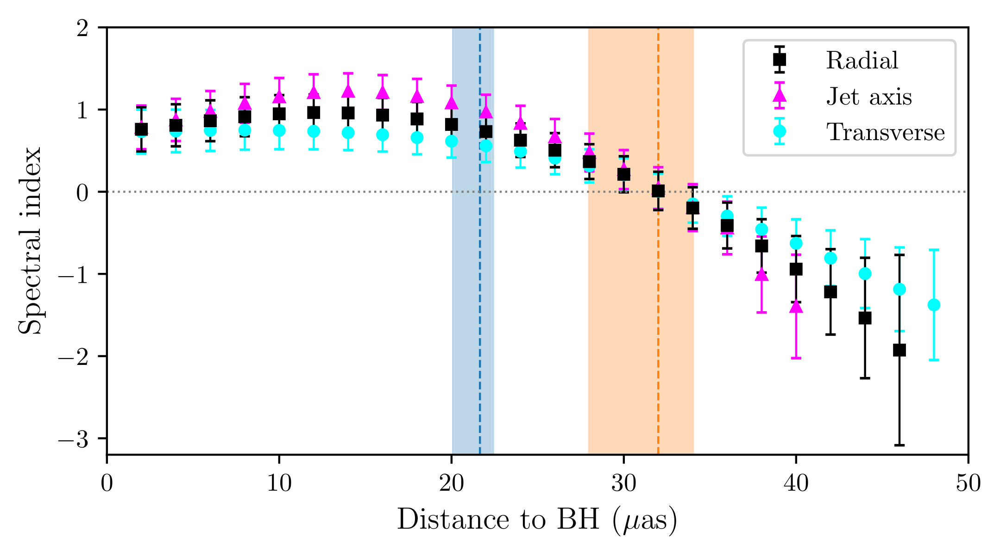<br />
图注：Radial spectral index profiles derived from the 86 and 230 GHz images. The black curve shows the azimuthally averaged profile, while the magenta and cyan curves represent profiles extracted along the jet axis (PA=$288^\circ$) and the transverse direction (PA=$18^\circ$), respectively. Vertical orange and blue lines indicate the characteristic ring radii at 86\,GHz ($32^{+2}_{-4}\,\mu$as) and 230\,GHz ($21.7^{+0.8}_{-1.6}\,\mu$as), with shaded bands showing uncertainties. The horizontal dotted line marks $\alpha = 0$.<br />
对应解读：对应“建议重点查看的图表”第4项和“关键图表逐图导读”图3：径向 \(\alpha(r)\) 剖面，以及模型拟合段落中关于径向趋势、过零半径和方位残差的讨论。<br />
入选理由：这是支撑论文核心结论最直接的图：横向给出半径方向的谱指数变化，包含方位平均、喷流轴向和横向剖面，并明确标出 \(\alpha=0\)、86 GHz 与 230 GHz 环半径及其不确定性。它能直接检验内侧 \(\lesssim20\\,\mu\mathrm{as}\) 上升、外侧下降、约 \(30\\,\mu\mathrm{as}\) 过零是否与环尺度相关，是日报解读中最关键的诊断图。<br />
来源与置信度：\(arxiv_source\)；high；\(arxiv_source\) / \(main_ApJ_Rv2.tex\):figure[2]</p>
<p><strong>Fig01</strong><br />
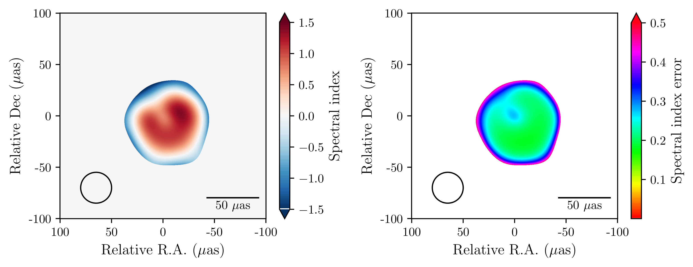<br />
图注：\(\textbf{Left panel}\): Spatially resolved spectral index map within a $200\,\mu$as field of view, derived from horizon-scale images observed by the GMVA in 2018 \(\citep{2023Natur.616..686L}\) and the EHT in 2018 \(\citep{2024A&A...681A..79E}.\) Both images have been convolved with a $30\,\mu$as beam, indicated by the circle in the lower-left corner. \(\textbf{Right panel}\): Corresponding spatial distribution of the spectral index uncertainty. In both panels, pixels are masked to include only regions where the intensity in both bands exceeds $3\,\sigma_{\rm rms,\nu}$.<br />
对应解读：对应“建议重点查看的图表”第3项和“关键图表逐图导读”图2：二维谱指数图；也对应共同 beam 和掩膜可靠性讨论。<br />
入选理由：该图给出 \(200\\,\mu\mathrm{as}\) 视场内的空间分辨谱指数图及对应不确定性分布，并说明两频图像均卷积到 \(30\\,\mu\mathrm{as}\) beam、只保留双频 \(>3\sigma\) 区域。它最适合展示 \(\alpha>0\) 与 \(\alpha<0\) 区域的空间连续性、正负边界和低信噪比掩膜影响，是理解径向剖面之前必须看的核心图。<br />
来源与置信度：\(arxiv_source\)；high；\(arxiv_source\) / \(main_ApJ_Rv2.tex\):figure[1]</p>
<p><strong>Fig05</strong><br />
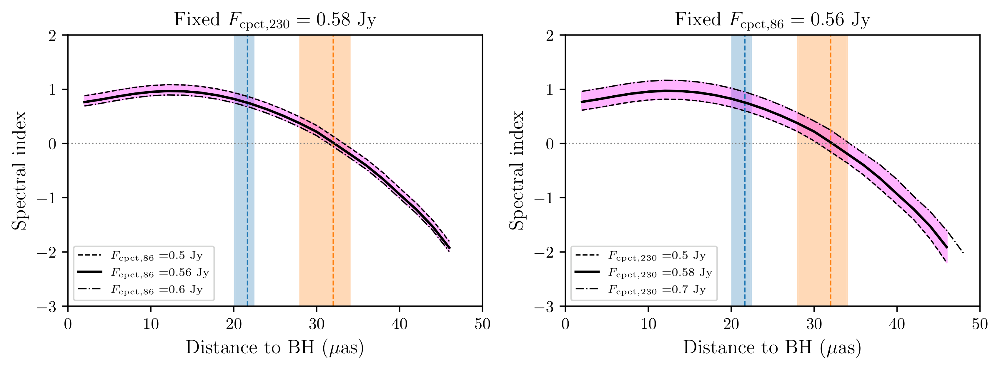<br />
图注：Spectral index radial profiles derived from the GMVA 2018 and EHT 2018 images for different assumptions of compact flux density. All images have been convolved with a 30 $\mu$as beam. \(\textbf{Left panel:}\) Profiles with a fixed compact flux density of $F_{\rm cpct,230}=0.58$ Jy and varying $F_{\rm cpct,86}$ from 0.5 Jy (black dashed line) to 0.6 Jy (black dash–dotted line); the spanned range is indicated by the magenta shaded region. The case with $F_{\rm cpct,86}=0.56$ Jy and $F_{\rm cpct,230}=0.58$ Jy, adopted in this work, is shown by the thick black solid line. \(\textbf{Right panel}\): Same with the left panel, but for profiles with a fixed $F_{\rm cpct,86}=0.56$ Jy and varying $F_{\rm cpct,230}$ from 0.5 Jy (black dashed line) to 0.7 Jy (black dash–dotted line).<br />
对应解读：对应“建议重点查看的图表”第6项：通量标定或系统误差；也对应模型拟合段落中的幅度标定退化。<br />
入选理由：该图系统改变 86 GHz 和 230 GHz 的 compact flux density，展示通量标定假设如何整体移动或改变 \(\alpha(r)\) 剖面。日报中特别强调需要判断标定不确定性是否足以消除正负翻转，因此这张图是检验谱指数梯度和过零结论稳健性的关键系统误差图。<br />
来源与置信度：\(arxiv_source\)；high；\(arxiv_source\) / \(main_ApJ_Rv2.tex\):figure[5]</p>
<p><strong>Fig03</strong><br />
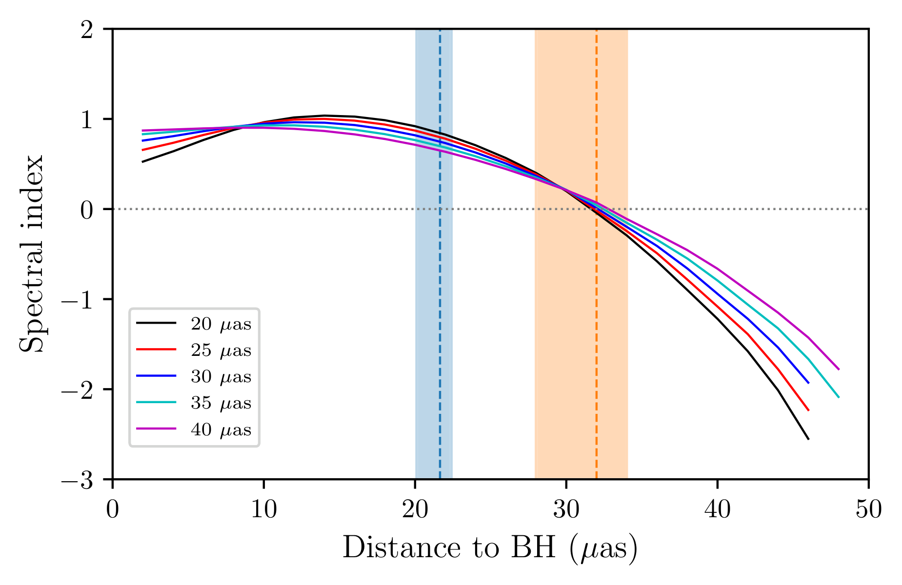<br />
图注：Spectral index radial profiles computed from images convolved with circular Gaussian beams of different sizes (FWHM = 20, 25, 30, 35, and 40\,µas), using the GMVA 2018 3.5\,mm and EHT 2018 1.3\,mm images. This figure illustrates the impact of beam size on the radial spectral index, highlighting how intermediate smoothing preserves the ring morphology while enabling a robust comparison between the two frequencies.<br />
对应解读：对应“建议重点查看的图表”第2项和第5项，以及“关键图表逐图导读”图4：不同共同 beam 下的稳健性测试。<br />
入选理由：该图比较 20、25、30、35、40 \(\mu\mathrm{as}\) 不同圆高斯 beam 卷积后的径向谱指数剖面，直接检验谱指数梯度是否由分辨率匹配或平滑尺度选择造成。它能帮助判断 \(30\\,\mu\mathrm{as}\) 的基准结果是否只是特定 beam 的产物，科学价值高于单纯形态展示。<br />
来源与置信度：\(arxiv_source\)；high；\(arxiv_source\) / \(main_ApJ_Rv2.tex\):figure[3]</p>
<p><strong>Fig04</strong><br />
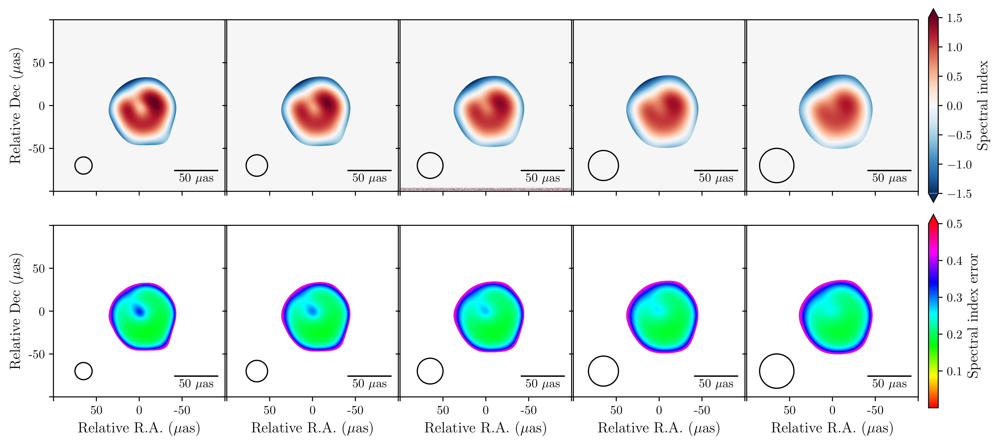<br />
图注：Spectral index maps (top row) and their corresponding error distributions (bottom row) derived from the GMVA 2018 3.5\,mm and EHT 2018 1.3\,mm images. Columns show results for different circular Gaussian beam sizes (FWHM = 20, 25, 30, 35, and 40\,µas), with the beam illustrated as a circle in the lower-left corner of each panel. All maps are masked to include only pixels where the intensity in both bands exceeds $3\,\sigma_{\rm rms\nu}$.<br />
对应解读：对应“建议重点查看的图表”第2、3、5项和“关键图表逐图导读”图4：不同 beam 下的二维谱指数图与误差分布。<br />
入选理由：这张图以二维图像形式展示不同 beam 尺度下的谱指数图和误差图，可检查正负区域是否随平滑尺度保持连续、边缘极端颜色是否与误差或掩膜相关。它与 Fig03 互补：Fig03量化径向剖面，Fig04显示空间伪影和误差分布，因此适合作为稳健性图嵌入。<br />
来源与置信度：\(arxiv_source\)；high；\(arxiv_source\) / \(main_ApJ_Rv2.tex\):figure[4]</p>
<h4 id="_45">强相关工作</h4>
<p>这篇文章直接接在 EHT M87* 首次成像系列和后续多历元/偏振/理论解释工作之后。EHT 的早期论文确定了 \(230\,\mathrm{GHz}\) 环状结构、黑洞质量尺度和 GRMHD 模型比较框架；偏振论文进一步约束磁场有序性和磁通量状态。本文的增量是把频率维度加入事件视界尺度成像，用 \(86\,\mathrm{GHz}\) 与 \(230\,\mathrm{GHz}\) 的空间分辨谱指数检查辐射区不透明度。</p>
<p>同类工作还包括 M87 的 \(43\,\mathrm{GHz}\)、\(86\,\mathrm{GHz}\)、\(230\,\mathrm{GHz}\) VLBI core shift、喷流准直轮廓和毫米波谱研究，以及 Sgr A<em> 的多频 EHT/GMVA 谱结构研究。检索关键词建议使用 “M87</em> spectral index map”, “M87 86 GHz 230 GHz VLBI”, “M87 core shift millimeter VLBI”, “EHT M87 GRMHD radiative transfer”, “synchrotron opacity M87 jet launching”。</p>
<p>也要注意可能的张力来源：不同 GRMHD 模型可以在 \(230\,\mathrm{GHz}\) 形态上都过关，却给出不同 \(86\,\mathrm{GHz}\) 发射区；喷流主导模型和吸积流主导模型对 \(\alpha(r)\) 的解释可能相反。本文结果更像一个强约束而非最终裁决，需要与偏振、时间变化和更密集频率覆盖共同使用。</p>
<p><strong>同一事件 / 同类源线索</strong>：</p>
<ul>
<li><a href="https://arxiv.org/abs/2608.24110">https://arxiv.org/abs/2608.24110</a></li>
<li><a href="https://arxiv.org/abs/1906.11238">https://arxiv.org/abs/1906.11238</a></li>
<li><a href="https://arxiv.org/abs/1906.11239">https://arxiv.org/abs/1906.11239</a></li>
<li><a href="https://arxiv.org/abs/1906.11240">https://arxiv.org/abs/1906.11240</a></li>
<li><a href="https://arxiv.org/abs/1906.11241">https://arxiv.org/abs/1906.11241</a></li>
<li><a href="https://arxiv.org/abs/1906.11242">https://arxiv.org/abs/1906.11242</a></li>
<li><a href="https://arxiv.org/abs/1906.11243">https://arxiv.org/abs/1906.11243</a></li>
<li><a href="https://arxiv.org/abs/2105.01169">https://arxiv.org/abs/2105.01169</a></li>
</ul>
<p><strong>相似工作</strong>：</p>
<ul>
<li><a href="https://arxiv.org/abs/1906.11243">https://arxiv.org/abs/1906.11243</a></li>
<li><a href="https://arxiv.org/abs/2105.01169">https://arxiv.org/abs/2105.01169</a></li>
<li><a href="https://arxiv.org/abs/2105.01173">https://arxiv.org/abs/2105.01173</a></li>
</ul>
<p><strong>基础理论 / 方法工作</strong>：</p>
<ul>
<li><a href="https://arxiv.org/abs/1906.11238">https://arxiv.org/abs/1906.11238</a></li>
<li><a href="https://arxiv.org/abs/1906.11239">https://arxiv.org/abs/1906.11239</a></li>
<li><a href="https://arxiv.org/abs/1906.11240">https://arxiv.org/abs/1906.11240</a></li>
<li><a href="https://arxiv.org/abs/1906.11241">https://arxiv.org/abs/1906.11241</a></li>
</ul>
<p><strong>相反观点 / 张力线索</strong>：</p>
<ul>
<li><a href="https://arxiv.org/abs/1906.11242">https://arxiv.org/abs/1906.11242</a></li>
<li><a href="https://arxiv.org/abs/1906.11243">https://arxiv.org/abs/1906.11243</a></li>
</ul>
</details>
<h3 id="5-assessing-the-credibility-of-gamma-ray-qpo-candidates-in-41-tev-selected-blazars">5. Assessing the Credibility of Gamma-Ray QPO Candidates in 41 TeV-Selected Blazars</h3>
<ul>
<li>来源：arXiv / astro-ph.HE</li>
<li>链接：https://arxiv.org/abs/2608.24522v1</li>
<li>作者：Wen-Xin Yang, Yi Liu, Hong-Guang Wang, Denis Bastieri, Jun-Hui Fan</li>
<li>评分：novelty 7/10，importance 7/10，relevance 10/10，final 9.05/10</li>
<li>推荐理由：Fermi-LAT GeV光变曲线中TeV blazar QPO候选的保守统计复核，虽为非探测结果，但对伽马射线AGN时域分析和误报控制很有价值。</li>
</ul>
<p><strong>中文题目</strong>：重新评估 41 个 TeV 选耀变体中伽马射线准周期振荡候选体的可信度</p>
<p><strong>做了什么</strong>：这篇文章系统重做了 41 个 TeV 选耀变体在 Fermi-LAT 的 \(0.1\text{--}100\,\mathrm{GeV}\) 光变曲线中的准周期振荡搜索。作者没有只看周期图峰值，而是把快速傅里叶周期图、红噪声蒙特卡洛、错误发现率控制、自举周期误差、分段交叉验证、Lomb-Scargle、加权小波 \(Z\) 变换、观测窗口函数检查和注入-恢复实验串成一套保守流程。初筛有 16 个源超过原始 \(95\%\) 阈值，进一步筛选后留下 6 个强候选，但没有任何源满足全自动多方法检测标准。按源级全局显著性看，只有 J1555.7+1111 在 Benjamini-Hochberg 控制下显著；若采用更保守的 Benjamini-Yekutieli 或红噪声斜率包络，它也不再稳健。核心结论很明确：现有 Fermi-LAT 数据中没有可靠的伽马射线 QPO 探测。</p>
<p><strong>为什么重要</strong>：耀变体 QPO 常被用来讨论双超大质量黑洞、喷流进动、盘-喷流耦合或磁流体不稳定性，但红噪声、非均匀采样和多重检验很容易制造貌似周期的峰。这篇工作的价值在于把“有没有 QPO”从单个峰值的故事，转成源级全局 \(p\) 值、假发现率和注入-恢复灵敏度问题。它提醒读者：对耀变体长时标伽马射线周期性，保守统计处理往往会显著收缩候选清单。</p>
<p><strong>理论 / 观测 / 仪器方法价值</strong>：对理论方面，它给出一个负结果边界：如果要用伽马射线 QPO 支持双黑洞或喷流周期模型，必须面对红噪声和观测窗口导致的全局显著性惩罚。对观测方面，它提供了一套可复用的 Fermi-LAT 光变曲线时域分析流程，尤其强调保留真实采样和非高斯通量分布的前向模拟。对方法方面，文章展示了为什么不能把周期图频点简单当作独立试验，也不能只报告局部显著性。</p>
<p><strong>为什么应该关注</strong>：如果你关注活动星系核喷流、时域高能天文或候选周期信号的统计可靠性，这篇论文值得看，因为它不是又报一个新周期，而是回答一个更基础的问题：在真实数据质量、真实采样和红噪声背景下，我们到底有多大把握相信这些周期？它也给未来 CTA、LHAASO、Fermi-LAT 长基线数据和多波段监测的 QPO 声称提供了一个实用的审稿清单。</p>
<details class="paper-detail">
<summary>展开详细解读：文章讲解、背景、理论、重点章节、图表与相关工作</summary>
<h4 id="_46">文章详细讲解</h4>
<p>科学问题：耀变体的长时标准周期振荡长期吸引注意，因为它们可能对应双超大质量黑洞轨道、喷流进动、吸积盘不稳定性、磁重联活动区的准周期注入，或相对论喷流方向变化。但伽马射线耀变体本身就是强红噪声源，功率谱通常在低频增强，随机涨落可以在有限时间基线内形成几个看起来很整齐的波峰。本文要解决的不是“能否找到一些周期图峰”，而是“在 41 个 TeV 选耀变体中，有没有经得起采样、红噪声、多重检验和交叉验证考验的伽马射线 QPO”。</p>
<p>作者怎么做：样本是 41 个 TeV 选耀变体，使用 Fermi-LAT \(0.1\text{--}100\,\mathrm{GeV}\) 长期光变曲线。分析流程故意设计得多阶段且保守：先用快速傅里叶变换功率谱做初筛，再用红噪声蒙特卡洛估计源级显著性；随后加入数据质量过滤、分段样本交叉验证、Lomb-Scargle 周期图、加权小波 \(Z\) 变换、观测窗口函数检查、自举估计周期不确定度，以及注入-恢复实验评估在现有数据下本来能恢复多强的周期。关键点是，模拟要保留实际采样和非高斯通量分布，并把红噪声斜率作为 nuisance parameter，而不是预先固定一个方便的背景模型。</p>
<p>关键结果：第一轮快速傅里叶搜索中，有 16 个源超过原始 \(95\%\) 水平；经过数据质量和分段样本过滤后，剩下 6 个强候选。但这些候选没有任何一个满足作者定义的全自动多方法层级。源级显著性方面，在模拟选择的参考红噪声斜率下，41 个源中只有 2 个达到原始 \(p<0.05\)，只有 J1555.7+1111 通过 Benjamini-Hochberg 假发现率控制；没有任何源通过 Benjamini-Yekutieli 修正。若考虑红噪声斜率的不利端，J1555.7+1111 的全局 \(p\) 值可升至 \(7.5\times10^{-3}\)，在全样本搜索后相当于不再稳健。作者因此给出负结论：没有可靠伽马射线 QPO 探测。</p>
<p>局限和下一步：这篇工作强在统计保守性，但也意味着它可能牺牲对弱信号的敏感度。若真实 QPO 是瞬态、相干时间短、振幅随能段变化，或者仅在耀发期间出现，整段光变曲线的全局周期搜索可能把信号稀释。下一步应包括更长时间基线、更细致的能段分解、多波段联合相干性检验，以及针对物理模型的半参数搜索，例如允许周期漂移、相位噪声和有限寿命振荡。未来 CTA 和持续 Fermi-LAT 数据可以把本文的注入-恢复框架直接用于前瞻性灵敏度估计。</p>
<h4 id="_47">关键结果是怎么做出来的</h4>
<p>样本和数据链条的第一步是明确“搜索空间”：41 个 TeV 选耀变体，每个源使用 Fermi-LAT \(0.1\text{--}100\,\mathrm{GeV}\) 光变曲线。TeV 选择的好处是样本物理上偏向高能峰明显、喷流指向性强的 BL Lac 类或相关耀变体；坏处是样本不是任意 AGN 的无偏抽样，因此结论主要针对这类高能选源。本文关注的是源级 QPO 候选可信度，而不是单个源的详细辐射模型。</p>
<p>事件数在这里不是逐光子事件数，而是光变曲线时间 bin、候选源数和统计试验数。作者的筛选链给出清楚的收缩过程：初始快速傅里叶搜索中 16 个源超过原始 \(95\%\) 水平；加入数据质量与分段样本过滤后留下 6 个强候选；但在多方法自动层级中没有源被认定为稳健探测。这个数字变化本身就是结果，因为它说明很多“候选”来自搜索流程早期的宽松阈值，而不是独立证据的一致累积。</p>
<p>显著性计算是本文最关键的部分。作者没有把周期图每个频点当作独立的 \(\chi^2\) 随机变量后直接读局部 \(p\) 值，而是做 forward simulation：红噪声斜率作为 nuisance parameter，模拟光变曲线要继承观测采样和非高斯通量分布，再经过与真实数据相同的搜索流程。这样得到的是源级或搜索流程级的全局 \(p\) 值，自动包含频率扫描、采样窗口和统计量选择带来的试验因子。</p>
<p>模型比较和多重检验方面，本文同时使用 Benjamini-Hochberg 与 Benjamini-Yekutieli 控制假发现率。前者在独立或某些正相关检验下较有功效，后者对任意相关性更保守。结果显示，在参考红噪声斜率下只有 2 个源有原始源级 \(p<0.05\)，只有 J1555.7+1111 通过 Benjamini-Hochberg；但没有源通过 Benjamini-Yekutieli。这说明结论不依赖“某个候选没有超过 \(5\sigma\)”这种简单说法，而是来自整个候选族的错误发现率控制。</p>
<p>支撑结论的图表应包括：每个源的周期图峰值与红噪声模拟阈值图；候选源在 Lomb-Scargle、快速傅里叶和加权小波 \(Z\) 变换中的一致性图；源级 \(p\) 值排序及 Benjamini-Hochberg、Benjamini-Yekutieli 阈值线；观测窗口函数与候选周期的对应关系；注入-恢复曲线。尤其要注意 J1555.7+1111：它在初筛中显著，但没有进入强候选排序前列，且在最不利红噪声斜率下全局 \(p\) 值升高，说明“有峰”与“稳健 QPO”之间存在明显距离。</p>
<p>系统误差和稳健性检验集中在四点：红噪声斜率选择、非高斯通量分布、观测窗口函数、有限灵敏度。红噪声斜率若估计偏浅，会低估低频大振幅随机起伏，从而夸大周期峰显著性；若忽略通量分布偏斜或耀发尾部，也会低估极端点造成的周期图峰。注入-恢复实验进一步说明，即使真实存在弱 QPO，当前采样和噪声水平也未必能可靠恢复。因此本文的负结论是“没有稳健证据”，而不是严格证明所有源都没有任何周期物理。</p>
<details class="paper-subdetail">
<summary>展开背景、理论、公式、模型、章节和图表导读</summary>
<h4 id="_48">背景知识</h4>
<p>耀变体是喷流几乎指向观测者的活动星系核，相对论多普勒放大使其在射电、光学、X 射线和伽马射线中强烈变源。TeV 选耀变体通常以高同步峰 BL Lac 为主，辐射区紧凑、粒子加速剧烈，是研究喷流非热辐射和极端变源行为的核心样本。Fermi-LAT 自 2008 年以来提供了十多年 GeV 全天监测，因此很自然会有人在这些长光变曲线里寻找年级或多年级周期。</p>
<p>QPO 的吸引力来自它潜在的动力学含义。若周期对应双超大质量黑洞轨道或喷流进动，周期可转化为轨道尺度、总质量、进动机制和引力波背景贡献；若对应吸积盘或磁流体不稳定性，周期则能限制内盘半径、磁场几何和喷流供能方式。PG 1553+113，也常对应 Fermi 源 J1555.7+1111，是伽马射线 QPO 讨论中的经典对象之一，过去多波段研究曾报告约几年时标的准周期候选。</p>
<p>历史难点在于，耀变体光变不是白噪声。红噪声过程天然会在有限长度数据中产生大尺度起伏，而周期图会把这些起伏投影成局部峰。再加上 Fermi-LAT 光变曲线存在太阳约束、曝光变化、源混淆、低计数统计、时间 bin 选择和通量上限处理等问题，所谓周期峰可能来自窗口函数或数据处理选择。很多早期候选如果只报告局部置信度或没有正确处理 trial factor，可信度会被高估。</p>
<p>为什么现在值得重新看？一方面，Fermi-LAT 时间基线已经足够长，可以覆盖多个年级周期循环，比早期数据更适合检验长期 QPO；另一方面，时域天文学逐渐形成更严格的统计规范，尤其是通过模拟完整搜索流程来评估全局显著性。本文正是在这个背景下把过去零散使用的方法整合成保守管线，试图给 41 个 TeV 耀变体的 QPO 候选一个统一可信度标尺。</p>
<p>常见误区有三个。第一，把“看见几个峰谷”当成周期证据，忽略随机红噪声也会形成相似形态。第二，把某个频点的局部 \(95\%\) 或 \(99\%\) 阈值当成最终显著性，忽略搜索了很多频率、很多源和很多方法。第三，把不同算法给出相近周期当成独立验证；实际上，如果算法使用同一条光变曲线、同一窗口函数和同一耀发结构，它们的错误并不独立。</p>
<h4 id="_49">基础理论 / 方法脉络</h4>
<p>从物理图像看，QPO 是介于严格周期和随机噪声之间的信号：它可以有相对稳定的中心周期，但相位、振幅或周期会随时间漂移。对耀变体而言，辐射来自相对论喷流，观测通量受粒子注入、冷却、几何多普勒因子和外部光子场影响。若喷流方向周期性摆动，观测到的伽马射线通量会因多普勒放大而准周期变化；若加速或注入过程存在内禀周期，也会在光变曲线中留下特征频率。</p>
<p>统计上，必须先把光变曲线看成随机过程。白噪声的功率谱近似平坦，而红噪声的功率谱随频率降低而升高，通常可近似为幂律。耀变体的随机耀发叠加会自然产生红噪声功率谱，因此低频周期候选尤其危险：它们可能只是长时标相关噪声。本文的核心假设之一是用红噪声模拟作为零假设，并把红噪声斜率的不确定性显式传播到显著性中。</p>
<p>观测方法上，Fermi-LAT 光变曲线由每个时间 bin 的似然分析得到，通量误差不一定高斯，低通量 bin 还可能接近检测阈值。真实采样也不是理想均匀序列：曝光随时间变化，缺测和窗口函数会引入谱泄漏。快速傅里叶变换适合接近均匀采样的数据，Lomb-Scargle 能处理非均匀采样，加权小波 \(Z\) 变换能检查周期是否随时间局域存在。本文把这些方法作为互补诊断，而不是让任何单一方法决定结论。</p>
<p>关键量包括候选周期、周期图峰功率、红噪声斜率、源级全局 \(p\) 值、假发现率校正后的阈值、窗口函数强度和注入-恢复效率。周期误差通过自举估计，反映有限基线和噪声导致的峰位置不稳定。注入-恢复实验回答另一个重要问题：在这条真实光变曲线的采样和噪声下，如果确有某一振幅的 QPO，算法有多大概率找回它。</p>
<p>主要退化关系来自红噪声斜率、周期长度和数据基线。周期越接近总观测时长的较大分数，可观测循环数越少，红噪声越容易伪装成周期；红噪声斜率越陡，低频峰显著性越难建立；采样窗口若在候选频率附近有结构，也可能把非周期信号重分配到该频率。本文的保守结论正是建立在这些退化关系没有被简单忽略的基础上。</p>
<h4 id="_50">公式与推导</h4>
<p>第一步，把观测光变曲线写成确定性候选信号、随机红噪声和测量误差之和：</p>
<div class="math-display">\[F(t_i)=\mu+s(t_i;A,P,\phi)+r(t_i)+\epsilon_i .\]</div>
<p>这里 \(F(t_i)\) 是第 \(i\) 个时间 bin 的伽马射线通量，\(\mu\) 是平均通量，\(s\) 是可能的 QPO 分量，\(A\) 是振幅，\(P\) 是周期，\(\phi\) 是相位，\(r\) 是相关随机过程，\(\epsilon_i\) 是观测误差。本文要检验的是 \(A=0\) 的红噪声零假设是否足以解释数据。</p>
<p>第二步，用幂律功率谱描述红噪声零假设：</p>
<div class="math-display">\[S_r(f)=N f^{-\alpha}+C .\]</div>
<p>其中 \(S_r(f)\) 是红噪声功率谱密度，\(N\) 是归一化，\(\alpha\) 是红噪声斜率，\(C\) 是近似白噪声或测量噪声项。\(\alpha\) 越大，低频随机功率越强，年级周期峰越容易由随机过程产生。本文把 \(\alpha\) 作为 nuisance parameter，而不是固定为单个值。</p>
<p>第三步，对近似均匀采样序列，可用离散傅里叶功率作为初筛统计量：</p>
<div class="math-display">\[I(f_k)=\frac{2\Delta t}{N_{\rm bin}\bar{F}^{2}}\left|\sum_{j=1}^{N_{\rm bin}}(F_j-\bar{F})e^{-2\pi i f_k t_j}\right|^2 .\]</div>
<p>这里 \(I(f_k)\) 是频率 \(f_k\) 的周期图功率，\(\Delta t\) 是时间 bin 宽度，\(N_{\rm bin}\) 是 bin 数，\(\bar{F}\) 是平均通量。归一化细节可随实现改变，但物理含义是比较某一频率上的方差贡献。</p>
<p>第四步，对非均匀采样，Lomb-Scargle 周期图可写成：</p>
<div class="math-display">\[P_{\rm LS}(\omega)=\frac{1}{2\sigma_F^2}\left[\frac{\left(\sum_i w_i(F_i-\bar{F})\cos\omega(t_i-\tau)\right)^2}{\sum_i w_i\cos^2\omega(t_i-\tau)}+\frac{\left(\sum_i w_i(F_i-\bar{F})\sin\omega(t_i-\tau)\right)^2}{\sum_i w_i\sin^2\omega(t_i-\tau)}\right] .\]</div>
<p>其中 \(\omega=2\pi f\)，\(w_i\) 是权重，\(\sigma_F^2\) 是通量方差，\(\tau\) 用于消除正弦和余弦项的交叉项。该统计量实质上是在每个频率拟合正弦模型并比较解释方差。</p>
<p>第五步，窗口函数说明采样本身会在频域引入结构：</p>
<div class="math-display">\[W(f)=\left|\sum_i m_i e^{-2\pi i f t_i}\right|^2 .\]</div>
<p>这里 \(m_i\) 表示第 \(i\) 个时刻是否有有效采样或其权重。若 \(W(f)\) 在候选频率附近有峰，周期图峰可能部分来自采样节律而不是天体信号。本文因此要求检查观测窗口，特别是候选周期是否与窗口强结构重合。</p>
<p>第六步，源级全局 \(p\) 值应由完整搜索流程的模拟极值给出：</p>
<div class="math-display">\[p_{\rm src}=\frac{1+\sum_{m=1}^{M}\mathbf{1}\left[T_m^{\rm max}\geq T_{\rm obs}^{\rm max}\right]}{M+1} .\]</div>
<p>这里 \(T_{\rm obs}^{\rm max}\) 是真实数据在扫描频率后的最大检验统计量，\(T_m^{\rm max}\) 是第 \(m\) 次红噪声模拟经同一流程得到的最大值，\(M\) 是模拟次数。这个定义避免把多个频点当作独立且固定的单次检验。</p>
<p>第七步，若红噪声斜率不确定，应对 \(\alpha\) 做条件化或取保守包络：</p>
<div class="math-display">\[p_{\rm env}=\max_{\alpha\in[\alpha_{\min},\alpha_{\max}]}p_{\rm src}(\alpha) .\]</div>
<p>这里 \([\alpha_{\min},\alpha_{\max}]") 是允许的红噪声斜率范围。本文所谓“保守斜率包络”就是检查候选是否只在某个有利 \(\alpha\) 下显著；若在不利 \(\alpha\) 下失去显著性，就不能称为稳健探测。)</p>
<p>第八步，多源搜索需要控制假发现率。Benjamini-Hochberg 的判据可写为：</p>
<div class="math-display">\[p_{(k)}\leq \frac{k}{m}q .\]</div>
<p>其中 \(p_{(k)}\) 是从小到大排序后的第 \(k\) 个 \(p\) 值，\(m=41\) 是源数，\(q\) 是目标假发现率。Benjamini-Yekutieli 对任意相关检验更保守：</p>
<div class="math-display">\[p_{(k)}\leq \frac{k}{mH_m}q,\qquad H_m=\sum_{j=1}^{m}\frac{1}{j} .\]</div>
<p>因此同样一组源级 \(p\) 值，在 Benjamini-Hochberg 下可能有候选通过，在 Benjamini-Yekutieli 下则可能全部失败。</p>
<p>第九步，注入-恢复实验可用恢复概率描述灵敏度：</p>
<div class="math-display">\[\eta(A,P)=\frac{N_{\rm rec}(A,P)}{N_{\rm inj}(A,P)} .\]</div>
<p>这里 \(N_{\rm inj}\) 是在振幅 \(A\) 和周期 \(P\)下注入模拟 QPO 的次数，\(N_{\rm rec}\) 是经过同一管线后被恢复的次数。若 \(\eta(A,P)\) 很低，则未探测不等于排除该物理信号；若 \(\eta(A,P)\) 高而仍无稳健峰，才可对相应振幅和周期的模型施加强限制。</p>
<h4 id="_51">模型拟合 / 应用方法</h4>
<p>这类分析的拟合对象首先是光变曲线的随机背景，而不是周期本身。红噪声模型通常以功率谱斜率 \(\alpha\)、归一化 \(N\) 和白噪声项 \(C\) 表征。若直接在观测周期图上拟合这些量，需要注意周期图点之间因有限窗口和采样不规则而相关；本文因此强调前向模拟和真实采样保持，而不是依赖独立频点似然。</p>
<p>周期候选的参数包括周期 \(P\)、振幅 \(A\)、相位 \(\phi\)、相干寿命和可能的周期漂移。初筛可以用周期图最大峰对应的 \(P\)，但稳健拟合应检查峰宽、自举周期分布和不同时间子样本中的一致性。如果前半段和后半段给出的周期不一致，或者峰只由少数大耀发驱动，那么正弦模型的形式参数即使可拟合，也未必有物理意义。</p>
<p>似然或统计量选择会改变结论。Fermi-LAT 单 bin 通量来自光子似然分析，低信噪比 bin 的误差可能非高斯；若在光变曲线层面再做高斯 \(\chi^2\) 拟合，可能低估系统误差。本文绕开部分问题的办法是用保留非高斯通量分布的模拟来评估检验统计量。实际读图时，应关注残差是否仍有红噪声结构、候选周期是否与耀发簇重合、以及正弦模型是否只是穿过少数极端点。</p>
<p>主要退化关系包括 \(\alpha\) 与 \(P\) 的退化、窗口函数与候选频率的退化、振幅与相干寿命的退化。较陡的红噪声可以解释较强的低频峰；较短时间基线会让长周期只表现为一两个波峰；有限寿命 QPO 在全局周期图中可能被摊薄。模型若假设周期无限相干，会对真实瞬态振荡不公平；反过来，若过度灵活地允许周期漂移和间歇出现，又会增加 trial factor。</p>
<p>系统误差还来自样本选择和多重检验。41 个源、多个周期搜索算法、多个红噪声斜率、多个质量筛选条件共同构成复杂搜索空间。如果只展示最漂亮的候选图而不报告完整搜索流程，显著性会偏乐观。本文采用 Benjamini-Hochberg 和 Benjamini-Yekutieli 是为了让读者看到结论对检验相关性假设的敏感度。实际应用中，最好预注册候选频率范围、时间 bin、能段和统计阈值，以减少事后选择。</p>
<p>这种拟合框架的实用场景不只限于耀变体。任何长期高能光变曲线中的 QPO 声称，例如 X 射线双星状态转换、磁星活动期、脉冲星风云或潮汐瓦解事件的准周期调制，都面临类似问题：红噪声、窗口函数、局部显著性和多重检验。本文的流程可以被看作一个审计管线：先问能否在严格零假设下排除随机过程，再问物理模型解释。</p>
<h4 id="_52">重点章节 / 结果段落怎么读</h4>
<p>数据/样本部分应先看 41 个 TeV 选耀变体如何定义，以及 Fermi-LAT \(0.1\text{--}100\,\mathrm{GeV}\) 光变曲线的时间 bin、质量筛选和有效观测跨度。这里决定了后续周期搜索的频率范围、可观测循环数和低频可靠性。读者应特别注意是否有通量上限、缺测点或曝光异常的处理说明。</p>
<p>方法部分是全文核心。建议按顺序读快速傅里叶初筛、红噪声蒙特卡洛、红噪声斜率处理、错误发现率控制、自举周期误差、分段交叉验证、Lomb-Scargle 和加权小波 \(Z\) 变换。重点不是每个算法的公式细节，而是这些方法如何组合成判定层级，以及哪些环节会把候选剔除。</p>
<p>主结果部分要抓住候选数量的收缩：16 个初筛源、6 个强候选、0 个全自动稳健探测。源级 \(p\) 值排序和多重检验结果是最重要的表或图。J1555.7+1111 需要单独读，因为它代表“统计上最接近显著但仍不稳健”的边界案例。</p>
<p>讨论部分应看作者如何解释负结果。重点包括红噪声斜率包络为什么会抬高全局 \(p\) 值、观测窗口函数是否能解释部分候选、注入-恢复实验显示的灵敏度不足，以及这些结果对过去伽马射线 QPO 声称的影响。</p>
<p>附录或稳健性检验部分如果有，应优先检查模拟光变曲线生成方法、非高斯通量分布保持方式、频率扫描范围、分段样本定义和候选周期自举分布。这些细节决定了本文“保守”到底是合理保守，还是可能过度惩罚真实但弱的 QPO。</p>
<h4 id="_53">建议重点查看的图表</h4>
<ol>
<li>
<p>全样本或单源代表性光变曲线：看时间轴覆盖是否足够长、是否只有少数耀发主导方差、候选周期是否对应多个完整循环。</p>
</li>
<li>
<p>快速傅里叶周期图与红噪声阈值：看候选峰相对模拟置信带的位置，尤其是局部阈值和全局阈值是否分开标注。</p>
</li>
<li>
<p>源级 \(p\) 值排序图：看 41 个源的 \(p\) 值与 Benjamini-Hochberg、Benjamini-Yekutieli 阈值线的相对位置，确认只有 J1555.7+1111 在较宽松控制下通过。</p>
</li>
<li>
<p>候选源的 Lomb-Scargle 与加权小波 \(Z\) 变换图：看周期峰是否在不同方法、不同时间段中一致，还是只在局部时间窗口出现。</p>
</li>
<li>
<p>观测窗口函数图：看窗口函数是否在候选频率附近有峰或旁瓣；若有，候选周期可信度要降低。</p>
</li>
<li>
<p>自举周期误差分布：看周期峰位置是否集中，还是呈多峰或长尾分布；周期误差大意味着物理解释不能过度精确。</p>
</li>
<li>
<p>注入-恢复效率图：看在候选周期附近需要多大振幅才能被稳定恢复，以及当前数据对弱 QPO 的排除能力到底有多强。</p>
</li>
<li>
<p>红噪声斜率敏感性或保守包络诊断：看源级 \(p\) 值如何随 \(\alpha\) 改变，确认结论是否依赖某个特别有利的斜率。</p>
</li>
</ol>
<h4 id="_54">关键图表逐图导读</h4>
<p>图 1：建议先读样本光变曲线总览。横轴应是观测时间，纵轴是 \(0.1\text{--}100\,\mathrm{GeV}\) 通量或归一化通量。数据点若带误差棒，应检查低通量区误差是否明显增大，以及少数耀发是否支配整体方差。读图陷阱是人眼很容易把几个宽峰连成周期；需要数清候选周期覆盖了多少完整循环。</p>
<p>图 2：快速傅里叶周期图通常横轴为频率或周期，纵轴为功率，模型线或阴影代表红噪声模拟阈值。关键是区分原始 \(95\%\) 阈值、源级全局阈值和多重检验后阈值。若峰只略高于局部阈值，却低于模拟全局阈值，就只能称为初筛候选。</p>
<p>图 3：源级 \(p\) 值排序图应把 41 个源按 \(p\) 值从小到大排列，叠加 Benjamini-Hochberg 和 Benjamini-Yekutieli 阈值线。读者要看 J1555.7+1111 与阈值线的相对距离，以及其他源是否只是原始 \(p<0.05\) 而无法通过假发现率控制。陷阱是把未校正 \(p\) 值当作多源搜索结论。</p>
<p>图 4：Lomb-Scargle 和加权小波 \(Z\) 变换的候选诊断图应展示同一源在频率-时间空间中的功率分布。横轴可为时间，纵轴为周期或频率，颜色表示局部功率。稳健 QPO 应在较长时间段保持近似同一周期；若强功率只集中在一两个耀发附近，则更像瞬态结构或红噪声波包。</p>
<p>图 5：观测窗口函数图的横轴为频率或周期，纵轴为窗口功率。需要检查候选周期是否落在窗口函数主峰、旁瓣或周期性缺测引入的结构附近。陷阱是窗口峰不一定完全等于伪周期，但它会增强谱泄漏，使显著性估计必须通过真实采样模拟完成。</p>
<p>图 6：注入-恢复图可用横轴为注入振幅 \(A\)，纵轴为恢复概率 \(\eta\)，不同曲线对应不同周期 \(P\)。若在候选周期附近只有大振幅才能达到高恢复率，说明当前数据对弱 QPO 不敏感。读图时不要把“未恢复”误读为“物理上不存在”，而应理解为给定管线和数据质量下的检测能力边界。</p>
<p>图 7：红噪声斜率敏感性图若存在，横轴应是 \(\alpha\)，纵轴是源级全局 \(p\) 值或最大峰显著性。J1555.7+1111 在不利斜率下全局 \(p\) 值上升，是本文负结论的关键证据之一。读图陷阱是只引用最有利 \(\alpha\) 下的显著性，而忽略 nuisance parameter 的全范围。</p>
</details>
<h4 id="_55">论文原图 / 可嵌入图片</h4>
<p>（未提供 verified figure；为避免编造图片链接，本节只在能确认官方图片 URL 或成功提取论文原图时嵌入图片。）</p>
<h4 id="_56">强相关工作</h4>
<p>这篇工作直接处在耀变体伽马射线 QPO 候选的争议链条中。J1555.7+1111 与历史上常说的 PG 1553+113 是同一类讨论中的代表源，已有多波段研究曾报告多年级准周期候选；本文没有否定这些源一定没有任何周期物理，而是表明在其采用的 Fermi-LAT 单波段、采样保持红噪声模拟和多重检验框架下，证据不足以称为稳健探测。检索关键词可用“PG 1553+113 gamma-ray periodicity”、“J1555.7+1111 QPO”、“Fermi-LAT blazar quasi-periodic oscillation”。</p>
<p>方法上，本文与 AGN 红噪声周期搜索、Lomb-Scargle 周期图、Timmer-Koenig 红噪声模拟、假发现率控制和窗口函数分析密切相关。相反观点或张力主要来自较早报告的单源周期候选，它们往往强调多波段相干性或物理模型解释；本文则强调全局显著性、trial factor 和红噪声斜率不确定性。检索关键词可用“red noise false periodicity AGN”、“look-elsewhere effect periodogram blazar”、“Benjamini Hochberg astronomy period search”、“weighted wavelet Z-transform AGN QPO”。</p>
<p><strong>同一事件 / 同类源线索</strong>：</p>
<ul>
<li><a href="https://arxiv.org/abs/2608.24522">https://arxiv.org/abs/2608.24522</a></li>
<li><a href="https://arxiv.org/pdf/2608.24522">https://arxiv.org/pdf/2608.24522</a></li>
<li><a href="https://fermi.gsfc.nasa.gov/ssc/data/access/lat/14yr_catalog/">https://fermi.gsfc.nasa.gov/ssc/data/access/lat/14yr_catalog/</a></li>
</ul>
<p><strong>相似工作</strong>：</p>
<ul>
<li><a href="https://arxiv.org/abs/1509.02063">https://arxiv.org/abs/1509.02063</a></li>
</ul>
<p><strong>基础理论 / 方法工作</strong>：</p>
<ul>
<li><a href="https://ui.adsabs.harvard.edu/abs/1982ApJ...263..835S/abstract">https://ui.adsabs.harvard.edu/abs/1982ApJ...263..835S/abstract</a></li>
<li><a href="https://ui.adsabs.harvard.edu/abs/1976Ap%26SS..39..447L/abstract">https://ui.adsabs.harvard.edu/abs/1976Ap%26SS..39..447L/abstract</a></li>
<li><a href="https://ui.adsabs.harvard.edu/abs/1995A%26A...300..707T/abstract">https://ui.adsabs.harvard.edu/abs/1995A%26A...300..707T/abstract</a></li>
</ul>
<p><strong>相反观点 / 张力线索</strong>：</p>
<ul>
<li><a href="https://arxiv.org/abs/1509.02063">https://arxiv.org/abs/1509.02063</a></li>
</ul>
</details>
<h3 id="6-molecular-and-atomic-gas-associated-with-the-gamma-ray-supernova-remnant-rcw-103">6. Molecular and Atomic Gas Associated with the Gamma Ray Supernova Remnant RCW 103</h3>
<ul>
<li>来源：arXiv / astro-ph.HE</li>
<li>链接：https://arxiv.org/abs/2608.24187v1</li>
<li>作者：H. Inoue, Y. Asano, R. G. Bhuvana, R. Z. Alsaberi, R. Yamada, K. Tsuge, T. Murase, Y. Fukui</li>
<li>评分：novelty 7/10，importance 7/10，relevance 10/10，final 9.05/10</li>
<li>推荐理由：研究伽马射线SNR RCW 103的CO/HI环境并估算CR质子能量，直接关联SNR宇宙线加速和强子伽马辐射，相关性很高。</li>
</ul>
<p><strong>中文题目</strong>：Molecular and Atomic Gas Associated with the Gamma Ray Supernova Remnant RCW 103</p>
<p><strong>做了什么</strong>：本文用 Mopra $^{12}$CO、ALMA ACA $^{13}$CO 和 ATCA+Parkes H I 数据研究伽马射线超新星遗迹 RCW 103 周围的分子与原子气体。作者发现 $-58.7$ 到 $-43.5\\ {\rm km\\ s^{-1}}$ 的 CO 云与 RCW 103 的 X 射线壳层空间对应明显，尤其沿西北—东南方向分布；位置—速度图还显示腔状/膨胀结构，对应表观膨胀速度约 $7.5\\ {\rm km\\ s^{-1}}$。基于 H$_2$ 与 H I 合成的总靶质子密度约 $810\\ {\rm cm^{-3}}$，作者估算宇宙线质子总能量为 $3.0^{+1.1}_{-0.6}\times10^{47}\\ {\rm erg}$，显著低于许多同龄伽马射线 SNR。论文因此提出：RCW 103 中大量致密气体和强热 X 射线可能意味着相当一部分冲击能量被用于气体加热，而非高效率地转化为宇宙线。</p>
<p><strong>为什么重要</strong>：本文重要之处在于它把 RCW 103 的星际介质环境与伽马射线能量预算直接连接起来，给出了一个具体且可检验的异常：在采用约 $810\\ {\rm cm^{-3}}$ 的高靶质子密度后，RCW 103 所需宇宙线质子总能量只有约 $3\times10^{47}$ erg，比许多同龄伽马射线 SNR 低得多。</p>
<p>这个结果对 SNR 宇宙线加速效率的经验图像有影响。若 RCW 103 的低 $W_{\rm p}$ 不是由模型假设或系统误差造成，而是反映真实能量分配，那么局部环境、致密气体团块和冲击热化可能显著调节年轻 SNR 的非热粒子产额。</p>
<p>它也为未来观测提出明确方向：更精细的分子谱线诊断、H I 光学深度修正、X 射线吸收柱比较和 Fermi-LAT 空间模板似然分析，都可以检验气体—伽马射线关联是否稳固，以及低加速效率解释是否优于混合辐射机制或宇宙线逃逸情景。</p>
<p><strong>理论 / 观测 / 仪器方法价值</strong>：这篇论文的观测价值在于把大尺度 $^{12}$CO、较高分辨率 $^{13}$CO、H I、X 射线和射电壳层放在同一个运动学框架下，避免只凭单一投影形态讨论 SNR—云相互作用。尤其是速度通道图和 p-v 图给出了判断 RCW 103 相关气体速度范围的关键证据。</p>
<p>它的方法价值在于清楚展示了气体柱密度如何进入强子伽马射线能量预算：高靶密度会降低所需 $W_{\rm p}$，因此分子/原子气体测量不是附属信息，而是解释伽马射线物理机制的核心参数。</p>
<p>它的理论价值在于提出一个值得检验的能量分配图像：年轻 SNR 不一定都把相似比例的爆炸能量转化为宇宙线；在致密、团块化环境中，冲击能量可能更有效地热化，从而导致低 $W_{\rm p}$ 与热 X 射线主导共存。</p>
<p><strong>为什么应该关注</strong>：如果你关心超新星遗迹如何加速银河宇宙线，RCW 103 是一个反直觉案例：它有伽马射线，有高密度靶气体，却推导出很低的宇宙线质子能量。这迫使读者重新区分“有强子伽马射线证据”和“有高加速效率”这两个概念。</p>
<p>如果你关心多波段 SNR 研究，这篇论文提供了一个实用模板：先用 CO/H I 通道图确定速度关联，再用 p-v 图寻找动力学证据，随后把柱密度转成靶密度并进入伽马射线能量预算。这个流程适合迁移到其他壳型 SNR 与分子云相互作用研究。</p>
<p>如果你关心系统误差，它也是一个很好的案例：$W_{\rm p}$ 的结论高度依赖 $X_{\rm CO}$、H I 光学深度、壳层几何、距离和强子分数。读这篇论文可以训练如何从漂亮的多波段叠加图追问背后的物理量和误差传播。</p>
<details class="paper-detail">
<summary>展开详细解读：文章讲解、背景、理论、重点章节、图表与相关工作</summary>
<h4 id="_57">文章详细讲解</h4>
<p>本文的科学问题不是简单确认 RCW 103 附近有分子云，而是要判断这些分子/原子气体是否与伽马射线 SNR 物理关联，并进一步解释为什么该源推导出的宇宙线质子总能量异常低。作者把问题拆成三步：先用速度通道图和积分强度图选择与壳层相符的速度范围；再用 p-v 图寻找膨胀或腔状运动学证据；最后把 CO/H I 转换为总质子柱密度和体密度，代入伽马射线强子解释得到 $W_{\rm p}$。</p>
<p>方法上，Mopra $^{12}$CO 给出较大尺度分子气体分布，ALMA ACA $^{13}$CO 提供更高分辨率的致密分子气体结构，ATCA+Parkes H I 数据补足原子气体。读者应特别关注作者如何定义 $-58.7$ 到 $-43.5\\ {\rm km\\ s^{-1}}$ 这个相关速度范围：Fig. 2 的通道图应该显示在这个范围内 CO/H I 与 X 射线轮廓关系最连续，而相邻速度通道中这种关系减弱；Fig. 4 的积分图和 p-v 图则是把这个选择转化为物理关联证据的关键。</p>
<p>关键结果之一是 CO 云在 RCW 103 的西北到东南区域与 X 射线壳层有明显空间对应，同时 p-v 图表现出类似膨胀的气体运动，给出 $\Delta V\sim 7.5\\ {\rm km\\ s^{-1}}$。这个速度远小于年轻 SNR 主冲击速度，因此更可能描述被冲击扰动的冷气体、前身星风泡外壳或投影后的分子云运动。若正文给出了云质量和膨胀动能，读者应核查其是否能由 SNR 或前身星风提供，以及对应动力学时间是否与 RCW 103 年龄量级相容。</p>
<p>关键结果之二是作者从 H$_2$ 与 H I 的柱密度分布得到总星际质子密度约 $810\\ {\rm cm^{-3}}$，再估算总宇宙线质子能量 $W_{\rm p}\sim 3.0^{+1.1}_{-0.6}\times10^{47}\\ {\rm erg}$。这个数值远低于许多同龄伽马射线 SNR 常见的 $10^{49}$ erg 量级解释，因此作者提出一种可能情景：RCW 103 内部仍有大量致密气体，热 X 射线占主导，冲击能量可能有相当部分通过气体加热而非非热粒子加速释放。</p>
<p>局限性主要集中在三个方面。第一，气体关联依赖速度选择和形态判断，必须警惕视线重叠导致的假相关。第二，$n_{\rm p}$ 从柱密度到体密度的转换取决于距离、几何厚度、填充因子和 CO/H I 校准。第三，$W_{\rm p}$ 的推导依赖伽马射线辐射机制；如果电子轫致辐射贡献显著，或者伽马射线空间模板与气体模板不完全一致，那么单一强子解释会高估或误估宇宙线质子能量。</p>
<p>下一步修复或深化应包括：用更完整的 CO 多能级和多同位素数据约束温度、密度和光学深度；用 X 射线吸收柱密度与 CO/H I 柱密度逐像素比较检验前景/本地气体关系；用 Fermi-LAT 伽马射线模板拟合分别测试 X 射线壳层、CO 气体、H I 气体和点源模板；并在强子、轫致辐射和混合模型之间给出显式似然比较或信息准则。</p>
<h4 id="_58">关键结果是怎么做出来的</h4>
<p>第一条证据链来自数据选择：作者使用 Mopra $^{12}$CO($J=1-0$)、ALMA ACA $^{13}$CO($J=1-0$) 和 ATCA+Parkes H I 数据，在速度维度上筛选与 RCW 103 相关的气体。核心速度范围是 $-58.7$ 到 $-43.5\\ {\rm km\\ s^{-1}}$。阅读时应把 Fig. 2 通道图作为样本选择检验：该范围内的 CO/H I 是否连续贴合 X 射线壳层，而相邻速度范围是否明显不贴合。这里没有传统“事件数”，样本单元是速度通道、空间像素和不同气体示踪线；统计可靠性主要来自多通道、多示踪线和多波段形态一致性，而不是单一显著性数字。</p>
<p>第二条证据链是空间—运动学关联。Fig. 4 的积分强度图说明 CO 云从西北到东南与 X 射线壳层有清楚空间对应；同一图中的 p-v 图显示 cavity-like structure，并据此给出 $\Delta V\sim7.5\\ {\rm km\\ s^{-1}}$ 的膨胀速度。这个结果的说服力取决于 p-v 结构是否连续、是否跨越足够大的壳层区域、是否同时在 CO 与 H I 中出现，以及虚线腔边界是否只是人工导引。若正文中有线宽或局部背景速度比较，读者应检查膨胀速度是否显著超过普通分子云湍动和银河旋转梯度。</p>
<p>第三条证据链是从气体到靶密度。Fig. 5 展示 $N_{\rm p}({\rm H_2})$、$N_{\rm p}({\rm H I})$ 和总 $N_{\rm p}$，对应作者采用的总星际质子密度约 $810\\ {\rm cm^{-3}}$。这是全篇能量预算的枢纽参数，因为强子伽马射线所需 $W_{\rm p}$ 与 $n_{\rm p}$ 近似反比。应核查作者是否清楚说明了积分面积、路径长度或壳层体积的选择；若密度是对整个壳层平均还是只对分子云相互作用区平均，物理解释会不同。</p>
<p>第四条证据链是宇宙线质子能量估计。作者给出 $W_{\rm p}\sim3.0^{+1.1}_{-0.6}\times10^{47}\\ {\rm erg}$，并指出它比若干同龄伽马射线 SNR 低一个数量级以上。Fig. 6 将 RCW 103 放在 SNR 年龄—$W_{\rm p}$ 比较图中，是支持“低加速效率或能量热化”结论的主图。这里的模型比较不是复杂的贝叶斯模型选择，而更像基于文献样本的标度比较；读者应检查比较样本是否都采用强子主导假设，还是有些点已经修正了强子伽马射线分数。</p>
<p>第五条证据链是物理解释：RCW 103 内部仍有相当数量的致密气体，而热 X 射线辐射占主导，因而作者提出冲击能量可能大量转化为气体加热，减少了可用于宇宙线加速的能量份额。这一解释应与 Fig. 3 的 $^{13}$CO—Chandra 叠加和 Fig. 5 的高柱密度分布一起读。需要注意，低 $W_{\rm p}$ 也可能来自伽马射线强子分数较低、距离/密度估计偏差或逃逸宇宙线已经离开当前壳层等替代解释；论文若未逐一量化这些情景，结论应理解为“可能暗示”而非定论。</p>
<p>稳健性方面，最应检查的系统误差包括：$X_{\rm CO}$ 的取值、H I 光学深度修正、ALMA ACA 对大尺度通量的恢复、Mopra 波束稀释、RCW 103 距离、壳层厚度、气体填充因子、伽马射线源混淆以及中心致密源或邻近背景源的贡献。若作者的误差条只包含统计或部分参数变化，那么真实 $W_{\rm p}$ 不确定性可能大于标称的 $+1.1/-0.6\times10^{47}$ erg。</p>
<details class="paper-subdetail">
<summary>展开背景、理论、公式、模型、章节和图表导读</summary>
<h4 id="_59">背景知识</h4>
<p>RCW 103 是银河系内一个年轻的壳型超新星遗迹，通常被归入少数同时具有热 X 射线壳层、射电壳层、中心致密天体以及 GeV 伽马射线辐射的复杂系统。它的特殊性在于：如果伽马射线主要来自强子过程，那么周围分子云和原子气体就是宇宙线质子产生中性 pion 衰变伽马射线的“靶”；如果伽马射线主要来自轻子过程，那么气体分布仍然决定冲击波传播、热 X 射线亮度和非热粒子加速效率。因此，研究 RCW 103 的 CO 与 H I 环境不是普通的分子云制图，而是对伽马射线 SNR 能量预算的约束。</p>
<p>这篇论文的研究对象是与 RCW 103 空间和速度相关的星际介质，包括 Mopra 的 $^{12}$CO($J=1-0$)、ALMA ACA 的 $^{13}$CO($J=1-0$)，以及 ATCA+Parkes 的 H I 21 cm 数据。作者在 $-58.7$ 到 $-43.5\\ {\rm km\\ s^{-1}}$ 的速度范围内找到与 X 射线壳层相对应的 CO 云，特别是从西北到东南方向的分子气体结构；并在位置—速度图中识别出类似膨胀的腔状结构，给出约 $\Delta V\sim 7.5\\ {\rm km\\ s^{-1}}$ 的膨胀速度。这些信息共同服务于一个核心问题：RCW 103 的伽马射线辐射为何对应很低的宇宙线质子总能量。</p>
<p>历史上，SNR—分子云相互作用的证据常来自 OH 1720 MHz maser、展宽 CO 谱线、红外震激线、X 射线吸收增强、壳层与云的互补形态以及 p-v 图中的膨胀或扰动结构。RCW 103 的挑战在于形态相合本身不足以证明物理关联，因为银河盘面上不同距离的气体容易沿视线重叠；因此速度选择、通道图连续性、p-v 腔结构和与 X 射线/射电壳层的几何一致性都必须一起读。本文的价值就在于把 CO、H I、X 射线、射电和伽马射线解释链条连接起来，而不是只报告一个云的质量。</p>
<p>一个常见误区是把“气体密度高”直接等同于“宇宙线加速强”。在强子伽马射线模型中，给定观测伽马射线通量时，靶气体密度越高，所需宇宙线质子总能量 $W_{\rm p}$ 反而越低。本文采用总星际质子密度约 $810\\ {\rm cm^{-3}}$，得到 $W_{\rm p}\sim 3.0^{+1.1}_{-0.6}\times 10^{47}\\ {\rm erg}$，比若干同龄伽马射线 SNR 低一个数量级以上。这个结果不一定表示伽马射线弱，也可能表示高密度靶物质使同样的伽马射线亮度只需要较少的非热质子能量。</p>
<p>另一个需要避免的误区是把腔状 p-v 结构唯一解释为当前 SNR 冲击波膨胀。论文摘要已经谨慎地说该膨胀运动可能由 SNR 冲击波和/或前身星系统的恒星风产生。对年轻 SNR 来说，前身星风泡、爆炸前质量损失、爆炸后冲击压缩以及随机云团速度场都可能在 CO/H I 中留下相似的速度结构。读者需要在正文中检查作者是否区分了风泡年龄、动能、云质量、膨胀速度和 SNR 年龄之间的一致性。</p>
<h4 id="_60">基础理论 / 方法脉络</h4>
<p>这篇论文的基础物理图像可以从 SNR 冲击波进入非均匀星际介质说起。爆炸抛射物和外层冲击波把周围气体压缩、加热并加速带电粒子；低密度区域中冲击波传播快，产生清楚的壳层结构，而高密度分子云中冲击波会减速、辐射冷却并形成复杂的接触界面。CO 线和 H I 线提供气体的位置—速度分布，X 射线提供热等离子体和冲击加热信息，射电连续谱提供同步辐射壳层，伽马射线则约束非热粒子能量。</p>
<p>分子气体通常用 $^{12}$CO($J=1-0$) 追踪较广泛的 H$_2$，再用 $X_{\rm CO}$ 因子把积分强度 $W_{\rm CO}=\int T_{\rm mb}\\,dv$ 转换为分子氢柱密度。$^{13}$CO($J=1-0$) 光学深度一般低于 $^{12}$CO$，因此更适合追踪较致密或较高柱密度结构，但它也需要激发温度、丰度比和光学深度假设。H I 21 cm 线则给出原子氢柱密度，在 optically thin 近似下可由亮温积分估算；若存在自吸收或冷 H I，柱密度可能被低估。</p>
<p>伽马射线解释的关键是靶物质密度 $n_{\rm p}$ 与宇宙线质子能量 $W_{\rm p}$ 的乘积。强子模型中，高能质子与气体质子发生 $pp$ 碰撞，产生 $\pi^0$，随后 $\pi^0\<br />
ightarrow 2\gamma$。在同一伽马射线光度下，若 $\(n_{\rm p}\)$ 取值升高，所需 $\(W_{\rm p}\)$ 下降。本文采用由 H$_2$ 与 H I 合成的总星际质子密度约 $810\ {\(\rm\) cm^{-3}}$，因此得到相对低的 $\(W_{\rm p}\)$，这正是全文最重要的定量逻辑。</p>
<p>位置—速度图是判断气体是否与 SNR 物理相关的核心诊断。若某速度范围的 CO/H I 不仅在天球投影上贴合 X 射线壳层，而且在 p-v 图中显示连续的椭圆、半椭圆或腔状结构，就比单张积分强度图更有说服力。本文的 $\Delta V\sim 7.5\\ {\rm km\\ s^{-1}}$ 来自这种 p-v 结构读法，但它应被理解为被投影、湍动和云团选择影响后的表观膨胀速度，而不是简单等于 SNR 主冲击速度。</p>
<p>模型与观测之间存在多重退化。第一，CO 到 H$_2$ 的转换因子、H I 光学深度和选择的速度积分范围会直接影响 $n_{\rm p}$。第二，伽马射线中强子、电子轫致辐射和反康普顿成分可能混合，若强子分数不是 100%，则 $W_{\rm p}$ 的含义要相应调整。第三，壳层几何、距离和体积决定从柱密度到体密度的转换；Fig. 8 中射电径向轮廓拟合给出的壳半径和厚度就是这类系统误差的入口。</p>
<h4 id="_61">公式与推导</h4>
<p>可以把本文的定量链条写成从谱线观测到伽马射线能量预算的连续推导。首先，CO 观测量是主波束亮温在速度上的积分：</p>
<div class="math-display">\[W_{\rm CO}(l,b)=\int_{v_1}^{v_2}T_{\rm mb}(l,b,v)\\,dv .\]</div>
<p>这里 $v_1=-58.7\\ {\rm km\\ s^{-1}}$、$v_2=-43.5\\ {\rm km\\ s^{-1}}$ 是本文识别的相关速度范围；$W_{\rm CO}$ 的单位通常是 ${\rm K\\ km\\ s^{-1}}$。这一步把三维数据立方压缩为与壳层比较的二维图，但也引入速度选择系统误差。</p>
<p>在常用 $X_{\rm CO}$ 方法下，分子氢柱密度为</p>
<div class="math-display">\[N({\rm H_2})=X_{\rm CO}W_{^{12}{\rm CO}},\]</div>
<p>而分子气体贡献的质子柱密度为</p>
<div class="math-display">\[N_{\rm p}({\rm H_2})=2N({\rm H_2}).\]</div>
<p>因子 2 来自每个 H$_2$ 分子含两个质子。该关系适用于大尺度平均分子气体；在强辐射场、冲击区、光学深度很高或 CO-dark H$_2$ 显著时，$X_{\rm CO}$ 可能偏离银河标准值。</p>
<p>对 H I 21 cm 线，在 optically thin 近似下有</p>
<div class="math-display">\[N({\rm H I})=1.823\times10^{18}\int T_{\rm b}(v)\\,dv\quad {\rm cm^{-2}},\]</div>
<p>其中 $T_{\rm b}$ 为 H I 亮温，速度积分单位为 ${\rm K\\ km\\ s^{-1}}$。若存在冷 H I 自吸收，这个公式会低估原子柱密度；因此 Fig. 5 中 $N_{\rm p}({\rm H I})$ 应被视为依赖光学深度假设的量。</p>
<p>总靶质子柱密度可写为</p>
<div class="math-display">\[N_{\rm p,tot}=N_{\rm p}({\rm H_2})+N_{\rm p}({\rm H I}),\]</div>
<p>若要转为平均体密度，需要几何路径长度 $L$：</p>
<div class="math-display">\[n_{\rm p}\simeq \frac{N_{\rm p,tot}}{L} .\]</div>
<p>本文采用的代表性总星际质子密度约为 $n_{\rm p}\sim810\\ {\rm cm^{-3}}$。这里 $L$ 可由壳半径、壳厚度或云的投影尺寸估计，因此 Fig. 8 的壳层几何拟合与这个密度估计间接相关。</p>
<p>若 p-v 图中的腔状结构解释为膨胀壳，表观膨胀速度可近似为</p>
<div class="math-display">\[v_{\rm exp}\simeq \frac{v_{\rm max}-v_{\rm min}}{2},\]</div>
<p>本文给出 $v_{\rm exp}\sim \Delta V\sim7.5\\ {\rm km\\ s^{-1}}$。若已知膨胀半径 $R$，可估算动力学时间</p>
<div class="math-display">\[t_{\rm dyn}\simeq \frac{R}{v_{\rm exp}},\]</div>
<p>但这个时间未必等于 SNR 年龄，因为腔可能来自前身星风或投影后的部分壳层。</p>
<p>气体动力学能量的量级可用</p>
<div class="math-display">\[E_{\rm kin}\simeq \frac{1}{2}M_{\rm gas}v_{\rm exp}^2,\]</div>
<p>其中 $M_{\rm gas}$ 来自柱密度面积积分：</p>
<div class="math-display">\[M_{\rm gas}\simeq \mu m_{\rm H}D^2\int N_{\rm H}(l,b)\\,d\Omega .\]</div>
<p>$D$ 是距离，$d\Omega$ 是像素立体角，$\mu$ 包含氦和重元素修正。这个估算可用于检查 SNR 或前身星风是否有足够能量塑造观测到的 CO/H I 腔。</p>
<p>强子伽马射线的基本标度可写成</p>
<div class="math-display">\[L_\gamma \sim \eta_\gamma \frac{W_{\rm p}}{t_{pp}},\]</div>
<p>其中 $\eta_\gamma$ 是进入观测能段伽马射线的效率因子，$t_{pp}$ 是质子—质子碰撞损失时间。后者近似为</p>
<div class="math-display">\[t_{pp}\simeq \left(n_{\rm p}\kappa_{pp}\sigma_{pp}c\right)^{-1},\]</div>
<p>$\sigma_{pp}$ 为非弹性碰撞截面，$\kappa_{pp}$ 为非弹性能量损失比例。于是同一 $L_\gamma$ 下有</p>
<div class="math-display">\[W_{\rm p}\propto \frac{L_\gamma}{n_{\rm p}},\]</div>
<p>这正解释了为什么本文在采用高靶密度时得到较低的 $W_{\rm p}$。</p>
<p>观测上伽马射线光度由能流和距离给出：</p>
<div class="math-display">\[L_\gamma=4\pi D^2 F_\gamma,\]</div>
<p>若用谱模型 $dN/dE$，能流为</p>
<div class="math-display">\[F_\gamma=\int_{E_1}^{E_2}E\frac{dN}{dE}\\,dE .\]</div>
<p>因此距离误差以 $D^2$ 进入 $W_{\rm p}$，而气体密度又常含有距离和几何路径长度依赖。阅读本文的误差条 $3.0^{+1.1}_{-0.6}\times10^{47}\\ {\rm erg}$ 时，应追问它是否只包含气体密度/伽马射线通量统计误差，还是也包含距离、$X_{\rm CO}$、H I 光学深度和强子分数的不确定性。</p>
<h4 id="_62">模型拟合 / 应用方法</h4>
<p>本文的显式拟合主要可分为两类：一类是气体/壳层几何和运动学的经验拟合，另一类是把气体密度带入伽马射线强子框架后得到的能量估计。Fig. 8 中 1359.7 MHz 射电连续谱径向轮廓用三维高斯分布及其投影分布做最小二乘拟合，拟合量包括壳层半径、壳厚度和归一化。这一拟合给出几何尺度，进而影响从柱密度到体密度的转换。</p>
<p>对径向轮廓拟合，读者应检查残差是否在壳边缘或中心区域有系统偏离。如果真实壳层不球对称，或者西北/东南方向受分子云阻挡而亮度不均匀，用单一中心和单一厚度的投影壳模型会产生偏差。一个有用的诊断是分别对不同方位角扇区拟合半径和厚度，比较是否一致；若不一致，平均密度和体积估计应加入方位依赖系统误差。</p>
<p>气体密度估计本身通常不是传统意义的参数拟合，但包含一串模型假设：$X_{\rm CO}$、H I 光学深度、积分速度范围、背景扣除、距离和路径长度。这里最强的退化是 $n_{\rm p}$ 与几何长度 $L$ 的退化：相同柱密度若分布在更薄的壳层中，体密度更高；若分布在更长的视线路径上，体密度更低。由于 $W_{\rm p}\propto n_{\rm p}^{-1}$，这个退化会直接反向传递到宇宙线能量。</p>
<p>伽马射线能量估计应被理解为条件模型下的后验或误差传播结果：在给定伽马射线能流、距离、谱模型和靶密度时求 $W_{\rm p}$。若论文没有重新做 Fermi-LAT 似然分析，而是采用已有伽马射线结果，则需要区分“本文拟合的气体参数”和“外部文献给出的伽马射线谱参数”。理想情况下，强子模型应通过泊松似然比较空间模板和谱模板，例如气体模板、壳层模板、点源模板和背景模板；若只做标度估算，结论的统计强度就主要来自物理一致性而非显式似然比。</p>
<p>模型失效的主要情景包括：伽马射线发射并非强子主导；气体与 SNR 只是投影重合；H I 自吸收导致靶密度低估或高估修正不充分；CO-dark H$_2$ 未计入；或者高能宇宙线已经逃逸到壳外，使当前壳内气体密度与伽马射线亮度不再简单相关。诊断这些失效情景需要看伽马射线空间分布是否更贴合气体模板还是 X 射线/射电壳层，CO 线宽是否有震激展宽，X 射线吸收柱是否与 CO/H I 柱密度一致。</p>
<p>稳健性检验方面，建议读者在阅读时构造一个误差预算表：改变 $X_{\rm CO}$ 因子、H I 光学深度修正、速度积分上下限、距离、壳厚度和强子分数，分别记录 $n_{\rm p}$ 和 $W_{\rm p}$ 的变化。若在合理参数范围内 $W_{\rm p}$ 仍显著低于同龄 SNR 样本，本文“低宇宙线质子能量”的结论就稳健；若某些系统误差可把 $W_{\rm p}$ 推高一个数量级，则结论应弱化为“在所采用气体模型下偏低”。</p>
<h4 id="_63">重点章节 / 结果段落怎么读</h4>
<ol>
<li>
<p>Introduction：重点读作者如何定位 RCW 103 在年轻伽马射线 SNR 中的异常性，以及此前关于其分子云环境、热 X 射线、中心致密天体和伽马射线机制的争论。特别注意作者是否把问题设定为“寻找相互作用气体”还是“解释低 $W_{\rm p}$”。</p>
</li>
<li>
<p>Observations and data：重点记录 Mopra $^{12}$CO、ALMA ACA $^{13}$CO、ATCA+Parkes H I、Chandra X 射线和射电连续谱数据的角分辨率、速度分辨率、灵敏度和覆盖范围。不同数据集的空间滤波和分辨率差异会影响形态比较，不能把所有轮廓叠加都视为同等可靠。</p>
</li>
<li>
<p>Gas distribution and velocity structure：这是本文的核心结果段落，应配合 Fig. 2 和 Fig. 4 阅读。问题是作者如何从通道图中选择 $-58.7$ 到 $-43.5\\ {\rm km\\ s^{-1}}$，以及 p-v 图中的腔状结构如何支持 $\Delta V\sim7.5\\ {\rm km\\ s^{-1}}$。建议读者在图上自行标出壳层边界、速度端点和腔中心速度。</p>
</li>
<li>
<p>Column density and gas mass/density estimates：应配合 Fig. 5 阅读。重点核查 $^{12}$CO 到 H$_2$ 的转换因子、H I optically thin 假设、积分区域、距离和几何厚度。本文最终采用 $n_{\rm p}\sim810\\ {\rm cm^{-3}}$，这是后续 $W_{\rm p}$ 的决定性输入。</p>
</li>
<li>
<p>Gamma-ray/cosmic-ray energy discussion：应配合 Fig. 6 阅读。关注作者如何从伽马射线通量或文献模型得到 $W_{\rm p}$，是否假设强子主导，是否考虑强子分数，以及与其他 SNR 的比较是否采用统一口径。读者还应区分“低 $W_{\rm p}$”和“低宇宙线加速效率”之间是否还需要爆炸能量、逃逸粒子和热能预算的额外假设。</p>
</li>
<li>
<p>Geometry/radio profile section：若正文包含 Fig. 8 对 1359.7 MHz 射电径向轮廓的拟合，应重点看壳半径、壳厚度和投影模型。几何参数不仅描述壳层形态，也影响体积、平均密度和能量密度，是全文系统误差的一部分。</p>
</li>
</ol>
<h4 id="_64">建议重点查看的图表</h4>
<ol>
<li>
<p>速度通道图：重点看 Fig. 2 中 $^{12}$CO 与 H I 从 $-65.9$ 到 $-33.9\\ {\rm km\\ s^{-1}}$ 的逐通道变化。读者要检查 $-58.7$ 到 $-43.5\\ {\rm km\\ s^{-1}}$ 是否确实是与 X 射线壳层对应最连续的区间，而不是作者事后选择的最优投影。</p>
</li>
<li>
<p>积分强度图：重点看 Fig. 4 的 CO/H I 积分图中气体是否沿壳层边缘分布，是否存在壳内缺口、边缘增强或与 X 射线轮廓互补的结构。真正的相互作用常表现为气体贴边、被挖空或与热 X 射线反相关，而不仅是重叠。</p>
</li>
<li>
<p>位置—速度图：重点看 Fig. 4 的 p-v 图中虚线标出的 cavity-like structure。应检查椭圆或半椭圆是否连续、速度宽度是否显著大于局部湍动宽度、CO 与 H I 是否给出一致运动学，以及 $\Delta V\sim7.5\\ {\rm km\\ s^{-1}}$ 是半宽度、全宽度还是拟合得到的表观速度。</p>
</li>
<li>
<p>ALMA ACA $^{13}$CO 与 Chandra 叠加图：重点看 Fig. 3 中 $-49.1$ 到 $-47.1\\ {\rm km\\ s^{-1}}$ 的致密气体是否位于热 X 射线强区、壳边界或暗区。若致密气体在 X 射线壳内仍大量存在，这支持作者关于冲击能量热化和冷气体未完全扫除的讨论。</p>
</li>
<li>
<p>质子柱密度图：重点看 Fig. 5 的 $N_{\rm p}({\rm H_2})$、$N_{\rm p}({\rm H I})$ 和总 $N_{\rm p}$。要核查高柱密度区域是否与伽马射线/壳层区域一致，以及总密度是否由分子气体主导；这直接影响 $W_{\rm p}\propto n_{\rm p}^{-1}$ 的结论。</p>
</li>
<li>
<p>年龄—宇宙线质子能量比较图：重点看 Fig. 6 中 RCW 103 相对其他年轻伽马射线 SNR 的位置、绿色最小二乘拟合线的样本范围，以及星号/方块符号代表的强子分数假设差异。不要只看“低一个数量级”的视觉效果，还要看比较样本是否采用相同距离、密度和伽马射线模型。</p>
</li>
<li>
<p>射电径向轮廓拟合图：重点看 Fig. 8 的 1359.7 MHz 径向轮廓、三维高斯壳模型和投影模型残差。壳半径和厚度会进入体积、平均密度和能量密度估计，因此几何拟合的不确定性是 $n_{\rm p}$ 和 $W_{\rm p}$ 系统误差的重要来源。</p>
</li>
</ol>
<h4 id="_65">关键图表逐图导读</h4>
<p>图 1/基础定位图应作为坐标系和多波段轮廓的读图入口。虽然当前摘录中未列出图 1 的图注，但后续多幅图都说明叠加轮廓“与 Figure 1 相同”，因此图 1 很可能定义了 Chandra X 射线或射电壳层轮廓、RCW 103 的中心和边界。读者应先确认坐标轴是银河坐标还是赤道坐标，轮廓代表哪个能段或频率，以及轮廓级别是否突出壳层而非中心致密源。陷阱是后续形态相关性都依赖这些轮廓，一旦轮廓平滑尺度或背景扣除不同，气体—壳层对应的视觉印象会改变。</p>
<p>图 2 是速度通道图，横纵轴应为空间坐标，颜色分别表示 Mopra $^{12}$CO 和 ATCA+Parkes H I 在每个 4 km s$^{-1}$ 通道的强度。读这张图要从速度连续性入手：相关气体应在若干相邻通道中沿 RCW 103 壳层出现，而不是只在单个通道偶然重叠。模型线不在这里出现，叠加轮廓主要用于判断空间对应。残差意义上的诊断是：在作者选定区间之外，是否也有同等强的气体与壳层重合；如果有，速度选择的唯一性就变弱。</p>
<p>图 3 是 ALMA ACA $^{13}$CO 与 Chandra X 射线的互叠图。面板 a 以 $^{13}$CO 积分强度为底图、叠加 X 射线轮廓；面板 b 以 X 射线强度为底图、叠加 $^{13}$CO 轮廓。坐标轴为空间坐标，速度积分范围为 $-49.1$ 到 $-47.1\\ {\rm km\\ s^{-1}}$，比 Mopra 主分析速度范围更窄。读者要看致密分子气体是在 X 射线亮壳边界上、壳内还是壳外；若位于壳内且与热 X 射线共存，说明冲击波可能在团块介质中传播。陷阱是 $^{13}$CO$ 只覆盖或敏感于特定尺度，ALMA ACA 可能过滤部分大尺度结构，因此不能单独代表全部分子质量。</p>
<p>图 4 是全文最关键的运动学图，包含 $^{12}$CO 和 H I 的积分强度图以及 p-v 图。积分图检验气体与 X 射线壳层的空间关系；p-v 图中虚线标出的 cavity-like structure 是 $\Delta V\sim7.5\\ {\rm km\\ s^{-1}}$ 的依据。读 p-v 图时，横轴应是银河经度或位置切片，纵轴是 LSR 速度，颜色是线强度；真正的膨胀壳会表现为速度—位置上的弧形或椭圆边界。陷阱是云团重叠也能形成假弧，必须看 CO 与 H I 是否在同一空间范围和速度范围给出一致结构。</p>
<p>图 5 把谱线强度转换为物理量：$N_{\rm p}({\rm H_2})$、$N_{\rm p}({\rm H I})$ 和总 $N_{\rm p}$。这里颜色条不再是 K km s$^{-1}$，而是质子柱密度；叠加轮廓仍用于对比 RCW 103 壳层。读者要判断总柱密度峰值是否由 H$_2$ 主导，以及高柱密度是否覆盖伽马射线发射区域或 X 射线热壳。模型陷阱是柱密度图看起来很确定，但它已经包含 $X_{\rm CO}$、H I thin、积分速度范围和背景扣除等假设。</p>
<p>图 6 是年龄—宇宙线质子总能量比较图。横轴是 SNR 年龄，纵轴是 $W_{\rm p}$，绿色线表示对年龄小于 6 kyr 的样本做最小二乘拟合；星号和方块区分是否计入强子伽马射线分数。读者要看 RCW 103 的点相对于同龄样本和拟合线的偏离，而不是只读绝对数值。陷阱是不同文献的 $W_{\rm p}$ 可能采用不同距离、气体密度和谱模型，把它们放在同一图上具有比较价值，但系统误差不一定同质。</p>
</details>
<h4 id="_66">论文原图 / 可嵌入图片</h4>
<p><strong>Fig04</strong><br />
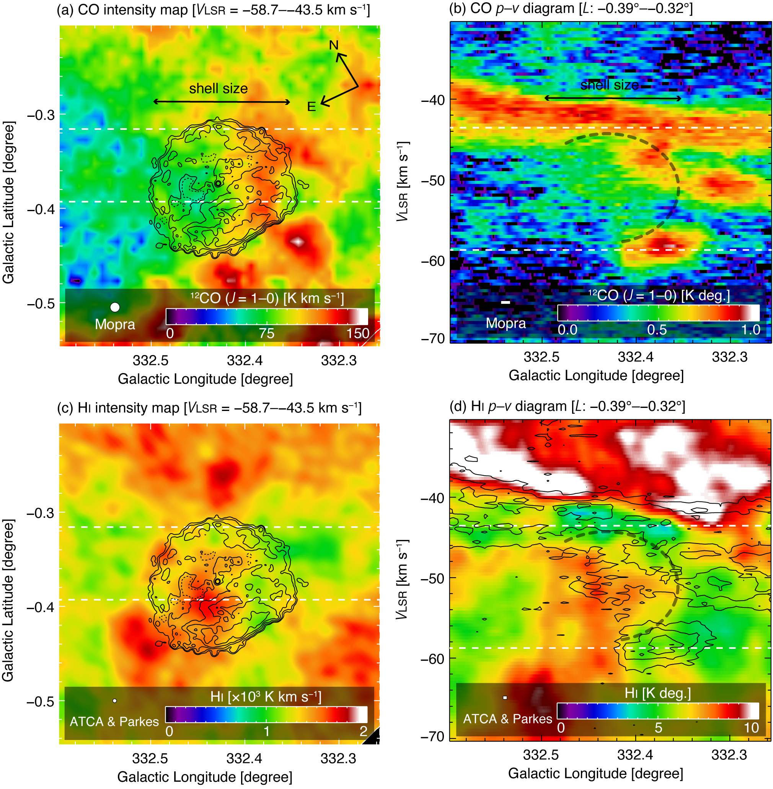<br />
图注：Integrated intensity maps and position-velocity (p--v) diagrams of $^{12}$CO($J$~=~1--0) (top panels) and H{\(\sc\) i} (lower panels). The integration range is from $-$58.7 to $-$43.5~km~s$^{-1}$ in the velocity for each intensity map; and from $-$0\fdg39 to $-$0\fdg32 in the Galactic longitude for each p--v diagram. Dashed curve delineate cavity-like structure. The superposed contours in Figures~\(\ref{fig:3}(a)\) and \(\ref{fig:3}(c)\) are the same as those shown in Figure \(\ref{fig:1}.\) The superposed contours in Figure~\(\ref{fig:3}(d)\) indicate the $^{12}$CO($J$~=~1--0), whose contour levels are 0.22, 0.44, 0.66, and 0.88 K degree.<br />
对应解读：建议重点查看的主要数据图；对应摘要中“−58.7 到 −43.5 km s−1 的 CO 云与 X 射线壳对应”以及“p-v 图显示 ΔV≈7.5 km s−1 膨胀运动”的核心证据。<br />
入选理由：这是全文最关键的诊断图，同时给出 12CO 与 HI 的积分强度分布和位置—速度图，直接支撑分子/原子气体与 RCW 103 壳层关联、腔状结构以及膨胀速度估计。相比单纯形态图，它包含速度结构，是判断物理关联而非投影巧合的主要依据。<br />
来源与置信度：\(arxiv_source\)；high；\(arxiv_source\) / 00_RCW103_Mopra_Inoue_ApJ.tex:figure[4]</p>
<p><strong>Fig05</strong><br />
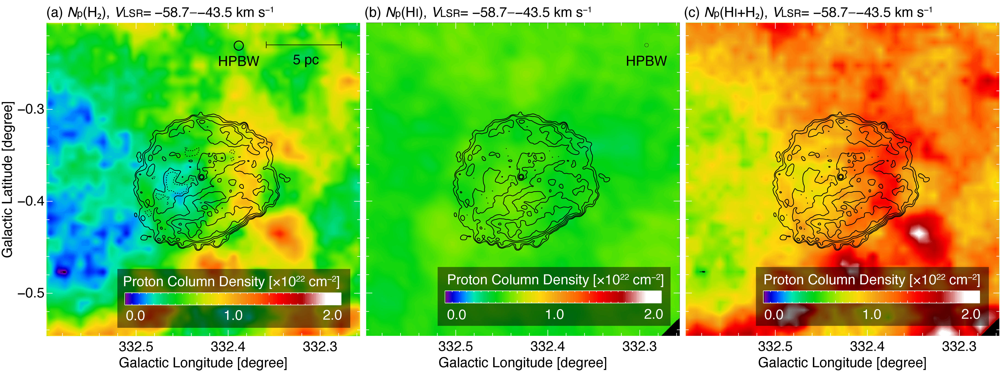<br />
图注：Distributions of the ISM proton column densities. (a) $N_{\mathrm{p}}$(H$_2$), (b) $N_{\mathrm{p}}$(H{\(\sc\) i}), and (c) $N_{\mathrm{p}}$(H$_2$+H{\(\sc\) i}). The velocity range of the integrations is from $-$58.7 to $-$43.5 km s$^{-1}$ for each map. The superposed contours are the same as those shown in Figure~\(\ref{fig:1}.\)<br />
对应解读：对应模型/参数估计段落中总星际质子密度约 810 cm−3、进而推导宇宙线质子总能量 Wp 的气体靶物质约束。<br />
入选理由：该图展示 H2、HI 以及总 ISM 质子柱密度分布，是把 CO/HI 观测转化为强子伽马射线模型所需靶气体密度的关键步骤。它比普通强度图更直接连接到论文的定量结论：低 Wp 是否由高密度气体与热化能量分配导致。<br />
来源与置信度：\(arxiv_source\)；high；\(arxiv_source\) / 00_RCW103_Mopra_Inoue_ApJ.tex:figure[5]</p>
<p><strong>Fig06</strong><br />
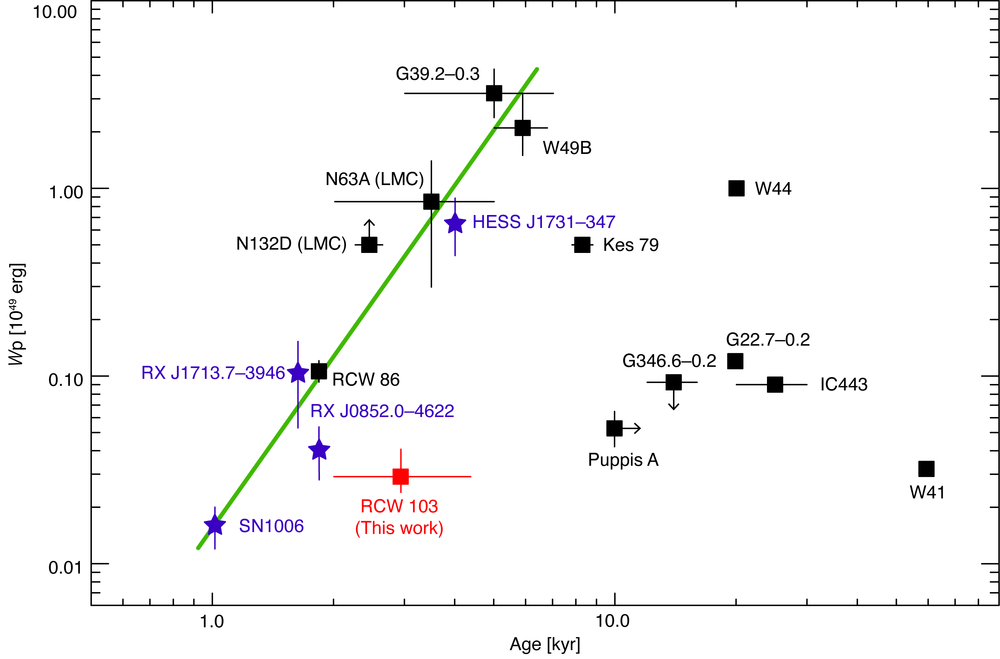<br />
图注：Scatter plot between the age of SNRs and the total energy of cosmic-ray protons $W_{\mathrm{p}}$ \(\citep{2021ApJ...919..123S,2022ApJ...933..157S,2022ApJ...938...94A,2026ApJ..1001...19M}.\) The green line indicates a least-squares fit to the data points with SNRs ages below 6~kyr. The star symbols denote SNRs whose calculations include the hadronic gamma-ray fraction, while the square symbols denote SNRs calculated under the assumption of a dominant hadronic origin.<br />
对应解读：对应结论中“RCW 103 的总宇宙线质子能量约 3.0×10^47 erg，低于同龄伽马射线 SNR 一个数量级以上”的模型比较图。<br />
入选理由：该散点图把 RCW 103 放在 SNR 年龄—宇宙线质子能量的比较框架中，并包含最小二乘拟合线及不同强子假设符号分类，是理解该源为何异常低效加速宇宙线的主要比较证据。<br />
来源与置信度：\(arxiv_source\)；high；\(arxiv_source\) / 00_RCW103_Mopra_Inoue_ApJ.tex:figure[6]</p>
<p><strong>Fig02</strong><br />
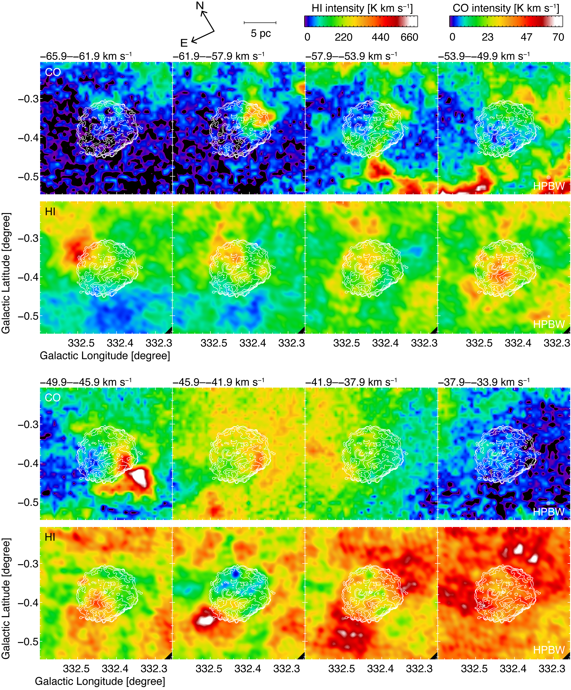<br />
图注：Velocity channel maps of the Mopra $^{12}$CO($J$~=~1--0) (upper panels) and the ATCA $\&$ Parkes H{\(\sc\) i} (lower panels). Each panel of CO/H{\(\sc\) i} shows distributions every 4 km s$^{-1}$ in the velocity range from $-$65.9 to $-$33.9~km~s$^{-1}$. The color bars for CO and H{\(\sc\) i} are shown at the top of the set of panels. The superposed contours are the same as those shown in Figure \(\ref{fig:1}.\)<br />
对应解读：对应建议检查的主要数据图；用于确认 CO 和 HI 在不同速度通道中与 X 射线壳层的空间对应关系，尤其是 −58.7 到 −43.5 km s−1 相关速度范围的选择。<br />
入选理由：速度通道图展示了从 −65.9 到 −33.9 km s−1 的 CO 与 HI 分布，并叠加 X 射线轮廓，可检验作者为何选定特定速度区间作为与 RCW 103 相关的气体。它是 Fig04 积分和 p-v 分析之前的重要观测基础。<br />
来源与置信度：\(arxiv_source\)；high；\(arxiv_source\) / 00_RCW103_Mopra_Inoue_ApJ.tex:figure[2]</p>
<p><strong>Fig03</strong><br />
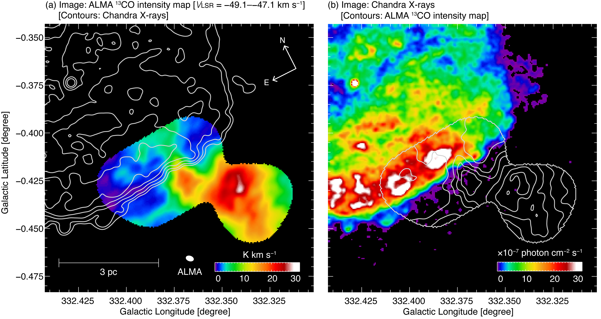<br />
图注：(a) Integrated intensity map of ALMA ACA $^{13}$CO($J$~=~1--0), overlaid with Chandra X-ray intensity contours in the energy band 0.5--7.0 keV. The integration velocity range of $^{13}$CO is from $-$49.1 to $-$47.1~km~s$^{-1}$. The contour levels are the same as those shown in Figure \(\ref{fig:1}.\) (b) Chandra X-ray intensity map in the 0.5--7.0 keV band, overlaid with contours of the ALMA ACA $^{13}$CO($J$~=~1--0) integrated intensity. The integration velocity range is the same as in \(\ref{fig:2.5}(a).\) The contour levels are 3.0, 7.0, 11, 15, 20, and 24 K km s$^{-1}$.<br />
对应解读：对应关键图表中高分辨率分子气体与 Chandra X 射线形态比较，尤其是 ALMA ACA 13CO 在 −49.1 到 −47.1 km s−1 的致密气体分布。<br />
入选理由：该图使用 13CO 追踪较致密分子气体，并与 X 射线图像互相叠加，有助于说明 RCW 103 内部仍存在大量致密气体、热 X 射线占主导以及冲击能量可能转化为气体加热的解释。<br />
来源与置信度：\(arxiv_source\)；high；\(arxiv_source\) / 00_RCW103_Mopra_Inoue_ApJ.tex:figure[3]</p>
<p><strong>Fig08</strong><br />
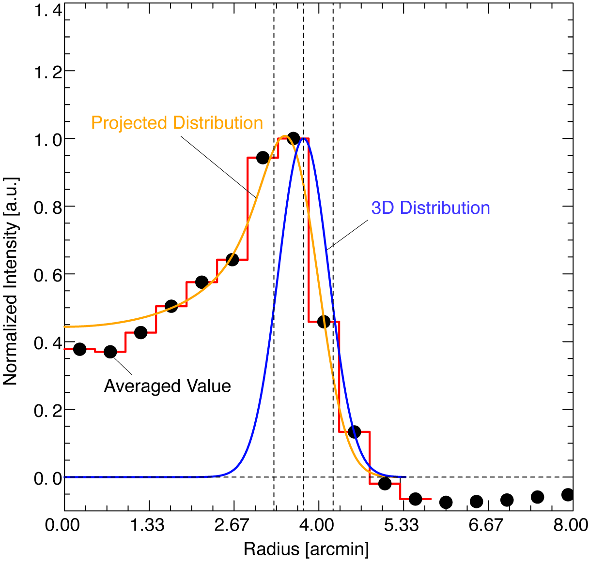<br />
图注：Radial profiles of the 1359.7 MHz radio continuum, centered at ($l, b$)~=~(332$\fdg$42, $-$0$\fdg$37). The black filled circles represent the average values of the radio continuum in each annulus. The blue line represents the three-dimensional Gaussian distribution and the orange solid line represents the projected distribution derived from least-squares fitting (see the text for details). The vertical dashed lines indicate the best-fit values for the radius and the range of the shell thickness.<br />
对应解读：对应模型拟合/几何参数检查段落；展示 1359.7 MHz 射电连续谱径向轮廓、三维高斯与投影模型拟合，以及壳半径和厚度的最佳拟合范围。<br />
入选理由：该图是候选图中少数明确包含拟合曲线和最佳拟合几何参数的图，可用于检查壳层半径、厚度等后续体积和密度估计的几何假设。虽然不如气体速度和质子密度图核心，但对系统误差和模型几何很有参考价值。<br />
来源与置信度：\(arxiv_source\)；high；\(arxiv_source\) / 00_RCW103_Mopra_Inoue_ApJ.tex:figure[8]</p>
<h4 id="_67">强相关工作</h4>
<p>同源/同事件背景方面，应把 RCW 103 作为命名源检索，而不是只检索一般 SNR—分子云相互作用。可靠检索路径包括 NASA ADS 和 arXiv 关键词：“RCW 103 molecular cloud CO HI”, “RCW 103 gamma-ray Fermi-LAT”, “RCW 103 Chandra thermal X-ray”, “1E 161348-5055 RCW 103 central compact object”。同源论文应包括 RCW 103 的 X 射线壳层研究、中心致密天体 1E 161348-5055 的观测、Fermi-LAT 伽马射线探测/谱建模，以及早期 CO 或 H I 环境研究。公共入口可从本文 arXiv 页面 https://arxiv.org/abs/2608.24187 和 NASA ADS 以题名检索开始。</p>
<p>同类工作方面，应比较其他与分子云相互作用并发出 GeV/TeV 伽马射线的 SNR，例如 W44、IC 443、W51C、W28、RX J1713.7-3946、Vela Jr.、G349.7+0.2、Kes 79 或其他文献样本中年龄小于数 kyr到数万年的源。比较时不要只看 $W_{\rm p}$ 数值，还要看是否采用相同强子分数、相同气体密度定义和相同距离。Fig. 6 引用的比较文献是追踪“年龄—宇宙线质子能量”关系的直接入口，建议从图注中的 2021/2022/2026 ApJ 文献反向查找样本定义。</p>
<p>基础工作方面，需要查阅三类文献：CO/H I 柱密度转换方法，SNR—分子云相互作用观测诊断，以及强子伽马射线辐射模型。检索关键词可用 “\(X_CO\) factor Galactic molecular clouds”, “HI optical depth correction supernova remnants”, “OH 1720 MHz maser SNR molecular cloud interaction”, “hadronic gamma-ray emission pion decay supernova remnants”。这些基础工作帮助判断本文的 $n_{\rm p}\sim810\\ {\rm cm^{-3}}$ 是否合理，以及 $W_{\rm p}$ 的不确定性是否被充分覆盖。</p>
<p>潜在张力线索包括：RCW 103 的伽马射线是否必须是强子起源，中心致密天体或邻近源是否污染 GeV 发射，热 X 射线主导是否真的意味着冲击能量未进入非热粒子，以及前身星风泡能否解释 CO/H I 的 $7.5\\ {\rm km\\ s^{-1}}$ 膨胀。若不确定具体文献编号，建议使用 ADS 的 citation network，从本文 bibliography 中包含 RCW 103、Fermi-LAT、Chandra、CO survey 和 SNR cosmic-ray energy 的条目向前后追踪。</p>
<p><strong>同一事件 / 同类源线索</strong>：</p>
<p>（未提供）</p>
<p><strong>相似工作</strong>：</p>
<p>（未提供）</p>
<p><strong>基础理论 / 方法工作</strong>：</p>
<p>（未提供）</p>
<p><strong>相反观点 / 张力线索</strong>：</p>
<p>（未提供）</p>
</details>
<h3 id="7-a-general-response-theory-for-closure-phases-through-visibility-nulls-and-image-structure">7. A General Response Theory for Closure Phases through Visibility Nulls and Image Structure</h3>
<ul>
<li>来源：arXiv / astro-ph.HE</li>
<li>链接：https://arxiv.org/abs/2608.23690v1</li>
<li>作者：Shokoufe Faraji, Avery E. Broderick</li>
<li>评分：novelty 8/10，importance 8/10，relevance 8/10，final 9.00/10</li>
<li>推荐理由：提出闭合相位穿越可见度零点和图像结构的一般响应理论，并应用于EHT M87*，是可复用的高角分辨干涉方法突破，对黑洞视界尺度成像和仪器方法重要。</li>
</ul>
<p><strong>中文题目</strong>：穿过可见度零点与图像结构的闭合相位广义响应理论</p>
<p><strong>做了什么</strong>：这篇论文把干涉测量中的闭合相位从“定性判断源是否不对称”的工具，推进为一个可计算的响应理论。作者从任意亮度分布和任意不经过可见度零点的三角基线出发，证明闭合相位可视为对数可见度的组合，并给出图像微扰的一阶主响应核和笛卡尔矩层级；当观测轨迹接近真实可见度零点时，他们又建立另一套局部零点理论，用零点阶数和绕数区分普通相位缠绕、非零极小值和多值相位行为。论文用结构化环模型验证理论，并把它应用到 EHT 的 M87* 数据，展示闭合相位随轨迹演化可直接约束高阶非对称图像矩。</p>
<p><strong>为什么重要</strong>：闭合相位是 VLBI 和光学/红外干涉中最抗站点相位误差的观测量之一，但长期以来它与源结构的关系常被简化成“非零闭合相位意味着不对称”。这篇工作重要在于，它给出一般亮度分布下的微分响应公式，明确什么结构尺度、什么图像矩、什么基线三角形会贡献闭合相位变化；同时也说明在可见度零点附近为什么常规线性解释会失效。对 EHT、ngEHT、GRAVITY、未来空间 VLBI 或相位闭合零化实验来说，这相当于提供了一套把闭合相位残差翻译成图像结构信息的通用语言。</p>
<p><strong>理论 / 观测 / 仪器方法价值</strong>：理论价值在于把闭合相位写成对数傅里叶可见度的响应问题，并将图像扰动与三角形采样灵敏度分离，便于构造模型无关或弱模型依赖的诊断量。观测价值在于，读者可以用这套核函数和矩展开判断某个闭合相位变化究竟来自源结构演化、基线轨迹穿过的傅里叶区域，还是来自接近可见度零点时的拓扑相位行为。方法价值在于它为 EHT 闭合相位拟合、成像正则化检验、光学相位闭合零化中的微弱伴星/非对称结构探测提供了统一框架。</p>
<p><strong>为什么应该关注</strong>：如果你使用闭合相位来判断黑洞阴影、喷流足点、吸积流亮斑、环状结构偏心或光学干涉中的微弱伴星，这篇论文值得关注，因为它告诉你闭合相位对哪些图像特征真正敏感、在哪些区域会变得奇异、哪些“相位跳变”不能简单解释为源突然改变。它也提醒读者：闭合相位不是一个神秘的鲁棒标量，而是一个有明确响应核、零点拓扑和统计拟合结构的傅里叶观测量。</p>
<details class="paper-detail">
<summary>展开详细解读：文章讲解、背景、理论、重点章节、图表与相关工作</summary>
<h4 id="_68">文章详细讲解</h4>
<p>科学问题：闭合相位 \(\Phi_{123}\) 的经典优点是消去站点相位误差，因此在 VLBI、毫米波黑洞成像和光学长基线干涉中极其核心。但它的物理解释常停留在两个层面：其一，若源亮度具有点对称性，闭合相位通常为 \(0\) 或 \(\pi\)；其二，非零闭合相位说明图像存在不对称。这种说法对数据解释太粗，因为不同尺度、不同图像矩、不同傅里叶采样三角形对闭合相位的贡献并不等价。本文要解决的问题是：对任意亮度分布，闭合相位对图像扰动和傅里叶平面轨迹位移的响应能否被一般地、定量地写出来；当可见度接近或穿过零点时，常规展开为什么失效，又应如何描述相位行为。</p>
<p>作者怎么做：论文分成两条理论分支。第一条是“正则区”理论，即三条基线上的复可见度都不为零时，把闭合相位看作 \(\log V\) 的虚部组合。这样对图像亮度扰动 \(\delta I\) 的一阶响应可写成一个精确主核，核只由当前三角基线的复可见度和傅里叶相因子决定。进一步把图像扰动按笛卡尔矩展开，就能把源结构内容和观测三角形灵敏度分开。第二条是“零点区”理论：当某条可见度 \(V({\bf u})\) 在傅里叶平面存在真实零点，\(\log V\) 不再良定义，闭合相位的局部行为由零点阶数、相位绕数和局部复导数决定，而不是由普通线性微扰核决定。</p>
<p>关键结果：在远离可见度零点时，闭合相位的扰动可以直接表示为亮度扰动与响应核的积分；低阶展开中，源的总通量、质心、二阶矩、三阶矩等以有层次的方式进入闭合相位。对闭合三角形而言，某些低阶项会因 \({\bf u}_{12}+{\bf u}_{23}+{\bf u}_{31}=0\) 的几何约束相互抵消，因此闭合相位特别容易突出非镜像或高阶不对称成分。对固定图像、随地球自转变化的观测轨迹，作者又给出局部傅里叶位移展开，使闭合相位沿 \(u\)-\(v\) 轨迹的变化可被理解为对 \(\nabla_{\bf u}\log V\) 及高阶导数的采样。</p>
<p>论文用结构化环模型检验这些展开：环是 EHT 黑洞成像中最自然的测试对象，因为其傅里叶可见度具有明显零点、环宽和方位亮度调制会引起强闭合相位信号。模型验证表明，正则展开在远离零点时能准确预测闭合相位响应，而一旦进入可见度零点邻域，相位跳变、缠绕和多值行为必须用零点局部理论解释。作者随后把框架应用到 M87* 的 EHT 闭合相位数据，展示闭合相位随时间和三角形轨迹的演化中可以直接测量与较高图像矩相关的非对称结构，而不仅仅是复现某个特定几何环模型。</p>
<p>局限和下一步：这篇文章的重点是响应理论和诊断框架，而不是重新给出一幅唯一的 M87* 图像。实际数据中，热噪声、增益幅度校准、散射、时变源结构、带宽/时间平均、三角形选择以及可见度零点附近的非高斯相位误差都会影响闭合相位解释。下一步自然是把该理论嵌入完整贝叶斯成像、动态成像和阵列设计优化中：例如问哪些 ngEHT 新站点最能提高特定图像矩的 Fisher 信息，或在光学相位闭合零化中如何设计三角形以最大化微弱非对称信号、同时避开不可控零点奇异性。</p>
<h4 id="_69">关键结果是怎么做出来的</h4>
<p>本文的证据链首先来自一般数学推导，而不是某个特定数值模拟。样本意义上的“数据”在理论部分是任意亮度分布 \(I({\bf x})\) 和任意闭合三角形 \(({f u}_1,{f u}_2,{f u}_3)\)，条件是三条边对应的复可见度 \(V({\bf u}_i)\) 均非零。作者把闭合相位写成 \(\mathrm{Im}\sum_i \log V({\bf u}_i)\)，然后对 \(I\rightarrow I+\delta I\) 做一阶变分。这个步骤给出全文最核心的主响应核：每个图像像素的亮度扰动对闭合相位的贡献由三条基线的 \(e^{-2\pi i{f u}\cdot{f x}}/V({\bf u})\) 加权后取虚部。这个结果是精确一阶式，不依赖环模型、点源模型或对称性假设。</p>
<p>第二个关键证据链是矩展开。作者将图像扰动或固定图像的傅里叶变换在小尺度/局部范围中按笛卡尔矩展开，得到一个层级：不同阶的图像矩通过不同阶的三角形几何张量进入闭合相位。读者应注意这里的“事件数”不是瞬变事件计数，而是三角形采样点数和独立闭合相位测量数；统计上，每个闭合相位点都对应一个由三个复可见度构成的非线性函数。论文的核心判断不是某个单点显著性，而是展开预测与模拟或 EHT 闭合相位轨迹之间的一致性，以及高阶矩项是否系统性改善残差。</p>
<p>第三个关键证据链来自可见度零点附近的反例和分类。作者说明，若 \(V({\bf u}_0)=0\)，则 \(\delta\log V=\delta V/V\) 发散，正则响应核必然失败。此时需要看 \(V\) 在 \({\bf u}_0\) 附近的局部复解析结构，例如 \(V\sim a(z-z_0)^m\) 的阶数 \(m\) 和绕数。结构化环模型在这里非常重要：环状图像天然产生可见度振荡和零点，适合展示三种情形的区别，即可去除相位包裹、非零可见度极小值以及真正多值相位零点。支撑结论的图应包括闭合相位随基线轨迹变化的曲线、傅里叶平面中可见度幅度低谷/零点位置、以及正则展开与完整模型之间的残差。</p>
<p>第四个证据链是 M87<em> 的 EHT 应用。EHT 数据由多站点三角形产生大量闭合相位点，尤其是对站点相位误差不敏感，因此适合检验非对称结构。作者并不是简单说 M87</em> 有非零闭合相位，而是用理论中的矩响应解释闭合相位沿观测轨迹的演化，将其与环状阴影图像中的方位不对称、高阶亮度矩和可能的零点邻域行为联系起来。显著性或置信度在这类应用中通常应通过闭合相位似然、模型比较、后验预测残差和不同三角形的一致性来判断，而非只看单条曲线是否偏离 \(0\)。</p>
<p>系统误差方面，最需关注的是可见度幅度接近零时相位噪声的非高斯性和相位包裹处理。若 \(|V|\) 很小，热噪声会把相位分布从近似高斯推向环形或近似均匀分布，闭合相位残差的普通 \(\chi^2\) 解释会变差。稳健性检验应包括移除接近零点的采样、改变相位解缠方案、改变环模型细节、分三角形/分时间段拟合、比较直接图像域扰动预测与完整傅里叶计算。论文的价值正是在于给出判据：何时能用线性核解释，何时必须切换到零点拓扑描述。</p>
<details class="paper-subdetail">
<summary>展开背景、理论、公式、模型、章节和图表导读</summary>
<h4 id="_70">背景知识</h4>
<p>闭合相位最早在射电干涉和光学散斑/孔径掩模干涉中发展起来，其核心是三个望远镜形成闭合三角形时，三条基线相位相加后，单个站点的相位误差相互抵消。对毫米 VLBI 来说，大气水汽和站点时钟造成的相位扰动非常强，直接复相位很难绝对校准，因此闭合相位成为 EHT 这类实验中最可靠的相位信息之一。</p>
<p>研究对象是复可见度 \(V({\bf u})\)，即天空亮度 \(I({\bf x})\) 的傅里叶分量。不同基线长度和方向采样不同空间频率，因此闭合相位并不是图像某个局部区域的简单亮度值，而是三处傅里叶采样相位的组合。历史上，很多解释把闭合相位与图像不对称直接相连：点对称亮度给出实可见度，相位只取 \(0\) 或 \(\pi\)，闭合相位也相应受限；若出现明显非零闭合相位，就说明源不是点对称。这个说法正确但不够精细。</p>
<p>为什么现在值得重新看？一方面 EHT 已经进入从“是否看到环”到“环的偏心、亮度方位结构、时间演化、喷流连接和广义相对论检验”的阶段，闭合相位中高阶结构信息越来越重要。另一方面，ngEHT 和空间 VLBI 会显著增加基线覆盖，使闭合相位数量暴增；如果没有一般响应理论，很难判断新增数据究竟提高了哪些图像模式的约束。光学/红外干涉中的相位闭合零化也面临类似问题：微弱伴星、尘埃盘非对称和恒星表面结构都可能通过小闭合相位信号出现。</p>
<p>该领域常见误区之一是把闭合相位当作“完全免校准”的量。它确实消除站点相位，但不自动消除热噪声偏差、带宽平均、时间平均、偏振泄漏、源时变性和可见度零点附近的相位病态。另一个误区是把相位跳变全部解释成图像结构突变；事实上，傅里叶可见度穿过零点时，复数相位本身就可能发生拓扑缠绕或多值行为，即使图像平滑演化，观测相位也可出现剧烈变化。</p>
<p>M87<em> 是这类研究的自然应用对象。EHT 对 M87</em> 的成像和模型拟合已经证明，其毫米图像近似为不均匀亮环，包含强方位亮度梯度和中央亮度压低。环状结构的傅里叶变换含有贝塞尔函数式振荡，因而具有可见度零点或深极小值；这使 M87* 的闭合相位既富含图像不对称信息，也特别容易受到零点附近相位拓扑的影响。</p>
<h4 id="_71">基础理论 / 方法脉络</h4>
<p>基础图像是这样的：天空亮度分布 \(I({\bf x})\) 经过干涉阵列采样后，得到复可见度 \(V({\bf u})\)。这里 \({\bf x}\) 是天球小角度坐标，\({\bf u}\) 是以波长为单位的基线向量。复可见度的幅度反映该空间频率上的对比度，相位反映亮度分布相对参考点的非对称信息。但单条基线相位会被两个站点的未知相位污染。</p>
<p>闭合相位利用三站点三角形消除站点项。若测得相位为真实基线相位加站点相位差，则三条边相加时站点项成对抵消。因此闭合相位是少数在毫米 VLBI 恶劣大气条件下仍能稳定使用的相位观测量。它的代价是非线性：\(\Phi_{123}=\arg[V_{12}V_{23}V_{31}]\)，不是图像亮度的线性函数。</p>
<p>本文的关键理论假设是分区处理。正则区假设三条基线上的 \(V({\bf u}_i)\neq 0\)，这时可以选择局部连续的复对数 \(\log V\)，闭合相位就是其虚部之和。这个写法让变分变得简单：\(\delta\log V=\delta V/V\)。因为 \(\delta V\) 又是 \(\delta I\) 的傅里叶变换，所以闭合相位对图像扰动的响应可写成一个图像域积分核。</p>
<p>当可见度接近零点时，问题从普通微扰理论变成复平面拓扑问题。复数 \(V\) 的相位是 \(\arg V\)，在 \(V=0\) 处没有定义；绕过零点一圈，相位可能累积 \(2\pi m\)。这里的 \(m\) 是绕数或拓扑荷。这个性质解释了为什么某些闭合相位突变不是普通噪声或源结构突变，而是傅里叶采样路径相对于零点的几何关系。</p>
<p>观测和统计上，闭合相位通常以包裹角形式给出，残差也应在圆周上计算。若信噪比较高且远离零点，可以近似使用高斯相位误差；若某条可见度幅度很小，相位误差会急剧增大，甚至接近均匀分布。本文理论中的“正则核”和“零点分类”正好对应这两种数据分析制度：一个适合线性响应和矩约束，一个适合诊断相位奇异、排除误读和设计稳健拟合。</p>
<h4 id="_72">公式与推导</h4>
<p>第一步，从 van Cittert-Zernike 关系出发，小视场下复可见度是天空亮度的二维傅里叶变换：</p>
<div class="math-display">\[V({\bf u})=\int I({\bf x})\exp(-2\pi i{\bf u}\cdot{\bf x})\,d^2{\bf x}.\]</div>
<p>这里 \({\bf x}\) 是角坐标，\({\bf u}\) 是基线空间频率，\(I({\bf x})\) 为比强度或亮度分布。该式说明每条基线测量一个空间频率模式。</p>
<p>第二步，加入站点相位误差。站点 \(a\) 与 \(b\) 的观测可见度可写为</p>
<div class="math-display">\[\tilde V_{ab}=g_a g_b^* V_{ab},\quad g_a=|g_a|\exp(i\psi_a).\]</div>
<p>因此观测相位满足 \(\tilde\phi_{ab}=\phi_{ab}+\psi_a-\psi_b\)。对三角形 \((1,2,3)\)，站点相位相加抵消：</p>
<div class="math-display">\[\tilde\Phi_{123}=\arg(\tilde V_{12}\tilde V_{23}\tilde V_{31})=\phi_{12}+\phi_{23}+\phi_{31}.\]</div>
<p>这就是闭合相位鲁棒性的来源。</p>
<p>第三步，在正则区 \(V_i\neq0\) 使用复对数。令 \(i=1,2,3\) 标记三条闭合基线，且 \({\bf u}_1+{\bf u}_2+{\bf u}_3=0\)，则</p>
<div class="math-display">\[\Phi=\mathrm{Im}\left[\sum_{i=1}^{3}\log V({\bf u}_i)\right].\]</div>
<p>这一步是本文理论的核心重写：只要不穿过零点，闭合相位就是对数可见度的线性和的虚部。</p>
<p>第四步，对图像作微扰 \(I\rightarrow I+\delta I\)。由傅里叶线性性，</p>
<div class="math-display">\[\delta V({\bf u}_i)=\int \delta I({\bf x})\exp(-2\pi i{\bf u}_i\cdot{\bf x})\,d^2{\bf x}.\]</div>
<p>再由 \(\delta\log V=\delta V/V\)，得到一阶闭合相位响应：</p>
<div class="math-display">\[\delta\Phi=\int K_\Phi({\bf x})\,\delta I({\bf x})\,d^2{\bf x},\]</div>
<p>其中主响应核为</p>
<div class="math-display">\[K_\Phi({\bf x})=\mathrm{Im}\left[\sum_{i=1}^{3}\frac{\exp(-2\pi i{\bf u}_i\cdot{\bf x})}{V({\bf u}_i)}\right].\]</div>
<p>该核把“图像哪一处的扰动”与“三角形在哪些空间频率上敏感”直接相连。</p>
<p>第五步，若关心低阶空间结构，可定义笛卡尔矩</p>
<div class="math-display">\[M_{\alpha\beta}=\int x^\alpha y^\beta I(x,y)\,d x\,d y.\]</div>
<p>把指数相因子展开为</p>
<div class="math-display">\[\exp(-2\pi i{\bf u}\cdot{\bf x})=\sum_{n=0}^{\infty}\frac{(-2\pi i)^n}{n!}({\bf u}\cdot{\bf x})^n,\]</div>
<p>即可把可见度和闭合相位写成图像矩的层级。闭合三角形条件会使某些低阶平移项抵消，因此高阶不对称矩会更清楚地进入 \(\Phi\)。</p>
<p>第六步，对固定图像、沿观测轨迹的小位移 \({\bf u}_i\rightarrow {\bf u}_i+\delta{f u}_i\)，有</p>
<div class="math-display">\[\delta\Phi=\mathrm{Im}\left[\sum_{i=1}^{3}\nabla_{\bf u}\log V({\bf u}_i)\cdot\delta{f u}_i\right].\]</div>
<p>这个式子解释地球自转综合中闭合相位曲线的局部斜率：它测的是对数可见度在傅里叶平面中的梯度。</p>
<p>第七步，在真实零点 \({\bf u}_0\) 附近，设局部复坐标 \(z=(u-u_0)+i(v-v_0)\)，若</p>
<div class="math-display">\[V(z)\simeq a(z-z_0)^m,\]</div>
<p>则相位为</p>
<div class="math-display">\[\arg V\simeq \arg a+m\arg(z-z_0).\]</div>
<p>这里 \(m\) 是零点阶数或绕数。绕零点一圈时相位变化 \(2\pi m\)，说明 \(\log V\) 展开在零点处失效，闭合相位可能出现拓扑相位缠绕。</p>
<p>第八步，数据拟合时可用圆周残差而非普通差值。若观测闭合相位为 \(\Phi_k^{\rm obs}\)，模型为 \(\Phi_k^{\rm mod}(\theta)\)，高信噪近似下</p>
<div class="math-display">\[\chi^2(\theta)=\sum_k \frac{\mathrm{wrap}[\Phi_k^{\rm obs}-\Phi_k^{\rm mod}(\theta)]^2}{\sigma_{\Phi,k}^2}.\]</div>
<p>其中 \(\theta\) 是图像或矩参数，\(\sigma_{\Phi,k}\) 是闭合相位误差，\(\mathrm{wrap}\) 把角差限制到 \((-\pi,\pi]\)。该式是把本文响应理论用于实际参数估计的最直接诊断。</p>
<h4 id="_73">模型拟合 / 应用方法</h4>
<p>这篇文章本身主要提出理论框架，但它自然对应几类拟合问题。第一类是图像微扰拟合：给定一个基准图像 \(I_0({\bf x})\)，用响应核 \(K_\Phi({\bf x})\) 预测小扰动 \(\delta I({\bf x})\) 对闭合相位的影响。实际参数可以是局部亮斑强度、环的方位调制幅度、环中心偏移、宽度扰动，或一组低阶/高阶笛卡尔矩。在线性响应有效时，闭合相位残差与这些参数近似线性相关，可用加权最小二乘或高斯似然估计。</p>
<p>第二类是矩参数拟合。论文的矩层级提示我们，不一定要先重建完整图像才能提取非对称信息；可以直接拟合 \(M_{\alpha\beta}\) 或其归一化组合。这样做的优点是物理解释更透明，也便于比较不同成像算法的共同信息。缺点是矩之间常有强退化：例如总通量归一化、质心选择、环半径变化和方位亮度梯度都可在某些基线三角形上产生相似闭合相位响应。因此拟合时需要固定坐标规范，或同时引入幅度、闭合幅度、先验图像约束。</p>
<p>第三类是完整非线性模型拟合，例如结构化环、crescent、RIAF/GRMHD 后处理图像、或光学干涉中的恒星加伴星模型。此时闭合相位是 \(\arg[V_1V_2V_3]\)，参数后验可能多峰，特别是在相位包裹和可见度零点附近。本文的零点理论可作为残差诊断：如果拟合失败集中在 \(|V|\) 极小的轨迹区域，问题未必是模型缺少某个亮斑，也可能是误差模型或相位解缠不适用。</p>
<p>似然选择非常关键。高信噪、远离零点时，可用包裹高斯闭合相位似然；低信噪或接近零点时，更合理的是从复可见度噪声传播出闭合相位分布，或直接在复双谱 \(B=V_{12}V_{23}V_{31}\) 上拟合。双谱保留幅度和相位信息，避免在 \(|B|\) 很小时把相位当成高斯量。对 EHT 这类数据，还要考虑扫描内平均、站点相关噪声、极化泄漏和源时变性。</p>
<p>残差应按三角形、时间、基线长度和距可见度零点的距离分组查看。若残差在某些三角形上呈系统斜率，可能说明傅里叶轨迹梯度项或高阶矩项不足；若残差在相位跳变处集中，可能说明零点拓扑未正确处理；若所有长基线三角形都有偏差，则可能涉及散射、环厚度或小尺度结构假设。本文框架的实际价值在于把这些不同失败模式分开，而不是只给出一个总 \(\chi^2\)。</p>
<h4 id="_74">重点章节 / 结果段落怎么读</h4>
<ol>
<li>
<p>引言和问题设定：应重点看作者如何批评传统闭合相位解释的不足。这里不是否认“闭合相位诊断不对称”，而是指出这种判断缺少响应函数，无法说明哪类结构造成多大信号，也无法处理可见度零点。</p>
</li>
<li>
<p>正则区的对数可见度理论：这是全文核心。读者应确认三条基线可见度非零的条件、闭合相位写成 \(\mathrm{Im}\sum\log V\) 的步骤、以及一阶图像扰动核的表达。这个部分决定了后面所有矩展开和观测轨迹展开的适用范围。</p>
</li>
<li>
<p>笛卡尔矩层级和傅里叶平面局部展开：这部分告诉读者如何把抽象核翻译成可解释的图像结构量。建议重点看哪些低阶项因闭合三角形条件抵消，哪些高阶矩对应方位不对称、偏心、亮斑或环结构扰动。</p>
</li>
<li>
<p>可见度零点附近的理论：这是防止误读闭合相位的关键章节。读者应看作者如何定义真实零点、非零极小值、可去除相位包裹和多值相位行为，以及零点阶数/绕数如何控制局部相位演化。</p>
</li>
<li>
<p>结构化环模型验证：这里是理论与黑洞成像直觉的桥梁。应关注模型闭合相位、近似展开和完整傅里叶计算之间的残差，尤其是远离零点与接近零点两种区域的表现差异。</p>
</li>
<li>
<p>M87* 与相位闭合零化应用：最后部分展示框架如何用于真实 EHT 数据和光学/红外干涉。读者应把它当成方法示范来看：重点不是某个单一图像结论，而是闭合相位演化如何被转化为高阶图像矩和微弱非对称结构的约束。</p>
</li>
</ol>
<h4 id="_75">建议重点查看的图表</h4>
<ol>
<li>
<p>闭合相位响应核的图像域图：应检查核在图像平面中的正负结构、振荡尺度、与三角形基线方向的关系。关键是看哪些区域的亮度扰动最能改变 \(\Phi\)。</p>
</li>
<li>
<p>矩展开收敛性图：应查看一阶、二阶、三阶或更高阶矩项对完整闭合相位的逼近程度。重点看展开在哪些基线长度或源尺寸参数下失效。</p>
</li>
<li>
<p>傅里叶平面观测轨迹上的闭合相位演化：横轴可能是时间、轨迹参数或 \(u\)-\(v\) 坐标，纵轴为闭合相位。应看局部梯度展开是否能预测曲线斜率和曲率。</p>
</li>
<li>
<p>可见度幅度零点/极小值图：应检查 \(|V({\bf u})|\) 的二维分布、零点位置、观测轨迹是否穿过低幅度区域。闭合相位跳变若与这些位置对齐，说明零点理论不可忽略。</p>
</li>
<li>
<p>结构化环模型验证图：应看完整模型、正则近似、零点局部近似之间的对比。关键诊断是残差是否只在零点附近爆发，还是全局存在系统偏差。</p>
</li>
<li>
<p>M87* EHT 闭合相位数据与模型/矩预测对比图：应看不同三角形的数据点、误差棒、模型线和残差。不要只看闭合相位是否非零，而要看随时间的形状是否由高阶矩项解释。</p>
</li>
<li>
<p>稳健性或分样本图表：若论文给出不同三角形、不同扫描、不同模型设定的结果，应检查高阶非对称结论是否稳定，还是由少数接近零点的数据点主导。</p>
</li>
</ol>
<h4 id="_76">关键图表逐图导读</h4>
<p>图 1：通常应是理论几何或响应核示意。横纵轴若为图像坐标 \((x,y)\)，颜色表示 \(K_\Phi({\bf x})\) 的正负响应；若为傅里叶坐标 \((u,v)\)，则会标出闭合三角形的三条采样基线。读图时要注意核不是源亮度本身，而是“在该位置增加一点亮度会让闭合相位增加还是减少”。陷阱是把核的振荡结构直接当成图像结构。</p>
<p>图 2：矩层级或展开收敛图。横轴可能是源尺度与分辨率的组合、基线长度或展开阶数，纵轴是闭合相位误差或各阶贡献。数据点/曲线若显示低阶项迅速收敛，说明闭合相位可用少数图像矩解释；若高阶项长期重要，说明该三角形正在采样精细结构。读图陷阱是忽略坐标原点选择，因为质心和低阶矩会随图像平移定义改变。</p>
<p>图 3：观测轨迹局部展开图。横轴可为时间或轨迹参数，纵轴为 \(\Phi\)，模型线包括完整计算和一阶/二阶局部展开。关键看展开是否捕捉斜率、转折和相位包裹位置。若只在短区间内吻合，这是局部泰勒展开的正常限制，不应误认为理论失败。</p>
<p>图 4：可见度零点分类图。坐标轴通常是傅里叶平面 \((u,v)\)，颜色为 \(|V|\) 或 \(\arg V\)，并叠加观测轨迹。真正零点附近相位色图会呈现绕转结构；非零极小值则可有相位快速变化但不具有严格拓扑奇点。读图陷阱是用有限颜色分辨率把深极小值误判为零点，实际需要检查 \(|V|\) 是否在误差范围内与零相容。</p>
<p>图 5：结构化环模型测试图。横轴可能为基线轨迹参数或环模型参数，纵轴为闭合相位或残差。完整傅里叶模型应作为基准，正则响应和零点局部理论分别在不同区域有效。关键结论是两套理论有清晰适用边界：远离零点用 \(\log V\) 响应，靠近零点看阶数和绕数。</p>
<p>图 6：M87* 数据应用图。横轴多半是观测时间、GMST 或投影基线轨迹，纵轴为闭合相位；不同颜色代表不同站点三角形，模型线代表矩响应或结构化环预测。应重点看模型是否同时解释多个三角形的相位演化，而不是只拟合单条曲线。陷阱是忽略相位包裹和误差非高斯性，尤其在某些可见度幅度很低的时间段。</p>
</details>
<h4 id="_77">论文原图 / 可嵌入图片</h4>
<p><strong>Fig07</strong><br />
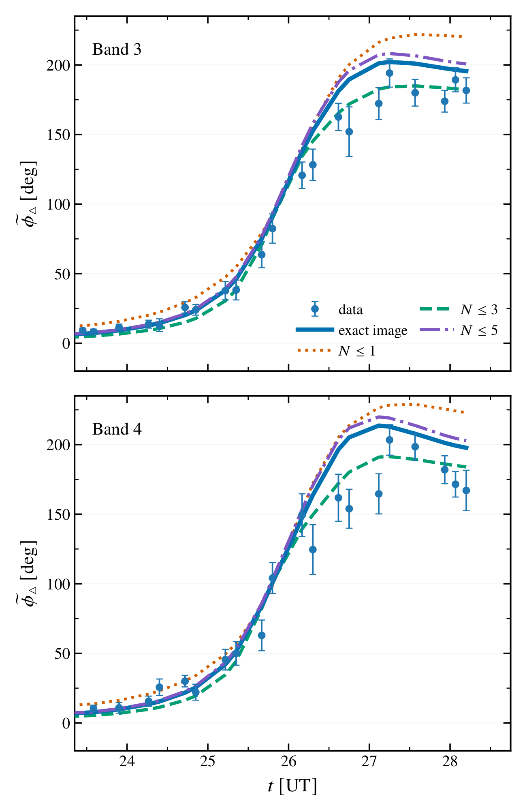<br />
图注：Closure phase on the GL-NN-PV triangle evaluated from the best fit Themis image and from successive Cartesian moment approximations to its inversion odd component. The upper and lower panels show bands 3 and 4, respectively. Points with error bars are the measured scan-averaged closure phases, and the solid blue curve is obtained by Fourier transforming the complete Themis image at the measured baseline coordinates. The remaining curves retain odd Cartesian moments through ranks $N\leq1$, $N\leq3$, and $N\leq5$. The same image moments are used for every scan and in both bands. The exact image reproduces the observed phase rotation in both bands.<br />
对应解读：对应“建议重点查看的图表”第6项和“图 6：M87<em> 数据应用图”，也直接支撑模型拟合段落中按三角形、时间检查闭合相位残差与高阶矩项的讨论。<br />
入选理由：这是候选图中最直接连接论文理论与真实 EHT M87</em> 数据的图：含 GL-NN-PV 三角形、band 3/4、观测误差棒、完整 Themis 图像曲线以及不同奇笛卡尔矩阶数近似。它能清楚展示闭合相位随扫描的相位旋转是否可由高阶非对称图像矩解释，比单纯模型示意图更适合嵌入日报的核心解读。<br />
来源与置信度：\(arxiv_source\)；high；\(arxiv_source\) / main.tex:figure[7]</p>
<p><strong>Fig03</strong><br />
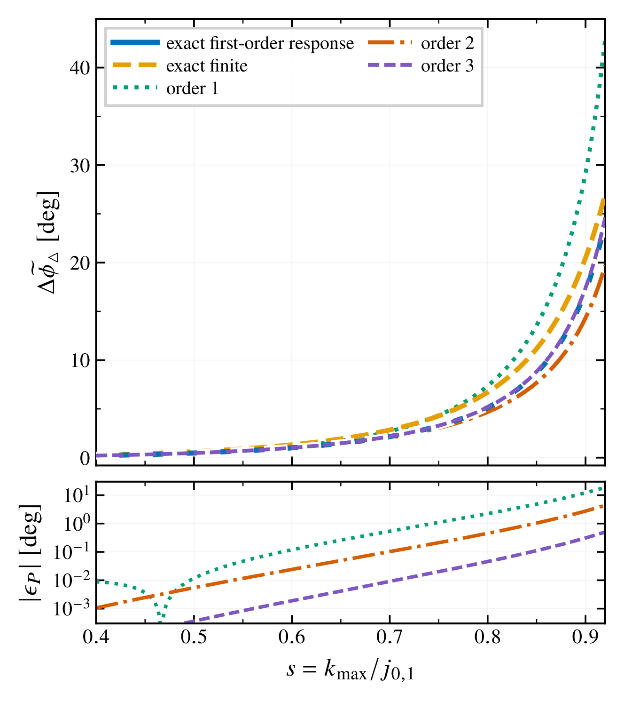<br />
图注：Closure phase response of an m-ring treated as a brightness perturbation of a uniform ring. In the upper panel, the solid curve shows the exact first order response to the complete brightness perturbation, while the long-dashed curve shows the exact finite closure phase change of the full m-ring. The curves labeled order 1, order 2, and order 3 retain Cartesian moments through ranks $N=1$, $N=3$, and $N=5$, respectively. The closure triangles are scaled self-similarly by $s=k_{\max}/j_{0,1}$, where $s=1$ places the longest baseline at the first visibility null of the uniform ring. The lower panel shows the absolute truncation error $|\epsilon_P|=\left| \delta\widetilde{\phi}_{\triangle}^{(P)} \delta\widetilde{\phi}_{\triangle}^{\rm exact,\,1st}\right|$, for the same three moment orders, plotted on a logarithmic scale. Successive odd rank truncations converge rapidly toward the exact first order response; in particular, the order 3 curve nearly overlaps it in the upper panel, while the residual panel makes the remaining difference visible. The separation between the exact first order and exact finite curves measures the nonlinear dependence of closure phase on the brightness perturbation.<br />
对应解读：对应“建议重点查看的图表”第2项“矩展开收敛性图”和“图 2：矩层级或展开收敛图”。<br />
入选理由：该图明确比较 m-ring 的完整一阶响应、有限闭合相位变化以及保留到不同奇数矩阶的近似，并在下方面板给出对数尺度截断误差。它最能支撑日报中关于低阶/高阶矩层级、收敛范围、靠近第一可见度零点时展开失效或非线性增强的讨论。<br />
来源与置信度：\(arxiv_source\)；high；\(arxiv_source\) / main.tex:figure[3]</p>
<p><strong>Fig06</strong><br />
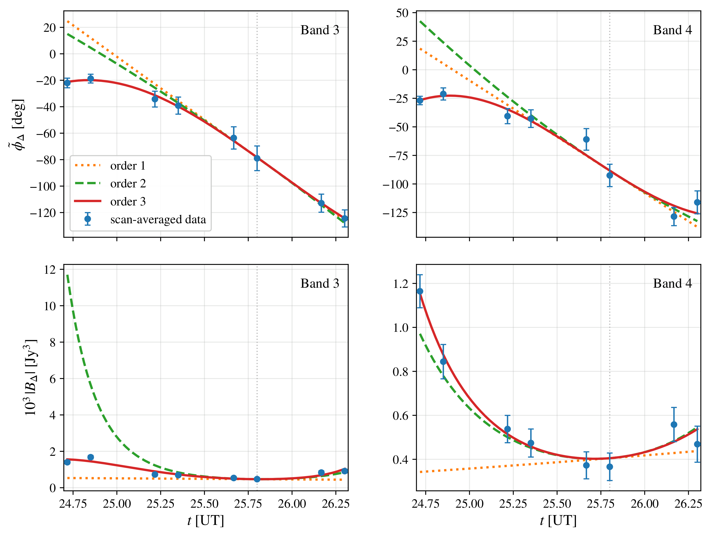<br />
图注：Local Fourier plane expansion of the scan-averaged AA-GL-PV bispectrum in M87<em> bands 3 and 4. The upper panels show the unwrapped closure phase and the lower panels show the bispectrum amplitude. Points with error bars are the scan-averaged data. Dotted, dashed, and solid curves show separate first, second, and third order complex polynomial fits to $\Log B_\triangle(t)$ about $t_0=25.8006$ UT. At each order, the same complex fit generates both the closure phase and bispectrum amplitude curves. The vertical dotted lines mark $t_0=25.8006$ UT. The quadratic term captures the local curvature near $t_0$, while the cubic term extends the agreement across the observed interval, most notably in Band 3. The amplitude and closure phase curves at each order are generated by the real and imaginary parts of the same complex coefficients. A linear variation is insufficient in both bands; the quadratic term recovers the principal curvature, with an additional cubic contribution favored in band 3. The nonzero minimum of $|B_\triangle|$ identifies the feature as a near null passage rather than a resolved fork.<br />
对应解读：对应“建议重点查看的图表”第3项“傅里叶平面观测轨迹上的闭合相位演化”、第4项“可见度幅度零点/极小值图”，以及“图 6：M87</em> 数据应用图”中关于时间演化、误差棒、模型线和近零点诊断的说明。<br />
入选理由：该图同时显示 M87* AA-GL-PV 三角形的闭合相位和双谱幅度，含 scan-averaged 数据误差棒以及一阶、二阶、三阶复多项式局部展开。它特别适合说明局部傅里叶展开如何捕捉斜率和曲率，并用非零的双谱幅度最低点区分 near-null passage 与真正相位叉。<br />
来源与置信度：\(arxiv_source\)；high；\(arxiv_source\) / main.tex:figure[6]</p>
<p><strong>Fig02</strong><br />
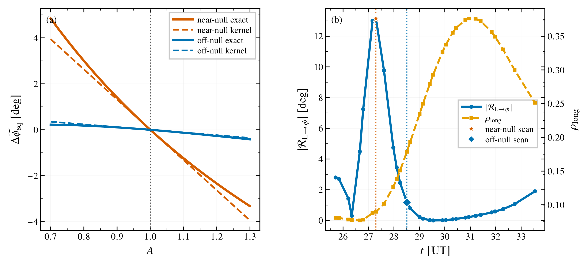<br />
图注：Cross-scale closure phase response evaluated from the best fit Themis image on the actual band 3 in GL-KT-MG track $M87^*$. The triangle is squeezed, with KT-MG forming the short leg and the other two baselines sampling nearby high spatial frequency visibility points. The large scale perturbation $I_{\rm L}$ is obtained by smoothing the inversion odd component of the image with a $20\,\mu{\rm as}$ Gaussian. \(\textit{Left:}\) exact finite closure phase change as the amplitude $A$ of $I_{\rm L}$ is varied, compared with the linear master kernel response. The near null configuration is much more sensitive than the off-null configuration, while the departure from the tangent response at larger $|A-1|$ shows when the finite expression becomes necessary. \(\textit{Right:}\) magnitude of the cross-scale response coefficient along the Earth rotation track, together with the minimum normalized visibility amplitude of the two long baselines. The response is strongly enhanced while the long baseline correlated flux is suppressed. The marked scans are the two configurations compared in the left panel.<br />
对应解读：对应“建议重点查看的图表”第1项闭合相位响应核/响应系数、第4项可见度低幅度增强，以及模型拟合段落中“图像微扰拟合”和线性 master kernel 响应。<br />
入选理由：该图展示基于 M87* Themis 图像的 cross-scale closure phase response：左图比较有限闭合相位变化和线性 master kernel 响应，右图把响应系数沿地球自转轨迹与长基线最小归一化可见度幅度联系起来。它能突出论文的关键物理结论：接近可见度低幅度区域时，微弱大尺度扰动对闭合相位的响应会显著增强。<br />
来源与置信度：\(arxiv_source\)；high；\(arxiv_source\) / main.tex:figure[2]</p>
<p><strong>Fig01</strong><br />
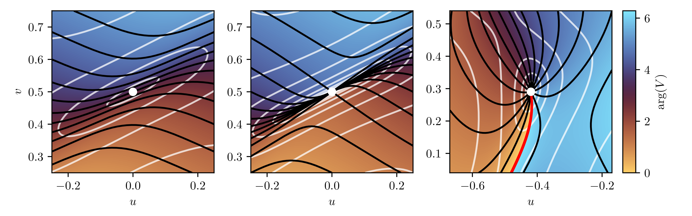<br />
图注：Visibility phase contours (black) and amplitude contours (white) for a trinary exhibiting a non-null visibility minimum (left), a visibility null with zero winding number (center), and a visibility null with a phase fork, i.e., a winding number of $-1$ (right). The location of the minimum visibility amplitude is shown by the white circle and centered in each panel. A branch cut appears in the right panel and is indicated by the redline.<br />
对应解读：对应“建议重点查看的图表”第4项“可见度幅度零点/极小值图”和“图 4：可见度零点分类图”。<br />
入选理由：该图是零点理论分支的基础诊断图，直接并列展示非零可见度极小值、零绕数可见度零点和带相位叉的真实零点。黑色相位等值线、白色幅度等值线、最低幅度位置和分支切线使读者能区分深极小值与具有拓扑绕数的零点，正好支撑日报中关于不要把有限分辨率下的极小值误判为零点的提醒。<br />
来源与置信度：\(arxiv_source\)；high；\(arxiv_source\) / main.tex:figure[1]</p>
<p><strong>Fig05</strong><br />
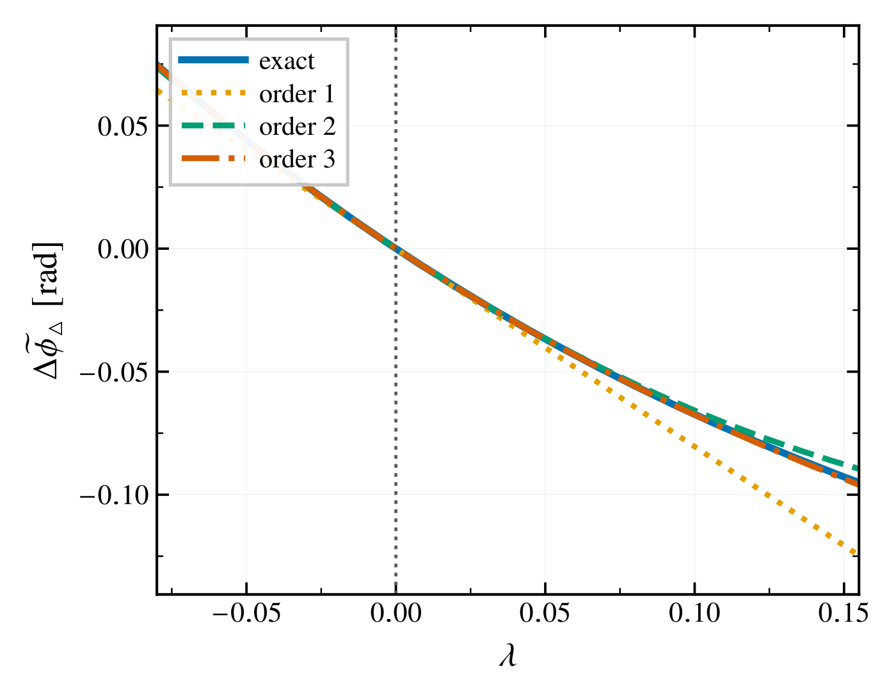<br />
图注：The exact closure phase and its successive local approximations along that cut in \(\autoref{fig:mring-deltau-map}.\) Here $\lambda$ is the signed distance along the diagonal cut, measured from the reference triangle toward the nearest visibility null; the plotted interval stops short of the null. Since the expansion is taken about the reference triangle, all approximations agree there, and higher order terms improve the agreement over a larger portion of the cut. The deviation grows as the slice approaches the nearby null, where the regular log-visibility expansion eventually ceases to apply.<br />
对应解读：对应“建议重点查看的图表”第3项局部傅里叶展开、第5项结构化环模型验证图，以及“图 5：结构化环模型测试图”。<br />
入选理由：该图沿 Fig04 中指向最近可见度零点的一维切线比较精确闭合相位与逐阶局部近似，清楚显示展开在参考点附近一致、随靠近零点偏差增大并最终失效。它比二维相位场更便于读者定量判断正则 log-visibility 展开的适用边界。<br />
来源与置信度：\(arxiv_source\)；high；\(arxiv_source\) / main.tex:figure[5]</p>
<h4 id="_78">强相关工作</h4>
<p>这篇工作与 EHT 对 M87<em> 的第一批结果直接相关，属于同一源 M87</em>、同一观测类别毫米 VLBI 闭合相位/闭合幅度分析的后续方法论拓展。EHT 2019 系列论文证明了 M87* 的环状结构，并大量使用闭合相位作为稳健观测量；本文进一步问：这些闭合相位中能否以模型无关方式读出高阶非对称矩，以及在环的可见度零点附近应如何避免误读。建议检索关键词包括 “EHT M87 closure phase”, “M87 visibility null”, “black hole ring interferometry”, “closure phase image moments”。</p>
<p>它也与光学/红外长基线干涉和相位闭合零化技术相连。传统光学干涉中，闭合相位常用于探测双星、行星、尘埃盘非对称和恒星表面斑点；相位闭合零化则利用对称源的闭合相位消失来增强微弱非对称信号。本文的响应核和零点理论为这些应用提供统一数学框架。建议检索 “phase closure nulling”, “kernel phase”, “optical interferometry closure phase”, “bispectrum speckle interferometry”。</p>
<p>可能存在的张力或需要对照的观点来自两方面：一是传统几何模型拟合倾向用少数参数，如 crescent、Gaussian spot 或 ring modulation，解释闭合相位；本文则强调一般响应和矩层级。二是成像算法通常通过正则化图像直接拟合闭合量，可能掩盖某些零点附近的拓扑相位行为。读者应把本文与 EHT 成像、RML、Bayesian imaging、GRMHD library fitting 的方法论文一起读。</p>
<p><strong>同一事件 / 同类源线索</strong>：</p>
<ul>
<li><a href="https://arxiv.org/abs/2608.23690">https://arxiv.org/abs/2608.23690</a></li>
<li><a href="https://arxiv.org/abs/1906.11238">https://arxiv.org/abs/1906.11238</a></li>
<li><a href="https://arxiv.org/abs/1906.11239">https://arxiv.org/abs/1906.11239</a></li>
<li><a href="https://arxiv.org/abs/1906.11240">https://arxiv.org/abs/1906.11240</a></li>
<li><a href="https://arxiv.org/abs/1906.11241">https://arxiv.org/abs/1906.11241</a></li>
<li><a href="https://arxiv.org/abs/1906.11242">https://arxiv.org/abs/1906.11242</a></li>
<li><a href="https://arxiv.org/abs/1906.11243">https://arxiv.org/abs/1906.11243</a></li>
</ul>
<p><strong>相似工作</strong>：</p>
<ul>
<li><a href="https://arxiv.org/abs/1906.11240">https://arxiv.org/abs/1906.11240</a></li>
<li><a href="https://arxiv.org/abs/1906.11241">https://arxiv.org/abs/1906.11241</a></li>
<li><a href="https://arxiv.org/abs/1906.11242">https://arxiv.org/abs/1906.11242</a></li>
</ul>
<p><strong>基础理论 / 方法工作</strong>：</p>
<ul>
<li><a href="https://ui.adsabs.harvard.edu/abs/1958RSPSA.248...24J/abstract">https://ui.adsabs.harvard.edu/abs/1958RSPSA.248...24J/abstract</a></li>
<li><a href="https://ui.adsabs.harvard.edu/abs/1974ApJ...193L..27R/abstract">https://ui.adsabs.harvard.edu/abs/1974ApJ...193L..27R/abstract</a></li>
<li><a href="https://ui.adsabs.harvard.edu/abs/1986JOSAA...3.1315B/abstract">https://ui.adsabs.harvard.edu/abs/1986JOSAA...3.1315B/abstract</a></li>
</ul>
<p><strong>相反观点 / 张力线索</strong>：</p>
<ul>
<li><a href="https://arxiv.org/abs/1906.11243">https://arxiv.org/abs/1906.11243</a></li>
<li><a href="https://arxiv.org/abs/1910.10193">https://arxiv.org/abs/1910.10193</a></li>
</ul>
</details>
<h3 id="8-the-impact-of-circumstellar-wind-blown-bubbles-on-the-dynamics-of-pulsar-wind-nebulae-and-supernova-remnants">8. The impact of circumstellar wind-blown bubbles on the dynamics of pulsar wind nebulae and supernova remnants</h3>
<ul>
<li>来源：arXiv / astro-ph.HE</li>
<li>链接：https://arxiv.org/abs/2608.24170v1</li>
<li>作者：Lioni-Moana Bourguinat, Pierrick Martin</li>
<li>评分：novelty 7/10，importance 8/10，relevance 8/10，final 8.70/10</li>
<li>推荐理由：风吹泡环境对SNR-PWN演化和可见性的影响，可能解释大尺寸PWN和未探测SNR，对TeV PWN/SNR人口研究有实际意义。</li>
</ul>
<p><strong>中文题目</strong>：星周风吹泡如何改变脉冲星风云和超新星遗迹的动力学演化</p>
<p><strong>做了什么</strong>：这篇文章用一维流体数值模拟研究核心坍缩超新星之后的超新星遗迹—脉冲星风云系统，如果不是在均匀星际介质中膨胀，而是在大质量前身星生前恒星风挖出的低密度风吹泡中演化，会发生什么。作者比较了不同前身星质量和脉冲星自转能注入参数，发现风吹泡能让脉冲星风云在早期长到远大于均匀介质情形的尺度；当超新星激波撞上泡壳后，强反射激波又把能量送回内部，引发剧烈的反向激波压缩和多轮 reverberation。结果是脉冲星风云在晚期仍可比普通星际介质模型大数倍、能量高一个量级左右，而热 X 射线发射主要集中在泡壳被低速透射激波加热的短暂局部爆发中。这为“大而亮的脉冲星风云却缺少清晰母体超新星遗迹”的观测现象提供了一个环境解释。</p>
<p><strong>为什么重要</strong>：很多脉冲星风云和超新星遗迹模型把外部介质近似为均匀星际介质，但大质量恒星在爆炸前通常不会生活在这种理想环境中。恒星风会产生低密度空腔和致密壳层，直接改变正向激波、反向激波、接触间断面以及脉冲星风终止激波的时间顺序。本文的重要性在于把这种环境结构放进了超新星遗迹—脉冲星风云的长期耦合演化中，显示“环境”不是小修正，而可能决定脉冲星风云大小、能量收支和母体遗迹可见性的主因。</p>
<p><strong>理论 / 观测 / 仪器方法价值</strong>：理论上，这项工作给脉冲星风云动力学模型增加了一个比均匀星际介质更真实的边界条件，并量化了风吹泡对半径、能量、温度和热辐射时变性的影响。观测上，它提示在解释超大尺度脉冲星风云、TeV halo、缺失壳型超新星遗迹或异常热 X 射线形态时，应优先检查前身星风泡和星周泡壳，而不是只调节爆炸能、抛射物质量或脉冲星初始周期。方法上，文章提供了一套可扩展的一维流体参照模型，可作为后续二维/三维磁流体和辐射模型的基准。</p>
<p><strong>为什么应该关注</strong>：如果你研究脉冲星风云、年轻超新星遗迹、银河 TeV 源或紧致天体反馈，这篇文章值得看，因为它会改变你对年龄、能量和环境密度的直觉判断。一个看起来“过大”的脉冲星风云未必需要极端高的脉冲星注入能；一个难以探测的母体遗迹也未必意味着爆炸很弱或环境很稀薄，而可能是风吹泡把热辐射压缩成短暂、局部、低表面亮度的事件。</p>
<details class="paper-detail">
<summary>展开详细解读：文章讲解、背景、理论、重点章节、图表与相关工作</summary>
<h4 id="_79">文章详细讲解</h4>
<p>科学问题：核心坍缩超新星通常发生在大质量恒星结束生命之后，而这些恒星在主序和后续演化阶段会通过高速恒星风向周围注入质量、动量和能量。经典超新星遗迹—脉冲星风云模型常把外部环境设为均匀星际介质，方便得到正向激波、反向激波和脉冲星风云膨胀的标度律。但如果爆炸发生在一个低密度风吹泡内部，外面还有致密 swept-up 壳层，那么超新星正向激波会先在低密度空腔中快速膨胀，再突然撞上高惯性的泡壳。本文要回答的是：这种真实星周结构会怎样改变脉冲星风云半径、能量、压缩历史、超新星遗迹温度以及热 X 射线可见性。</p>
<p>作者怎么做：文章构建了一维球对称流体模拟，把系统分成中心脉冲星风能量注入、超新星抛射物、被激波加热的遗迹内部、风吹泡低密度腔和外层致密壳。作者选取不同前身星质量，特别讨论类似 \(8\,M_\odot\) 和 \(20\,M_\odot\) 的情形，并改变脉冲星参数以考察自转能注入对结果的影响。为了突出风吹泡的作用，他们把同样的爆炸和脉冲星参数放在风吹泡环境与均匀星际介质环境中作对照。这个设计的优点是可以直接把差异归因于外部密度剖面，而不是混入前身星或脉冲星本身的不确定性。</p>
<p>关键结果：在早期，低密度泡腔使超新星遗迹和内部脉冲星风云都膨胀得更快、更大。摘要给出的代表性数值是，对于 \(8\,M_\odot\) 前身星，脉冲星风云在约 \(5\,{\rm kyr}\) 后可达到 \(\gtrsim 10\,{\rm pc}\)；对于 \(20\,M_\odot\) 前身星，在约 \(25\,{\rm kyr}\) 后可达到约 \(30\,{\rm pc}\)。这比均匀星际介质模型大约 \(5\) 到 \(6\) 倍。随后，当正向激波撞上风吹泡外壳时，产生强反射激波，把能量和压力重新输送回内区，导致脉冲星风云经历强烈压缩，半径可被压小约一个数量级，然后进入多次膨胀—压缩的 reverberation 阶段。晚期平均来看，脉冲星风云仍比均匀介质中大约 \(2\) 到 \(4\) 倍，内部能量最高可多约一个数量级。</p>
<p>局限和下一步：一维球对称是本文的必要简化，但真实风吹泡、超新星抛射物和脉冲星风云都可能强烈非球对称。泡壳破裂、恒星运动、双星质量损失、各向异性风、磁场、Rayleigh--Taylor 不稳定性和非热粒子输运都会改变局部混合和辐射形态。因此本文最适合作为动力学基准，而不是直接生成某个具体源的全波段图像。下一步应包括二维/三维磁流体模拟、非热电子演化、同步辐射和逆康普顿辐射后处理，以及与实际大尺度脉冲星风云和未识别 TeV 源的个例拟合。</p>
<h4 id="_80">关键结果是怎么做出来的</h4>
<p>本文最重要的证据链是“相同超新星—脉冲星参数，在风吹泡与均匀星际介质中产生显著不同的半径、能量和热辐射历史”。样本不是观测源样本，而是一组受控的一维数值实验。作者改变前身星质量和脉冲星注入参数，分别让爆炸在低密度风吹泡和标准均匀星际介质中演化。这里的“事件数”对应模拟组数和参数组合，而不是天空瞬变计数；核心比较量是脉冲星风云半径、超新星遗迹正向激波半径、内部能量分配、气体温度和热 X 射线发光率随时间的轨迹。</p>
<p>半径结果由时间演化曲线支撑：在风吹泡内，早期正向激波几乎是在低密度环境中自由或准自相似扩张，内部压力下降较慢，脉冲星风云的外边界也随之到达比均匀介质模型更大的半径。关键数值包括 \(8\,M_\odot\) 情形约 \(5\,{\rm kyr}\) 时 \(R_{\rm PWN}\gtrsim 10\,{\rm pc}\)，以及 \(20\,M_\odot\) 情形约 \(25\,{\rm kyr}\) 时 \(R_{\rm PWN}\sim 30\,{\rm pc}\)。如果读者查看结果图，应重点看同一时间处两种环境的半径比，而不是只看绝对半径，因为绝对值还依赖爆炸能、抛射物质量和脉冲星初始自转能。</p>
<p>第二个关键证据是风吹泡外壳导致的反射激波。正向激波撞到致密壳后，一部分激波透射进壳层，另一部分反射回热泡内部。反射激波把能量带回内区，升高温度和压力，并最终撞击脉冲星风云外边界。这一阶段在曲线上应表现为脉冲星风云半径从极大值迅速下降，压缩幅度可达约一个数量级；随后由于压力波在泡腔中来回传播，脉冲星风云出现多次半径变化，振幅可达 \(3\) 到 \(4\) 倍。这个结果不是统计显著性意义上的 \(p\)-value，而是来自流体守恒方程和边界条件的动力学因果链。</p>
<p>能量和温度结果提供了第三层检验。作者报告晚期风吹泡环境中的脉冲星风云平均半径仍为均匀介质情形的 \(2\) 到 \(4\) 倍，能量最高可高约一个数量级。读者应检查能量分量曲线：脉冲星注入能、遗迹热能、动能和脉冲星风云内部能量之间如何转化。若只有半径变大而能量没有相应增加，可能只是低压环境下的几何膨胀；而本文强调反射激波又把能量“回灌”到内区，使晚期状态也不同。</p>
<p>热 X 射线发射是观测可检验部分。由于风吹泡内部密度低，体积很大并不等于高热发光率；强发射主要出现在泡壳受到低速透射激波加热的局部时段。读者应检查热光变曲线或辐射率分布图中是否出现短暂峰值，以及这些峰值是否与正向激波—泡壳相互作用时间对齐。主要系统误差来自冷却函数、金属丰度、电离非平衡、泡壳厚度和一维壳层压缩程度；若这些处理改变峰值幅度，但不改变“发射局部且短暂”的性质，则结论较稳健。</p>
<p>稳健性方面，最值得关注的是参数扫描是否覆盖了低质量和高质量前身星、弱和强脉冲星注入、不同泡腔尺度或壳层质量。本文的结论强依赖外部密度反差：低密度内腔负责早期过大半径，致密外壳负责强反射激波和晚期 reverberation。因此读者在复用本文结果时，应先确认目标源是否真的有足够大的星周空腔，而不能把所有大尺度脉冲星风云都自动归因于风吹泡。</p>
<details class="paper-subdetail">
<summary>展开背景、理论、公式、模型、章节和图表导读</summary>
<h4 id="_81">背景知识</h4>
<p>脉冲星风云是年轻中子星通过相对论性磁化风向周围注入能量后形成的非热辐射泡。风在终止激波处减速，粒子被加速并产生从射电到 X 射线的同步辐射，以及在 \(\gamma\) 射线能段的逆康普顿辐射。典型原型是蟹状星云，但蟹状星云并不能代表所有年龄、环境和前身星质量的情况。很多更老或更扩展的脉冲星风云已经明显受到母体超新星遗迹反向激波影响，形态和能量预算不再是简单自由膨胀。</p>
<p>超新星遗迹早期演化一般分为抛射物主导阶段、Sedov--Taylor 阶段和后期辐射冷却阶段。对于含脉冲星风云的系统，正向激波向外扫过环境，反向激波向内回到中心并压缩脉冲星风云。均匀星际介质模型在理论上清楚、可复现，但它隐含一个强假设：爆炸周围密度结构平滑且没有大尺度空腔。对大质量恒星而言，这往往不是现实。</p>
<p>风吹泡的经典图像来自恒星风连续向环境注入机械能。内区是自由恒星风，中间是被激波加热的高温低密度风泡，外侧是被扫起并冷却的致密壳层。主序 O/B 星、红超巨星风、Wolf--Rayet 风和星际介质之间的相互作用会形成复杂的分层结构。核心坍缩爆炸发生时，超新星激波首先面对的是前身星自己塑造过的介质，因此超新星遗迹不是在“干净实验室”里膨胀。</p>
<p>现在值得重新看这个问题，是因为高能观测已经积累了许多难以用简单模型解释的系统：有些 TeV 或 X 射线脉冲星风云尺度很大，与特征年龄不容易匹配；有些源有明显脉冲星风云却没有清楚的壳型母体遗迹；还有一些复合型超新星遗迹显示非对称、破壳或局部热发射。随着 eROSITA、XMM-Newton、Chandra、H.E.S.S.、HAWC、LHAASO 和未来 CTA 的数据增加，环境结构对源分类和能量估计的影响越来越难忽略。</p>
<p>该领域常见误区之一是把脉冲星风云半径直接转化为年龄或注入能，而忽略外部压力历史。另一个误区是把没有探测到热壳层等同于没有超新星遗迹；在低密度泡腔中，热发射的表面亮度可能极低，而泡壳交互阶段的发射又可能短暂且局部。还有一个误区是认为一维模型“太简单所以没有意义”。实际上，一维模型不能给出真实形态，但它能清楚分离密度剖面、激波反射和能量回流这些基本动力学机制。</p>
<h4 id="_82">基础理论 / 方法脉络</h4>
<p>基础物理图像可以从两个相互耦合的泡开始：外层是超新星爆炸驱动的激波泡，内层是脉冲星风持续注入形成的相对论性热泡。外层正向激波扫过环境，内层脉冲星风云受周围超新星抛射物或热遗迹压力约束。早期若外部密度低，正向激波膨胀快，反向激波返回慢，脉冲星风云有更长时间自由增长；若外部有致密壳，撞击后会产生反射激波，改变内区压力并触发压缩。</p>
<p>风吹泡的关键量是密度剖面 \(\rho(r)\)、泡半径 \(R_{\rm WBB}\)、壳层质量 \(M_{\rm sh}\)、壳层厚度以及热压力。与均匀星际介质的常数密度 \(\rho_0\) 不同，风吹泡内部 \(\rho\) 很低，外壳 \(\rho\) 很高，导致激波速度、Mach 数和反射强度在空间上急剧变化。本文关心的不是恒星风泡形成的全细节，而是这种已经存在的星周结构如何作为超新星遗迹和脉冲星风云的边界条件。</p>
<p>脉冲星端的关键假设是中心能量注入随时间衰减。通常用磁偶极制动或广义制动指数描述自转能损失，初始自转能、初始自转下降时标和制动指数共同决定总注入能。脉冲星风云半径由内部压力与外部压力平衡、扫过质量的惯性以及持续能量注入共同决定。若反向激波较晚返回，脉冲星风云会先长得很大；若反向激波或反射激波突然增强外压，脉冲星风云会被压缩并可能反弹。</p>
<p>观测上，半径和热 X 射线亮度是最直接的诊断量，但二者都存在退化。大半径可由大年龄、高注入能、低环境密度或风吹泡导致；低热亮度可由低密度、低温、吸收、非平衡电离或观测灵敏度不足导致。本文的价值在于指出这些退化中“前身星风泡”这一项可以产生数量级效应，因此在拟合观测源时不能只在均匀介质模型里调参数。</p>
<p>系统误差方面，一维模拟会强化球形壳层的相干反射，使压缩事件可能比真实三维更整齐。磁场会改变脉冲星风云的可压缩性和粒子输运；辐射冷却、热传导和湍流混合会改变壳层温度和 X 射线发射；前身星运动会让脉冲星偏离泡中心。读者应把本文结论理解为环境效应的动力学上限或基准，而不是每个真实源的逐像素预测。</p>
<h4 id="_83">公式与推导</h4>
<p>第一步是风吹泡形成的能量注入。若恒星风质量损失率为 \(\dot M_{\rm w}\)，风速为 \(v_{\rm w}\)，机械光度为</p>
<div class="math-display">\[L_{\rm w}=\frac{1}{2}\dot M_{\rm w}v_{\rm w}^2 .\]</div>
<p>这里 \(L_{\rm w}\) 决定前身星在爆炸前向星周介质注入的能量；在绝热、均匀外介质和球对称近似下，它会驱动低密度热泡和外侧致密壳。</p>
<p>第二步是经典风泡半径标度。对环境密度 \(\rho_0\) 中持续注入的能量驱动泡，量纲分析给出</p>
<div class="math-display">\[R_{\rm WBB}(t)\simeq C_{\rm W}\left(\frac{L_{\rm w}}{\rho_0}\right)^{1/5}t^{3/5},\]</div>
<p>其中 \(C_{\rm W}\) 是与具体壳层结构和热力学假设有关的无量纲常数。这个式子说明，风泡大小对恒星风功率和环境密度只有弱幂律依赖，但对演化时间相当敏感。</p>
<p>第三步是超新星爆炸能量。若抛射物质量为 \(M_{\rm ej}\)，特征速度为 \(v_{\rm ej}\)，爆炸动能近似为</p>
<div class="math-display">\[E_{\rm SN}\sim \frac{1}{2}M_{\rm ej}v_{\rm ej}^2 .\]</div>
<p>在低密度泡腔中，扫过质量小，正向激波能维持较高速度；在均匀介质中，扫过质量增长更快，反向激波更早形成并返回。</p>
<p>第四步是外层超新星遗迹的自相似尺度。进入 Sedov--Taylor 型绝热阶段后，在常密度介质中有</p>
<div class="math-display">\[R_{\rm SNR}(t)=\xi\left(\frac{E_{\rm SN}}{
ho_0}\right)^{1/5}t^{2/5},\]</div>
<p>其中 \(\xi\) 由绝热指数决定。风吹泡内可用同样标度理解低密度导致的半径增大，但由于 \(\rho(r)\) 非常数且存在壳层，真正演化会在撞壳时偏离该简单解。</p>
<p>第五步是中心脉冲星自转能注入。常用制动律写成</p>
<div class="math-display">\[L(t)=L_0\left(1+\frac{t}{\tau_0}\right)^{-\frac{n+1}{n-1}},\]</div>
<p>其中 \(L_0\) 是初始自转下降光度，\(\tau_0\) 是初始自转下降时标，\(n\) 是制动指数。总注入能为</p>
<div class="math-display">\[E_{
m psr}(t)=\int_0^t L(t')\,dt' .\]</div>
<p>这两式把脉冲星参数和脉冲星风云的能量储备连接起来。</p>
<p>第六步是脉冲星风云的压强—能量关系。若脉冲星风云近似为绝热指数 \(\gamma_{\rm pwn}\) 的均匀泡，其体积为 \(V_{\rm pwn}=4\pi R_{\rm pwn}^3/3\)，则</p>
<div class="math-display">\[P_{\rm pwn}=\frac{(\gamma_{\rm pwn}-1)E_{\rm pwn}}{V_{\rm pwn}} .\]</div>
<p>相对论性气体常取 \(\gamma_{\rm pwn}=4/3\)。当外部反射激波提高环境压力时，同样的 \(E_{\rm pwn}\) 会对应更小的 \(R_{\rm pwn}\)，导致压缩。</p>
<p>第七步是脉冲星风云能量方程。忽略辐射损失时可写作</p>
<div class="math-display">\[\frac{dE_{\rm pwn}}{dt}=L(t)-P_{\rm pwn}\frac{dV_{\rm pwn}}{dt} .\]</div>
<p>右端第一项是脉冲星注入，第二项是膨胀做功或压缩受功。风吹泡情形中，反射激波使 \(dV_{\rm pwn}/dt<0\) 的阶段更强，因而可把外部流体的机械能转回脉冲星风云内部。</p>
<p>第八步是激波温度诊断。强激波后温度近似为</p>
<div class="math-display">\[k_{\rm B}T_{\rm s}\simeq \frac{3}{16}\mu m_{\rm p}v_{\rm s}^2 ,\]</div>
<p>其中 \(\mu\) 是平均分子量，\(m_{\rm p}\) 是质子质量，\(v_{\rm s}\) 是激波速度。正向激波撞壳后，透射激波速度可能较低但密度高，热辐射可短暂增强；反射激波则可维持泡腔内高温。</p>
<p>第九步是热 X 射线发光率的基本估计。对温度为 \(T\) 的等离子体，能段内热辐射可写成</p>
<div class="math-display">\[L_X\simeq \int n_{\rm e}n_{\rm H}\Lambda_X(T,Z)\,dV ,\]</div>
<p>其中 \(n_{\rm e}\) 和 \(n_{\rm H}\) 是电子和氢数密度，\(Z\) 是丰度，\(\Lambda_X\) 是冷却函数。低密度泡腔即使体积大也可能 \(L_X\) 很小，而致密壳被加热时会产生局部峰值。</p>
<p>第十步是把模型与观测通量联系起来。若源距离为 \(d\)，吸收后观测通量可近似为</p>
<div class="math-display">\[F_X=\frac{1}{4\pi d^2}\int e^{-\sigma(E)N_{\rm H}}\,\epsilon_E(T,Z,n_{\rm e})\,dE\,dV ,\]</div>
<p>其中 \(N_{\rm H}\) 是氢柱密度，\(\sigma(E)\) 是光电吸收截面，\(\epsilon_E\) 是体发射率。这个式子提醒读者，本文的热发射预测转化为真实可探测性时，还会受到距离、吸收和仪器能段的强烈影响。</p>
<h4 id="_84">模型拟合 / 应用方法</h4>
<p>这类工作的“拟合”首先不是传统意义上对单个观测光谱做最小二乘，而是用流体模型预测一组可观测量：\(R_{\rm PWN}(t)\)、\(R_{\rm SNR}(t)\)、热 X 射线光度、温度分布、内部能量和压缩历史。若应用到实际源，通常需要给定或拟合年龄、距离、爆炸能、抛射物质量、前身星风泡半径、环境密度、脉冲星当前自转下降光度、初始自转下降时标和制动指数。许多参数对半径的影响方向相似，因此必须联合使用半径、光度、温度和脉冲星计时信息。</p>
<p>可能的似然可以把观测到的角半径、通量、光谱温度和上限一起纳入。例如半径残差检验关注模型在给定距离下是否同时匹配脉冲星风云和壳层尺度；热 X 射线非探测则应作为删失数据或上限进入似然，而不是简单忽略。对于 TeV 或 X 射线非热辐射，还需加入粒子谱演化和磁场模型，否则只能比较动力学尺度，不能直接比较辐射亮度。</p>
<p>主要退化关系包括：低环境密度与风吹泡低密度内腔都能增大遗迹半径；高初始脉冲星自转能与低外压都能增大脉冲星风云半径；大距离会同时放大物理半径和光度；高吸收会降低软 X 射线可见性，从而伪装成低热发射。本文结果提示，一个均匀介质模型若需要极端小的 \(n_0\) 或极端大的脉冲星注入能才能解释大半径，可能是在用错误的环境模型吸收风吹泡效应。</p>
<p>系统误差应分成动力学和辐射两类。动力学误差包括一维球对称、壳层厚度、泡壳碎裂、前身星运动和外部密度梯度；辐射误差包括非平衡电离、电子—离子温度不平衡、金属丰度、吸收柱密度和仪器响应。若观测拟合只用单温热等离子体模型，可能会误判多相壳层的温度和发射量。因此残差图中软 X 射线线特征、硬尾部以及空间分区光谱都很重要。</p>
<p>实际应用中，一个合理流程是先用脉冲星当前 \(\dot E\)、特征年龄和可能的制动指数约束 \(L(t)\)；再用红外、\(\mathrm{H}\alpha\)、\(\mathrm{H}\,\textsc{i}\)、CO 或 X 射线壳层信息约束环境；随后用类似本文的一维模型快速扫描参数空间，筛出能同时产生大 \(R_{\rm PWN}\)、弱母体壳层和合理热发射上限的解；最后再对候选解做多维磁流体和辐射后处理。</p>
<h4 id="_85">重点章节 / 结果段落怎么读</h4>
<p>数据/初始条件与环境模型：读者应首先看作者如何构造风吹泡和均匀星际介质的对照。关键是泡腔密度、泡半径、外壳质量和厚度是否与前身星质量一致，以及爆炸能、抛射物质量和脉冲星参数在两种环境中是否保持可比。</p>
<p>数值方法：重点看一维流体方程、网格处理、边界条件、脉冲星风能量注入方式和壳层解析度。风吹泡问题对薄壳和反射激波很敏感，如果壳层没有被足够解析，压缩峰值和热辐射峰值可能有数值依赖。</p>
<p>半径和动力学结果：这是论文核心章节。应读出正向激波何时到达泡壳、反射激波何时返回中心、脉冲星风云何时达到最大半径、何时被压缩，以及风吹泡和均匀介质模型的半径比如何随时间变化。</p>
<p>能量和热状态：这一部分说明为什么风吹泡不只是让半径变大。读者应关注能量如何在遗迹外层、内区热气体和脉冲星风云之间转移，特别是反射激波是否显著提高内部温度和脉冲星风云能量。</p>
<p>热 X 射线辐射与讨论：这里连接观测解释。应检查发射峰值出现在哪些阶段、持续多久、来自泡腔还是泡壳，以及作者如何解释大尺度脉冲星风云和缺失母体超新星遗迹。讨论部分也应看作者如何承认一维模型、非热辐射缺失和真实环境复杂性的限制。</p>
<h4 id="_86">建议重点查看的图表</h4>
<ol>
<li>
<p>外部密度剖面对比图：看风吹泡的低密度内腔、致密外壳和均匀星际介质基准之间的密度反差；重点检查泡半径和壳层厚度。</p>
</li>
<li>
<p>\(R_{\rm SNR}\) 与 \(R_{\rm PWN}\) 随时间演化图：看风吹泡情形中早期半径放大、撞壳时间、压缩时刻和晚期 reverberation 振幅。</p>
</li>
<li>
<p>脉冲星风云半径比或环境对照图：若有归一化比值，重点看风吹泡相对均匀介质的 \(5\) 到 \(6\) 倍早期差异以及晚期 \(2\) 到 \(4\) 倍差异。</p>
</li>
<li>
<p>能量分量随时间图：看脉冲星注入能、脉冲星风云内部能、超新星遗迹热能和动能在撞壳前后如何变化，特别是反射激波是否带来能量回灌。</p>
</li>
<li>
<p>温度或压力径向剖面图：看反射激波穿过泡腔后是否维持高温内区，以及脉冲星风云边界附近压力梯度如何驱动压缩。</p>
</li>
<li>
<p>热 X 射线光度或发射率图：看辐射是否集中在少数短暂峰值，峰值是否对应泡壳透射激波，低密度腔是否整体暗弱。</p>
</li>
<li>
<p>参数变化图或表：看前身星质量和脉冲星参数改变后，结论是否保持；如果只有少数组合有效，应谨慎外推。</p>
</li>
</ol>
<h4 id="_87">关键图表逐图导读</h4>
<p>图 1：建议先读环境结构图。横轴通常是半径，纵轴可能是密度、压力或温度。风吹泡模型应表现为中心附近低密度腔、外侧陡升的致密壳层，而均匀星际介质模型是一条近似水平线。读图陷阱是不要只看泡半径，还要看壳层质量和密度峰，因为反射激波强度主要由撞壳时的阻抗反差控制。</p>
<p>图 2：半径—时间演化图是主结果之一。横轴为时间，纵轴为 \(R_{\rm SNR}\) 或 \(R_{\rm PWN}\)，不同颜色或线型表示风吹泡与均匀星际介质。风吹泡曲线早期应明显更高；撞壳后可能出现斜率突变；脉冲星风云曲线随后出现快速下降和多次振荡。读图时应区分正向激波半径和脉冲星风云半径，不要把外层遗迹大小误当成非热风云大小。</p>
<p>图 3：径向剖面或时序快照应展示激波传播。横轴是半径，纵轴可能是密度、速度、压力或温度，多条曲线代表不同时刻。关键是看正向激波撞击泡壳后，反射激波向内传播，并在接近脉冲星风云边界时提高外压。读图陷阱是一维剖面会把真实三维中破碎的壳层表现为完整尖峰，因此峰值强度可能偏理想化。</p>
<p>图 4：能量随时间图用于判断“更大”是否伴随“更有能量”。横轴为时间，纵轴为能量，线条可能代表脉冲星风云内部能、遗迹热能和动能。若风吹泡模型在撞壳后出现脉冲星风云能量上升或维持高水平，说明反射激波确实改变了能量分配。读图时要注意脉冲星持续注入本身也会增加能量，需与均匀介质对照线比较。</p>
<p>图 5：温度或热 X 射线发射图连接观测。横轴可能是时间，纵轴为 \(L_X\) 或温度，也可能是半径剖面。主要结论应是低密度泡腔整体热辐射弱，而泡壳受激波加热时出现短暂局部发射增强。读图陷阱是峰值光度不等于长期可探测性，实际观测还取决于距离、吸收、曝光和源的角尺度。</p>
<p>图 6：参数扫描图或汇总表应说明结论是否只适用于某个前身星质量。坐标可能是前身星质量、脉冲星初始能量或时间，颜色表示半径比、压缩因子或能量比。读者应关注趋势是否单调，以及是否存在阈值：例如只有当超新星遗迹真正填满泡腔并撞上足够重的壳层时，强 reverberation 才会出现。</p>
</details>
<h4 id="_88">论文原图 / 可嵌入图片</h4>
<p><strong>Fig03</strong><br />
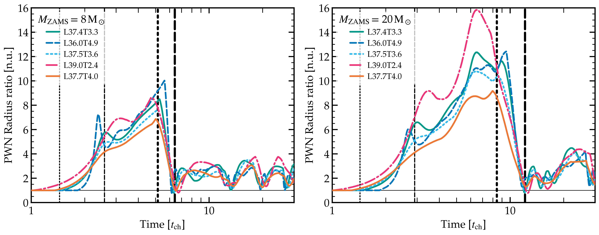<br />
图注：Evolution of the ratio of the PWN radius in the WBB case and in the ISM case, for a M8 progenitor (top panel) and a M20 progenitor (bottom panel). The ratio is shown for all pulsar models in Table \(\ref{tab:pulsar_parameters}.\) The dotted lines show the average start time of the compression by a reverse or reflected shock that happens when the PWN reaches its maximum extension. The dashed lines show the average end time of the initial compression and beginning of the reverberation. The thin and thick lines relate to the ISM and WBB cases, respectively.<br />
对应解读：对应“建议重点查看的图表”第3项，以及“关键图表逐图导读”中关于风吹泡相对均匀介质的脉冲星风云半径比、早期5到6倍和晚期2到4倍差异的解读。<br />
入选理由：这是最直接检验本文核心定量结论的图：纵轴就是WBB与ISM情形下PWN半径之比，并覆盖不同脉冲星模型和两个前身星质量。相比单独的半径时序图，它能一眼看出环境效应的放大倍数、压缩开始和reverberation阶段，因此最适合支撑日报中关于“大尺寸PWN来自风吹泡环境”的主结论。<br />
来源与置信度：\(arxiv_source\)；high；\(arxiv_source\) / aa61049-26.tex:figure[3]</p>
<p><strong>Fig02</strong><br />
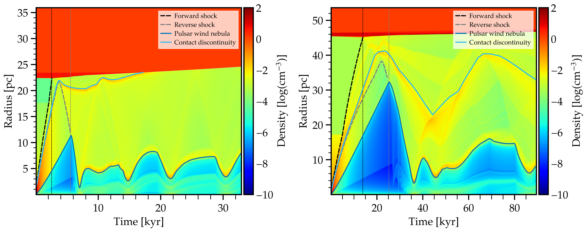<br />
图注：Density kymograph of a PWN+SNR system evolving in a stratified WBB, for the pulsar model L37.5T3.6, born from a M8 progenitor (top panel) or a M20 progenitor (bottom panel). The simulations were performed over the same duration in characteristic units, and hence the different time axes. The black and grey dotted lines are for the FS impact and start of the compression times, respectively.<br />
对应解读：对应“建议重点查看的图表”第2项和“关键图表逐图导读”图2、图3关于WBB情形下SNR/PWN演化、正向激波撞击泡壳、压缩开始时间和反射激波传播的说明。<br />
入选理由：该图是风吹泡环境中的密度时空图，明确标出正向激波撞壳时间和压缩开始时间，能展示低密度腔内快速膨胀、撞击外壳后的动力学突变，以及PWN随后被压缩的全过程。它比静态环境图更能支撑日报对撞壳、反射激波和reverberation机制的解释。<br />
来源与置信度：\(arxiv_source\)；high；\(arxiv_source\) / aa61049-26.tex:figure[2]</p>
<p><strong>Fig05</strong><br />
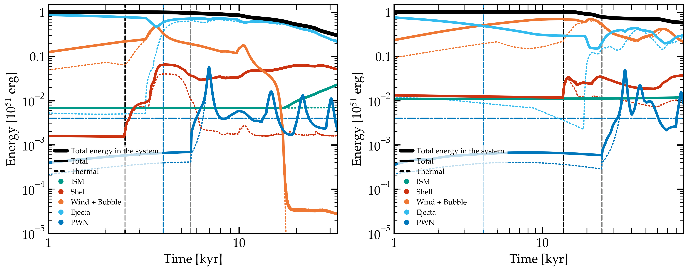<br />
图注：Time evolution of the energy in each medium, for the simulations involving pulsar model L37.5T3.6, a PWN+SNR system evolving in a stratified WBB, and a M8 or M20 progenitor (top and bottom panel, respectively). We highlight the total rotational energy and pulsar spin-down time as a blue horizontal dash-dotted line and a blue vertical dashed line, respectively. The black and grey dashed lines represent the FS impact and start of the compression times, respectively.<br />
对应解读：对应“建议重点查看的图表”第4项，以及“关键图表逐图导读”图4关于WBB情形中能量分量随时间变化、撞壳后能量回灌和PWN内部能维持高水平的讨论。<br />
入选理由：该图给出WBB环境中各介质能量的时间演化，并标出正向激波撞壳和压缩开始时刻，正好用于判断反射激波是否改变能量分配。它直接支撑日报中“PWN不仅更大，而且可含有更多能量”的关键物理解释。<br />
来源与置信度：\(arxiv_source\)；high；\(arxiv_source\) / aa61049-26.tex:figure[5]</p>
<p><strong>Fig06</strong><br />
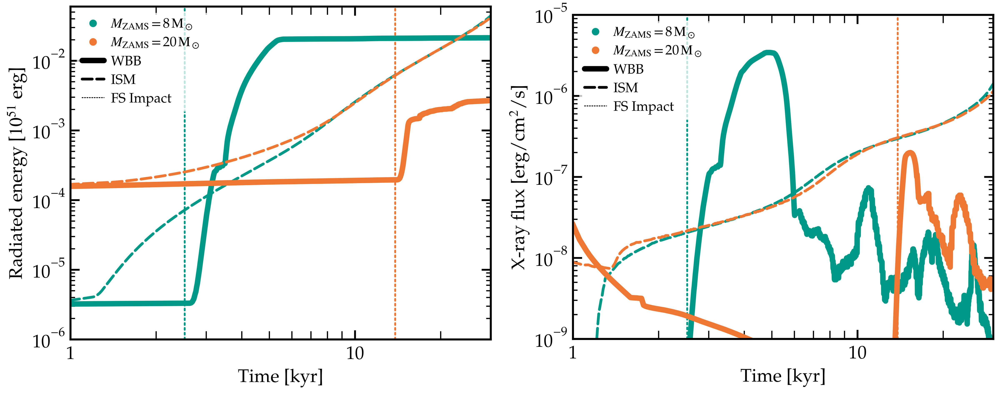<br />
图注：Cumulative energy and instantaneous flux (top and bottom panels, respectively) radiated in the $0.2-10.0~\mathrm{keV}$ band, as a function of progenitor mass and environment. We mark as vertical dotted lines the time at which the FS collides with the bubble shell in the WBB cases.<br />
对应解读：对应“建议重点查看的图表”第6项，以及“关键图表逐图导读”图5关于0.2–10 keV热X射线辐射、短暂峰值和泡壳透射激波的观测联系。<br />
入选理由：该图展示热X射线累计辐射能量和瞬时通量随时间、前身星质量与环境的变化，并标出WBB中正向激波撞壳时刻。它是候选图中唯一直接连接热X射线可探测性和短暂发射增强的图，对解释“母体SNR为何可能不易探测”非常重要。<br />
来源与置信度：\(arxiv_source\)；high；\(arxiv_source\) / aa61049-26.tex:figure[6]</p>
<p><strong>Fig01</strong><br />
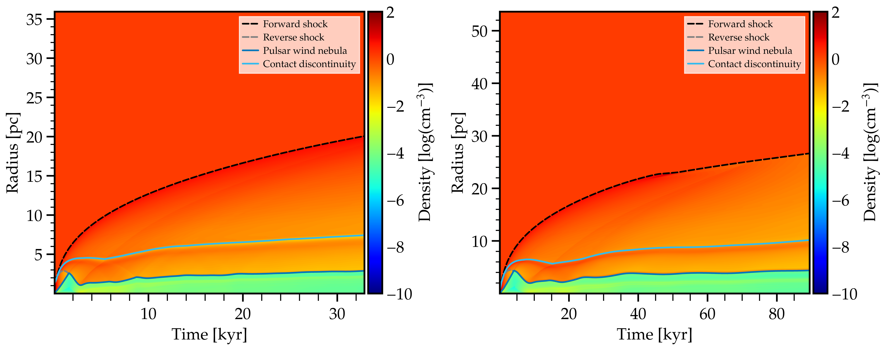<br />
图注：Density kymograph of a PWN+SNR system evolving in the uniform ISM, for the pulsar model L37.5T3.6, born from a M8 progenitor (top panel) or a M20 progenitor (bottom panel). The simulations were performed over the same duration in characteristic units, and hence the different time axes.<br />
对应解读：对应“建议重点查看的图表”第2项中均匀ISM基准，以及“关键图表逐图导读”图2要求区分ISM与WBB情形下SNR/PWN半径和压缩历史的对照。<br />
入选理由：该图提供均匀ISM环境下的密度时空演化基准，可与Fig02的WBB情形形成直接对照，帮助读者识别风吹泡导致的早期半径放大和撞壳后动力学差异。虽然它本身不展示WBB结构，但作为控制组具有较高解释价值。<br />
来源与置信度：\(arxiv_source\)；high；\(arxiv_source\) / aa61049-26.tex:figure[1]</p>
<p><strong>Fig04</strong><br />
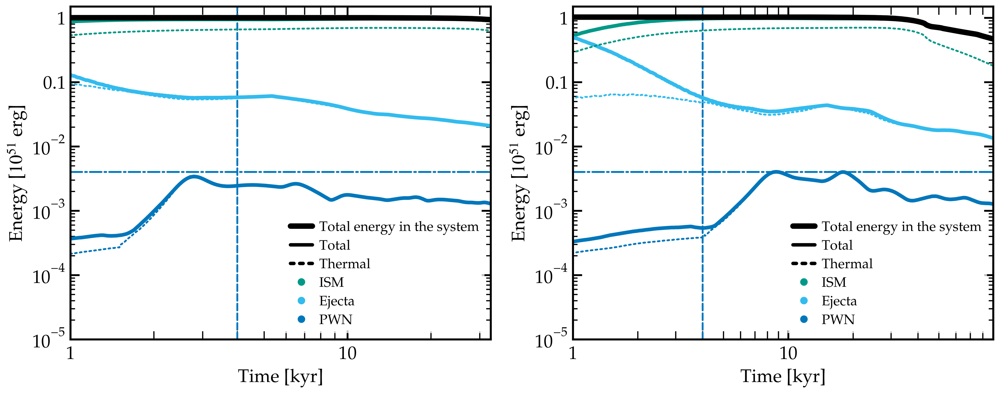<br />
图注：Time evolution of the energy in each medium, for the simulations involving pulsar model L37.5T3.6, a PWN+SNR system evolving in the uniform ISM, and a M8 or M20 progenitor (top and bottom panel, respectively). We highlight the total rotational energy and pulsar spin-down time as a blue horizontal dash-dotted line and a blue vertical dashed line, respectively.<br />
对应解读：对应“建议重点查看的图表”第4项中能量分量随时间图的均匀ISM对照，以及模型预测量中内部能量和能量分配的比较。<br />
入选理由：该图是Fig05的均匀介质基准，可用于区分脉冲星持续注入造成的能量增长与WBB撞壳反射激波造成的额外能量重分配。其科学价值主要来自与Fig05配套比较，单独嵌入的重要性略低。<br />
来源与置信度：\(arxiv_source\)；high；\(arxiv_source\) / aa61049-26.tex:figure[4]</p>
<h4 id="_89">强相关工作</h4>
<p>这篇工作与经典风吹泡理论、超新星遗迹自相似演化和脉冲星风云 reverberation 模型直接相连。风吹泡的基础可追溯到 Weaver 等人的恒星风泡解析模型；超新星遗迹阶段常引用 Sedov--Taylor 解和 Truelove--McKee 的抛射物—星际介质标度；脉冲星风云动力学则与 Chevalier、Reynolds、Blondin、Gelfand 等关于脉冲星风云被反向激波压缩和再膨胀的工作同属一条线。检索关键词可用“wind-blown bubble supernova remnant pulsar wind nebula reverberation”、“PWN SNR reverse shock circumstellar bubble”、“massive star wind bubble core-collapse supernova”。</p>
<p>与相似观测的关系主要体现在大尺度脉冲星风云和缺少明显壳层的复合型遗迹。许多银河 TeV 源、老年 X 射线脉冲星风云和所谓 TeV halo 都存在年龄—尺寸—能量退化；本文提供的解释是，若前身星风泡足够大，早期低密度膨胀和晚期反射激波能让脉冲星风云长期偏大。相反观点通常会把大尺度归因于高扩散系数、低磁场、强初始自转能或密度极低的均匀介质；本文提醒这些解释需要与星周环境模型竞争，而不是默认成立。</p>
<p><strong>同一事件 / 同类源线索</strong>：</p>
<ul>
<li><a href="https://arxiv.org/abs/2608.24170">https://arxiv.org/abs/2608.24170</a></li>
<li><a href="https://arxiv.org/pdf/2608.24170">https://arxiv.org/pdf/2608.24170</a></li>
</ul>
<p><strong>相似工作</strong>：</p>
<ul>
<li><a href="https://ui.adsabs.harvard.edu/abs/2001ApJ...563..806B/abstract">https://ui.adsabs.harvard.edu/abs/2001ApJ...563..806B/abstract</a></li>
<li><a href="https://ui.adsabs.harvard.edu/abs/2009ApJ...703.2051G/abstract">https://ui.adsabs.harvard.edu/abs/2009ApJ...703.2051G/abstract</a></li>
<li><a href="https://ui.adsabs.harvard.edu/abs/2018SSRv..214...38G/abstract">https://ui.adsabs.harvard.edu/abs/2018SSRv..214...38G/abstract</a></li>
</ul>
<p><strong>基础理论 / 方法工作</strong>：</p>
<ul>
<li><a href="https://ui.adsabs.harvard.edu/abs/1977ApJ...218..377W/abstract">https://ui.adsabs.harvard.edu/abs/1977ApJ...218..377W/abstract</a></li>
<li><a href="https://ui.adsabs.harvard.edu/abs/1999ApJS..120..299T/abstract">https://ui.adsabs.harvard.edu/abs/1999ApJS..120..299T/abstract</a></li>
<li><a href="https://ui.adsabs.harvard.edu/abs/1984ApJ...283..710K/abstract">https://ui.adsabs.harvard.edu/abs/1984ApJ...283..710K/abstract</a></li>
<li><a href="https://ui.adsabs.harvard.edu/abs/1984ApJ...283..694K/abstract">https://ui.adsabs.harvard.edu/abs/1984ApJ...283..694K/abstract</a></li>
</ul>
<p><strong>相反观点 / 张力线索</strong>：</p>
<ul>
<li><a href="https://ui.adsabs.harvard.edu/abs/1996ApJ...457..291A/abstract">https://ui.adsabs.harvard.edu/abs/1996ApJ...457..291A/abstract</a></li>
<li><a href="https://ui.adsabs.harvard.edu/abs/2017Sci...358..911A/abstract">https://ui.adsabs.harvard.edu/abs/2017Sci...358..911A/abstract</a></li>
</ul>
</details>
<h3 id="9-sub-millisecond-pulsars-missing-or-impossible">9. Sub-Millisecond Pulsars: Missing or Impossible?</h3>
<ul>
<li>来源：arXiv / astro-ph.HE</li>
<li>链接：https://arxiv.org/abs/2608.23704v1</li>
<li>作者：T. M. Tauris, V. Venkatraman Krishnan, R. Senzel, P. C. C. Freire, S. M. Ransom, A. Papitto, C. A. N. Biscio, N. Langer</li>
<li>评分：novelty 7/10，importance 8/10，relevance 8/10，final 8.70/10</li>
<li>推荐理由：系统评估亚毫秒脉冲星缺失的物理与选择效应，涉及NS EOS、吸积自旋上限和GW自旋下降，对致密星和高能脉冲星物理有较强相关性。</li>
</ul>
<p><strong>中文题目</strong>：亚毫秒脉冲星：没找到，还是根本造不出来？</p>
<p><strong>做了什么</strong>：这篇综述围绕一个老问题重算账：为什么已经发现了数百颗自转周期在毫秒量级的中子星，却从未确认过周期短于 \(1\,\mathrm{ms}\) 的射电脉冲星？作者逐项检查了致密物态方程、吸积自旋加速、磁层平衡、自转驱动的引力波损失、射电搜索选择效应和双星演化通道。核心结论不是“亚毫秒中子星被物态方程禁止”，也不是“望远镜完全看不见”，而是最有利的回收通道效率低、可持续传质时间短，形成后又会因磁偶极辐射和可能的引力波损失迅速离开亚毫秒区间。因此亚毫秒脉冲星若存在，应更可能在吸积瞬变阶段被看到，而不是作为长期稳定的射电脉冲星存在。</p>
<p><strong>为什么重要</strong>：亚毫秒脉冲星是检验中子星极限结构的直接实验：若发现 \(P<1\,\mathrm{ms}\) 的中子星，将强烈约束最大质量、半径、开普勒破裂频率和高密度物态方程；若长期缺失，则需要解释这个缺口到底来自天体物理形成率、观测偏差还是真正的物理上限。本文的重要性在于把这些解释放在同一张物理账本上，而不是只从搜索灵敏度或某一个自旋极限出发。</p>
<p><strong>理论 / 观测 / 仪器方法价值</strong>：对理论而言，本文强调亚毫秒缺失主要是双星演化和自旋演化问题，而非单纯的静态中子星结构问题。对观测而言，它给出了搜索策略上的提示：与其只在长期射电脉冲星样本中寻找，不如关注低磁场、强吸积、短暂爆发或过渡毫秒脉冲星阶段。对方法而言，文章把破裂极限、磁层平衡、吸积扭矩、磁偶极制动、引力波制动和选择效应整合成可比较的限制链条。</p>
<p><strong>为什么应该关注</strong>：如果你关心中子星物态方程、低质量 \(X\) 射线双星、毫秒脉冲星形成、连续引力波源或快速时域搜索，这篇文章都值得读。它提醒我们：未探测到亚毫秒脉冲星本身已经是一个约束，但这个约束不能简单翻译成“硬物态方程被排除”或“软物态方程胜出”；真正关键的是中子星能否被有效加速到 \(\nu>1\,\mathrm{kHz}\)，以及能在那里停留多久。</p>
<details class="paper-detail">
<summary>展开详细解读：文章讲解、背景、理论、重点章节、图表与相关工作</summary>
<h4 id="_90">文章详细讲解</h4>
<p>科学问题：自 \(1982\) 年第一颗毫秒脉冲星发现以来，最短已知自转周期长期停在 \(1.4\,\mathrm{ms}\) 左右，典型代表是 \(716\,\mathrm{Hz}\) 的 \(\mathrm{PSR\ J1748-2446ad}\)。从简单的开普勒破裂频率看，很多中子星物态方程允许 \(P<1\,\mathrm{ms}\)；从低质量 \(X\) 射线双星的吸积自旋加速看，长期吸积也似乎可以把中子星推到千赫兹。因此问题不是单纯“能不能转这么快”，而是“自然界能否高效制造、长期保存并让我们看见这样的中子星”。</p>
<p>作者怎么做：这篇文章是综述和综合论证，而不是单一新观测发现。作者把亚毫秒脉冲星问题拆成几层限制：第一是中子星结构的质量脱落极限，即给定质量、半径和物态方程时的最小周期；第二是吸积阶段的自旋上限，包括磁层半径、共转半径、爱丁顿附近传质率和吸积扭矩；第三是形成后的制动，包括磁偶极辐射、可能的椭率引力波辐射和 \(r\) 模不稳定；第四是实际搜索中的色散展宽、轨道加速度、采样时间和散射等选择效应。文章的关键是比较这些效应的量级和时间尺度，而不是只给出某一个极限公式。</p>
<p>关键结果：作者认为，亚毫秒自转并不主要被平衡自旋、磁层物理或射电选择效应排除。换言之，若有足够长的吸积时间、足够低的磁场、合适的质量增长和较弱的角动量损失，\(P<1\,\mathrm{ms}\) 并非明显不可能。真正的问题是这些条件很难同时满足：最有希望产生极快自转的双星通道往往传质寿命短，回收过程不够有效；一旦吸积停止，即使磁场只有 \(10^7\) 到 \(10^8\,\mathrm{G}\) 的量级，亚毫秒对象也会在相对短的天体物理时间内被磁偶极辐射推回毫秒以上。如果还存在可观的非轴对称形变或振荡模式，引力波损失会进一步缩短停留时间。</p>
<p>局限和下一步：由于本文是综述性论证，许多结论依赖双星演化模型、磁场衰减历史、吸积扭矩处方、物态方程允许的半径范围，以及引力波制动是否真的达到相关强度。下一步最有价值的是三类工作：一是对低质量 \(X\) 射线双星和过渡毫秒脉冲星进行更高时间分辨率的爆发期搜索；二是用双星群体合成量化亚毫秒阶段的占空比；三是把连续引力波上限与快速自旋中子星的椭率、内部磁场和 \(r\) 模饱和幅度联系起来。本文给出的结论应理解为“亚毫秒脉冲星天生稀有且寿命短”，而不是“物理定律绝对禁止”。</p>
<h4 id="_91">关键结果是怎么做出来的</h4>
<p>本文最重要的证据链从观测事实开始：已知毫秒脉冲星样本已经超过数百颗，周期集中在 \(1.4\) 到 \(10\,\mathrm{ms}\) 区间，但没有可靠的 \(P<1\,\mathrm{ms}\) 射电脉冲星。作者没有把这个零探测直接解释为观测偏差，而是先问：在现有射电脉冲星巡天、球状星团搜索、低质量 \(X\) 射线双星时变搜索中，亚毫秒周期是否会被系统性抹掉？答案是偏差确实存在，尤其是强色散、星际散射、双星轨道加速度和有限采样会降低探测效率，但这些效应不足以完全消除所有近邻、低色散或有利轨道相位的亚毫秒源。</p>
<p>第二步是物理上限的比较。中子星质量脱落极限通常给出 \(P_{\rm K}\sim0.5\) 到 \(1\,\mathrm{ms}\) 的尺度，取决于质量、半径和物态方程。作者的论点是：既然许多现代物态方程仍允许至少部分质量范围达到 \(P<1\,\mathrm{ms}\)，那么“没有亚毫秒脉冲星”不能简单反推出所有中子星都被静态结构极限挡住。相反，已知最快脉冲星离多数模型的极限仍有间距，这暗示形成和演化更关键。</p>
<p>第三步是吸积阶段的扭矩和时间尺度。要把中子星从几毫秒推到 \(<1\,\mathrm{ms}\)，需要积累相当多的角动量，通常要求低磁场、高传质率以及持续足够久的 Roche-lobe 溢流。文章强调，最有利于高自旋的紧致双星未必能长时间保持这种传质状态；传质可能被热时标、核时标或轨道演化限制，中子星还可能进入推进器阶段或受磁层调制。因此即使瞬时平衡周期允许亚毫秒，实际系统也可能在到达之前耗尽可用传质时间。</p>
<p>第四步是形成后的生存问题。假如一颗中子星确实被加速到 \(\nu>1\,\mathrm{kHz}\)，射电打开后它会面临强烈的自旋能损失，因为磁偶极制动随角速度近似按 \(\Omega^3\) 增强，而转动能损失按更高幂次增长；若存在椭率 \(\epsilon\) 造成的连续引力波辐射，损失对 \(\Omega\) 的依赖更陡。作者据此得出关键判断：亚毫秒射电脉冲星的可见寿命可能很短，零探测更自然地反映了低形成率乘以短寿命，而非纯粹搜索失败。</p>
<p>稳健性方面，文章逐项讨论了可能反驳该结论的因素：更低磁场是否能让对象长期停留在亚毫秒区间，极硬物态方程是否提高破裂频率，选择效应是否足以隐藏全部对象，以及引力波扭矩是否被高估。其总体判断是，只有在磁场异常弱、质量转移异常高效、引力波损失很小且系统恰好处在可探测阶段时，长期射电亚毫秒脉冲星才可能出现。这也解释了为什么作者建议把搜索重点放在吸积瞬变和过渡态，而非只扩大常规射电脉冲星样本。</p>
<details class="paper-subdetail">
<summary>展开背景、理论、公式、模型、章节和图表导读</summary>
<h4 id="_92">背景知识</h4>
<p>研究对象是毫秒脉冲星，即经过双星吸积“回收”后被加速到高速自转的中子星。普通年轻脉冲星的周期多在几十毫秒到数秒，而毫秒脉冲星具有较弱表面磁场、较老年龄和常见双星伴星。标准图像认为，低质量 \(X\) 射线双星中的中子星通过吸积盘获得角动量，吸积结束后成为射电毫秒脉冲星。</p>
<p>历史问题在于，理论上中子星的最小周期接近致密物质的破裂极限；这个极限与物态方程、质量和半径紧密相关。早期发现毫秒脉冲星后，人们自然期待更快对象会陆续出现。可是几十年来，最快确认自转频率仍是 \(716\,\mathrm{Hz}\)，低质量 \(X\) 射线双星中 burst oscillation 或 accretion-powered pulsation 的最高频率也没有稳定突破 \(1\,\mathrm{kHz}\)。这形成了一个长期的“自旋上限”问题。</p>
<p>观测背景也复杂。射电脉冲星搜索不是对所有周期等效率：短周期信号更容易被有限采样、色散展宽、星际散射和双星轨道加速度削弱；球状星团又有强加速度场和高背景；吸积源中的相干脉动还会被轨道调制、吸积噪声和低脉冲分数掩盖。因此“没有发现”不能直接等同于“没有存在”。本文的贡献是把这些偏差与物理形成率放到一起评估。</p>
<p>现在值得重新看，是因为三方面条件都变了。第一，脉冲星样本已经很大，零探测的统计意义更强；第二，中子星半径、最大质量和潮汐形变约束来自 \(X\) 射线、射电脉冲星计时和引力波事件，物态方程空间比过去收窄；第三，FAST、MeerKAT、CHIME、SKA 先导项目以及 \(X\) 射线时域任务正在提高快速周期搜索能力。亚毫秒缺失已经从一个“可能还没找到”的问题，变成一个能反推双星演化效率的问题。</p>
<p>该领域常见误区包括：把开普勒破裂周期当成实际形成周期；把吸积平衡周期当成必然终点；把射电巡天选择效应当成唯一原因；或者反过来，用零探测过度约束高密度物态方程。实际上，亚毫秒问题是多因素乘积：形成概率、吸积持续时间、磁场演化、角动量损失、射电打开条件、观测窗口和搜索算法共同决定最终样本。</p>
<h4 id="_93">基础理论 / 方法脉络</h4>
<p>最基本的物理图像是角动量收支。中子星的角动量为 \(J=I\Omega\)，其中 \(I\) 是转动惯量，\(\Omega=2\pi/P\) 是角速度。吸积盘物质在内盘边缘携带比角动量，被中子星吞并后增加 \(J\)，从而减小自转周期 \(P\)。如果没有任何损失，只要吸积足够多质量，中子星就能持续加速；但真实系统中磁层、辐射压力、盘-星耦合和引力波都会引入反向扭矩。</p>
<p>破裂极限来自离心力与引力的竞争。当赤道处物质的轨道频率接近星体自转频率时，进一步加速会导致质量脱落。牛顿近似下 \(\Omega_{\rm K}\sim(GM/R^3)^{1/2}\)，但真实中子星需要广义相对论、自转形变和物态方程修正。这个极限告诉我们“结构上允许多快”，却不告诉我们“天体演化能否到达”。</p>
<p>吸积平衡自旋来自磁层半径 \(r_{\rm m}\) 与共转半径 \(r_{\rm co}\) 的比较。若 \(r_{\rm m}<r_{\rm co}\)，内盘物质可以把角动量带到星体上；若 \(r_{\rm m}>r_{\rm co}\)，磁场线转得比局部开普勒盘快，系统可能进入推进器状态，反而抛出物质并制动。平衡周期大致由 \(r_{\rm m}\approx r_{\rm co}\) 决定，因此依赖磁场 \(B\)、传质率 \(\dot M\)、质量 \(M\) 和半径 \(R\)。</p>
<p>形成后的射电脉冲星阶段由损失项控制。磁偶极辐射的转矩随 \(\Omega\) 快速增加，周期越短，制动越强。若中子星存在静态椭率 \(\epsilon\) 或不稳定振荡模式，还会发出连续引力波，其能量损失对 \(\Omega\) 的幂次更陡。因此亚毫秒区间不是一个容易长期停留的“平台”，而更像高速下坡的一小段。</p>
<p>观测方法上，射电搜索通常在时间序列中做去色散、傅里叶变换、谐波叠加和加速度搜索。对 \(P<1\,\mathrm{ms}\) 的对象，脉冲宽度、采样间隔、色散步长和散射尾都会吃掉信噪比；在紧双星中，轨道加速度会把功率从单一傅里叶频率扩散到多个频率 bin。本文强调这些选择效应重要，但若源足够近、色散低、轨道校正充分，它们不应构成绝对屏障。</p>
<h4 id="_94">公式与推导</h4>
<p>第一步是把周期问题写成角速度问题。中子星自转角速度和周期满足</p>
<div class="math-display">\[\Omega=\frac{2\pi}{P},\qquad \nu=\frac{1}{P}=\frac{\Omega}{2\pi} .\]</div>
<p>这里 \(P\) 是自转周期，\(\nu\) 是自转频率。所谓亚毫秒脉冲星就是 \(P<10^{-3}\,\mathrm{s}\)，等价于 \(\nu>10^3\,\mathrm{Hz}\)。这个简单换算很重要，因为扭矩和辐射损失通常写成 \(\Omega\) 的幂律。</p>
<p>第二步是结构破裂极限。用赤道处开普勒频率作量级估计，</p>
<div class="math-display">\[\Omega_{\rm K}\simeq \left(\frac{GM}{R^3}\right)^{1/2},\qquad P_{\rm K}\simeq 2\pi\left(\frac{R^3}{GM}\right)^{1/2} .\]</div>
<p>其中 \(M\) 和 \(R\) 是中子星质量和半径，\(G\) 是引力常数。广义相对论和物态方程会改变系数，但尺度关系清楚表明：更小的 \(R\) 和更大的 \(M\) 倾向于允许更短的 \(P_{\rm K}\)。本文用这一类约束说明亚毫秒自转不一定被结构极限禁止。</p>
<p>第三步是吸积带来的角动量增益。若内盘半径为 \(r_{\rm in}\)，吸积率为 \(\dot M\)，吸积扭矩可近似写为</p>
<div class="math-display">\[N_{\rm acc}\simeq \dot M\sqrt{GMr_{\rm in}},\qquad I\dot\Omega=N_{\rm acc}+N_{\rm loss} .\]</div>
<p>这里 \(I\) 是转动惯量，\(N_{\rm loss}\) 包括磁偶极、盘-磁层和引力波等损失扭矩。若 \(N_{\rm loss}\) 很小，自旋加速时间约为</p>
<div class="math-display">\[t_{\rm su}\simeq \frac{I\Omega}{\dot M\sqrt{GMr_{\rm in}}} .\]</div>
<p>这个时间尺度是本文论证的核心之一：即使最终平衡周期很短，双星也必须有足够长的传质寿命才能到达。</p>
<p>第四步是磁层与共转半径。磁偶极矩 \(\mu\simeq BR^3\)，磁层半径的常用量级为</p>
<div class="math-display">\[r_{\rm m}\simeq \xi\left(\frac{\mu^4}{2GM\dot M^2}\right)^{1/7},\]</div>
<p>其中 \(B\) 是表面磁场，\(\xi\) 是盘-磁层耦合的阶数因子。共转半径满足局部开普勒角速度等于星体角速度：</p>
<div class="math-display">\[r_{\rm co}=\left(\frac{GM}{\Omega^2}\right)^{1/3} .\]</div>
<p>当 \(r_{\rm m}\approx r_{\rm co}\) 时得到吸积平衡自旋；当 \(r_{\rm m}>r_{\rm co}\) 时可能进入推进器区间。</p>
<p>第五步是平衡周期的标度。把 \(r_{\rm m}=r_{\rm co}\) 代入，可得近似标度</p>
<div class="math-display">\[P_{\rm eq}\propto B^{6/7}R^{18/7}\dot M^{-3/7}M^{-5/7} .\]</div>
<p>该式省略了 \(\xi\) 和数值系数，但足以看出：低 \(B\)、高 \(\dot M\)、小 \(R\) 和大 \(M\) 有利于产生短周期。本文的重要判断是，即使这个标度允许 \(P_{\rm eq}<1\,\mathrm{ms}\)，实际系统仍可能因为传质时间不足而达不到。</p>
<p>第六步是射电阶段的磁偶极制动。真空偶极近似给出</p>
<div class="math-display">\[\dot E_{\rm md}\simeq -\frac{2\mu^2\Omega^4\sin^2\alpha}{3c^3},\qquad E_{\rm rot}=\frac{1}{2}I\Omega^2 .\]</div>
<p>其中 \(\alpha\) 是磁轴与自转轴夹角，\(c\) 是光速。由 \(\dot E=I\Omega\dot\Omega\) 可见 \(\dot\Omega\propto-\Omega^3\)，所以越接近亚毫秒，制动越快。这是为什么形成后的亚毫秒射电脉冲星寿命可能很短。</p>
<p>第七步是非轴对称形变的引力波损失。若中子星有椭率 \(\epsilon\)，连续引力波能量损失可写为</p>
<div class="math-display">\[\dot E_{\rm gw}= -\frac{32G}{5c^5}I^2\epsilon^2\Omega^6 .\]</div>
<p>对应的特征制动时间为</p>
<div class="math-display">\[t_{\rm gw}\simeq \frac{E_{\rm rot}}{|\dot E_{\rm gw}|}=\frac{5c^5}{64GI\epsilon^2\Omega^4} .\]</div>
<p>这里最关键的是 \(t_{\rm gw}\propto\Omega^{-4}\)：在 \(\nu>1\,\mathrm{kHz}\) 时，即使很小的 \(\epsilon\) 也可能对寿命产生显著影响。</p>
<p>第八步是射电搜索的信噪比损失。周期搜索中有效脉冲宽度可近似合成为</p>
<div class="math-display">\[W_{\rm eff}^2\simeq W_{\rm int}^2+t_{\rm samp}^2+t_{\rm DM}^2+t_{\rm scatt}^2+t_{\rm orb}^2 .\]</div>
<p>其中 \(W_{\rm int}\) 是本征脉宽，\(t_{\rm samp}\) 是采样时间，\(t_{\rm DM}\) 是色散展宽，\(t_{\rm scatt}\) 是散射展宽，\(t_{\rm orb}\) 是未校正轨道运动造成的展宽。辐射计方程给出探测信噪比标度</p>
<div class="math-display">\[{\rm S/N}\propto \frac{S\sqrt{n_{\rm pol}\Delta\nu t_{\rm int}}}{T_{\rm sys}}\left(\frac{P-W_{\rm eff}}{W_{\rm eff}}
\right)^{1/2} .\]</div>
<p>这里 \(S\) 是源流量密度，\(n_{\rm pol}\) 是偏振数，\(\Delta\nu\) 是带宽，\(t_{\rm int}\) 是积分时间，\(T_{\rm sys}\) 是系统温度。该式说明亚毫秒搜索确实更难，但只要 \(W_{\rm eff}\ll P\)，并非不可探测。</p>
<h4 id="_95">模型拟合 / 应用方法</h4>
<p>本文不是以一个新数据集做参数拟合为主，而是综合已有样本和理论标度来比较不同限制的强弱。对这类问题，常见拟合对象包括脉冲星周期分布 \(p(P)\)、磁场分布 \(p(B)\)、低质量 \(X\) 射线双星自旋频率分布、双星传质寿命分布，以及巡天选择函数 \(S(P,{\rm DM},a_{\rm orb})\)。如果要把本文论证量化，最自然的方法是贝叶斯群体模型：给定形成率、回收效率和制动模型，预测可观测周期分布，再与实际零探测比较。</p>
<p>似然上，亚毫秒区间的零计数可以用泊松项表达。若模型预测可探测亚毫秒源数为 \(\lambda_{<1\rm ms}\)，观测到 \(k=0\) 的概率是 \(\exp(-\lambda_{<1\rm ms})\)。但 \(\lambda_{<1\rm ms}\) 本身不是简单形成率，而是形成率、亚毫秒停留时间、射电束向、巡天覆盖、灵敏度和双星加速度搜索效率的乘积。因此零探测对任何单一物理量的约束都高度依赖先验。</p>
<p>参数退化是本问题的核心。较低的磁场 \(B\) 可以同时降低平衡周期和延长磁偶极制动时间，但低 \(B\) 也可能影响射电脉冲机制和可见性；较高的传质率 \(\dot M\) 有利于自旋加速，但若传质阶段短，累计角动量仍不足；较大的中子星质量 \(M\) 和较小半径 \(R\) 有利于提高破裂频率，但质量增长又受最大质量和坍缩风险限制。引力波椭率 \(\epsilon\) 与内部磁场、地壳强度、超流和超导状态有关，几乎不可能仅从电磁数据唯一确定。</p>
<p>残差诊断上，应关注模型是否只拟合了最快端，还是也能解释整个毫秒脉冲星周期分布。一个只靠强选择效应解释 \(P<1\,\mathrm{ms}\) 缺失的模型，必须同时不破坏 \(1.4\) 到 \(3\,\mathrm{ms}\) 区间的探测数；一个只靠强引力波制动的模型，也要不与连续引力波上限、低质量 \(X\) 射线双星热状态和已知自旋分布冲突。本文的价值正是在这些相互制约之间给出定性但物理一致的判断。</p>
<p>模型可能失败的地方也很明确。如果未来发现一批稳定射电亚毫秒脉冲星，说明本文强调的短寿命和低形成率被高估，或者存在极低磁场、高效率回收的通道。若只在吸积瞬变中发现亚毫秒相干脉动，则会支持本文“瞬态可见、长期射电罕见”的判断。若未来更深巡天仍无发现，并且选择函数已充分校正，则亚毫秒缺失会进一步转化为对双星传质历史、磁场底值和引力波制动的定量约束。</p>
<h4 id="_96">重点章节 / 结果段落怎么读</h4>
<p>第一部分建议从问题陈述和观测现状读起：重点看作者如何定义亚毫秒脉冲星、已知最快射电脉冲星和吸积中子星的频率边界，以及为什么 \(1\,\mathrm{ms}\) 是有物理意义而非任意选择的分界。这里要特别注意作者是否区分了射电脉冲星、吸积供能毫秒 \(X\) 射线脉冲星和 burst oscillation 频率。</p>
<p>第二部分是中子星结构和物态方程限制。读者应关注不同质量和半径下的质量脱落周期范围，以及作者如何避免把开普勒极限等同于实际可达周期。若论文给出物态方程相关图或表，要看最快已知脉冲星距离各模型极限还有多大余量。</p>
<p>第三部分是吸积自旋加速和双星演化。这是本文最关键的物理段落。应重点读传质时间、累计吸积质量、磁场衰减、磁层半径、共转半径和推进器阶段如何共同影响最终周期。作者的中心论证是：平衡周期允许并不意味着演化路径能实际抵达。</p>
<p>第四部分是自旋制动机制，包括磁偶极辐射、引力波辐射和可能的 \(r\) 模不稳定。这里应关注不同损失机制的角速度幂律，以及它们如何缩短亚毫秒阶段寿命。读者可把这些段落与连续引力波搜索上限联系起来看。</p>
<p>第五部分是可探测性和搜索策略。读者应看作者如何评估色散、散射、采样、双星加速度和巡天选择函数，并注意结论并不是“选择效应无关”，而是“选择效应不足以单独解释全部缺失”。最后关于恒星质量黑洞可达到亚毫秒视界自转周期的比较段落，则用于突出中子星受到物质表面、物态方程和质量脱落约束，而黑洞自旋限制本质不同。</p>
<h4 id="_97">建议重点查看的图表</h4>
<ol>
<li>
<p>已知毫秒脉冲星周期或频率分布图：重点看 \(P\approx1.4\,\mathrm{ms}\) 附近是否存在真实截断，还是样本逐渐下降；还要看射电脉冲星与吸积源是否分开标注。</p>
</li>
<li>
<p>中子星最小周期与质量、半径或物态方程的关系图：重点看 \(P=1\,\mathrm{ms}\) 线相对不同模型的位置，判断亚毫秒是否被普遍禁止。</p>
</li>
<li>
<p>吸积平衡周期随磁场 \(B\) 和传质率 \(\dot M\) 的参数空间图：重点看哪些区域允许 \(P_{\rm eq}<1\,\mathrm{ms}\)，以及这些区域是否需要极端低磁场或接近爱丁顿传质。</p>
</li>
<li>
<p>自旋加速时间与传质寿命比较图：这是验证本文主张的关键诊断，应看达到 \(P<1\,\mathrm{ms}\) 所需时间是否超过典型双星通道的可用时间。</p>
</li>
<li>
<p>磁偶极或引力波制动时间尺度图：重点看亚毫秒阶段的停留时间是否显著短于普通毫秒阶段，以及结果对 \(B\) 或椭率 \(\epsilon\) 的敏感性。</p>
</li>
<li>
<p>搜索选择效应或探测效率图：应检查信噪比随周期、色散量、散射时间和轨道加速度的下降幅度，判断零探测是否可能完全由观测偏差造成。</p>
</li>
<li>
<p>若有黑洞与中子星最短周期比较图：重点看作者如何定义黑洞“视界周期”，以及该比较是否只是尺度说明而非把黑洞当成脉冲星类比。</p>
</li>
</ol>
<h4 id="_98">关键图表逐图导读</h4>
<p>图 1：如果论文给出已知快速中子星的周期分布，横轴通常是自转周期 \(P\) 或频率 \(\nu\)，纵轴是源数或累计源数。数据点可能区分射电脉冲星、吸积毫秒 \(X\) 射线脉冲星和 burst oscillation 源。读图关键是看 \(1\,\mathrm{ms}\) 左侧是否完全为空，以及 \(1.4\,\mathrm{ms}\) 到 \(2\,\mathrm{ms}\) 区间的下降是否平滑。陷阱是不要把样本直方图的下降直接当成物理截断，因为探测效率也随 \(P\) 改变。</p>
<p>图 2：物态方程或质量脱落极限图通常以质量 \(M\) 为横轴、最小周期 \(P_{\rm K}\) 或最大频率 \(\nu_{\rm K}\) 为纵轴，不同曲线代表不同物态方程。应重点比较 \(P=1\,\mathrm{ms}\) 参考线与各模型曲线的位置。如果许多曲线允许 \(P<1\,\mathrm{ms}\)，就支持作者的判断：亚毫秒缺失不能单靠结构极限解释。陷阱是忽略稳定质量范围和最大质量约束。</p>
<p>图 3：吸积平衡图可能以磁场 \(B\) 和传质率 \(\dot M\) 为坐标，等值线给出 \(P_{\rm eq}\)。读者应看 \(P_{\rm eq}=1\,\mathrm{ms}\) 的等值线是否落在常见低质量 \(X\) 射线双星参数范围内。若亚毫秒区只出现在极低 \(B\) 和高 \(\dot M\) 的角落，那么形成率自然很低。陷阱是把瞬时 \(\dot M\) 当成长期平均 \(\dot M\)。</p>
<p>图 4：自旋演化轨迹图可能展示 \(P\) 随时间、累计吸积质量或双星演化阶段的变化。数据或模型线如果在传质结束前尚未越过 \(1\,\mathrm{ms}\)，就直接支撑“回收不充分”的结论。应关注不同初始磁场、伴星质量和轨道周期的轨迹分叉。陷阱是只看最终周期而忽略亚毫秒停留时间。</p>
<p>图 5：制动时间尺度图通常横轴是自转频率 (<br />
\(\nu\)) 或周期 \(P\)，纵轴是 \(t_{\rm sd}\)、\(t_{\rm gw}\) 或 \(\dot P\)。模型线代表不同磁场 \(B\) 或椭率 \(\epsilon\)。读图重点是亚毫秒区间曲线是否急剧下降；这说明即使形成，射电可见窗口也短。陷阱是把某个假设 \(\epsilon\) 当成已测量量。</p>
<p>图 6：选择效应图可能给出探测信噪比或最小可探测流量密度随 \(P\)、色散量 \({\rm DM}\)、散射时间或轨道加速度的变化。应看在低 \({\rm DM}\)、短采样、高频观测和加速度搜索条件下，\(P<1\,\mathrm{ms}\) 是否仍可探测。若仍可探测，就说明零探测需要物理稀有性参与解释。陷阱是把某个巡天的低效率推广到所有巡天。</p>
</details>
<h4 id="_99">论文原图 / 可嵌入图片</h4>
<p><strong>Fig01</strong><br />
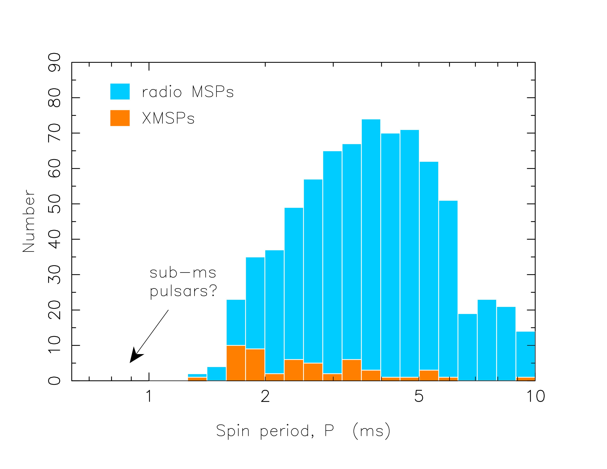<br />
图注：Distribution of measured spin periods of 694 radio MSPs (blue) and 51 XMSPs (orange). Here, XMSPs refers to both accretion-powered X-ray millisecond pulsars that show coherent pulsations during outbursts and nuclear-powered burst-oscillation sources. The X-ray data are taken from Table~7.5 in \(\cite{tv23},\) \(\cite{fkg+24},\) and from \(\cite{jbb+24}\) for 4U~1820$-$30 ($P=1.40\;{\rm ms}$, the fastest-spinning XMSP {\(\em\) candidate} to date; still to be confirmed). The radio data are from the \(\textit{ATNF Pulsar Catalogue},\) version~2.7.0 (January~2026; \(\cite{mhth05},\) \url{https://www.atnf.csiro.au/research/pulsar/psrcat}).<br />
对应解读：“建议重点查看的图表”第1项与“关键图表逐图导读”图1：已知毫秒脉冲星周期/频率分布，区分射电脉冲星与吸积/爆发振荡源。<br />
入选理由：该图直接展示694个射电MSP与51个XMSP的自转周期分布，是判断1 ms左侧是否为空、1.4–2 ms区间是否平滑下降以及射电源和吸积源是否分开标注的核心证据，最能支撑文章关于“亚毫秒缺失不是单一观测样本偶然”的开场论证。<br />
来源与置信度：\(arxiv_source\)；high；\(arxiv_source\) / sn-article.tex:figure[1]</p>
<p><strong>Fig03</strong><br />
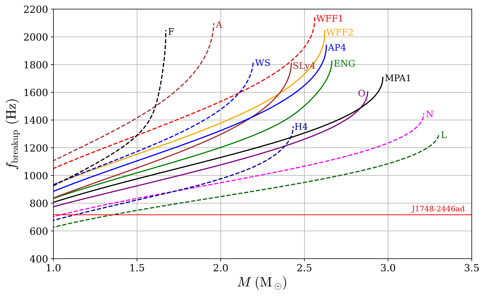<br />
图注：Maximum possible NS spin frequencies as a function of NS mass for a selected set of EoSs (coloured dashed and continuum lines), which does not include strong phase transitions, calculated using the \(\emph{RNS code}\) (\url{https://github.com/cgca/rns}), see \(\cite{sf95}\) for a detailed explanation. The solid lines represent EoSs that are still consistent with all multi-messenger constraints \(\citep\)[radio pulsar mass measurements, X-ray measurements, LVK constraints from NS+NS mergers, see][]{Koehn2025}; the dashed lines represent other more extreme EoSs that were considered to be realistic until recently. The spin frequency of PSR~J1748$-$2446ad (the fastest rotating of all known pulsars) is indicated by the horizontal red line ($\nu = 716\;{\rm Hz}$). For some of the stiffer EoSs, which predict matter to be highly incompressible, this spin frequency already introduces interesting mass constraints. Figure and calculations by Norbert Wex.<br />
对应解读：“建议重点查看的图表”第2项与“关键图表逐图导读”图2：中子星物态方程、质量与最大自转频率/最小周期限制。<br />
入选理由：该图给出不同EoS下最大可能自转频率随中子星质量的变化，并标出最快已知脉冲星716 Hz参考线，可用于判断结构性质量脱落极限是否普遍禁止P&lt;1 ms；它直接对应日报中关于“亚毫秒并非被物态方程普遍排除”的关键判断。<br />
来源与置信度：\(arxiv_source\)；high；\(arxiv_source\) / sn-article.tex:figure[3]</p>
<p><strong>Fig11</strong><br />
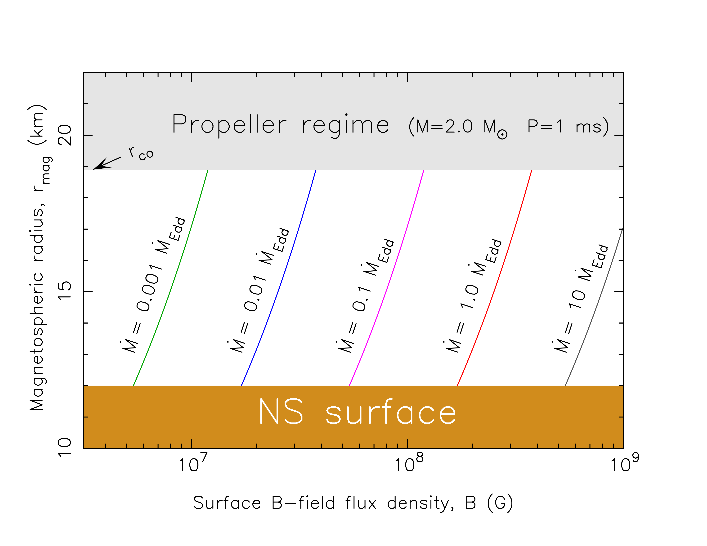<br />
图注：Accretion window for further spinning up a $2.0\;M_\odot$ NS rotating with $P = 1.0\;{\rm ms}$. The magnetospheric radius is shown as a function of surface B-field for accretion rates ranging from $10^{-3}$ to $10\;\dot{M}_{\rm Edd}$. Spin-up requires $r_{\rm mag} \lesssim r_{\rm co}$. When $r_{\rm mag} > r_{\rm co}$ (grey region), the NS enters the propeller regime and experiences a braking torque. The plotted accretion rates are illustrative and do not represent specific observed source classes. The formation of a sub-MSP is challenging: beyond the allowed pairs of ($B$,\,$\dot{M}$), it requires both a sufficiently massive donor to provide the necessary accreted mass and a long evolutionary timescale --- two conditions that are mutually contradictory (see text).<br />
对应解读：“建议重点查看的图表”第3项：吸积平衡/磁层条件随磁场B和传质率dotM的参数空间；也关联详细解读中磁层半径、共转半径和propeller限制。<br />
入选理由：该图以表面磁场和不同吸积率展示P=1 ms中子星继续自旋加速的允许窗口，明确标出r_mag与r_co关系及propeller区域，最直接说明亚毫秒形成需要低B、高dotM以及足够质量和时间这些难以同时满足的条件。<br />
来源与置信度：\(arxiv_source\)；high；\(arxiv_source\) / sn-article.tex:figure[11]</p>
<p><strong>Fig12</strong><br />
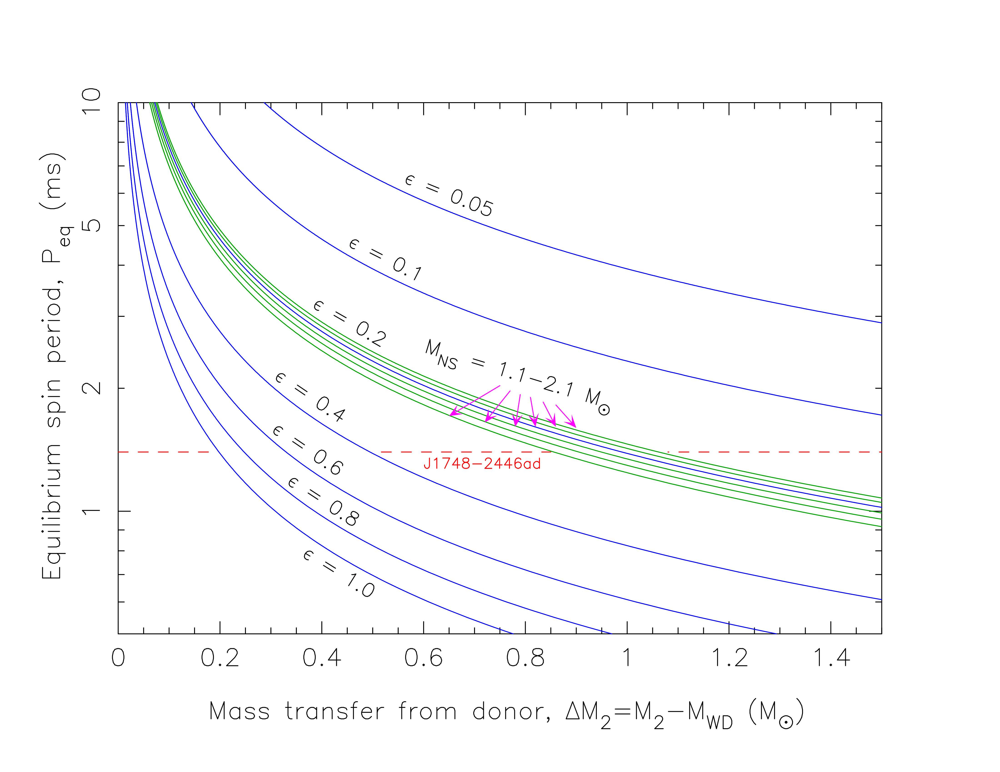<br />
图注：Equilibrium spin period as a function of the amount of mass transferred from the donor star in a LMXB system. The various lines are for different baryonic mass-accretion efficiencies, $\epsilon$, between 0.05 (top) and 1.0 (bottom), assuming $\eta=0.15$. The dependence on final NS mass is shown for $\epsilon = 0.2$, cf. green lines representing NS mass in steps of $0.2\;M_\odot$ between $1.1$ and $2.1\;M_\odot$ (for the blue lines $M_{\rm NS}=1.70\;M_\odot$ is assumed). The horizontal dashed red line marks the $1.4~{\rm ms}$ spin period of the fastest known MSP: J1748$-$2446ad.<br />
对应解读：“建议重点查看的图表”第4项与“关键图表逐图导读”图4：自旋加速所需质量、传质效率和双星演化可用资源的比较。<br />
入选理由：该图把平衡自转周期与从供体转移的质量联系起来，并区分不同质量吸积效率和最终中子星质量，能直接支撑日报中“回收不充分”和“达到极短周期需要足够累计角动量”的论点，比单纯示意图更接近形成通道的定量诊断。<br />
来源与置信度：\(arxiv_source\)；high；\(arxiv_source\) / sn-article.tex:figure[12]</p>
<p><strong>Fig10</strong><br />
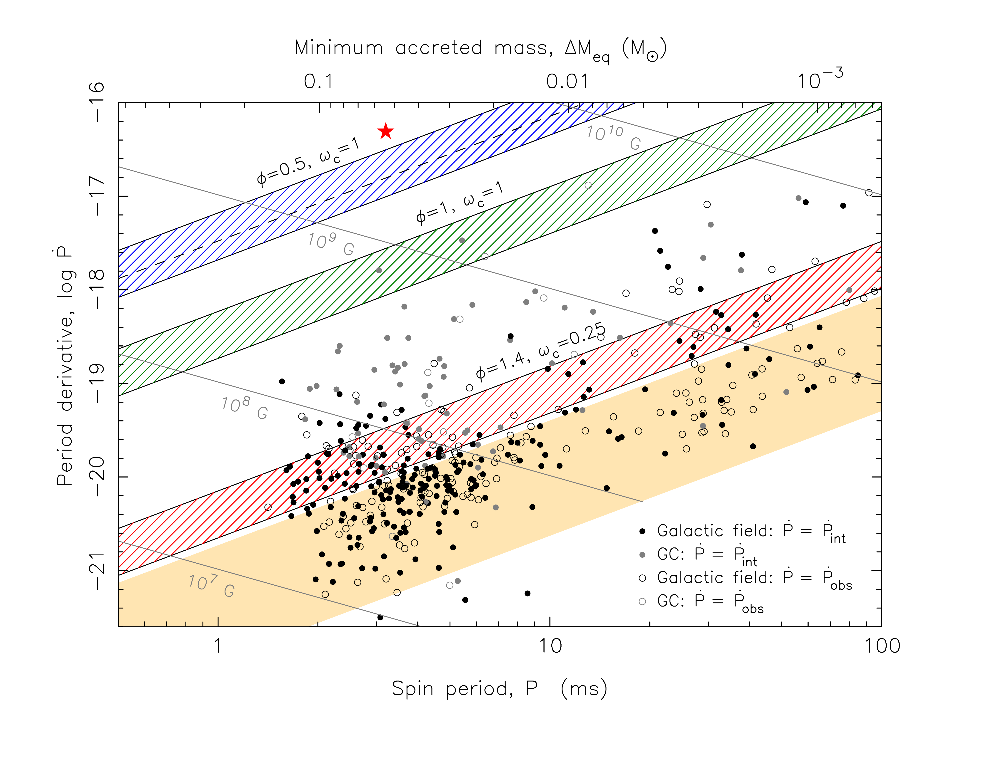<br />
图注：Theoretical spin-up lines, or <code>spin-up bands'', calculated for three different cases of the parameters $\phi$ and $\omega_c$. In all cases shown (blue, green, red) the spin-up line is calculated assuming accretion at the Eddington limit, $\dot{M}=\dot{M}_{\rm Edd}$, and applying the Spitkovsky torque formalism. Thus these lines represent upper limits for the given set of parameters. The width of each</code>line'' (band) results from using a spread in NS mass and magnetic inclination angle from ($2.0\,M_{\odot}$,~$\alpha=90^{\circ}$) to ($1.0\,M_{\odot}$,~$\alpha=0^{\circ}$), upper and lower boundary, respectively. The dashed line within the upper blue band is calculated from ($2.0\,M_{\odot}$,~$\alpha=0^{\circ}$), and hence the band width above this line reflects the dependence on $\alpha$, whereas the band width below this line shows the dependence on $M$. The yellow spin-up region below the red band is calculated for a $1.4\,M_{\odot}$ NS using the vacuum magnetic dipole model for the radio pulsar torque and assuming $\phi =1.4$, $\omega_{\rm c}=0.25$ and $\dot{M}=\dot{M}_{\rm Edd}$ for $\alpha=90^{\circ}$ and $\alpha=10^{\circ}$ (upper and lower boundary). The observed distribution of Galactic field and GC radio pulsars are plotted as black and grey filled circles, respectively. MSPs for which kinematic corrections of the observed value of $\dot{P}$ could not be provided (or were non-physical) are plotted as open circles. The upper horizontal axis shows the minimum amount of mass to be accreted (Eq.~\ref{eq:deltaM}) for reaching a given spin period. For PSR~J0435+3233 (red star), see Sect.~\(\ref{subsec:J0435+3233}.\) Updated after \(\cite{tlk12}.\)<br />
对应解读：“建议重点查看的图表”第3、4项及模型拟合段落：理论spin-up bands、观测P-Pdot分布、达到给定周期所需最小吸积质量。<br />
入选理由：该图把理论自旋加速线、不同扭矩参数、爱丁顿吸积上限、观测射电脉冲星P-Pdot分布和顶部的最小吸积质量尺度放在同一张图中，适合说明吸积扭矩上限与实际MSP分布之间的关系，是连接观测样本和回收模型的重要图。<br />
来源与置信度：\(arxiv_source\)；high；\(arxiv_source\) / sn-article.tex:figure[10]</p>
<p><strong>Fig07</strong><br />
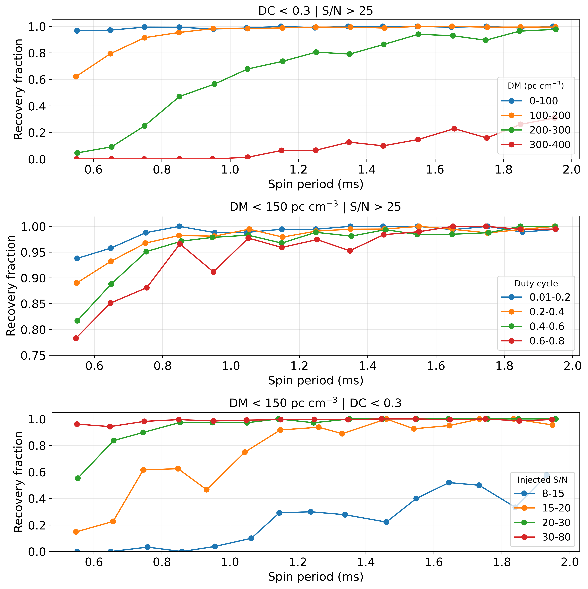<br />
图注：Recovery fraction as a function of injected spin period for representative slices in dispersion measure (DM; top), duty cycle (middle), and injected S/N (bottom). In each panel, the remaining injection parameters are restricted to ranges where the recovery fraction is close to its maximum, thereby reducing the influence of those parameters and isolating the dependence on the quantity being varied. The curves show the fraction of injected pulsars recovered by the search pipeline within each spin-period bin.<br />
对应解读：“建议重点查看的图表”第6项与“关键图表逐图导读”图6：搜索选择效应，恢复率随自转周期、DM、占空比和注入信噪比变化。<br />
入选理由：该图来自注入恢复测试，直接给出搜索管线对不同自转周期的恢复分数，并分离DM、duty cycle和S/N的影响，可用于检验P&lt;1 ms零探测是否可能完全由观测偏差造成；在选择效应相关候选图中，它比corner plot更直观对应日报提出的诊断量。<br />
来源与置信度：\(arxiv_source\)；high；\(arxiv_source\) / sn-article.tex:figure[7]</p>
<h4 id="_100">强相关工作</h4>
<p>同一类源方面，最快确认射电脉冲星 \(\mathrm{PSR\ J1748-2446ad}\) 是任何亚毫秒讨论都绕不开的参照；低质量 \(X\) 射线双星和吸积毫秒 \(X\) 射线脉冲星则是形成通道的直接样本。应检索关键词包括“fastest millisecond pulsar”、“sub-millisecond pulsar searches”、“accretion spin equilibrium neutron star”、“LMXB spin distribution”、“transitional millisecond pulsar”。</p>
<p>基础理论方面，相关工作包括中子星最大自转频率和物态方程综述、吸积回收模型、磁层半径与推进器机制、连续引力波制动和 \(r\) 模不稳定。相反观点或张力主要来自两类解释：一类强调射电和 \(X\) 射线搜索选择效应仍可能隐藏大量极快源；另一类强调引力波或 \(r\) 模扭矩可能在吸积阶段已经建立硬上限。本文的位置介于两者之间：选择效应和引力波都重要，但最自然的解释是低形成率与短寿命的组合。</p>
<p><strong>同一事件 / 同类源线索</strong>：</p>
<ul>
<li><a href="https://arxiv.org/abs/2608.23704">https://arxiv.org/abs/2608.23704</a></li>
<li><a href="https://arxiv.org/pdf/2608.23704">https://arxiv.org/pdf/2608.23704</a></li>
<li><a href="https://arxiv.org/abs/astro-ph/0601337">https://arxiv.org/abs/astro-ph/0601337</a></li>
</ul>
<p><strong>相似工作</strong>：</p>
<ul>
<li><a href="https://arxiv.org/abs/astro-ph/0601337">https://arxiv.org/abs/astro-ph/0601337</a></li>
<li><a href="https://arxiv.org/abs/0708.1149">https://arxiv.org/abs/0708.1149</a></li>
</ul>
<p><strong>基础理论 / 方法工作</strong>：</p>
<ul>
<li><a href="https://arxiv.org/abs/astro-ph/0612440">https://arxiv.org/abs/astro-ph/0612440</a></li>
<li><a href="https://arxiv.org/abs/astro-ph/9708075">https://arxiv.org/abs/astro-ph/9708075</a></li>
</ul>
<p><strong>相反观点 / 张力线索</strong>：</p>
<ul>
<li><a href="https://arxiv.org/abs/astro-ph/9803311">https://arxiv.org/abs/astro-ph/9803311</a></li>
<li><a href="https://arxiv.org/abs/astro-ph/0005218">https://arxiv.org/abs/astro-ph/0005218</a></li>
</ul>
</details>
<h3 id="10-spin-inference-with-the-black-hole-explorer-i-fisher-information-matrix-forecast">10. Spin inference with the Black Hole Explorer. I. Fisher information matrix forecast</h3>
<ul>
<li>来源：arXiv / astro-ph.HE</li>
<li>链接：https://arxiv.org/abs/2608.23672v1</li>
<li>作者：Joseph R. Farah, Daniel C. M. Palumbo, Michael D. Johnson, Dominic O. Chang</li>
<li>评分：novelty 7/10，importance 8/10，relevance 8/10，final 8.70/10</li>
<li>推荐理由：BHEX利用光子环约束M87<em>/Sgr A</em>自旋的Fisher预报，直接服务下一代黑洞VLBI任务设计和强场引力测量，仪器与方法相关性较高。</li>
</ul>
<p><strong>中文题目</strong>：用黑洞探索者进行自旋推断（一）：基于 Fisher 信息矩阵的预报</p>
<p><strong>做了什么</strong>：这篇文章评估未来空间甚长基线干涉任务 Black Hole Explorer 能否仅凭黑洞图像中的光子环几何来约束 M87<em> 和 Sgr A</em> 的无量纲自旋 \(a_*\)。作者用一个双锥半解析发射模型生成可见度数据，再用 Fisher 信息矩阵预报参数后验宽度，并用数值稳定性测试和合成数据的完整后验采样交叉验证。主要结论是，在约 \(30\) 个轨道的观测积累后，即使加入相当大的系统误差，BHEX 对目标自旋的精度也可达到 \(\sigma_{a_*}\ll 0.1\)。</p>
<p><strong>为什么重要</strong>：光子环是强引力区 null geodesic 结构在图像中的直接投影，比普通吸积流图像更接近时空几何本身。如果 BHEX 能测到光子环并把自旋误差压到 \(0.1\) 以下，事件视界尺度 VLBI 就从“成像黑洞阴影”进入“测量 Kerr 几何参数”的阶段。</p>
<p><strong>理论 / 观测 / 仪器方法价值</strong>：本文的价值不在于给出某个已观测黑洞的新自旋，而是给出任务设计和观测策略的可量化预报：哪些基线、哪些轨道积累、哪些先验和系统误差会控制 \(a_*\) 的信息量。方法上，它把光子环几何、干涉可见度和 Fisher 信息矩阵连接起来，可作为 BHEX 后续更复杂模拟和任务需求分解的基准。</p>
<p><strong>为什么应该关注</strong>：如果你关心强场广义相对论检验、超大质量黑洞增长史或空间 VLBI 任务设计，这篇文章给出了一个很具体的问题答案：BHEX 的长基线是否真的能把光子环从吸积流结构中“量出来”，并把它转化为自旋约束。它也提醒读者，未来黑洞成像的瓶颈可能不只是角分辨率，而是模型系统误差、协方差和先验处理。</p>
<details class="paper-detail">
<summary>展开详细解读：文章讲解、背景、理论、重点章节、图表与相关工作</summary>
<h4 id="_101">文章详细讲解</h4>
<p>科学问题：广义相对论预言 Kerr 黑洞附近存在由高阶弯折光线组成的光子环。普通 EHT 图像中的明亮环很大程度上受吸积流发射和光学厚度控制，而更窄的光子环几何则更直接编码质量 \(M\)、距离 \(D\)、视角 \(\theta\) 和无量纲自旋 \(a_*\)。BHEX 通过空间基线把角分辨率推到地面 EHT 之外，目标是首次分辨或检测光子环的干涉特征。本文问的是：在这样的任务配置下，M87<em> 和 Sgr A</em> 的 \(a_*\) 能被测到多准？</p>
<p>作者怎么做：论文采用 Fisher 信息矩阵而不是对每一种任务配置都做昂贵的全后验采样。图像模型是一个双锥半解析发射模型，足够简单以便快速计算不同 \(a_*\)、视角、发射几何和亮度参数下的图像与可见度，同时又保留前后锥、相对论透镜和光子环相关的形态变化。然后作者把 BHEX 的轨道采样、目标参数、热噪声和额外系统误差写入可见度协方差，计算参数对复可见度的导数，从而得到 Fisher 矩阵和预报的 \(\sigma_{a_*}\)。</p>
<p>关键结果：对 M87<em> 和 Sgr A</em>，在若干 BHEX 配置和约 \(30\) 个轨道的积累下，预报的自旋后验宽度通常满足 \(\sigma_{a_*}\ll 0.1\)。这说明自旋信息并非只来自图像中一个模糊的环直径，而是来自长基线可见度振荡、相位结构和模型参数之间的联合约束。论文还强调，即使加入显著系统误差，结论仍大体稳健；这对任务论证很关键，因为真实 VLBI 数据一定包含站增益、源结构时间变化、散射和模型不完备等非理想因素。</p>
<p>局限和下一步：Fisher 矩阵本质上是局部高斯近似，依赖在 fiducial 模型附近导数能代表真实后验形状。若参数后验强非高斯、多峰，或自旋与发射模型之间存在严重模型错配，\(\sigma_{a_*}\) 会过于乐观。作者通过合成数据的完整后验探索检查协方差和先验处理，但本文仍属于第一阶段预报。下一步需要把更真实的 GRMHD 图像库、时间变源、散射屏、校准误差和模型选择误差纳入同一框架，并检验“错误发射模型拟合正确 Kerr 图像”时的自旋偏差。</p>
<h4 id="_102">关键结果是怎么做出来的</h4>
<p>本文最重要的结果是 BHEX 对 M87<em> 和 Sgr A</em> 的自旋精度预报。数据并非真实观测，而是由指定 BHEX 轨道和目标参数生成的合成 VLBI 可见度。样本选择对应 BHEX 的主要科学目标：M87<em> 代表大质量、演化较慢、角尺度适中的活动星系核黑洞；Sgr A</em> 代表银河系中心黑洞，角尺度大但时间变化和散射更麻烦。作者比较不同任务配置和观测积累，尤其强调约 \(30\) 个轨道后的信息量。</p>
<p>统计量的核心是 Fisher 信息矩阵。对每个参数 \(\vartheta_i\)，作者计算模型复可见度对参数的导数，并用噪声协方差加权。若似然在 fiducial 参数附近近似高斯，则参数协方差矩阵可由 Fisher 矩阵加先验矩阵求逆得到。自旋约束就是边缘化协方差中的 \(\sqrt{C_{a_*a_*}}\)。因此，显著性或置信区间不是来自“探测到某个单独图像特征”的阈值，而来自整个可见度数据集对多参数模型的曲率。</p>
<p>支撑结论的图表应主要包括：不同 BHEX 配置下 \(\sigma_{a_*}\) 随轨道数或误差预算变化的曲线；参数相关矩阵或 corner-like 的二维误差椭圆；M87<em> 与 Sgr A</em> 的对比表；以及 Fisher 结果与合成数据全后验采样的交叉验证图。读者应特别看 \(a_*\) 与视角、质量距离比、发射锥几何、亮度归一化和环宽度之间的相关性，因为这些相关性决定所谓 \(\sigma_{a_*}\ll 0.1\) 是几何约束还是模型先验驱动。</p>
<p>系统误差方面，论文明确考虑“显著系统误差”下的精度退化，并进行了数值稳定性与鲁棒性检查。对 Fisher 预报来说，关键稳健性问题包括导数步长是否稳定、矩阵条件数是否过大、参数重标定是否改变结果、加入先验后是否人为压低误差、以及合成数据采样得到的后验宽度是否与 Fisher 椭圆一致。作者声称这些检查支持其主结论，但读者仍应区分“在双锥模型族内稳健”和“对真实吸积流模型错配稳健”这两层含义。</p>
<details class="paper-subdetail">
<summary>展开背景、理论、公式、模型、章节和图表导读</summary>
<h4 id="_103">背景知识</h4>
<p>研究对象是 M87<em> 和 Sgr A</em> 这两个事件视界尺度 VLBI 的核心目标。EHT 已经给出 M87<em> 和 Sgr A</em> 的毫米波环状图像，但这些图像中的“环”通常是发射区、透镜放大和有限分辨率共同作用的结果，并不等同于严格意义上的光子环。光子环指接近不稳定光子轨道的高阶图像序列，在理想极限下具有窄而嵌套的几何结构。</p>
<p>历史问题是：黑洞阴影和光子环到底能测什么。阴影直径主要由 \(GM/c^2\) 和距离决定，对 \(a_*\) 的依赖相对弱，尤其在有限视角和有限分辨率下很难单独给出高精度自旋。另一方面，光子环的偏心、位移、子环间距和可见度域振荡更敏感于 Kerr 时空的高阶光线结构，理论上可以提供比阴影直径更丰富的强场信息。</p>
<p>观测背景是地面 EHT 的最大基线受地球直径限制。若要直接进入光子环宽度对应的空间频率，需要空间 VLBI。BHEX 的设想正是把一个空间单元与地面阵列组合，获取更长的基线和更密集的 \(u\)-\(v\) 覆盖，从而在可见度域识别窄环结构产生的振荡。本文处在任务预研和科学能力量化的阶段。</p>
<p>为什么现在值得重新看：一方面 EHT 已经证明事件视界尺度成像可行，另一方面光子环科学要求比“看到一个环”更严格，需要事先回答灵敏度、轨道、先验和系统误差是否足以支持参数推断。BHEX 若要作为任务推进，必须把“能看到光子环”转化为“能测到哪些物理参数、多大误差、对哪些假设敏感”。</p>
<p>常见误区有三点。第一，把 EHT 图像中的亮环直接称为光子环，会高估现有观测对强场几何的纯净性。第二，以为更高分辨率自动等于更好自旋测量；实际上自旋与视角、发射结构和散射之间有强退化。第三，把 Fisher 预报当成最终误差条；Fisher 只是在模型正确且局部近似高斯时成立，真实数据分析还需要模型比较和后验检验。</p>
<h4 id="_104">基础理论 / 方法脉络</h4>
<p>基本物理图像从 Kerr 黑洞的光线传播开始。靠近黑洞的光子可在不稳定光子轨道附近绕行若干圈后逃逸到远处观测者，这些高阶光线在图像平面上形成非常窄的结构。自旋 \(a_*\) 改变时空的拖曳效应，进而改变临界曲线的位置、非对称性和不同阶图像的放大率。</p>
<p>VLBI 不直接测图像像素，而是测天空亮度分布 \(I_\nu(l,m)\) 的傅里叶分量，即复可见度 \(V(u,v)\)。窄环结构在长基线上对应振荡特征；环越窄，越需要高空间频率才能分辨。BHEX 的物理优势就是通过空间基线把 \((u,v)\) 采样延伸到地球直径之外，让光子环特征不只表现为图像域的模糊边缘，而表现为可见度域中可测的幅度和相位结构。</p>
<p>本文使用的双锥半解析发射模型可以理解为在黑洞两侧锥面上放置参数化发射，并用相对论光线追踪得到图像。它比完整 GRMHD 模拟更简单，便于计算导数和扫描任务配置；但它又比纯几何环模型更接近吸积流图像，因为允许发射几何、亮度分布和前后侧贡献变化。关键参数包括 \(a_*\)、观测倾角、位置角、角尺度、亮度归一化、发射锥开角和可能的宽度或不对称参数。</p>
<p>统计方法的核心假设是，在 fiducial 参数附近，复可见度残差的似然可近似为多元高斯，参数后验也可由二阶曲率描述。Fisher 矩阵给出每个参数方向上的信息量，边缘化协方差由矩阵求逆得到。实际意义是：如果 \(a_*\) 的导数方向与其他参数导数方向近似正交，则自旋可被很好测量；若导数方向高度相似，就会出现强退化。</p>
<p>常见退化和系统误差包括 \(a_*\) 与倾角之间的几何退化、质量距离比与环尺度之间的退化、发射模型参数与光子环亮度之间的退化、以及站增益和散射对长基线幅度的影响。Sgr A<em> 还受到源内禀时间变化和星际散射的挑战；M87</em> 相对稳定，但喷流底部和非轴对称发射会影响模型匹配。</p>
<h4 id="_105">公式与推导</h4>
<p>第一步是把自旋参数写成无量纲形式。若黑洞质量为 \(M\)、角动量为 \(J\)，则</p>
<div class="math-display">\[a_* = \frac{cJ}{GM^2},\]</div>
<p>其中 \(G\) 是引力常数，\(c\) 是光速。Kerr 黑洞要求 \(|a_*|\leq 1\)。本文关心的是观测数据能把 \(a_*\) 的后验宽度 \(\sigma_{a_*}\) 压到多小。</p>
<p>第二步是给出事件视界尺度的基本角尺度。黑洞引力半径在天空上的角尺度为</p>
<div class="math-display">\[\theta_g=\frac{GM}{c^2D},\]</div>
<p>其中 \(D\) 是距离。M87<em> 和 Sgr A</em> 的图像可比性首先来自它们都有可观的 \(\theta_g\)，但自旋信息不只在整体尺度中，而在 Kerr 光线结构导致的非圆对称细节中。</p>
<p>第三步是从亮度到 VLBI 可观测量。小视场近似下，复可见度是天空亮度的傅里叶变换：</p>
<div class="math-display">\[V(u,v)=\int I_\nu(l,m)\,e^{-2\pi i(ul+vm)}\,dl\,dm,\]</div>
<p>其中 \((l,m)\) 是相对相位中心的角坐标，\((u,v)\) 是以观测波长为单位的投影基线。光子环的窄结构主要通过长 \(\sqrt{u^2+v^2}\) 处的振荡来贡献信息。</p>
<p>第四步可用一个薄环近似理解长基线信号。若亮度近似为半径 \(R\) 的圆环，则方位平均可见度满足近似比例</p>
<div class="math-display">\[V(q)\propto J_0(2\pi qR),\quad q=\sqrt{u^2+v^2},\]</div>
<p>其中 \(J_0\) 是零阶 Bessel 函数。真实 Kerr 光子环不是完美圆环，但这个公式说明环半径和细结构会在可见度域产生可测零点与振荡。</p>
<p>第五步是写出含噪声的数据模型。对第 \(k\) 个复可见度点，若模型参数为 \(\boldsymbol{\vartheta}\)，则</p>
<div class="math-display">\[d_k=V_k(\boldsymbol{\vartheta})+n_k,\]</div>
<p>其中 \(d_k\) 是观测数据，\(V_k\) 是模型预言，\(n_k\) 是噪声。参数向量 \(\boldsymbol{\vartheta}\) 包括 \(a_*\) 和发射、几何、校准等 nuisance 参数。</p>
<p>第六步是高斯似然。若噪声协方差为 \(\mathbf{C}_n\)，则</p>
<div class="math-display">\[-2\ln\mathcal{L}=(\mathbf{d}-\mathbf{V})^\dagger\mathbf{C}_n^{-1}(\mathbf{d}-\mathbf{V})+\mathrm{const},\]</div>
<p>其中 \(\dagger\) 表示 Hermitian 转置。热噪声和附加系统误差都会进入 \(\mathbf{C}_n\)，从而改变参数信息量。</p>
<p>第七步得到 Fisher 信息矩阵：</p>
<div class="math-display">\[F_{ij}=\left(\frac{\partial \mathbf{V}}{\partial \vartheta_i}\right)^\dagger\mathbf{C}_n^{-1}\left(\frac{\partial \mathbf{V}}{\partial \vartheta_j}\right).\]</div>
<p>它度量参数 \(\vartheta_i\) 和 \(\vartheta_j\) 对可见度变化方向的可区分程度。若 \(\partial\mathbf{V}/\partial a_*\) 在数据空间中足够大且不与其他参数导数平行，\(a_*\) 就能被精确测量。</p>
<p>第八步加入先验并得到边缘误差。若先验 Fisher 矩阵为 \(P_{ij}\)，则参数协方差近似为</p>
<div class="math-display">\[\(\mathbf{\Sigma}=\left(\mathbf{F}+\mathbf{P}\right)^{-1},\quad\) \(\sigma_{a_*}=\sqrt{\Sigma_{a_*a_*}}.\)\]</div>
<p>这正是本文预报 \(\sigma_{a_*}\ll 0.1\) 的统计含义。读者需要检查该结果对 \(\mathbf{P}\)、\(\mathbf{C}_n\) 和 fiducial \(\boldsymbol{\vartheta}\) 的敏感性。</p>
<h4 id="_106">模型拟合 / 应用方法</h4>
<p>这类工作的拟合对象是复可见度、闭合相位、闭合幅度或由它们构成的校准不变量；本文 Fisher 框架可看作在复可见度空间直接拟合半解析图像模型。拟合参数至少包括黑洞自旋 \(a_*\)、倾角、位置角、角尺度或质量距离组合、总通量、发射锥几何和亮度剖面参数。若考虑系统误差，还需要把额外方差、增益不确定性或相关噪声写进协方差。</p>
<p>参数估计在 Fisher 层面相当于在 fiducial 点附近对模型线性化。优点是快速，可比较大量轨道配置和误差预算；缺点是无法完整表达非线性、多峰和边界效应。例如 \(a_*\) 接近 \(0\) 或 \(1\) 时，后验形状可能不对称；倾角接近面向观测者时，自旋方向和大小也更难区分。</p>
<p>残差诊断应关注可见度幅度和相位随基线长度、基线方向和时间的结构性偏差。若残差只在短基线出现，可能是大尺度发射模型不充分；若主要在最长基线出现，则可能直接影响光子环和 \(a_*\) 约束。对 BHEX 来说，长基线点权重很高，但也更容易受灵敏度、相干损失和校准误差影响。</p>
<p>主要退化包括 \(a_*\) 与倾角的退化、\(a_*\) 与发射非对称性的退化、环直径与 \(M/D\) 的退化、以及环宽度与散射或有限带宽平均的退化。先验可以打破部分退化，例如用恒星动力学或气体动力学给出 \(M\) 和 \(D\)，用独立喷流方向约束位置角，但这也意味着最终 \(\sigma_{a_*}\) 可能部分来自外部信息。</p>
<p>模型可能失败的场景包括真实吸积流强湍动、非稳态耀发、喷流成分污染、GRMHD 图像与双锥模型族不相容、以及非 Kerr 假设下把时空偏差误解释为自旋。实际应用中，BHEX 数据应同时用半解析模型、GRMHD 库和更自由的几何模型拟合，并比较它们对 \(a_*\) 的一致性。</p>
<h4 id="_107">重点章节 / 结果段落怎么读</h4>
<p>数据与任务配置部分应先读。这里定义 BHEX 的轨道采样、观测目标、噪声模型和观测积累方式。读者需要确认 \(30\) 个轨道对应的数据覆盖是否足以代表真实任务，以及 M87<em> 与 Sgr A</em> 的处理是否考虑了各自的特殊系统误差。</p>
<p>发射模型部分是理解结果可信度的核心。双锥半解析模型决定了光子环信号如何与吸积流发射混合，也决定 Fisher 导数的物理含义。读者应关注哪些参数被自由拟合、哪些被固定、哪些先验被加入。</p>
<p>Fisher 信息矩阵方法部分应检查似然、协方差和数值导数。关键不是公式本身，而是复可见度的实部和虚部如何进入数据向量，系统误差如何加入，以及参数重标定和矩阵求逆是否稳定。</p>
<p>主结果部分应比较不同配置下 \(\sigma_{a_*}\) 的变化。尤其要看 M87<em> 与 Sgr A</em> 是否由相同的信息通道约束，还是一个更依赖外部先验、另一个更依赖长基线振荡。</p>
<p>验证与稳健性部分最值得细读。作者用数值稳定性测试和合成数据完整后验采样来验证 Fisher 近似。读者应看 Fisher 椭圆是否与采样后验一致，以及在协方差和先验处理改变后 \(\sigma_{a_*}\) 是否仍保持 \(\ll 0.1\)。</p>
<h4 id="_108">建议重点查看的图表</h4>
<ol>
<li>
<p>BHEX \(u\)-\(v\) 覆盖图：看长基线是否覆盖多个方向，而不是只在单一方向上提高分辨率；方向覆盖会影响自旋导致的非轴对称特征。</p>
</li>
<li>
<p>fiducial 图像与可见度曲线：看双锥模型生成的图像是否显示窄光子环成分，以及可见度幅度在长基线处是否有清晰振荡。</p>
</li>
<li>
<p>\(\sigma_{a_*}\) 随轨道数变化图：看误差是否近似按数据量缩放，还是在某个轨道数后因系统误差或退化进入平台。</p>
</li>
<li>
<p>不同系统误差假设下的自旋误差表或曲线：看 \(\sigma_{a_*}\ll 0.1\) 是否只在理想热噪声情况下成立，还是在保守误差预算下也成立。</p>
</li>
<li>
<p>参数相关矩阵或误差椭圆：重点看 \(a_*\) 与倾角、角尺度、发射开角、亮度参数之间的相关系数。</p>
</li>
<li>
<p>Fisher 与完整后验采样的交叉验证图：看采样后验是否近似椭圆、中心是否无偏、宽度是否与 Fisher 预报一致。</p>
</li>
<li>
<p>M87<em> 与 Sgr A</em> 对比图表：看两个目标的限制因素是否相同；Sgr A* 的散射和时间变源可能导致不同系统误差敏感性。</p>
</li>
</ol>
<h4 id="_109">关键图表逐图导读</h4>
<p>图 1：通常应是任务几何或 \(u\)-\(v\) 覆盖。横轴和纵轴应为以波长为单位的投影基线 \(u\) 与 \(v\)，数据轨迹对应 BHEX 与地面站在若干轨道中的采样。读图重点是最长基线达到哪里、方位角覆盖是否均匀、M87<em> 和 Sgr A</em> 的可观测窗口是否不同。陷阱是不要只看最大基线长度；稀疏方向覆盖会削弱对非圆对称自旋信号的约束。</p>
<p>图 2：应关注 fiducial 双锥模型图像和对应可见度。图像坐标轴一般是微角秒，颜色表示亮度；可见度图横轴为基线长度，纵轴为幅度或相位。若光子环可测，应在长基线看到与窄环相关的振荡或非平滑结构。陷阱是图像中的亮环不一定就是纯光子环，必须结合可见度域的高空间频率特征判断。</p>
<p>图 3：若展示 \(\sigma_{a_*}\) 随轨道数或观测时间变化，横轴应为轨道数，纵轴为边缘化自旋误差。模型线可能对应不同系统误差、不同目标或不同任务配置。主要结论应是约 \(30\) 个轨道后 \(\sigma_{a_*}\) 进入 \(\ll 0.1\) 区间。陷阱是注意纵轴是否为对数刻度，以及误差是否已经包含 nuisance 参数边缘化。</p>
<p>图 4：参数协方差或相关矩阵。坐标轴是模型参数，颜色或椭圆表示相关系数和联合置信区间。读者应优先定位 \(a_*\) 所在行列，看它与几何尺度和发射参数是否强相关。若 \(a_*\) 的误差椭圆很窄但相关系数很高，说明结论可能依赖先验或特定模型族。</p>
<p>图 5：系统误差敏感性图。横轴可能是附加误差比例、增益误差或协方差膨胀因子，纵轴为 \(\sigma_{a_*}\)。关键是曲线斜率和平台：若误差随系统项迅速恶化，任务需求就必须严格控制校准；若仍保持 \(\ll 0.1\)，说明长基线几何信息较强。陷阱是系统误差模型可能只是简化的白噪声膨胀，未必覆盖模型错配。</p>
<p>图 6：Fisher 预报与合成数据后验采样对比。二维图应显示 Fisher 椭圆与 MCMC 或 nested sampling 的点云/等高线；一维图显示边缘后验。关键是中心是否落在注入值附近、宽度是否一致、是否出现偏斜或多峰。若后验明显非高斯，Fisher 给出的 \(\sigma_{a_*}\) 只能作为局部指标。</p>
</details>
<h4 id="_110">论文原图 / 可嵌入图片</h4>
<p><strong>Fig02</strong><br />
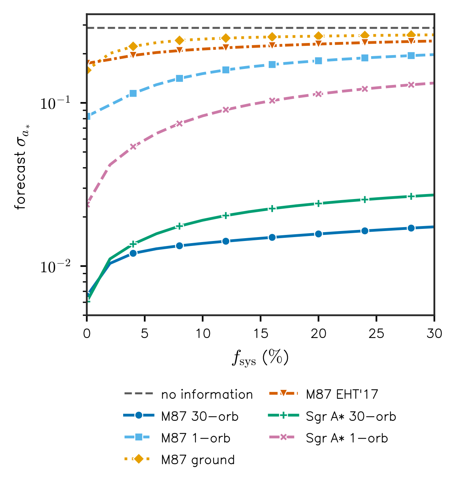<br />
图注：Variation of the forecasted spin uncertainty ($\sigmastar$) as a function of injected systematic error fraction ($\fracsys$) evaluated between $0\%$ and $30\%$. In the 30-orbit BHEX configuration, both M87<em> and Sgr A</em> are precisely measured ($\sigmastar \ll 0.1$) across all tested values of $\fracsys$. For the 1-orbit configuration, Sgr A<em> achieves higher precision, whereas M87</em> satisfies $\sigmastar < 0.1$ only for low systematic error levels ($\fracsys \lesssim 5\%$). For comparison, ground-only configurations (single-night EHT 2017 and the BHEX ground array) show negligible ability to constrain spin, approaching the uninformative uniform prior limit of $\sigmastar = 1/\sqrt{12}$ (horizontal dashed line).<br />
对应解读：对应“建议重点查看的图表”第4项系统误差假设下的自旋误差曲线，也对应关键结果中“显著系统误差下仍有 σ_{a_<em>} \ll 0.1”的论证。<br />
入选理由：这是最直接支撑日报核心结论的图：横轴就是注入系统误差比例，纵轴是 forecasted spin uncertainty σ_{a_</em>}，并同时比较30轨道、1轨道、地面阵列以及M87<em>和Sgr A</em>。它能检验 σ_{a_*}\ll0.1 是否只在理想热噪声下成立，还是在最高30%系统误差下仍稳健，因此科学价值最高。<br />
来源与置信度：\(arxiv_source\)；high；\(arxiv_source\) / main.tex:figure[2]</p>
<p><strong>Fig01</strong><br />
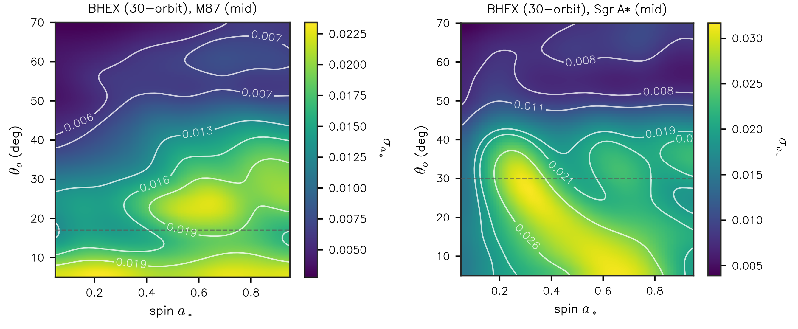<br />
图注：Heatmap of the forecasted BHEX inference capability $\sigmastar$ as a function of dimensionless spin $a_*$ and inclination $\theta_o$. We compute the forecasted uncertainty via $\sigmastar=\sqrt{(F^{-1})_{a_* a_*}}$ at each combination of spin and observer inclination for fiducial plasma physics parameters in the middle of the prior range. Horizontal dashed lines denote the nominal fiducial observer inclinations ($\theta_o \approx 17^\circ$ for M87<em> and $\theta_o \approx 30^\circ$ for Sgr A</em>). The displayed results are computed from a FIM incorporating a fractional systematic error $\fracsys$ applied in quadrature to amplitudes only. The reported uncertainty is sufficiently precise ($\sigmastar \ll 0.1$) for both sources at every point in the Kerr parameter space.<br />
对应解读：对应“M87<em> 与 Sgr A</em> 对比图表”、关键结果中σ_{a_<em>}在Kerr参数空间内的整体表现，以及模型拟合段落中自旋与倾角退化的讨论。<br />
入选理由：该图以热图形式展示 σ_{a_</em>} 随真实自旋 a_<em> 和观测倾角 θ_o 的变化，并标出M87</em>与Sgr A*的典型倾角，是判断BHEX自旋约束是否只适用于少数fiducial点、以及倾角是否导致退化的关键图。相比一般示意图，它直接给出全参数空间内的Fisher预报精度。<br />
来源与置信度：\(arxiv_source\)；high；\(arxiv_source\) / main.tex:figure[1]</p>
<p><strong>Fig04</strong><br />
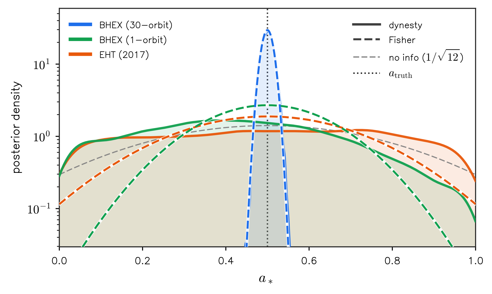<br />
图注：Validation of the forecasted uncertainty against self-fit posterior widths. We perform self-fits using a dual-cone model ray traced with \(\krangjl\) and compare the resulting $a_*$ posterior widths to the widths predicted by the FIM analysis. The Fisher forecast matches the self-fit posterior standard deviation to within $\lesssim 3\%$ for the BHEX 30-orbit configuration, while accurately capturing the EHT 2017 array's inability to constrain spin by predicting $\sigmastar \approx 1/\sqrt{12}$, which corresponds to a nearly flat, uninformative posterior. The posteriors retain their normalization to unity and are shown on a log scale to facilitate comparison.<br />
对应解读：对应“建议重点查看的图表”第6项Fisher与完整后验采样交叉验证图，以及关键图表导读中关于Fisher预报是否与self-fit posterior宽度一致的部分。<br />
入选理由：日报特别强调Fisher矩阵的局部高斯近似可能过于乐观，而此图正是用双锥模型self-fit后验宽度检验FIM预报。它显示30轨道BHEX下Fisher与后验标准差在约3%内一致，并同时验证EHT 2017几乎无约束的极限，因此对方法可靠性判断非常关键。<br />
来源与置信度：\(arxiv_source\)；high；\(arxiv_source\) / main.tex:figure[4]</p>
<p><strong>Fig03</strong><br />
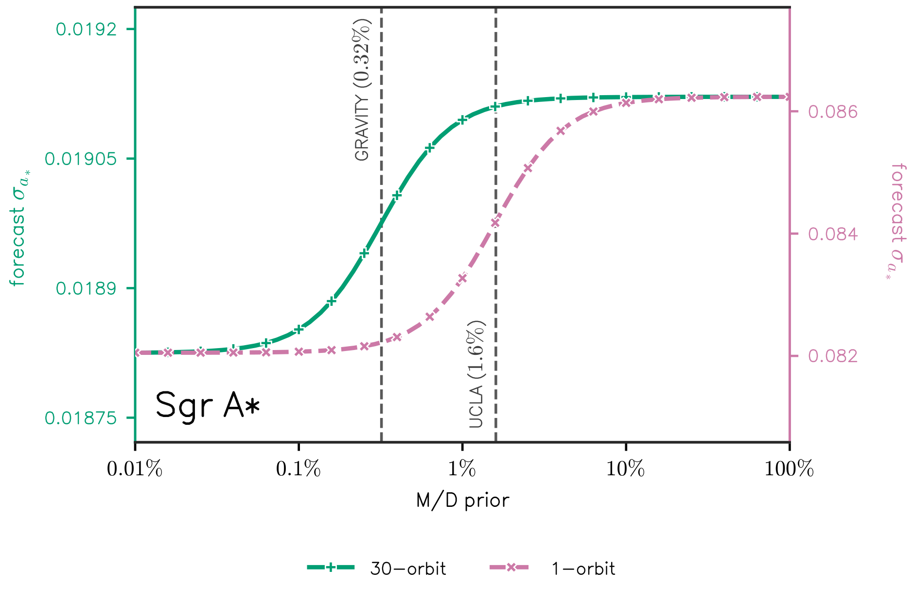<br />
图注：Sensitivity of the forecasted BHEX spin uncertainty to the choice of $M/D$ prior width. We vary the $M/D$ entry in the Fisher prior matrix $\mathcal{F}_{\rm prior}$ between $0.0\%$ and $100\%$ and recompute the predicted precision $\sigmastar$. We find that the effect is negligible ($\lesssim5\%$ for the 1-orbit configuration, pink, and $\lesssim 3\%$ for the 30-orbit configuration, green). We show the constraints from UCLA/Keck \(\cite\)[$\approx1.6\%$;][]{2019Sci...365..664D} and GRAVITY \(\cite\)[$0.32\%$;][]{2021A&amp;A...647A..59G} as dashed lines.<br />
对应解读：对应模型拟合段落中外部先验、M/D与环角尺度退化，以及日报中关于先验可能影响最终σ_{a_<em>}的局限性讨论。<br />
入选理由：该图检验M/D先验宽度对σ_{a_</em>}的影响，并标出Keck和GRAVITY约束，可用于判断自旋精度是否强依赖外部质量距离先验。虽然不如系统误差和后验验证图直接，但它能支撑日报中关于先验、尺度退化和稳健性的讨论。<br />
来源与置信度：\(arxiv_source\)；high；\(arxiv_source\) / main.tex:figure[3]</p>
<h4 id="_111">强相关工作</h4>
<p>这篇工作与 EHT 对 M87<em> 和 Sgr A</em> 的同源观测直接相关，但目标不同：EHT 论文主要证明事件视界尺度环状结构和质量尺度一致性，而本文问未来空间 VLBI 是否能测到更高阶的光子环并反演 \(a_*\)。检索关键词可用 “Event Horizon Telescope M87 shadow photon ring”, “EHT Sagittarius A* ring image”, “BHEX photon ring spin Fisher matrix”。</p>
<p>理论上，它接续了 Kerr 光子环、黑洞阴影和可见度域通用特征的一系列工作。相近研究包括用几何环模型或 GRMHD 图像库预报空间 VLBI 能力，以及讨论光子环是否能在实际吸积流噪声下被干净分离的论文。可能的相反观点或张力来自两方面：一是光子环在真实湍动吸积流中可能太暗或被直接发射污染；二是半解析模型得到的 Fisher 误差可能低估模型错配。检索关键词可用 “photon ring observability”, “universal interferometric signatures black hole photon ring”, “GRMHD model bias black hole spin EHT”。</p>
<p><strong>同一事件 / 同类源线索</strong>：</p>
<ul>
<li><a href="https://arxiv.org/abs/2608.23672">https://arxiv.org/abs/2608.23672</a></li>
<li><a href="https://arxiv.org/abs/1906.11238">https://arxiv.org/abs/1906.11238</a></li>
<li><a href="https://arxiv.org/abs/2205.01043">https://arxiv.org/abs/2205.01043</a></li>
</ul>
<p><strong>相似工作</strong>：</p>
<ul>
<li><a href="https://arxiv.org/abs/1907.04329">https://arxiv.org/abs/1907.04329</a></li>
<li><a href="https://arxiv.org/abs/1906.00873">https://arxiv.org/abs/1906.00873</a></li>
</ul>
<p><strong>基础理论 / 方法工作</strong>：</p>
<ul>
<li><a href="https://ui.adsabs.harvard.edu/abs/1973blho.conf..215B/abstract">https://ui.adsabs.harvard.edu/abs/1973blho.conf..215B/abstract</a></li>
<li><a href="https://ui.adsabs.harvard.edu/abs/1968PhRv..174.1559C/abstract">https://ui.adsabs.harvard.edu/abs/1968PhRv..174.1559C/abstract</a></li>
</ul>
<p><strong>相反观点 / 张力线索</strong>：</p>
<p>（未提供）</p>
</details>
<h3 id="11-the-first-x-ray-polarimetry-of-the-typical-accretion-disk-corona-source-4u-1822-37">11. The First X-Ray Polarimetry of the Typical Accretion Disk Corona Source 4U 1822-37</h3>
<ul>
<li>来源：arXiv / astro-ph.HE</li>
<li>链接：https://arxiv.org/abs/2608.24292v1</li>
<li>作者：WanYun Wu, Fei Xie, YuShan Ling</li>
<li>评分：novelty 8/10，importance 7/10，relevance 8/10，final 8.65/10</li>
<li>推荐理由：4U 1822-37首次IXPE偏振观测，发现显著能量和轨道相位依赖，为ADC/LMXB散射几何提供新约束；X射线偏振观测价值较高。</li>
</ul>
<p><strong>中文题目</strong>：典型吸积盘冕源 4U 1822-37 的首次 X 射线偏振观测</p>
<p><strong>做了什么</strong>：这篇文章报告了 IXPE 对高倾角低质量 X 射线双星、典型吸积盘冕源 4U 1822-37 的首次 X 射线偏振测量，并结合同时期 Swift-XRT 光谱数据。核心发现是：该源在 \(2\text{--}8\,\mathrm{keV}\) 的偏振度明显高于许多普通低质量 X 射线双星，且随能量增强；\(2\text{--}5\,\mathrm{keV}\) 平均偏振度为 \(5.6\pm0.8\%\)，\(5\text{--}8\,\mathrm{keV}\) 为 \(11.6\pm1.7\%\)，两者差异超过 \(3\sigma\)。分轨道相位看，伴星食期间软能段偏振度降到与零一致，而硬能段偏振度可能升高并达到 \(21.3\pm6.1\%\)，偏振角还出现轨道相关和吸收相关旋转。作者据此认为，软、硬 X 射线来自空间分布不同的区域，高偏振很可能来自吸积盘冕、盘缘凸起或团块中的散射。</p>
<p><strong>为什么重要</strong>：4U 1822-37 是研究吸积盘冕几何的标志性系统：它的高倾角让中心 X 射线源被遮挡，观测到的辐射很大一部分应来自散射和再处理。过去光谱和时变只能间接限制几何结构，而偏振直接携带散射平面、辐射各向异性和遮挡结构的信息。这篇文章首次给出该源的 IXPE 偏振约束，把吸积盘冕从“光谱模型成分”推进到可用偏振角和偏振度检验的空间几何问题。</p>
<p><strong>理论 / 观测 / 仪器方法价值</strong>：对理论而言，结果支持 4U 1822-37 的 \(2\text{--}8\,\mathrm{keV}\) 辐射不是单一、轴对称点源加薄盘模型能解释的，而需要能量依赖的发射区和非轴对称散射结构。对观测而言，它展示了轨道相位分辨偏振在高倾角 X 射线双星中的价值，尤其是把食、吸收柱密度变化、偏振角旋转联系起来。对方法而言，文章给出一个用 Stokes 参数、能段划分、相位折叠和同步光谱联合解释复杂几何的案例。</p>
<p><strong>为什么应该关注</strong>：如果你关心中子星低质量 X 射线双星、吸积盘冕、ADC 源、IXPE 偏振或高倾角吸积系统，这篇文章值得看，因为它直接测到几何信号，而不只是拟合一个等效吸收柱或 Compton 化温度。它也提醒我们：在强遮挡系统里，偏振度高不一定意味着本征辐射高度有序，而可能是因为直射光被削弱、散射光相对占比升高。未来同类源的偏振巡天、三维辐射转移模拟和轨道相位分辨光谱偏振联合拟合，都可用这篇工作作为参照。</p>
<details class="paper-detail">
<summary>展开详细解读：文章讲解、背景、理论、重点章节、图表与相关工作</summary>
<h4 id="_112">文章详细讲解</h4>
<p>科学问题：4U 1822-37 是一颗典型吸积盘冕源，即 central compact object 的直射 X 射线很可能被高倾角吸积盘遮挡，观测到的 X 射线主要来自盘上方冕区、盘缘或扩展结构的散射与再处理。传统光谱可以告诉我们吸收柱密度、热成分、Compton 化成分或铁线等信息，但很难唯一确定这些成分在空间上位于哪里。偏振观测则对散射几何非常敏感：偏振度 \(\mathrm{PD}\) 反映有序散射贡献相对于非偏振或多方向成分的比例，偏振角 \(\mathrm{PA}\) 则标记投影到天球面的主散射几何方向。因此本文的核心问题是：4U 1822-37 的 X 射线偏振是否能直接揭示吸积盘冕的几何、能量分层和轨道相位变化。</p>
<p>作者怎么做：作者使用 IXPE 对 4U 1822-37 进行了覆盖 44 个轨道周期的观测，并结合同时期 Swift-XRT 数据约束光谱与中性吸收变化。偏振分析按能段分为 \(2\text{--}5\,\mathrm{keV}\) 和 \(5\text{--}8\,\mathrm{keV}\)，并进一步按轨道相位切分，重点关注伴星食前后和食内行为。IXPE 的偏振测量本质上来自光电子发射方位角分布，作者将其转化为归一化 Stokes 参数 \(q\) 与 \(u\)，再计算 \(\mathrm{PD}\) 和 \(\mathrm{PA}\)。Swift-XRT 则帮助判断偏振角随时间旋转是否与吸收柱密度 \(N_{\mathrm{H}}\) 或遮挡结构有关。</p>
<p>关键结果：全相位平均结果显示，4U 1822-37 的偏振度显著高于许多普通低质量 X 射线双星。\(2\text{--}5\,\mathrm{keV}\) 的 \(\mathrm{PD}=5.6\pm0.8\%\)，\(5\text{--}8\,\mathrm{keV}\) 的 \(\mathrm{PD}=11.6\pm1.7\%\)，二者差异超过 \(3\sigma\)，说明硬 X 射线中散射或几何有序成分的占比更高。轨道相位分辨结果更关键：在伴星食期间，软能段偏振度从显著非零降到与零一致，而偏振角基本不变；硬能段偏振度则呈边际上升趋势，在食附近达到 \(21.3\pm6.1\%\)，并且食前偏振角有约 \(30^\circ\) 的周期性旋转。此外，偏振角在三天尺度上随中性吸收增强旋转约 \(40^\circ\)。这些现象共同指向软、硬辐射区域不是简单同位共形的。</p>
<p>局限和下一步：本文的限制主要来自 IXPE 计数统计和模型非唯一性。高偏振可以由盘面散射、扩展冕散射、盘缘凸起、气流冲击点或团块遮挡共同产生，单靠两段能量和有限相位 bin 难以唯一反演三维结构。硬能段食内偏振度升高只有边际趋势，偏振角旋转与 \(N_{\mathrm{H}}\) 的关系也需要更长时标、多轮观测检验。下一步最有价值的是把相位分辨偏振与同时的宽能段光谱、食形状、铁线变化、辐射转移模拟联合起来，建立能直接预测 \(q\)、\(u\)、光变曲线和能谱的几何模型。</p>
<h4 id="_113">关键结果是怎么做出来的</h4>
<p>数据和样本选择方面，本文围绕一次 IXPE 对 4U 1822-37 的长曝光观测展开，覆盖约 44 个双星轨道周期。这一点很重要，因为单个轨道内的偏振统计通常不足以支持相位分辨分析，而把多个周期按轨道历元折叠后，才能检查伴星食、食前吸收增强、盘缘结构经过视线时的系统性偏振变化。同步 Swift-XRT 数据提供 \(0.3\text{--}10\,\mathrm{keV}\) 左右的光谱约束，使作者能把偏振角旋转同吸收柱密度变化联系起来，而不是只讨论 IXPE 的 \(2\text{--}8\,\mathrm{keV}\) 偏振点。</p>
<p>最重要的全局结果来自能段分辨偏振测量。作者在 \(2\text{--}5\,\mathrm{keV}\) 得到 \(\mathrm{PD}=5.6\pm0.8\%\)，在 \(5\text{--}8\,\mathrm{keV}\) 得到 \(\mathrm{PD}=11.6\pm1.7\%\)。如果把两能段差异近似看作独立高斯误差，差值为 \(6.0\%\)，合成误差约为 \(\sqrt{0.8^2+1.7^2}\%\)，显著性约 \(3.2\sigma\)，与摘要中“超过 \(3\sigma\)”一致。支撑该结果的图表应包括能段偏振置信椭圆、\(\mathrm{PD}\) 随能量变化图，以及与常见 LMXB 偏振度范围的比较。</p>
<p>相位分辨结果是本文区别于普通能谱论文的证据链。作者把数据按轨道相位折叠后发现，伴星食期间 \(2\text{--}5\,\mathrm{keV}\) 偏振度从显著非零降到与零一致，但偏振角没有明显改变。这说明软能段偏振成分可能与会被伴星遮挡的紧凑或局部区域有关；若只是整体计数率下降导致统计变差，偏振置信区间和 Stokes 平面误差椭圆应能显示这一点，因此读者应检查食内外 \(q\) 与 \(u\) 的误差是否足以解释偏振度下降。</p>
<p>硬能段的证据链更微妙。\(5\text{--}8\,\mathrm{keV}\) 中偏振度在食附近呈边际上升并达到 \(21.3\pm6.1\%\)，同时偏振角在食前出现约 \(30^\circ\) 的周期性旋转。这里的关键词是“边际”：偏振度升高的误差较大，不能单独作为强结论；但若与食前相位、硬能段较高平均偏振度、吸收增强时偏振角旋转共同出现，就形成了一个几何解释链。最能支撑这一点的应是相位分辨 \(\mathrm{PA}\) 曲线、硬能段 Stokes 参数随相位轨迹，以及相位相关光谱吸收参数。</p>
<p>统计上，IXPE 偏振分析通常会在 Stokes 空间进行，因为低信噪比下 \(\mathrm{PD}\) 是正定量，直接拟合会有 Rice 偏差。读者需要关注作者是否使用了合适的 Stokes 似然或误差传播，是否报告了最小可探测偏振 \(\mathrm{MDP}\)，以及各相位 bin 的有效调制因子和背景处理。对于 \(21.3\pm6.1\%\) 这样的高偏振点，既要看其偏振显著性，也要看它是否受少数高背景时段、曝光非均匀或相位 bin 选择影响。</p>
<p>系统误差和稳健性方面，最主要的是轨道历元误差、能段选择、Swift-XRT 与 IXPE 非完全同能段、背景估计、相位折叠导致的结构平均，以及吸收与散射解释之间的退化。若文章提供不同相位划分、不同能段边界、剔除异常时间段、或使用独立偏振估计方法的检验，应优先阅读。本文的结论强度不在于某一个偏振点，而在于能量依赖、食内外变化、偏振角旋转和吸收变化四个观测事实彼此相容。</p>
<details class="paper-subdetail">
<summary>展开背景、理论、公式、模型、章节和图表导读</summary>
<h4 id="_114">背景知识</h4>
<p>4U 1822-37 是低质量 X 射线双星中的经典高倾角系统，通常被归为吸积盘冕源。所谓吸积盘冕源，并不是说它只存在一个太阳冕式热等离子体，而是指中心紧凑天体附近的直射 X 射线被盘体或盘缘遮挡，观测者看到的 X 射线很大一部分经过扩展热电子区、盘面或盘缘结构散射后才到达。由于系统倾角高，伴星食、轨道调制和吸收变化都很明显，因此它一直是研究遮挡吸积几何的样板。</p>
<p>历史上，对 4U 1822-37 的理解主要来自光变、食时刻、光谱吸收、发射线和脉冲或轨道参数分析。光谱模型常会包含吸收、黑体或盘黑体、Compton 化连续谱、铁线以及部分覆盖等成分；这些模型可以拟合能谱，但不同几何常常给出相似的能谱。比如，硬 X 射线增强可以被解释为更高温 Compton 化，也可以来自吸收削弱软光子后使硬成分相对突出，还可以来自散射区域能量依赖的可见性变化。</p>
<p>IXPE 之后，高能天体物理多了一个可观测维度：X 射线偏振。对吸积系统而言，偏振对几何的敏感性特别强。电子散射会产生与散射平面垂直的线偏振；多重散射、对称积分和未偏振直射光会稀释偏振；非轴对称结构则会让偏振角随相位转动。因此，对于 4U 1822-37 这种高倾角、散射占比高的源，偏振信号理论上应比低倾角直视源更明显。</p>
<p>为什么现在值得重新看？因为单纯的光谱拟合已经接近解释退化的瓶颈，而 IXPE 的相位分辨偏振可以把“吸收变化”和“散射几何变化”分开一部分。覆盖 44 个轨道周期使得作者可以不只测一个平均偏振度，还能在伴星食、食前结构经过视线、吸收增强阶段检查偏振行为。这正是高倾角 X 射线双星最有诊断力的时间尺度。</p>
<p>该领域一个常见误区是把高偏振度直接等同于强磁场或高度准直喷流。对 4U 1822-37 这类源，高偏振完全可能来自几何选择效应：直射未偏振或低偏振辐射被遮挡后，散射光比例上升，净偏振就会升高。另一个误区是把偏振角当成固定盘轴方向的简单示踪量；实际上，只要盘缘凸起、气流撞击点、团块或不均匀吸收改变主要散射区域，\(\mathrm{PA}\) 就可能随轨道相位或短时吸收状态旋转。</p>
<h4 id="_115">基础理论 / 方法脉络</h4>
<p>从基础物理看，X 射线线偏振描述的是电场振动方向在天球面上的有序程度。若一个源由许多方向随机的辐射成分叠加，净偏振会被抵消；若辐射经过单次或少数几次电子散射，散射平面会选出一个偏振方向，从而产生可测的线偏振。对于高倾角吸积盘系统，盘面、冕区和盘缘提供天然的非球对称散射环境，因此比近面向观测的系统更容易产生较高的净 \(\mathrm{PD}\)。</p>
<p>IXPE 的关键观测量不是直接拍到电场方向，而是利用光电效应：入射 X 射线被气体像素探测器吸收后，光电子初始发射方向相对于偏振方向有调制。对大量光子统计其方位角分布，可以得到调制幅度和相位，再换算成 \(q\)、\(u\)、\(\mathrm{PD}\) 与 \(\mathrm{PA}\)。能量越高，源计数、背景、探测器调制因子和有效面积都会变化，因此能段分辨偏振必须同时考虑统计误差和仪器响应。</p>
<p>本文的物理解释建立在一个混合辐射图像上：观测到的 \(2\text{--}8\,\mathrm{keV}\) 光子包含软能段相对更扩展或更易被食遮挡的成分，也包含硬能段中散射占比更高的成分。若硬光子更多来自盘冕或盘缘散射，且直射成分被高倾角盘削弱，那么硬能段 \(\mathrm{PD}\) 高于软能段并不意外。食期间软能段 \(\mathrm{PD}\) 降到零，可能说明原本贡献软偏振的区域被伴星遮挡或几何对称性恢复；硬能段 \(\mathrm{PD}\) 边际升高则可能是未偏振成分被遮挡后留下更纯的散射成分。</p>
<p>偏振角旋转提供额外几何信息。如果系统完全轴对称，且观测相位只改变总亮度，那么 \(\mathrm{PA}\) 应相对稳定；若食前有盘缘凸起、气流撞击点或团块进入视线，它们会改变主导散射平面，使 \(\mathrm{PA}\) 随相位旋转。本文报告的食前约 \(30^\circ\) 旋转和三天尺度上随 \(N_{\mathrm{H}}\) 增加的约 \(40^\circ\) 旋转，正是这种非轴对称散射几何的迹象。</p>
<p>需要注意的退化包括：吸收改变能谱硬度，也会改变不同偏振成分的权重；多重散射会降低或旋转净偏振；不同空间区域的 Stokes 向量相加可能产生低 \(\mathrm{PD}\) 但不代表各成分本身低偏振；相位 bin 过宽会把快速 \(\mathrm{PA}\) 变化平均掉。因此读者不应只看 \(\mathrm{PD}\) 数值，而要同时看 \(q\)-\(u\) 平面、光谱吸收、光变相位和能段依赖。</p>
<h4 id="_116">公式与推导</h4>
<p>偏振分析的出发点是 Stokes 参数。对线偏振 X 射线，若总强度为 \(I\)，线偏振分量为 \(Q\) 与 \(U\)，则归一化 Stokes 参数定义为</p>
<div class="math-display">\[q=\frac{Q}{I},\qquad u=\frac{U}{I}.\]</div>
<p>这里 \(q\) 与 \(u\) 分别表示相对于选定天球坐标轴的两个正交线偏振分量，优点是它们可以线性相加，适合处理多个辐射区叠加。</p>
<p>由 \(q\) 与 \(u\) 可以得到偏振度和偏振角：</p>
<div class="math-display">\[\mathrm{PD}=\sqrt{q^2+u^2},\qquad \mathrm{PA}=\frac{1}{2}\arctan\left(\frac{u}{q}\right).\]</div>
<p>因 \(\mathrm{PD}\) 是正定量，在低信噪比下会有正偏差；因此严谨分析通常在 \(q\)-\(u\) 空间做误差估计或似然拟合，再投影到 \(\mathrm{PD}\) 与 \(\mathrm{PA}\)。</p>
<p>IXPE 的光电子方位角 \(\phi\) 分布可近似写为</p>
<div class="math-display">\[N(\phi)=A\left[1+\mu(E)\,\mathrm{PD}\cos 2\left(\phi-\mathrm{PA}\right)\right],\]</div>
<p>其中 \(A\) 是平均计数归一化，\(\mu(E)\) 是能量相关调制因子。该式说明偏振不是通过单个光子确定，而是通过许多光子的方位角二倍角调制统计出来。</p>
<p>若把源分成多个物理成分，例如直射成分、盘面散射成分和盘缘散射成分，总 Stokes 向量满足</p>
<div class="math-display">\[I_{\rm tot}=\sum_i I_i,\qquad Q_{\rm tot}=\sum_i I_i p_i\cos 2\psi_i,\qquad U_{\rm tot}=\sum_i I_i p_i\sin 2\psi_i.\]</div>
<p>这里 \(I_i\)、\(p_i\)、\(\psi_i\) 分别是第 \(i\) 个成分的强度、偏振度和偏振角。这个公式直接解释了为什么不同能段或不同相位的净 \(\mathrm{PD}\) 与 \(\mathrm{PA}\) 会变化：变化的不是单一参数，而是各成分权重和方向的矢量和。</p>
<p>电子散射产生偏振的基本角度依赖可由 Thomson 散射给出：</p>
<div class="math-display">\[\frac{{\rm d}\sigma}{{\rm d}\Omega}=\frac{r_e^2}{2}\left(1+\cos^2\theta\right),\]</div>
<p>其中 \(r_e\) 是经典电子半径，\(\theta\) 是散射角。对最简单的单次散射、入射光未偏振情形，散射光偏振度为</p>
<div class="math-display">\[p(\theta)=\frac{1-\cos^2\theta}{1+\cos^2\theta}.\]</div>
<p>当 \(	heta\approx90^\circ\) 时偏振最大；高倾角盘系统更容易让观测者看到接近大角度散射的光子，因此天然有利于产生较高偏振。</p>
<p>伴星食或盘缘遮挡可以用能量和相位相关透射因子表示：</p>
<div class="math-display">\[I_{\rm obs}(E,\varphi)=I_{\rm dir}(E)e^{-N_{\rm H}(\varphi)\sigma_{\rm ph}(E)}+I_{\rm sca}(E,\varphi),\]</div>
<p>其中 \(\varphi\) 是轨道相位，\(N_{\rm H}\) 是等效氢柱密度，\(\sigma_{\rm ph}(E)\) 是光电吸收截面，\(I_{\rm sca}\) 是散射光强。若直射成分低偏振而散射成分高偏振，增加吸收会改变两者权重，从而改变净偏振。</p>
<p>用两成分模型可以得到一个直观标度：若直射成分近似未偏振，散射成分偏振度为 \(p_s\)，则</p>
<div class="math-display">\[\mathrm{PD}_{\rm obs}(E,\varphi)\simeq \frac{p_s I_s(E,\varphi)}{I_s(E,\varphi)+I_d(E)e^{-N_{\rm H}(\varphi)\sigma_{\rm ph}(E)}}.\]</div>
<p>该式解释了本文硬能段偏振较高、食内硬偏振可能升高的一个可能原因：当低偏振直射或准直射成分被遮挡，散射成分占比上升，\(\mathrm{PD}_{\rm obs}\) 会增大。</p>
<p>能段差异的显著性可用近似高斯差分估计：</p>
<div class="math-display">\[S=\frac{\mathrm{PD}_2-\mathrm{PD}_1}{\sqrt{\sigma_1^2+\sigma_2^2}}.\]</div>
<p>代入 \(\mathrm{PD}_1=5.6\%\)、\(\sigma_1=0.8\%\)、\(\mathrm{PD}_2=11.6\%\)、\(\sigma_2=1.7\%\)，得到 \(S\approx3.2\)，对应摘要中两能段偏振差异超过 \(3\sigma\)。</p>
<p>实际偏振拟合常以 Stokes 量的 \(\chi^2\) 或似然为核心，例如</p>
<div class="math-display">\[\chi^2=\sum_k\left[\frac{\left(q_k-q_{\rm m,k}\right)^2}{\sigma_{q,k}^2}+\frac{\left(u_k-u_{\rm m,k}\right)^2}{\sigma_{u,k}^2}\right],\]</div>
<p>其中 \(k\) 可以表示能段或相位 bin，\(q_{\rm m,k}\) 与 \(u_{\rm m,k}\) 是模型预测。这个诊断比只比较 \(\mathrm{PD}\) 更可靠，因为它保留了偏振角信息，也避免了正定量偏差的部分问题。</p>
<h4 id="_117">模型拟合 / 应用方法</h4>
<p>本文的拟合量可以分成两类：一类是 IXPE 偏振量，即不同能段和不同轨道相位中的 \(q\)、\(u\)、\(\mathrm{PD}\)、\(\mathrm{PA}\)；另一类是 Swift-XRT 光谱量，如吸收柱密度 \(N_{\mathrm{H}}\)、连续谱参数和通量。偏振拟合的关键不是只给出 \(\mathrm{PD}\) 点估计，而是判断在 Stokes 空间中偏离零偏振的显著性，以及不同能段或相位的置信区域是否真实分离。</p>
<p>参数估计上，IXPE 数据通常需要考虑探测器响应、调制因子、背景和曝光。若采用 binned Stokes 分析，可以把每个能段或相位 bin 的 \(q\) 与 \(u\) 近似看作带协方差的高斯量；若采用更底层的事件级方法，则可直接拟合光电子方位角分布。由于 \(\mathrm{PD}\ge0\)，低信噪比下直接用 \(\mathrm{PD}/\sigma_{\mathrm{PD}}\) 判断显著性并不总是稳健，最好检查 \(q\)-\(u\) 置信椭圆是否排除原点。</p>
<p>光谱拟合的作用是给偏振解释提供物理语境。中性吸收 \(N_{\mathrm{H}}\) 增大可能意味着盘缘凸起或团块进入视线，也可能只是局部覆盖因子变化；两者对光谱可能相似，但对偏振角的影响不同。如果 \(\mathrm{PA}\) 随 \(N_{\mathrm{H}}\) 增加系统旋转约 \(40^\circ\)，则说明吸收结构不只是被动削弱通量，还可能改变主要散射路径或可见散射区域。</p>
<p>主要退化来自多成分叠加。一个低 \(\mathrm{PD}\) 的相位 bin 可以表示所有成分本征偏振都低，也可以表示两个高偏振成分的 \(\mathrm{PA}\) 近似正交而相互抵消。硬能段高 \(\mathrm{PD}\) 可以来自硬散射成分增强，也可以来自软未偏振成分衰减后的相对效应。因此实际建模应尽量同时拟合能谱、光变和 Stokes 参数，而不是把偏振作为事后解释。</p>
<p>模型可能失败的地方包括：假定几何轴对称会难以解释食前 \(\mathrm{PA}\) 旋转；假定单一散射区会难以同时解释软能段食内偏振消失和硬能段偏振升高；忽略相位相关吸收会把 \(\mathrm{PD}\) 的能量依赖误判为本征辐射机制变化。未来应用中，可以构造盘面、扩展冕、盘缘凸起和团块的三维辐射转移模型，直接输出相位分辨 \(I\)、\(q\)、\(u\) 谱，再与 IXPE 和 Swift 数据联合拟合。</p>
<h4 id="_118">重点章节 / 结果段落怎么读</h4>
<p>数据和观测部分应先读。重点看 IXPE 曝光、覆盖的轨道周期数、相位历元、背景筛选、能段划分，以及 Swift-XRT 是否严格同时。4U 1822-37 的轨道调制很强，任何相位分辨结果都依赖相位折叠是否准确；如果历元或周期误差未处理好，食前偏振角旋转可能被稀释或错位。</p>
<p>偏振分析方法部分是第二个重点。读者应检查作者如何从事件级方位角或 Stokes 参数得到 \(\mathrm{PD}\) 与 \(\mathrm{PA}\)，是否报告最小可探测偏振，是否在 \(q\)-\(u\) 平面给出置信区间，以及能段和相位 bin 的统计量是否足够。特别要看 \(5\text{--}8\,\mathrm{keV}\) 的硬能段，因为该能段计数较少但结论最有物理冲击力。</p>
<p>全相位能量依赖结果部分应与图表一起读。关键是 \(2\text{--}5\,\mathrm{keV}\) 和 \(5\text{--}8\,\mathrm{keV}\) 的 \(\mathrm{PD}\) 是否在置信区间上清楚分离，\(\mathrm{PA}\) 是否也有能量依赖，背景和系统误差是否足以改变超过 \(3\sigma\) 的差异。</p>
<p>轨道相位分辨部分是本文的核心。应重点读伴星食内外的软、硬能段对比：软能段 \(\mathrm{PD}\) 归零但 \(\mathrm{PA}\) 不变，硬能段 \(\mathrm{PD}\) 边际升高且 \(\mathrm{PA}\) 食前旋转。这里不要只看文字结论，要看相位 bin 的误差条、置信区间和是否存在相位选择效应。</p>
<p>讨论部分要看作者如何把偏振结果与吸积盘冕、盘缘凸起或团块联系起来。好的讨论应区分“数据直接说明了什么”和“几何解释猜测了什么”。本文较稳固的数据事实是能量依赖和若干相位相关偏振变化；较模型依赖的是具体散射结构位于盘缘、冕区还是团块。</p>
<h4 id="_119">建议重点查看的图表</h4>
<ol>
<li>全能段和分能段 \(\mathrm{PD}\)/\(\mathrm{PA}\) 图：重点看 \(2\text{--}5\,\mathrm{keV}\) 与 \(5\text{--}8\,\mathrm{keV}\) 的误差条是否分离，\(\mathrm{PA}\) 是否随能量变化。</li>
<li>\(q\)-\(u\) 置信等高线：重点看零偏振点是否落在置信区间外，以及软、硬能段置信椭圆是否彼此分开。</li>
<li>轨道折叠光变曲线：重点看伴星食的位置、食前吸收或凹陷结构，以及相位 bin 如何定义。</li>
<li>相位分辨 \(\mathrm{PD}\) 曲线：重点看软能段食内降到零的显著性，以及硬能段食内升高是否只是大误差导致。</li>
<li>相位分辨 \(\mathrm{PA}\) 曲线：重点看食前约 \(30^\circ\) 旋转是否连续、是否与某个光变或吸收特征同相。</li>
<li>Swift-XRT 光谱参数随时间或相位变化图：重点看 \(N_{\mathrm{H}}\) 增强与 \(\mathrm{PA}\) 约 \(40^\circ\) 旋转的对应关系。</li>
<li>表格中的偏振显著性和 \(\mathrm{MDP}\)：重点看每个能段、每个相位 bin 的最小可探测偏振是否低于报告的 \(\mathrm{PD}\)。</li>
<li>稳健性检验或附录诊断：重点看改变能段边界、相位 bin、背景处理后，能量依赖和偏振角旋转是否保留。</li>
</ol>
<h4 id="_120">关键图表逐图导读</h4>
<p>图 1：若论文给出 IXPE 与 Swift-XRT 的观测时间轴和轨道相位覆盖，横轴通常是时间或轨道相位，纵轴是曝光、计数率或观测窗口。读这张图要确认 44 个轨道周期是否覆盖均匀，Swift-XRT 是否覆盖偏振角旋转发生的三天时段。陷阱是把非均匀曝光造成的相位权重误认为真实轨道变化。</p>
<p>图 2：能量分辨偏振图通常以能段为横轴，纵轴为 \(\mathrm{PD}\) 或 \(\mathrm{PA}\)。关键数据点是 \(2\text{--}5\,\mathrm{keV}\) 的 \(5.6\pm0.8\%\) 和 \(5\text{--}8\,\mathrm{keV}\) 的 \(11.6\pm1.7\%\)。读图时要看误差条是否是一倍标准差还是置信区间，以及两能段差异是否仍然大于系统误差。</p>
<p>图 3：\(q\)-\(u\) 平面图应显示不同能段的置信椭圆，坐标轴为归一化 Stokes 参数 \(q\) 和 \(u\)。零点代表无偏振。若软、硬能段椭圆都远离原点，说明偏振显著；若硬能段椭圆相对软能段更远，说明更高 \(\mathrm{PD}\)。读图陷阱是只看椭圆中心而忽略椭圆大小和方向，因为 \(\mathrm{PA}\) 的不确定性会反映在椭圆方位上。</p>
<p>图 4：轨道相位分辨 \(\mathrm{PD}\) 图应以相位 \(\varphi\) 为横轴，\(\mathrm{PD}\) 为纵轴，并标出伴星食区间。软能段在食内降到与零一致是该图的核心；硬能段在食附近升至 \(21.3\pm6.1\%\) 是另一核心。读图时要检查相位 bin 的宽度和误差条，避免把低计数导致的大误差点过度解释为趋势。</p>
<p>图 5：轨道相位分辨 \(\mathrm{PA}\) 图应以相位为横轴，偏振角为纵轴。重点看硬能段食前约 \(30^\circ\) 的旋转是否与光变凹陷、吸收增强或盘缘结构相位对应。读图陷阱是 \(\mathrm{PA}\) 有 \(180^\circ\) 周期性，绘图方式可能让连续旋转看起来像跳变，或把跳变展开成旋转。</p>
<p>图 6：Swift-XRT 光谱拟合参数图可能展示 \(N_{\mathrm{H}}\)、通量、谱指数或温度随时间变化。关键是 \(N_{\mathrm{H}}\) 增加时 \(\mathrm{PA}\) 是否同步旋转约 \(40^\circ\)。读图时要看两者是否真正同时，还是由于不同观测窗口插值造成的表观相关。</p>
<p>图 7：若有模型示意图或几何解释图，通常会画出高倾角盘、伴星、扩展冕、盘缘凸起或团块，以及软硬辐射区。读这类图要把它当作解释框架而非直接成像结果；真正约束来自前面 \(q\)、\(u\)、\(\mathrm{PD}\)、\(\mathrm{PA}\)、光变和吸收参数的联合趋势。</p>
</details>
<h4 id="_121">论文原图 / 可嵌入图片</h4>
<p><strong>Fig06</strong><br />
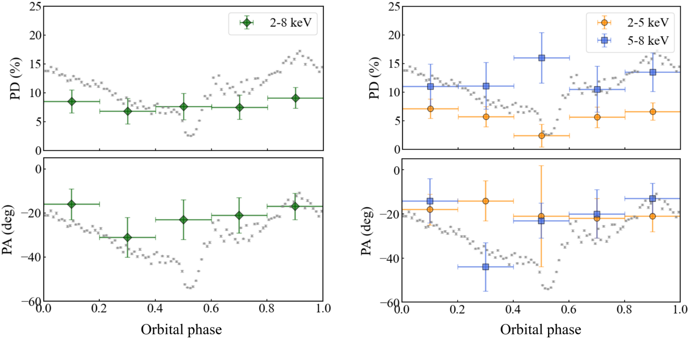<br />
图注：Orbital phase dependence of polarization for 4U 1822-37 obtained with the PCUBE algorithm. Left panels: PD (top panel) and PA (bottom panel) in the 2--8~keV band. Right panels: PD (top panel) and PA (bottom panel) in the 2--5~keV and 5--8~keV bands. The gray points show the profile of IXPE orbital light curve.<br />
对应解读：对应“相位分辨 PD 曲线”“相位分辨 PA 曲线”以及关键图表逐图导读中的图4、图5。<br />
入选理由：这是最直接支撑论文核心结论的图，集中展示轨道相位上的 PD 和 PA，并且同时给出 2--8 keV、2--5 keV 与 5--8 keV 的相位分辨结果。日报重点讨论的软能段食内 PD 降到与零一致、硬能段食附近 PD 边际升高到高值、以及食前 PA 约 30° 旋转，都需要依赖这张图判断误差条、相位 bin 和与轨道光变的对应关系。<br />
来源与置信度：\(arxiv_source\)；high；\(arxiv_source\) / \(WU_4U_1822_37.tex\):figure[6]</p>
<p><strong>Fig04</strong><br />
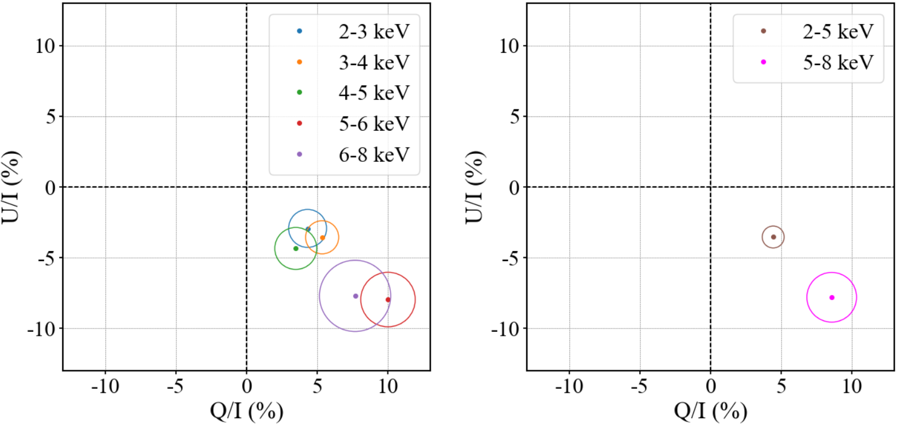<br />
图注：Energy dependence of the normalized Stokes parameters Q/I and U/I obtained by the PCUBE algorithm.<br />
对应解读：对应“全能段和分能段 PD/PA 图”“q-u 置信诊断”以及模型拟合段落中关于 Stokes 参数 q、u 的讨论。<br />
入选理由：虽然候选图中没有真正的 q-u 置信椭圆图，但 Fig04 给出了随能量变化的归一化 Stokes 参数 Q/I 和 U/I，是判断能量依赖偏振的最接近原始诊断图。它比只看 PD/PA 点估计更接近日报强调的 Stokes 空间显著性，可用于检验软硬能段偏振差异是否来自 q、u 的真实变化。<br />
来源与置信度：\(arxiv_source\)；high；\(arxiv_source\) / \(WU_4U_1822_37.tex\):figure[4]</p>
<p><strong>Fig03</strong><br />
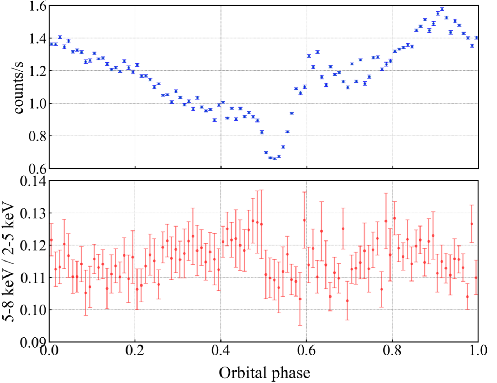<br />
图注：Top panel: Orbital light curve of 4U 1822-37 folded at the 5.7~hr orbital period, derived from the IXPE data combining the two DUs. Bottom panel: The corresponding hardness ratio.<br />
对应解读：对应“轨道折叠光变曲线”和关键图表逐图导读中的图3。<br />
入选理由：该图展示 IXPE 数据按 5.7 小时轨道周期折叠后的光变曲线和硬度比，是解读相位分辨偏振前必须查看的上下文。伴星食位置、食前可能的吸收或凹陷结构、硬度随相位变化，都直接影响 Fig06 中 PD/PA 变化是否应归因于几何遮挡或散射结构。<br />
来源与置信度：\(arxiv_source\)；high；\(arxiv_source\) / \(WU_4U_1822_37.tex\):figure[3]</p>
<p><strong>Fig05</strong><br />
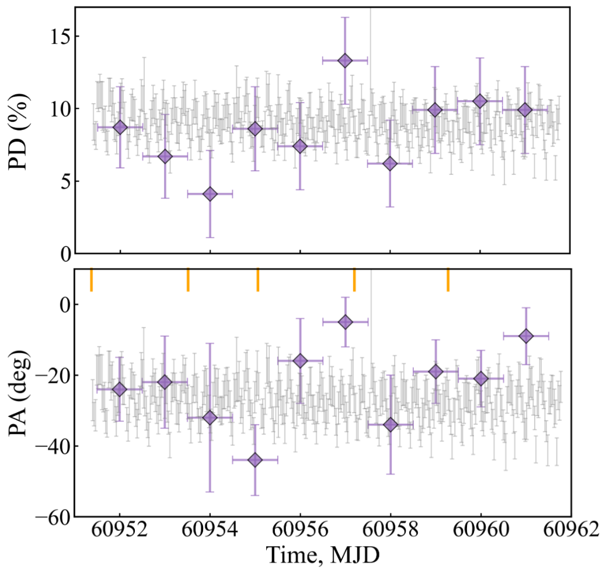<br />
图注：Top panel: PD as a function of time during the IXPE observation obtained by the PCUBE algorithm. Bottom panel: PA as a function of time. The gray error bars show the profile of the IXPE light curve. The orange regions in the bottom panel mark the Swift-XRT observation intervals.<br />
对应解读：对应“Swift-XRT 光谱参数随时间或相位变化图”中关于三天尺度 PA 旋转的部分，以及关键图表逐图导读中的图6相关内容。<br />
入选理由：这张图给出 IXPE 观测期间 PD 和 PA 随时间变化，并标出 Swift-XRT 观测区间，是检查 PA 约 40° 时间尺度旋转与 Swift 同时段观测是否对应的关键图。尽管它不直接显示 \(N_H\) 参数，但它提供了 PA 时间演化和 Swift 覆盖窗口，是日报中吸收增强与 PA 旋转关联讨论的必要支撑。<br />
来源与置信度：\(arxiv_source\)；high；\(arxiv_source\) / \(WU_4U_1822_37.tex\):figure[5]</p>
<p><strong>Fig01</strong><br />
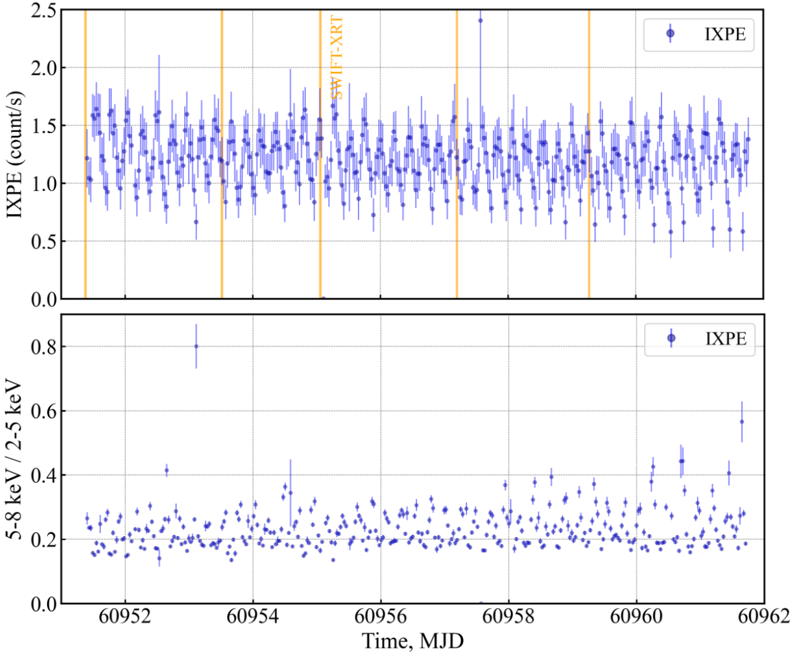<br />
图注：Top panel: IXPE light curve of 4U 1822-37 in the 2--8~keV band, combining the two DUs, binned with a time interval of 2500~s. The orange shaded regions mark the Swift-XRT observation intervals. Bottom panel: Time evolution of the hardness ratio derived from the IXPE data, using the same binning as the light curve.<br />
对应解读：对应关键图表逐图导读中的图1，即 IXPE 与 Swift-XRT 的观测时间轴、光变和观测窗口覆盖。<br />
入选理由：Fig01 显示 IXPE 2--8 keV 光变、硬度比以及 Swift-XRT 观测区间，可用于确认 IXPE 长时间覆盖和 Swift 同时观测窗口。它对判断 44 个轨道周期覆盖、非均匀曝光和三天尺度变化的观测背景很重要，但相较 Fig06 和 Fig04 对偏振结论的直接性稍弱。<br />
来源与置信度：\(arxiv_source\)；high；\(arxiv_source\) / \(WU_4U_1822_37.tex\):figure[1]</p>
<p><strong>Fig07</strong><br />
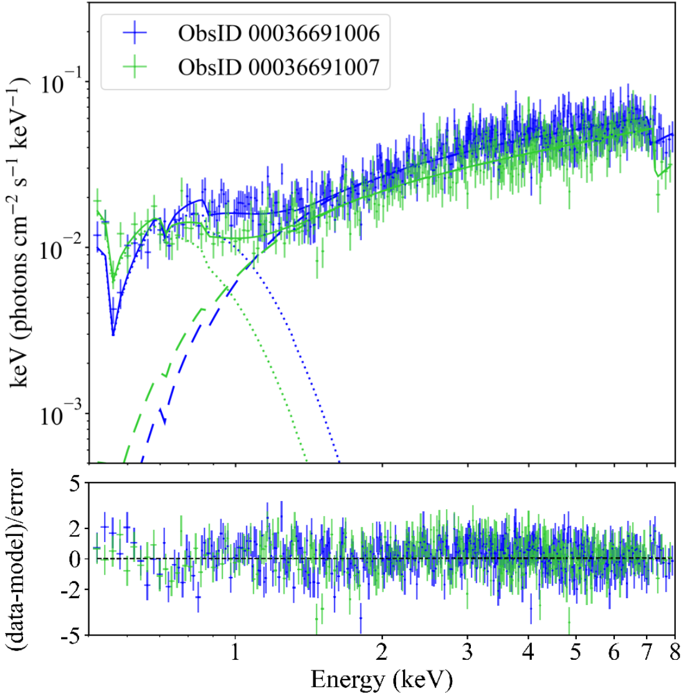<br />
图注：Spectral energy distribution of the third (ObsID 00036691006) and the fourth (ObsID 00036691007) Swift-XRT observations. The different spectral model components are reported as dotted lines for \(\texttt{bremss},\) dashed lines for \(\texttt{powerlaw},\) and solid lines for the total model. The bottom panel shows the residuals between the data and the best fit.<br />
对应解读：对应模型拟合段落中 Swift-XRT 光谱拟合、模型分量和残差诊断。<br />
入选理由：Fig07 展示 Swift-XRT 第三、第四次观测的谱能分布、bremss 与 powerlaw 模型分量以及拟合残差，是候选图中唯一直接包含光谱模型线和残差的图。它能支撑日报关于 Swift 光谱拟合为吸收和连续谱解释提供物理语境的部分，但图注未说明 \(N_H\) 随时间变化，因此与 PA--\(N_H\) 关联的对应性不如偏振图直接。<br />
来源与置信度：\(arxiv_source\)；high；\(arxiv_source\) / \(WU_4U_1822_37.tex\):figure[7]</p>
<h4 id="_122">强相关工作</h4>
<p>这篇工作属于 IXPE 对 X 射线双星偏振观测的同类研究，但目标源 4U 1822-37 的高倾角和吸积盘冕性质使它不同于许多普通低质量 X 射线双星。可比较的方向包括：IXPE 对中子星 LMXB 的偏振测量、黑洞 X 射线双星高倾角态的偏振、以及 ADC 源的历史光谱和食观测。建议检索关键词包括 “IXPE low-mass X-ray binary polarization”、“4U 1822-37 accretion disk corona”、“ADC source X-ray polarization”、“phase-resolved X-ray polarimetry binary eclipse”。</p>
<p>理论上，这篇文章与电子散射偏振、吸积盘大气和盘冕辐射转移的基础工作相连，也与“偏振角是否追踪盘轴”这一常见简化存在张力。若未来三维辐射转移模型发现轴对称盘冕不足以产生观测到的 \(\mathrm{PA}\) 旋转，就会强化盘缘凸起、气流撞击点或团块的解释。相反，如果更长曝光观测发现硬能段食内 \(\mathrm{PD}\) 升高不稳健，那么本文关于硬散射区的部分解释需要收缩为候选图像。检索相反或替代观点时可用 “partial covering 4U 1822-37”、“disk bulge LMXB absorption”、“Compton scattering polarization accretion disk corona”。</p>
<p><strong>同一事件 / 同类源线索</strong>：</p>
<ul>
<li><a href="https://arxiv.org/abs/2608.24292">https://arxiv.org/abs/2608.24292</a></li>
<li><a href="https://simbad.cds.unistra.fr/simbad/sim-id?Ident=4U%201822-37">https://simbad.cds.unistra.fr/simbad/sim-id?Ident=4U%201822-37</a></li>
</ul>
<p><strong>相似工作</strong>：</p>
<ul>
<li><a href="https://arxiv.org/abs/2608.24292">https://arxiv.org/abs/2608.24292</a></li>
</ul>
<p><strong>基础理论 / 方法工作</strong>：</p>
<ul>
<li><a href="https://arxiv.org/abs/1409.6214">https://arxiv.org/abs/1409.6214</a></li>
<li><a href="https://arxiv.org/abs/2109.02772">https://arxiv.org/abs/2109.02772</a></li>
</ul>
<p><strong>相反观点 / 张力线索</strong>：</p>
<p>（未提供）</p>
</details>
<h3 id="12-across-the-universe-gw231123-as-a-magnified-and-diffracted-black-hole-merger">12. Across the Universe: GW231123 as a magnified and diffracted black hole merger</h3>
<ul>
<li>来源：arXiv / astro-ph.HE</li>
<li>链接：https://arxiv.org/abs/2512.17631v2</li>
<li>作者：Srashti Goyal, Hector Villarrubia-Rojo, Miguel Zumalacarregui</li>
<li>评分：novelty 8/10，importance 8/10，relevance 7/10，final 8.65/10</li>
<li>推荐理由：将GW231123解释为受宏透镜放大和微透镜衍射共同影响的超大质量BBH事件，若成立会显著改变源质量、自旋和暗透镜解释；虽偏GW，但多信使致密天体背景下值得阅读。</li>
</ul>
<p><strong>中文题目</strong>：穿越宇宙：把 GW231123 解释为被放大且发生衍射的黑洞并合</p>
<p><strong>做了什么</strong>：这篇论文重新分析了异常“大质量”的双黑洞事件 GW231123：它在探测器系中看起来对应总质量约 \(190\text{--}265\,M_\odot\)，高到会触及恒星演化和成对不稳定质量隙的解释压力。作者提出并检验一种透镜解释：宏观透镜势负责整体放大，小尺度致密物体作为微透镜对引力波波前产生波动光学衍射。用“嵌入式点质量透镜”同时拟合源参数和透镜参数后，数据对透镜模型有一定偏好，伪警概率低于 \(1\%\)，约为 \(2.6\sigma\)。在该解释下，源本征总质量降到约 \(100\text{--}180\,M_\odot\)，所需自旋也更温和，不同波形模型之间的张力减小。</p>
<p><strong>为什么重要</strong>：如果这个解释成立，GW231123 不一定是一个真正极端重的双黑洞，而可能是一个较普通但被强透镜和微透镜共同“伪装”的事件。这直接影响我们如何使用引力波事件推断黑洞质量函数、成对不稳定质量隙、宇宙学红移分布以及透镜化事件率。更重要的是，论文尝试把宏观放大和微透镜衍射放在同一个参数化框架里拟合，而不是只问“有没有一个孤立点质量透镜”。这对未来高信噪比引力波事件的透镜识别方法很关键。</p>
<p><strong>理论 / 观测 / 仪器方法价值</strong>：对理论端，它给出一种把波动光学微透镜、宏观透镜势和双黑洞波形联合起来的实际建模路线；对观测端，它说明仅凭高探测器系质量和波形模型张力，不能简单断言源端黑洞极端；对方法端，它展示了用贝叶斯因子、背景注入和波形近似交叉检验来评估透镜假说的流程。论文还给出微透镜质量、偏移、外部势强度与方向的重建，并指出结果仍受质量片退化影响。</p>
<p><strong>为什么应该关注</strong>：如果你关心第三代探测器时代的引力波宇宙学、黑洞质量谱、暗物质致密天体约束，或强透镜引力波的搜寻，这篇文章值得看。它不是简单声称“发现透镜化引力波”，而是提出一个具体、可复现、可被后续图像或重复事件检验的候选案例：宏观透镜还可能产生额外可探测像，作者估计概率约为 \(55\%\)。这意味着未来数据可以直接支持或推翻该解释。</p>
<details class="paper-detail">
<summary>展开详细解读：文章讲解、背景、理论、重点章节、图表与相关工作</summary>
<h4 id="_123">文章详细讲解</h4>
<p>科学问题：GW231123 的表观总质量非常高，若按无透镜模型解释，源端总质量会落在一个对恒星演化和黑洞形成通道很敏感的区间，并且可能需要较高自旋或较特殊的波形参数来协调不同波形近似之间的差异。引力波只直接测到红移后的质量尺度，若信号被引力透镜放大，距离会被低估，红移也会被误判，从而把一个更远、更轻的源误认为较近、更重的源。论文的核心问题是：GW231123 的“大质量”和波形细节，能否由宏观透镜放大加微透镜衍射共同解释？</p>
<p>作者怎么做：作者把双黑洞并合波形与一种嵌入式点质量透镜模型联合起来。这里的小尺度透镜不是孤立存在，而是放在一个外部宏观透镜势中，后者可用等效的会聚、剪切、方向等量描述。点质量透镜在引力波波长与透镜延迟时间可比较时会进入波动光学区，导致频率相关的放大因子和相位畸变；宏观势则控制整体放大、像的类型和微透镜所在局部环境。作者对源参数和透镜参数做贝叶斯推断，并与无透镜模型及孤立点质量透镜模型比较。</p>
<p>关键结果：数据对透镜模型给出正向偏好。作者通过背景分布或等价的伪警概率校准指出，观测到的贝叶斯因子对应的伪警概率低于 \(1\%\)，约为 \(2.6\sigma\) 证据强度。这不是发现级别，但足以说明透镜假说不能被当作边缘修正忽略。透镜化拟合把源端总质量从表观极端值拉回约 \(100\text{--}180\,M_\odot\)，并缓解不同波形 approximant 对质量和自旋的偏差。微透镜质量被重建在约 \(190\text{--}850\,M_\odot\) 的范围，且嵌入外部势后所需微透镜质量比孤立点质量透镜模型更低。</p>
<p>局限和下一步：论文的结论依赖透镜模型族、宏观势的局部近似、波形系统误差以及先验选择。作者也强调存在距离与投影密度之间的质量片退化，因此宏观放大和真实红移并非完全由单个引力波事件唯一确定。若假设宏观透镜是单个星系，作者可进一步推断总放大率和源红移约 \(0.7\text{--}2\)，并估计强透镜产生额外可探测像的概率约为 \(55\%\)。下一步最有力的检验包括：寻找时间延迟后的重复引力波像、定位潜在透镜星系、用更多波形族和注入回收实验检验贝叶斯因子背景，以及在群体层面评估类似候选事件是否过多或过少。</p>
<h4 id="_124">关键结果是怎么做出来的</h4>
<p>这篇文章最重要的证据链是：GW231123 在标准无透镜分析下显得过重，并且不同波形近似对源参数给出不够一致的推断；加入透镜后，既能解释振幅偏高，也能解释频率相关的波形畸变。样本本身是一个具体事件 GW231123，而不是大样本统计；因此论文的统计强度主要来自单事件似然提升、模型证据比较和伪警概率校准，而不是来自事件数累积。</p>
<p>数据选择上，作者围绕 LIGO 探测到的 GW231123 应变数据构建分析，比较无透镜双黑洞波形、孤立点质量透镜波形、以及嵌入外部宏观势的点质量透镜波形。被拟合的量包括双黑洞质量、自旋、距离、倾角、相位、并合时间等常规源参数，也包括微透镜质量、源相对微透镜的投影偏移、外部透镜势的大小和方向等透镜参数。关键不是简单改变一个振幅因子，而是在频域中加入复数放大因子，使振幅和相位都随频率变化。</p>
<p>显著性方面，作者报告透镜模型相对于无透镜模型的贝叶斯因子达到一个在背景中较少出现的水平，并给出伪警概率小于 \(1\%\)、约 \(2.6\sigma\) 的解释。这里需要注意：贝叶斯因子不是直接的 \(p\) 值，必须通过无透镜注入、背景事件或模型比较分布来校准“这样的证据强度在纯无透镜情况下多常见”。因此读者应重点查看论文中贝叶斯因子分布、背景校准方法和先验体积惩罚的说明。</p>
<p>支撑核心结论的图表应包括：源参数后验对比图，显示加入透镜后总质量和自旋如何移动；透镜参数后验图，显示微透镜质量和外部势参数是否有封闭约束；残差或匹配度比较图，说明透镜模型是否真正解释了相干波形结构，而不是吃掉噪声；以及模型证据或贝叶斯因子表，列出不同波形 approximant 与不同透镜模型的结果。若这些图中约束主要由先验边界给出，结论就会弱很多；若不同波形模型均偏好相近透镜参数，可信度会显著提高。</p>
<p>主要系统误差来自四类：第一，双黑洞波形系统误差，尤其是高质量、短信号、可能高自旋或进动时的模板不完备；第二，透镜模型系统误差，嵌入式点质量透镜是局部近似，不等价于完整星系加子结构模型；第三，噪声非高斯性，短暂 glitch 或校准误差可能模拟某些频率相关畸变；第四，先验选择，透镜质量、源位置、外部会聚和剪切的先验会影响证据。论文声称透镜能降低波形 approximant 之间的张力，这是一个重要稳健性检验，但读者仍应检查不同先验和不同数据片段下贝叶斯因子是否稳定。</p>
<details class="paper-subdetail">
<summary>展开背景、理论、公式、模型、章节和图表导读</summary>
<h4 id="_125">背景知识</h4>
<p>引力波双黑洞并合的质量测量有一个根本特点：波形的时间尺度主要给出红移后的质量，即源端质量乘以 \((1+z)\)。如果没有电磁对应体或独立红移，距离和红移依赖宇宙学模型以及信号振幅。透镜放大会提高观测振幅，使源看起来更近；在给定观测质量尺度下，更近意味着更低红移，从而推得更高的源端质量。因此，被透镜放大的远处普通黑洞，可能被误认为近处异常大质量黑洞。</p>
<p>GW231123 的兴趣点在于它的表观质量极高。恒星演化理论预期，成对不稳定超新星会在某些质量区间抑制黑洞形成，导致所谓质量隙。虽然层级并合、低金属丰度环境、动力学俘获等通道可以产生较大质量黑洞，但每一个极端事件都会给黑洞质量函数和形成率模型带来压力。透镜解释提供了另一条路径：不是改变形成物理，而是改变传播路径。</p>
<p>引力波透镜不同于电磁透镜的一点是，低频引力波的波长可与透镜引起的时间延迟相关尺度相当，因而不能总用几何光学处理。小质量透镜，例如恒星、黑洞、致密暗物质团块，会对信号产生衍射和干涉，表现为频率相关的放大和相位偏移。对于 LIGO 频段，几十到上千 \(M_\odot\) 的透镜质量正好可能留下可测的波动光学指纹。</p>
<p>这个问题现在值得重新看，是因为探测到的双黑洞事件越来越多，其中有些事件位于高质量端或显示波形模型张力。随着信噪比提高，透镜不再只是“振幅整体变大”的问题，而会进入波形相位拟合。未来第三代探测器会看到更远处的双黑洞，并且强透镜概率显著上升，因此现在建立可检验的透镜候选识别方法很重要。</p>
<p>常见误区有几个。第一，看到高质量事件并不自动意味着透镜，因为天体物理通道本身也可能产生重黑洞。第二，看到透镜模型贝叶斯因子较大也不等于发现透镜，因为额外参数可能吸收噪声或波形系统误差。第三，微透镜质量后验不是微透镜真实质量的直接读数，它与红移、宏观透镜局部环境和质量片退化相关。第四，没有看到电磁透镜星系也不能立即排除透镜，因为引力波定位区域通常很大，宏观透镜像也可能较暗或时间延迟较长。</p>
<h4 id="_126">基础理论 / 方法脉络</h4>
<p>基本物理图像可以从两层透镜开始。宏观透镜通常是星系或星系团，它改变光线或引力波传播的 Fermat 势，形成整体放大、多重像和时间延迟。微透镜则是宏观透镜星系中的恒星、黑洞、残骸或其他小尺度致密物体，它在某个宏观像附近叠加局部扰动。对电磁光学而言很多情况下可用几何光学；对 LIGO 频段引力波，微透镜造成的路径时间差可能与波周期可比，因此必须使用波动光学放大因子。</p>
<p>无透镜双黑洞波形在频域可写成源内禀参数和传播距离的函数。透镜化后，观测波形近似是无透镜波形乘以一个复数放大因子。这个因子既改变振幅，也改变相位，并且一般依赖频率。若只存在宏观透镜且在几何光学极限，每个像基本表现为常数放大、相位 Morse 指数和到达时间偏移；若存在微透镜波动效应，则会出现平滑的频率调制。</p>
<p>本文的关键模型假设是“嵌入式点质量透镜”：把一个点质量微透镜放入外部透镜势中。外部势可通过局部会聚和剪切描述，它们改变临界曲线附近的放大性质，也改变微透镜的等效 Einstein 半径、像结构和时间延迟。这样做比孤立点质量透镜更接近真实强透镜星系中的微透镜环境，但仍是局部模型，并不完整重建整座透镜星系。</p>
<p>关键观测量包括红移质量、有效距离、频域相位、匹配滤波信噪比以及残差结构。透镜放大与源距离强烈退化：同样的振幅可由更近的无透镜源或更远但被放大的源产生。波动光学微透镜的重要价值在于提供频率相关结构，部分打破“纯振幅退化”。不过这种结构也可能与自旋进动、高阶模、偏心率、波形系统误差或非平稳噪声产生混淆。</p>
<p>统计方法上，论文比较不同模型的贝叶斯证据，而不是只看最佳拟合似然。透镜模型参数更多，会受到先验体积惩罚；只有当频率相关畸变带来的似然提升足够大，贝叶斯因子才会支持透镜。读者应关注后验是否集中、残差是否减少、不同波形 approximant 是否给出一致结论，以及背景校准是否说明这样的贝叶斯因子不容易由无透镜噪声偶然产生。</p>
<h4 id="_127">公式与推导</h4>
<p>第一步是红移质量关系。引力波相位主要测到探测器系质量，源端质量与红移满足</p>
<div class="math-display">\[M_{\rm det}=(1+z)M_{\rm src}.\]</div>
<p>这里 \(M_{\rm det}\) 是探测器系质量，\(M_{\rm src}\) 是源端质量，\(z\) 是宇宙学红移。若透镜放大导致距离被低估，推断的 \(z\) 会偏低，从而把 \(M_{\rm src}\) 推高。</p>
<p>第二步是无透镜振幅标度。频域 inspiral 的主导振幅近似满足</p>
<div class="math-display">\[\tilde h_0(f)\propto \frac{\mathcal{M}_{z}^{5/6}}{D_L} f^{-7/6} e^{i\Psi(f)},\]</div>
<p>其中 \(\mathcal{M}_{z}=(1+z)\mathcal{M}_{\rm src}\) 是红移啁啾质量，\(D_L\) 是光度距离，\(f\) 是频率，\(\Psi(f)\) 是相位。透镜首先会和 \(D_L\) 发生退化。</p>
<p>第三步是透镜化波形。波动光学中观测波形可写为</p>
<div class="math-display">\[\tilde h_L(f)=F(f;\boldsymbol{\lambda}_L)\,\tilde h_0(f;\boldsymbol{\theta}_s),\]</div>
<p>其中 \(F\) 是复数放大因子，\(\boldsymbol{\lambda}_L\) 是透镜参数，\(\boldsymbol{\theta}_s\) 是源参数。若 \(F\) 随 \(f\) 变化，透镜会留下振幅和相位调制，而不仅是整体增亮。</p>
<p>第四步是点质量透镜的无量纲频率。常用定义为</p>
<div class="math-display">\[w=8\pi \frac{G M_L(1+z_L)}{c^3} f,\]</div>
<p>其中 \(M_L\) 是透镜质量，\(z_L\) 是透镜红移，\(G\) 是引力常数，\(c\) 是光速。当 \(w\ll 1\) 时衍射洗掉几何像结构；当 \(w\gg 1\) 时趋向几何光学。</p>
<p>第五步是波动光学放大因子的衍射积分形式：</p>
<div class="math-display">\[F(w,\boldsymbol{y})=\frac{w}{2\pi i}\int d^2\boldsymbol{x}\,\exp\left[iw T(\boldsymbol{x},\boldsymbol{y})\right].\]</div>
<p>这里 \(\boldsymbol{x}\) 是透镜平面角位置，\(\boldsymbol{y}\) 是源位置，\(T\) 是无量纲 Fermat 时间延迟。这个式子说明观测信号是所有路径相干叠加的结果。</p>
<p>第六步是嵌入外部势后的 Fermat 势。局部可写为</p>
<div class="math-display">\[T(\boldsymbol{x},\boldsymbol{y})=\frac{1}{2}|\boldsymbol{x}-\boldsymbol{y}|^2-\ln|\boldsymbol{x}|-\frac{1}{2}\kappa |\boldsymbol{x}|^2-\frac{1}{2}\gamma\left(x_1^2-x_2^2\right),\]</div>
<p>其中 \(\kappa\) 是外部会聚，\(\gamma\) 是外部剪切，\(x_1\) 与 \(x_2\) 是沿剪切主轴的坐标。点质量项 \(-\ln|\boldsymbol{x}|\) 描述微透镜，后两项描述宏观透镜局部势。</p>
<p>第七步是几何光学极限。在 \(w\gg 1\) 时，积分可由驻相点近似为</p>
<div class="math-display">\[F(f)\simeq \sum_j |\mu_j|^{1/2}\exp\left[2\pi i f\Delta t_j-i\pi n_j\right],\]</div>
<p>其中 \(\mu_j\) 是第 \(j\) 个像的放大率，\(\Delta t_j\) 是相对时间延迟，\(n_j\) 是 Morse 相位指标。微透镜波动效应可看作从这个极限向低 \(w\) 的平滑过渡。</p>
<p>第八步是放大率与距离退化。若只有整体放大 \(\mu\)，则</p>
<div class="math-display">\[D_{L,\rm inf}=\frac{D_{L,\rm true}}{\sqrt{\mu}}.\]</div>
<p>这里 \(D_{L,\rm inf}\) 是按无透镜模型推断的距离，\(D_{L,\rm true}\) 是真实距离。因此较大的 \(\mu\) 会使远处源看起来像近处源。</p>
<p>第九步是似然。给定探测器噪声功率谱密度 \(S_n(f)\)，高斯噪声下</p>
<div class="math-display">\[\ln \mathcal{L}=-\frac{1}{2}\langle d-h|d-h\rangle +{\rm const},\quad \langle a|b\rangle=4\,\Re\int_{f_{\min}}^{f_{\max}}\frac{a^*(f)b(f)}{S_n(f)}df.\]</div>
<p>其中 \(d\) 是数据，\(h\) 是模型波形。透镜模型若真实存在，应显著降低相干残差。</p>
<p>第十步是模型比较。贝叶斯因子为</p>
<div class="math-display">\[\mathcal{B}_{L/U}=\frac{Z_L}{Z_U}=\frac{\int d\boldsymbol{\theta}_L\,\mathcal{L}(d|\boldsymbol{\theta}_L,L)\pi(\boldsymbol{\theta}_L|L)}{\int d\boldsymbol{\theta}_U\,\mathcal{L}(d|\boldsymbol{\theta}_U,U)\pi(\boldsymbol{\theta}_U|U)}.\]</div>
<p>这里 \(Z_L\) 和 \(Z_U\) 分别是透镜模型与无透镜模型的证据，\(\pi\) 是先验。论文报告的伪警概率就是在无透镜背景下评估观测到的 \(\mathcal{B}_{L/U}\) 有多罕见。</p>
<h4 id="_128">模型拟合 / 应用方法</h4>
<p>这类分析的拟合对象不是单一曲线，而是多探测器应变时间序列或频域数据。源参数包括红移质量、自旋、天空位置、倾角、极化角、相位、并合时间和距离；透镜参数包括微透镜质量、源相对微透镜的无量纲位置、外部会聚或等效势强度、剪切方向以及宏观放大相关参数。论文的核心改动是把无透镜波形乘以频率相关的复放大因子，然后进行联合贝叶斯采样。</p>
<p>似然通常建立在噪声近似平稳高斯的内积上，但实际分析必须面对非高斯噪声和校准误差。贝叶斯证据会自动惩罚更大的透镜参数空间，因此一个透镜模型只在似然提升超过先验体积惩罚时才会被偏好。读者应关注证据是否由少数参数边界驱动，后验是否多峰，以及透镜参数与自旋、质量比、高阶模之间是否存在替代解释。</p>
<p>残差诊断非常关键。若透镜模型只是把距离调小或调大，那么它没有真正证明微透镜衍射；关键应是频率相关相位和振幅结构能否减少多探测器相干残差。理想情况下，透镜模型在不同探测器中解释的是同一相干波形畸变，而不是某一个探测器中的局部噪声起伏。论文声称加入透镜后不同波形 approximant 的推断更一致，这相当于一种模型稳健性证据。</p>
<p>主要退化关系包括：整体放大 \(\mu\) 与光度距离 \(D_L\) 的退化；微透镜质量 \(M_L\) 与透镜红移 \((1+z_L)\) 的乘积退化；外部会聚 \(\kappa\) 与源距离的质量片退化；源位置与剪切方向之间的几何退化；以及自旋进动或高阶模与透镜相位调制之间的形状退化。若不引入宏观透镜星系假设，单个引力波事件很难完全打破这些退化。</p>
<p>实际应用上，这种模型可用于三类任务。第一，对异常高质量事件进行再解释，评估其是否真挑战黑洞形成理论。第二，在引力波事件目录中搜寻波动光学微透镜指纹，约束中等质量黑洞或致密暗物质团块。第三，为强透镜重复像搜寻提供先验，例如预测后续像的时间延迟、相对放大和可能信噪比。模型可能失败的情形包括透镜真实质量分布远离点质量、宏观势局部近似不充分、事件信噪比不足以支撑额外参数，或波形系统误差被误识别为衍射。</p>
<h4 id="_129">重点章节 / 结果段落怎么读</h4>
<p>数据与基准无透镜分析：读者应先看作者如何描述 GW231123 的原始异常性，包括探测器系总质量、源端质量推断、自旋需求以及不同波形 approximant 的差异。这里决定了为什么需要考虑透镜，而不是直接进入复杂透镜模型。</p>
<p>透镜模型章节：重点看“嵌入式点质量透镜”的定义。需要分清孤立点质量透镜、外部会聚和剪切、宏观放大、质量片退化这些概念。特别要看作者如何把透镜放大因子接到双黑洞频域波形上，以及哪些参数被采样、哪些参数通过假设固定或重参数化。</p>
<p>贝叶斯推断和模型比较章节：重点看先验、采样方法、证据计算和伪警概率校准。透镜模型参数更多，若先验设得过宽会压低证据，设得过窄则可能人为提高证据。读者应检查作者是否用无透镜注入或背景分布说明 \(2.6\sigma\) 这个数字的来源。</p>
<p>结果章节：应按源参数后验、透镜参数后验、波形 approximant 对比、残差或拟合质量四条线阅读。最重要的问题是：透镜模型是否同时降低质量、自旋和波形张力，而不是只改善其中一项。</p>
<p>讨论与天体物理解释章节：重点看作者如何从局部透镜参数推到微透镜性质和宏观透镜星系假设。微透镜质量约 \(190\text{--}850\,M_\odot\) 会引出中等质量黑洞、恒星残骸群或暗物质起源的讨论，但这些解释受事件率和宏观透镜环境约束。</p>
<p>稳健性检验或附录：如果论文有附录，建议优先检查不同波形模型、不同先验、孤立与嵌入式点质量透镜对比、背景贝叶斯因子分布、以及质量片退化处理。这些内容比摘要中的显著性数字更能决定结论是否可靠。</p>
<h4 id="_130">建议重点查看的图表</h4>
<ol>
<li>
<p>无透镜与透镜模型的源参数后验对比图：看总质量、质量比、自旋和距离如何移动，尤其是 \(M_{\rm src}\) 是否从极端区间稳定降到约 \(100\text{--}180\,M_\odot\)。</p>
</li>
<li>
<p>透镜参数 corner 图：看微透镜质量、源偏移、外部势强度和方向是否有真正约束，还是贴着先验边界。还要看参数之间是否强退化。</p>
</li>
<li>
<p>贝叶斯因子或模型证据表：比较无透镜、孤立点质量透镜、嵌入式点质量透镜，以及不同波形 approximant 下的证据。关键是偏好是否跨模型稳健。</p>
</li>
<li>
<p>伪警概率校准图：看背景分布中观测贝叶斯因子的位置。若背景尾部估计样本不足，\(<1\%\) 的说法就需要谨慎。</p>
</li>
<li>
<p>频域放大因子或波形比值图：看 \(|F(f)|\) 和相位偏移随频率的变化是否落在 LIGO 最敏感频段，而不是只在噪声主导频段起作用。</p>
</li>
<li>
<p>残差或匹配度诊断图：看透镜模型是否减少多探测器相干残差，尤其是在并合和环降附近。</p>
</li>
<li>
<p>宏观透镜解释图或预测图：如果有，检查源红移 \(z\)、总放大率 \(\mu\) 和额外像可探测概率之间的关系，理解 \(55\%\) 预测对宏观透镜假设的依赖。</p>
</li>
</ol>
<h4 id="_131">关键图表逐图导读</h4>
<p>图 1：通常应是事件在质量平面或源参数空间中的位置。横轴可能是一个分量质量，纵轴可能是另一个分量质量，或横轴为总质量、纵轴为有效自旋。数据点或等高线应比较无透镜和透镜模型后验。主要结论是透镜化解释把 GW231123 从极端高质量区域移向既有双黑洞群体。读图陷阱是不要把探测器系质量和源端质量混在一起；透镜影响的是距离与红移推断，从而改变源端质量。</p>
<p>图 2：可能是透镜模型示意或放大因子随频率变化图。横轴应为频率 \(f\)，纵轴可能是 \(|F(f)|\)、相位偏移或波形比值。模型线展示微透镜衍射如何在 LIGO 敏感频段留下平滑振荡。主要结论是该模型不只是整体放大，而是改变波形形状。陷阱是高频端和低频端噪声较大，不能把噪声主导频段的结构当作强证据。</p>
<p>图 3：应重点看透镜参数后验 corner 图。对角线是一维边缘分布，非对角线是二维置信区域。关键坐标包括微透镜质量、源偏移、外部势强度和方向。主要结论是嵌入宏观势后微透镜质量可降到约 \(190\text{--}850\,M_\odot\)。陷阱是若后验沿着 \(M_L\)、\(\kappa\)、\(\gamma\) 或距离方向拉成长尾，说明单事件并未完全确定透镜物理。</p>
<p>图 4：应是模型证据或贝叶斯因子比较。横轴可能列出不同模型或波形 approximant，纵轴为 \(\ln \mathcal{B}\) 或证据差。主要结论是嵌入式点质量透镜比无透镜模型更受数据支持，并且可能优于孤立点质量透镜。陷阱是贝叶斯因子依赖先验，不能只看最高似然；还要看同一偏好是否在多个波形模型中重复出现。</p>
<p>图 5：应是伪警概率或背景分布图。横轴为贝叶斯因子或某个检验统计量，纵轴为背景累计概率或事件数。观测值通常以竖线标出。主要结论是观测贝叶斯因子在无透镜背景中少见，对应伪警概率 \(<1\%\) 或约 \(2.6\sigma\)。陷阱是尾部分布常受有限背景样本影响，外推方式和注入样本选择会改变显著性。</p>
<p>图 6：如果论文给出宏观透镜预测，应查看红移、总放大率和额外像可探测概率图。横轴可能为源红移或宏观透镜参数，纵轴为放大率、时间延迟或探测概率。主要结论是在单星系宏观透镜假设下，源可位于 \(z\sim0.7\text{--}2\)，并有约 \(55\%\) 概率产生额外可探测像。陷阱是这些预测不是纯数据后验，而是引入宏观透镜星系假设后的条件推断。</p>
</details>
<h4 id="_132">论文原图 / 可嵌入图片</h4>
<p><strong>Fig02</strong><br />
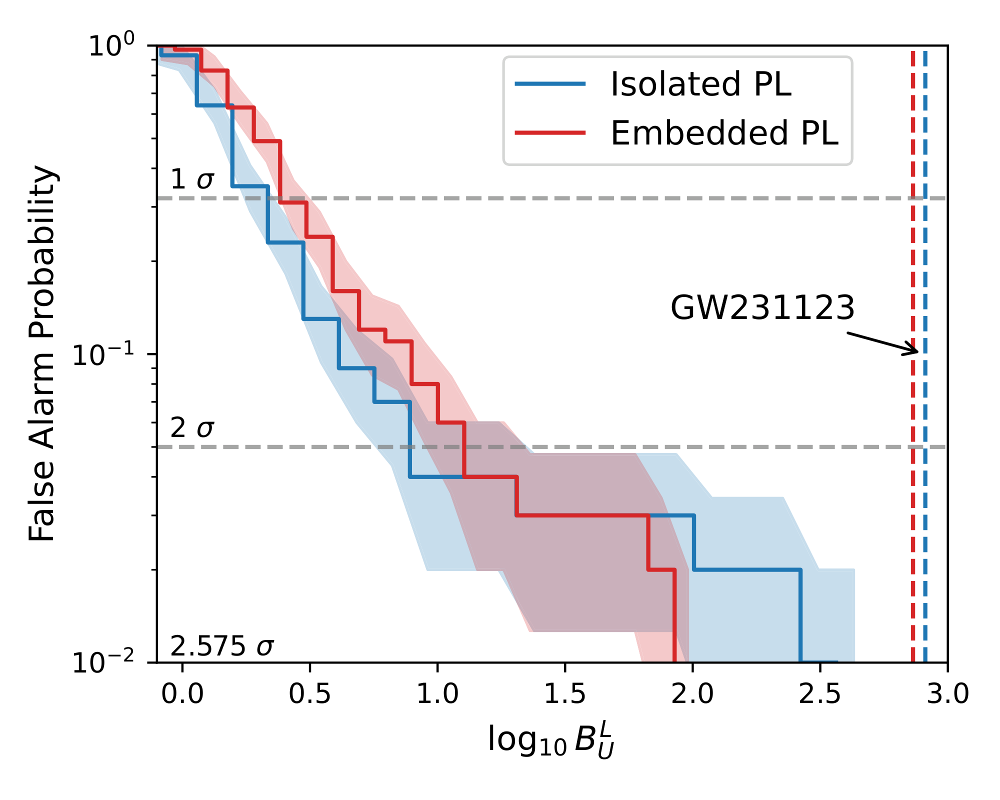<br />
图注：False alarm probability of observing Bayes Factors from GW231123-like unlensed signals. The curves are generated by analysing a hundred unlensed NRsur signals injected into Gaussian noise with lensed and unlensed hypotheses. The shaded region shows the Poisson error. Horizontal lines show the corresponding confidence levels. The GW231123 Bayes factor lies outside the distribution, with FAP $<1\%$ and significance $\gtrsim 2.6 \sigma$.<br />
对应解读：“建议重点查看的图表”第4项与“关键图表逐图导读”图5：伪警概率校准图，检验观测贝叶斯因子在无透镜背景分布中的位置。<br />
入选理由：这张图直接对应论文最关键的显著性声明：GW231123 的透镜模型贝叶斯因子在无透镜注入背景之外，对应 FAP &lt;1% 和约 2.6σ。它比一般示意图更能支撑日报中关于‘透镜偏好是否可靠、尾部统计是否有限’的重点解读。<br />
来源与置信度：\(arxiv_source\)；high；\(arxiv_source\) / main.tex:figure[2]</p>
<p><strong>Fig04</strong><br />
<br />
图注：GW231123 total source-frame mass $M^{\rm src}_{\rm tot}$ versus redshift $z$, as a lensed black hole merger. Contours indicate 68, 95, and 99\% credible regions for different waveform and lensing models: unlensed (gray filled; Phenom and NRSur), diffracted (blue unfilled; NRSur), and magnified+diffracted by a singular isothermal macrolens (red filled; NRSur). Circles indicate median values of GWTC-4 events \(\citep{gwtc4catalog}.\) The black curve marks the approximate detector horizon for O4. Unlike the unlensed interpretation, which requires unusually high masses relative to the GWTC-4 population \(\citep{gwtc4pop},\) lensing analyses harmonize the event with the broader distribution of binary black holes.<br />
对应解读：“建议重点查看的图表”第1项与“关键图表逐图导读”图1：无透镜与透镜模型下源端总质量、红移和既有 BBH 群体的对比。<br />
入选理由：这张图直接展示透镜化解释如何把 GW231123 从无透镜下的极端高源端质量区域移回更常见的双黑洞质量—红移分布，是理解‘总质量降到约100--180太阳质量’这一核心物理结论的最佳图。<br />
来源与置信度：\(arxiv_source\)；high；\(arxiv_source\) / main.tex:figure[4]</p>
<p><strong>Fig03</strong><br />
<br />
图注：1D marginalised posterior distributions of $(i)$ detector frame chirp mass $\mathcal{M}_c^{\rm det}$, mass ratio $q$ and projected spin components $\chi_1$ and $\chi_2$ (perpendicular to the binary orbital plane) under unlensed and lensed hypotheses with different waveforms. The posteriors are in agreement for all the waveform models after incorporating lensing by an isolated or embedded point mass. $(ii)$ luminosity distance of the source $d_L$, and parameters of the point mass lens (redshifted lens mass $M_L(1+z_L)$, impact parameter $y$) without and with external potential (assuming $\kappa = \gamma$). The posteriors under both lensing hypotheses are consistent among the three waveforms.<br />
对应解读：“建议重点查看的图表”第1、2、3项及“模型拟合”段落：源参数、距离和点质量透镜参数在无透镜、孤立点质量透镜、嵌入式点质量透镜及不同波形 approximant 下的后验对比。<br />
入选理由：该图同时覆盖质量比、自旋、探测器系啁啾质量、光度距离、红移透镜质量和 impact parameter，并比较多个波形模型。它最适合支撑日报中‘加入透镜后不同 waveform approximant 推断更一致、所需高自旋减弱、透镜参数有一定约束’的讨论。<br />
来源与置信度：\(arxiv_source\)；high；\(arxiv_source\) / main.tex:figure[3]</p>
<p><strong>Fig06</strong><br />
<br />
图注：Amplification factor with the best-fit lensing parameters for the three modes with two images shown in Fig. \(\ref{fig:time_corner}.\) The reference likelihood value is the unlensed case. The wave-optics contribution (i.e. full result minus the geometric optics contribution) is represented with a lighter shade. In all three cases, the diffractive feature at $t\sim 20$ ms (left) is very important (note that the feature is defined in lensing time delay, not detector time). The interference between the diffractive feature and the main image produces the main oscillatory pattern observed in $F(f)$ (right), while the secondary image introduces additional wiggles.<br />
对应解读：“建议重点查看的图表”第5项与“关键图表逐图导读”图2：频域放大因子、波动光学贡献和不同微透镜模式的波形调制。<br />
入选理由：这张图明确给出最佳拟合透镜参数下的放大因子和波动光学贡献，展示衍射特征如何在时间延迟和频域 |F(f)| 中产生振荡结构。它直接支撑‘模型不只是整体放大，而是改变波形形状’这一关键解读。<br />
来源与置信度：\(arxiv_source\)；high；\(arxiv_source\) / main.tex:figure[6]</p>
<p><strong>Fig09</strong><br />
<br />
图注：GW231123 source-frame component masses versus total macro-magnification $\mu$ (embedded PL, NRSur). Lines and shaded bands show the median and 95\% intervals as functions of $\mu$, obtained from mass-sheet transformations; the grey region marks the pair-instability mass gap. Contours show the 95\% c.l.\ two-dimensional posteriors of $(\mu, m_{1,2})$ under the $\kappa=\gamma$ (SIS) closure, which gives $\mu = 5.0^{+12.0}_{-3.9}$ (95\% c.l.). The dot marks $\mu\simeq23$, where the median primary mass falls below the gap.<br />
对应解读：“建议重点查看的图表”第7项与“关键图表逐图导读”图6：宏观放大率、源端分量质量和质量片变换下的宏观透镜解释。<br />
入选理由：该图展示源端分量质量如何随总宏观放大率变化，并给出 SIS 闭合假设下的放大率后验，可用于解释宏观透镜假设如何影响质量、红移和质量间隙判断。它是候选图中最接近日报所要求的宏观透镜预测与系统退化图。<br />
来源与置信度：\(arxiv_source\)；high；\(arxiv_source\) / main.tex:figure[9]</p>
<p><strong>Fig05</strong><br />
<br />
图注：Different microlensing regions inferred from the Embedded PL (NRSur) analysis, showing the multi-modality in the posteriors, related to the properties of the microimages. We identified a very subdominant mode with 4 images (black, $4\%$ of samples) and three main modes with 2 images, which can be classified in terms of the time delay between them $\Delta t_{01}$: $\sim 22$ ms (red, $43\%$), $\sim 44$ ms (blue, $38\%$) and $\sim 66$ ms (green, $15\%$). The best fit is provided by the mode at $\sim 44$ ms (blue), see Fig. \(\ref{fig:time_bestfit}\) for the best fitting results for each of the modes.<br />
对应解读：“建议重点查看的图表”第2项与“模型拟合”段落：嵌入式点质量透镜后验的多峰结构、微像数目和时间延迟模式。<br />
入选理由：虽然不是完整 corner 图，但它直接揭示嵌入式点质量透镜分析中的多模态后验，包括2像和4像模式以及约22、44、66 ms 的时间延迟分支。它有助于读者判断透镜参数约束是否唯一，以及证据是否可能由某个特定模式驱动。<br />
来源与置信度：\(arxiv_source\)；high；\(arxiv_source\) / main.tex:figure[5]</p>
<h4 id="_133">强相关工作</h4>
<p>这篇工作属于引力波透镜化研究中的“单事件波动光学微透镜候选”方向。它与早期只考虑几何光学强透镜重复像的搜索不同，也与只用孤立点质量透镜模板寻找衍射特征的工作不同。检索时可用关键词 “gravitational wave lensing wave optics point mass lens”、“microlensing of binary black hole gravitational waves”、“strongly lensed gravitational waves LIGO”、“mass sheet degeneracy gravitational wave lensing”。</p>
<p>同类工作包括对 LIGO/Virgo/KAGRA 事件目录中强透镜重复像的搜索、对点质量透镜波动光学效应的模板研究、以及把透镜化解释用于高质量双黑洞事件的讨论。相反观点通常强调：目前绝大多数引力波事件的透镜证据不强，高质量事件可由层级并合或动力学形成解释，贝叶斯因子容易受波形系统误差和先验影响。对 GW231123 这样的命名事件，应重点寻找同一事件的 LVK 参数估计论文、事件目录条目、后续透镜重复像搜索和独立再分析；如果这些尚未公开或未能确认，应使用 “GW231123 lensing”、“GW231123 parameter estimation”、“GW231123 high mass binary black hole” 检索 arXiv、NASA ADS 和 GWOSC。</p>
<p><strong>同一事件 / 同类源线索</strong>：</p>
<ul>
<li><a href="https://arxiv.org/abs/2512.17631">https://arxiv.org/abs/2512.17631</a></li>
<li><a href="https://arxiv.org/pdf/2512.17631">https://arxiv.org/pdf/2512.17631</a></li>
</ul>
<p><strong>相似工作</strong>：</p>
<ul>
<li><a href="https://arxiv.org/abs/1702.04724">https://arxiv.org/abs/1702.04724</a></li>
<li><a href="https://arxiv.org/abs/1807.07062">https://arxiv.org/abs/1807.07062</a></li>
<li><a href="https://arxiv.org/abs/1909.01340">https://arxiv.org/abs/1909.01340</a></li>
</ul>
<p><strong>基础理论 / 方法工作</strong>：</p>
<ul>
<li><a href="https://arxiv.org/abs/gr-qc/0305055">https://arxiv.org/abs/gr-qc/0305055</a></li>
<li><a href="https://arxiv.org/abs/astro-ph/9702033">https://arxiv.org/abs/astro-ph/9702033</a></li>
</ul>
<p><strong>相反观点 / 张力线索</strong>：</p>
<ul>
<li><a href="https://arxiv.org/abs/2105.06384">https://arxiv.org/abs/2105.06384</a></li>
<li><a href="https://arxiv.org/abs/2111.03606">https://arxiv.org/abs/2111.03606</a></li>
</ul>
</details>
<h2 id="_134">说明</h2>
<p>评分由 LLM 给出初评，再由本地阈值策略过滤；IACT、TeV 伽马射线和高能中微子天文学按重点方向处理。</p>
    </main>
  </div>
</body>
</html>
